The working thread
Friday 25 September 2026, 21:04 (PDT), for 2 h 28 min. 388 steps, 165 images looked at.
This is the student's own thread: the brief it was given, what it wrote, each step it took, and every image it opened, shown as it saw it (possibly downscaled). Some of these images were later overwritten in the study folder, so this is the only place they survive. The raw record is the transcript.
The brief
You are a student learning to paint one thing, in the painterly pixel-art language of Mark Ferrari: the shallow channels of a braided river (ribbons of water winding between gravel bars, reflecting the sky, with riffles over stones and wet edges).
How you learn: build up, one form at a time, in stages. Don't move to the next stage until the current one is truly convincing to your own eye. Look at every image you make with the Read tool.
- A still strip of water, in greyscale, seen at a low angle (about 5–10° down): it mirrors the sky and whatever stands beside it. Work out the value of the reflection against the sky, the sheen band, and the darker shallows where you see the bottom.
- The edge: where water meets a gravel bank. The lip, the wet dark band, the reflected bank, the lapping light line. Then the same edge where it meets grass.
- Moving water: shallow riffles over stones, marks that say flow, and where the mirror breaks. Say flow with as few deliberate marks as possible.
- Colour: the water reusing the sky's own ramp, plus a few water-only tints; dusk, midday and overcast versions.
- A channel as one form: a ribbon that bends, narrows, splits and rejoins, seen at low angle (where it becomes bright ribbons of reflected sky) and at 30° oblique. How its width and marks change with distance, down to a few-pixel thread.
- Sheets: your technique as code with parameters (width, depth, flow, sky and hour, surrounding bank, camera angle, distance, seed), swept on labelled sheets. Every cell should look painted.
At every stage, make side-by-sides: a photo crop | your pixels | the nearest thing in Ferrari's work, at 8×. For Ferrari:
- his water's edge in ~/work/pixelart-studies/pedagogy/master-copy/out/cmp_c4.png, with the rules in master-copy/src/c4_water.py;
- his Mountain Stream and Mirror Pond scenes in pedagogy/master-copy/ref/lw/ and shared/refs.
The earlier water study found that he colour-cycles only reflection edges, faster for faster flow (~/work/pixelart-studies/water/POST.md). Treat it as background, not a template.
Photos:
- ~/work/pixelart-studies/transfer/refs/braided_*;
- more via
python3 ~/work/pixelart-studies/tools/imgfetch.py "braided river channel reflection" -n 12 -o refs --sheet.
Background reading: ~/work/pixelart-studies/SYNTHESIS.md and pedagogy/*/LESSONS.md.
Deliverables in ~/work/pixelart-studies/elements/channel/:
- LESSONS.md: each stage with its images, what you learned, and an honest comparison;
- the technique code;
- the stage images;
- the sheets.
Read anywhere under ~/work/pixelart-studies/, write only in your folder. Resources:
nice -n 10, at most 4 threads. Take the time mastery takes.
The thread
Bash: Survey project structure
cd ~/work/pixelart-studies; ls; ls elements 2>/dev/null; ls elements/* 2>/dev/null | head -50; ls pedagogy; ls pedagogy/master-copy pedagogy/master-copy/src pedagogy/master-copy/out | head -80; ls transfer/refs | grep braided; ls shared/refs | head -50 # output: SYNTHESIS.md aerial braid elements forest-floor grass massing moodboards pedagogy rock shared sky snow tools transfer water channel cobbles driftwood willow elements/channel: elements/cobbles: elements/driftwood: elements/willow: analysis atelier master-copy observation shared pedagogy/master-copy: LESSONS.md crops out ref src pedagogy/master-copy/out: cell_10m_right_3x.png cell_close_back_3x.png cell_close_left_3x.png cell_large_front_3x.png cmp_c1.png cmp_c2.png cmp_c3.png cmp_c3_far.png cmp_c4.png cmp_c4_bank.png cmp_c5.png copy_c1.png copy_c2.png copy_c3.png copy_c4.png copy_c5.png honest_compare.png palette_tarn.png sheet_distance_light.png sheet_distance_light_3x.png sheet_seeds.png sheet_seeds_3x.png sheet_size_distance.png sheet_size_distance_3x.png sheet_size_light.png sheet_size_light_3x.png pedagogy/master-copy/src: __pycache__ c1_sky_rock.py c2_mound.py c3_bank.py c4_water.py c5_boulder.py compare.py cropinfo.py fl.py lw2png.py lwload.py pair.py palsheet.py runs.py sheets.py strandstats.py tarn.py zoom.py braided_aerial_krossa.jpg braided_aerial_nz.jpg braided_bars_denali.jpg braided_close_cobbles_channel.jpg braided_close_iori_riffles.jpg braided_cobbles_hope.jpg braided_cobbles_kuban_wet.jpg braided_driftwood_bar.jpg braided_hoh_gravel_bar.jpg braided_lowangle_golden.jpg braided_lowangle_healy.jpg braided_lowangle_overcast_nz.jpg braided_willow_salix.jpg braided_willow_scrub.jpg ferrari_alpine_tarn_dusk.png ferrari_mossy_forest_pool.png ferrari_snow_forest_boulders.webp
Bash: Read synthesis doc
cd ~/work/pixelart-studies; wc -l SYNTHESIS.md pedagogy/*/LESSONS.md water/POST.md; cat SYNTHESIS.md
# output:
107 SYNTHESIS.md
541 pedagogy/analysis/LESSONS.md
211 pedagogy/atelier/LESSONS.md
219 pedagogy/master-copy/LESSONS.md
230 pedagogy/observation/LESSONS.md
381 water/POST.md
1689 total
# Painter core: one method (draft 1)
Synthesized by the integrator from the four pedagogy arms (`pedagogy/{atelier,master-copy,analysis,observation}`) and, secondarily, the seven topic studies.
Each rule is tagged:
- **[shown]**: a student implemented it and it visibly works in their sheets.
- **[measured]**: a student measured it in Ferrari's pixels or in photos.
- **[mine]**: my inference, not yet built by anyone.
This isn't a committee of special strengths. The arms converged on one machine independently, and the draft describes that machine.
## The convergence
Working alone, all four arms landed on the same architecture:
- **Paint indices, not colours.**
- Master copy found that Ferrari's index map is literally a form map: indices are bins of surface direction, and "the palette is the light". The same index image serves morning and afternoon. [measured]
- Atelier paints in "step space" along one material ramp. [shown]
- Sky found that two of Ferrari's hour pairs are identical pixels. [measured]
- Analysis found that value is the structure and colour is temperature and distance. [measured]
- **Two light families that never touch.** Atelier's terminator rule [shown], analysis's three-value picture plan with every mass kept inside its group [measured], and rock's lit and shadow groups [shown] are the same idea at two scales.
- **Dither mixes only adjacent steps of one ramp.** All four arms use it. Ordered 2×2 dither suits hard or precise things (rock, sky seams, water rows); random or diffusion dither suits organic texture (lawns, foam). Master copy measured this [measured]; analysis cites Ferrari's GDC talk for the same split.
- **The medium's own geometry.** Contours are clean runs (1:1, 2:1, 4-4-4 flats), measured on Ferrari's crests by analysis and atelier [measured]. Atelier redraws every major contour by snapping edges to clean ratios [shown]. Masses meet level ground or water in a dead-flat run with a 1-px darker contact line [measured: analysis, observation].
- **Clean runs are for narrow forms; mass boundaries are where texture ends.** David's correction (2026-09-25): the clean-run rule came from the *grass strokes*. It applies to anything narrow, drawn as a line: blades, cracks, joints, twigs, conifer spires, stems, a snowline drawn as a stroke. A 1–2 px form must be a clean run of 1:1, 2:1 or 4-4-4 steps, or it reads as noise [measured: analysis, atelier; the runs they found on crests are this rule too, since a crest line against the sky is drawn as a stroke]. A *mass outline* isn't drawn as a line. A textured mass (grass mound, foliage, scrub, scree) ends in a fringe: blade tips break its top, dark holes open along the crest with lit peaks just behind, and the form turns through mark density [measured: master copBash: Read master-copy lessons and water post
cd ~/work/pixelart-studies; cat pedagogy/master-copy/LESSONS.md; cat water/POST.md | head -150 # output: <persisted-output> Output too large (35.6KB). Full output saved to: ~/.claude/projects/-Users-user-work/0566fefe-e974-459d-8d5d-e71202e4c72f/tool-results/bu0c81vwc.txt Preview (first 2KB): # Master copies after Mark Ferrari: a boulder at a tarn, at dusk Everything here was made by programs in `src/`. Each copy is shown beside Ferrari's original: the top row is the whole crop at 3×, the bottom row an 8× detail (the red box). The deliverable painter is `src/tarn.py`, and its parameter sheets are in `out/sheet_*`.--- ## 0. What the reference turned out to be, and the finding that set up the rest The reference file is 1268×938. Run-length analysis shows it is an exact 2× upscale of a **634×469 native image with 172 colours**. It is Ferrari's **Mirror Pond** from *Living Worlds*, shown in a dusk palette. The original indexed data of the colour-cycling scenes is public. I fetched it from the Canvas Cycle demo (`effectgames.com/demos/canvascycle/images/*.LBM.json`; `src/lw2png.py`) for these scenes: Mirror Pond (Morning V16, Afternoon V16PM), Mountain Stream (V19, V19PM), Mountain Fortress Dusk, Seascape Sunset, Pond Ripples, Forest Edge, Mountain Storm, Island Fires, Approaching Storm and Deep Forest. The reference aligns with V16PM at offset (3,4). 86% of its pixels map one-to-one onto V16PM indices; the rest are colour-cycled water. ... </persisted-output>nice -n 10 python3 src/c1_sky_rock.py # the five copies (each also writes out/cmp_cN.png) nice -n 10 python3 src/c2_mound.py nice -n 10 python3 src/c3_bank.py nice -n 10 python3 src/c4_water.py nice -n 10 python3 src/c5_boulder.py nice -n 10 python3 src/sheets.py all # parameter sheets, 1x overview + 3x deliverable nice -n 10 python3 src/tarn.py large back 5 7 # one cell: size light distance seed
Read: ~/.claude/projects/-Users-user-work/0566fefe-e974-459d-8d5d-e71202e4c72f/tool-results/bu0c81vwc.txtBash: Read rest of water post
cd ~/work/pixelart-studies; sed -n 150,381p water/POST.md # output: | **F4 wake** | V lines from the rock flanks, half-angle 38° − 9U (min 12°) | 3–5 R long, fading | light, dashed | | **F5 eddy** | 0.6–3.2 R behind emergent rocks | pocket | returns to still mirror (calm) | | **F6 foam cluster** | aeration T (holes, steps, pillows, U > 2 m/s), seeded **on wave crests** | r ≈ 0.075 m × px per m, ellipse 1.9:0.6 | 4-step foam ramp lit top and sun side, plus a 2-px lace fringe | | **L1 lip / tongue / bend** | top of a fall | lip 1 px; tongue 8–22% of the drop (grows with volume); bend band ⅓ down the tongue | lip brightest; tongue dark with streaks | | **L2 strands** | across the curtain, width 1–3 px (warped) | bimodal values: white rope / grey body / dark gap | glass edges brightest on the sun side for the top 45% | | **L3 fray** | each strand ends at its own height, 55–95% down | then 25% drops | | | **L4 plunge / mist** | under the wet ribbons only | band ∝ volume; mist height (0.15 + 0.7 v^1.5) × drop | foam clusters; mist is 25–50% pale dither | | **S1 swell crest** | level set of phase φ = d̃/λ + t | 1 px, broken by noise | sky-light | | **S2 face / lip shadow** | frac(φ) ∈ [0.8, 0.96] / [0.95, 1) in the break and bore zones | 2–3 px / 1 px | lightest body (backlit) / darkest | | **S3 bore front + lace** | frac(φ) < 0.07 + 0.15E; lace is thresholded fine noise fading seaward | | foam clusters; lace is foam with a checker seam only at its threshold | | **S4 swash, lace edge, wet sand, wrack** | −r < d < 0 on sand; edge at d = −r; wet to 1.25 R_max; wrack at 1.45 R_max | | 50% water over sand; white; sand one step down with 20% sky; kelp clumps | The vocabulary at 5× (`plates/vocabulary_card.png`):  ### Step 5: cut the shape Water is a *hole* in the picture, and the banks do half its drawing: - **Near banks overlap the water** with serrated grass blades or fern fronds. The overhang says "edge" better than any outline can. - **The far shore is a thin dark strip** (sedge, rocks), then the M1 glint just under it. - **Stream banks are cut into the ground.** A 1–2 px earth lip runs along the near edge, and a crease on the far edge. - **Rocks standing in water** get the crease or glint, their own reflection, and, in moving water, a pillow and a wake. - **Nothing on the bank may sit on top of the water's shape.** Bank rocks whose footprint would overlap the channel are dropped. A guard rule, but a necessary one: the silhouette of the water is the most important shape in the picture. ### Step 6: camera and distance The same spec paints under three cameras. The differences are all *derived*, not hand-set. **Landscape (8–15° down, perspective).** The grazing angle goes from about 0° at the horizon to about 20° at the frame's bottom edge, so Fresnel runs from about 0.9 to 0.15. The far water is almost pure mirror, plus glare wherever it's rough. The near water is where you see stones. Marks scale with px per m (`f/z`), so the far third of a lake shows only M1 glints and a s
Now the images. Let me look at the key references.
Read: pedagogy/master-copy/out/cmp_c4.png 1. pedagogy/master-copy/out/cmp_c4.png
1. pedagogy/master-copy/out/cmp_c4.png
Bash: List refs and photo sizes
cd ~/work/pixelart-studies; ls pedagogy/master-copy/ref pedagogy/master-copy/ref/lw | head -50; ls pedagogy/master-copy/crops | head -50; python3 -c "
from PIL import Image;import glob
for f in sorted(glob.glob('transfer/refs/braided_*')): print(f, Image.open(f).size)"
# output:
pedagogy/master-copy/ref:
lw
native.png
pedagogy/master-copy/ref/lw:
V01.json
V01.png
V02.json
V02.png
V09.json
V09.png
V11AM.json
V11AM.png
V13.json
V13.png
V14.json
V14.png
V16.json
V16.png
V16PM.json
V16PM.png
V19.json
V19.png
V19PM.json
V19PM.png
V29PM.json
V29PM.png
V30.json
V30.png
p_c5_am_pm.png
p_island_am_pm.png
p_leftbank_am_pm.png
palette_usage.txt
palette_v16pm_dusk.png
ref_c1.png
ref_c2.png
ref_c3.png
ref_c4.png
ref_c5.png
z_V19PM_mid.png
z_V19PM_rocksL.png
z_V19PM_rocksR.png
z_V19_rocksL.png
z_V19_rocksR.png
z_blades14_lit.png
z_blades14_shadow.png
z_bottoms12.png
z_c1_pine8.png
z_c1_rock8.png
z_c1cand.png
z_c2.png
z_c3.png
z_c4_blades8.png
z_c4_stones8.png
z_c4cand.png
z_c5.png
z_c5_am_boulder.png
z_contour12.png
z_island.png
z_leftbank.png
z_mountain.png
z_mtn8.png
z_rightbank.png
z_sky8.png
z_water.png
transfer/refs/braided_aerial_krossa.jpg (683, 1024)
transfer/refs/braided_aerial_nz.jpg (960, 1280)
transfer/refs/braided_bars_denali.jpg (960, 643)
transfer/refs/braided_close_cobbles_channel.jpg (960, 720)
transfer/refs/braided_close_iori_riffles.jpg (960, 640)
transfer/refs/braided_cobbles_hope.jpg (1280, 960)
transfer/refs/braided_cobbles_kuban_wet.jpg (1280, 960)
transfer/refs/braided_driftwood_bar.jpg (1024, 768)
transfer/refs/braided_hoh_gravel_bar.jpg (1024, 683)
transfer/refs/braided_lowangle_golden.jpg (1024, 731)
transfer/refs/braided_lowangle_healy.jpg (1024, 768)
transfer/refs/braided_lowangle_overcast_nz.jpg (960, 507)
transfer/refs/braided_willow_salix.jpg (1280, 960)
transfer/refs/braided_willow_scrub.jpg (1280, 853)Let me look at the photos with my own eyes.
Read: transfer/refs/braided_lowangle_golden.jpg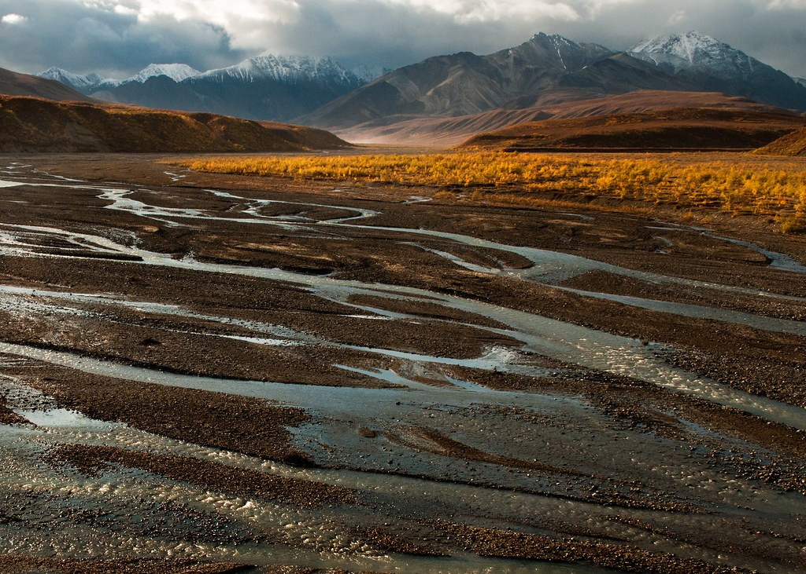
2. transfer/refs/braided_lowangle_golden.jpgRead: transfer/refs/braided_lowangle_healy.jpg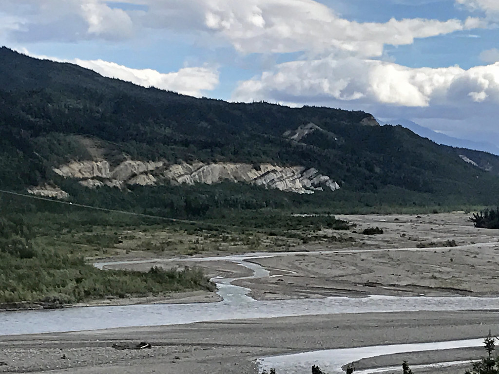
3. transfer/refs/braided_lowangle_healy.jpgRead: transfer/refs/braided_lowangle_overcast_nz.jpg 4. transfer/refs/braided_lowangle_overcast_nz.jpg
4. transfer/refs/braided_lowangle_overcast_nz.jpg
Read: transfer/refs/braided_close_iori_riffles.jpg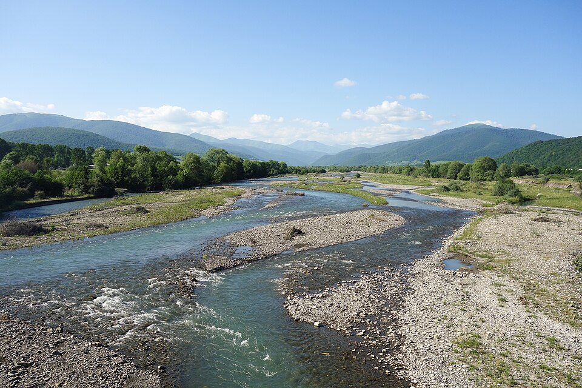
5. transfer/refs/braided_close_iori_riffles.jpgRead: transfer/refs/braided_close_cobbles_channel.jpg 6. transfer/refs/braided_close_cobbles_channel.jpg
6. transfer/refs/braided_close_cobbles_channel.jpg
Read: transfer/refs/braided_bars_denali.jpg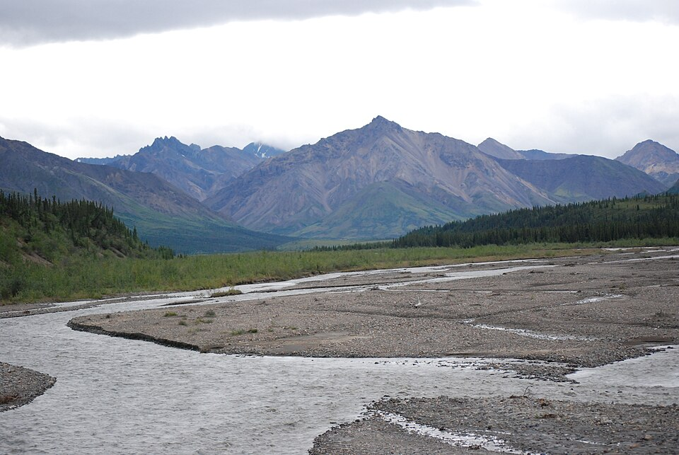
7. transfer/refs/braided_bars_denali.jpgRead: transfer/refs/braided_hoh_gravel_bar.jpg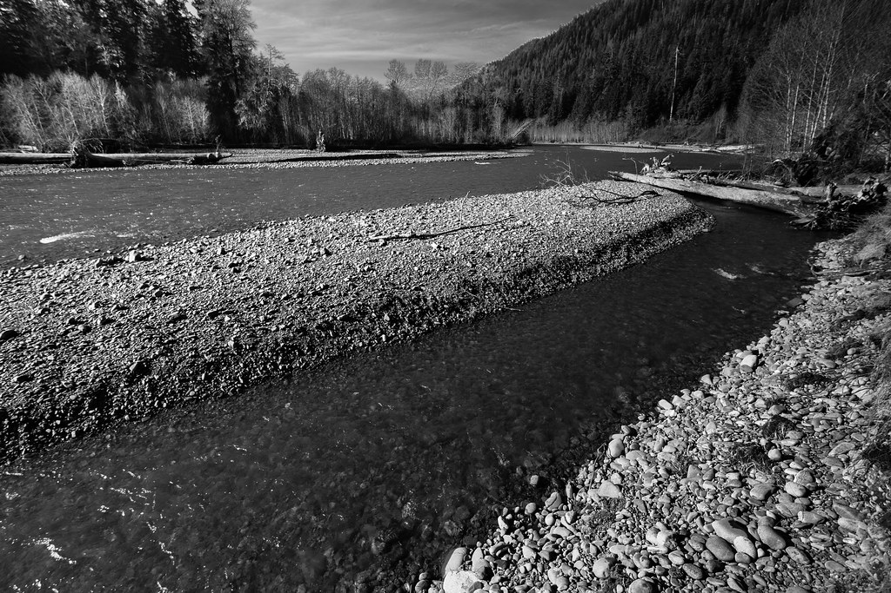
8. transfer/refs/braided_hoh_gravel_bar.jpgRead: transfer/refs/braided_aerial_nz.jpg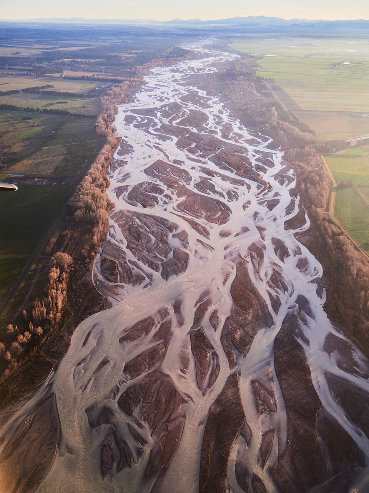
9. transfer/refs/braided_aerial_nz.jpgBash: Fetch more braided river photos
cd ~/work/pixelart-studies; sed -n 1,60p tools/imgfetch.py; mkdir -p elements/channel/refs; cd elements/channel; nice -n 10 python3 ~/work/pixelart-studies/tools/imgfetch.py "braided river channel reflection" -n 12 -o refs --sheet 2>&1 | tail -20
# output:
#!/usr/bin/env python3
"""imgfetch: fast, polite reference-image sourcing (Wikimedia Commons + Openverse).
python3 imgfetch.py "cinder cone scoria slope" -n 12 -o refs/cinder
python3 imgfetch.py -f queries.txt -n 8 -o refs # one query per line; subdir per query
options: --src commons,openverse --width 1200 --sheet (writes <out>/_sheet.jpg)
Writes images plus <out>/sources.tsv (file, title, license, author, page url).
Cached: files already present are skipped. Handles 429/5xx with Retry-After backoff.
Parallel downloads (4 workers) with a shared per-host rate limiter (~3 req/s; Wikimedia's media
host is kept to 1 per 2 s and slows further on any 429, since it throttles hard per IP after bursts).
Openverse (mostly Flickr-hosted CC images) is the primary source because it stays fast.
"""
import argparse, concurrent.futures as cf, json, os, re, sys, threading, time, urllib.error, urllib.parse, urllib.request
UA = "pixelart-studies-imgfetch/1.0 (research; contact: local)"
_locks = {}; _last = {}; _glock = threading.Lock()
SLOW_HOSTS = {"upload.wikimedia.org": 2.0} # Wikimedia media host: ~1 req/s or it 429s
def _throttle(host, min_gap=0.34):
min_gap = SLOW_HOSTS.get(host, min_gap)
with _glock:
lk = _locks.setdefault(host, threading.Lock())
with lk:
dt = time.time() - _last.get(host, 0)
if dt < min_gap:
time.sleep(min_gap - dt)
_last[host] = time.time()
def get(url, tries=4, timeout=25):
host = urllib.parse.urlparse(url).netloc
if host == "upload.wikimedia.org":
tries = 2 # fail fast; other sources fill in
for i in range(tries):
_throttle(host)
try:
req = urllib.request.Request(url, headers={"User-Agent": UA})
return urllib.request.urlopen(req, timeout=timeout).read()
except urllib.error.HTTPError as e:
if e.code == 429:
with _glock:
SLOW_HOSTS[host] = min(8.0, SLOW_HOSTS.get(host, 0.34) * 2) # adapt: this host wants us slower
if e.code in (429, 500, 502, 503, 504) and i < tries - 1:
wait = min(15, int(e.headers.get("Retry-After") or 0) or 2 * 2 ** i)
time.sleep(wait); continue
raise
except (urllib.error.URLError, TimeoutError):
if i < tries - 1:
time.sleep(2 * (i + 1)); continue
raise
def commons(query, n, width):
q = urllib.parse.urlencode({"action": "query", "generator": "search", "gsrnamespace": 6, "gsrlimit": min(50, n * 3),
"gsrsearch": query + " filetype:bitmap", "prop": "imageinfo",
"iiprop": "url|size|extmetadata", "iiurlwidth": min((b for b in (330, 500, 960, 1280) if b >= width), default=1280), "format": "json"})
d = json.loads(get("https://commons.wikimedia.org/w/api.php?" + q))
out = []
for p in sorted(d.get("query", {}).get("pages", {}).values(), key=lambda Bash: Check fetched photos and fetch more
cd ~/work/pixelart-studies/elements/channel; ls refs; cat refs/sources.tsv | cut -f1,2 ; nice -n 10 python3 ~/work/pixelart-studies/tools/imgfetch.py "river gravel bar shallow water sunset" -n 8 -o refs2 --sheet 2>&1 | tail -2; nice -n 10 python3 ~/work/pixelart-studies/tools/imgfetch.py "riffle shallow stream stones" -n 8 -o refs3 --sheet 2>&1 | tail -2 # output: _sheet.jpg commons_Braided_Stream_FairbanksTananaRiver_jpg_5b22058b.jpg commons_Four_Corners_Southwestern_U_S_jpg_e759ec9e.jpg commons_Glaciar_y_laguna_Colonia_afluente_r_o_Baker_JPG_646db941.jpg commons_The_snaking_braided_channel_of_the_Elaho_River_j_e1531b2c.jpg openverse_A_braided_river_channel_Garibaldi_Provincial_Par_1a5f27e4.jpg openverse_Tromp_Spring_5_July_2012_2_3b910e3e.jpg openverse_Tromp_Spring_5_June_2013_08_b68c27b1.jpg openverse_sts051_101_047_05498ebc.jpg sources.tsv openverse_sts051_101_047_05498ebc.jpg sts051-101-047 openverse_Tromp_Spring_5_June_2013_08_b68c27b1.jpg Tromp Spring (5 June 2013) 08 commons_Glaciar_y_laguna_Colonia_afluente_r_o_Baker_JPG_646db941.jpg Glaciar y laguna Colonia, afluente río Baker.JPG openverse_Tromp_Spring_5_July_2012_2_3b910e3e.jpg Tromp Spring (5 July 2012) 2 commons_Four_Corners_Southwestern_U_S_jpg_e759ec9e.jpg Four Corners, Southwestern U.S.jpg openverse_A_braided_river_channel_Garibaldi_Provincial_Par_1a5f27e4.jpg A braided river channel, Garibaldi Provincial Park, British Columbia, Canada commons_The_snaking_braided_channel_of_the_Elaho_River_j_e1531b2c.jpg The snaking, braided channel of the Elaho River.jpg commons_Braided_Stream_FairbanksTananaRiver_jpg_5b22058b.jpg Braided Stream FairbanksTananaRiver.jpg 'river gravel bar shallow water sunset': 8 images -> refs2 'riffle shallow stream stones': 8 images -> refs3
Read: elements/channel/refs/_sheet.jpg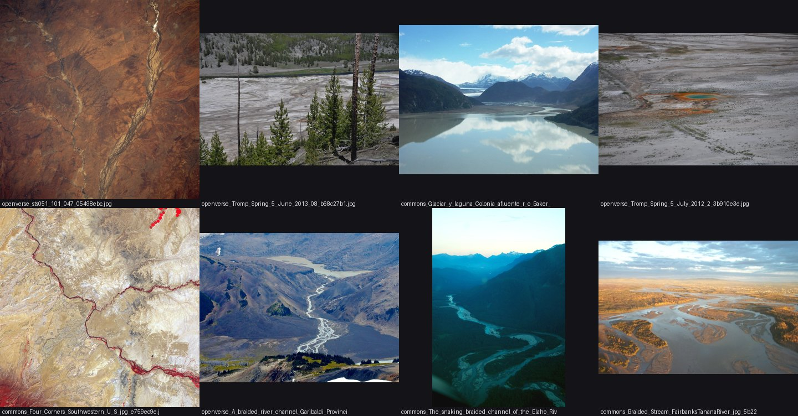
10. elements/channel/refs/_sheet.jpgRead: elements/channel/refs2/_sheet.jpg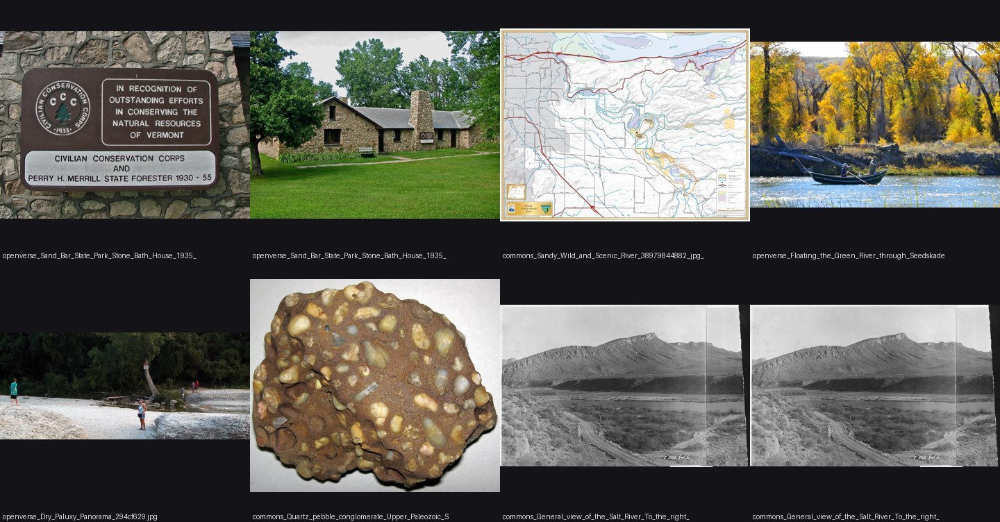
11. elements/channel/refs2/_sheet.jpgRead: elements/channel/refs3/_sheet.jpg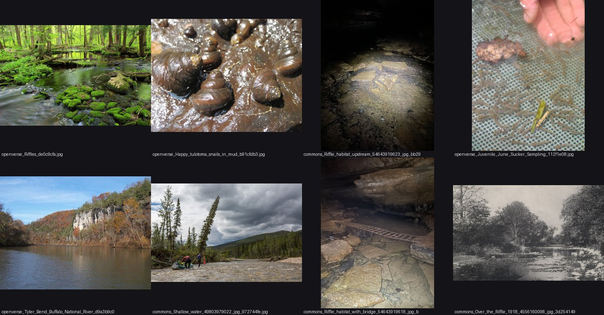
12. elements/channel/refs3/_sheet.jpgBash: Fetch additional photo queries
cd ~/work/pixelart-studies/elements/channel; rm -rf refs2; nice -n 10 python3 ~/work/pixelart-studies/tools/imgfetch.py "gravel bar river shallow evening light" -n 10 -o refs4 --sheet 2>&1 | tail -1; nice -n 10 python3 ~/work/pixelart-studies/tools/imgfetch.py "shallow river riffle gravel" -n 10 -o refs5 --sheet 2>&1 | tail -1 # output: 'gravel bar river shallow evening light': 10 images -> refs4 'shallow river riffle gravel': 10 images -> refs5
Read: elements/channel/refs4/_sheet.jpg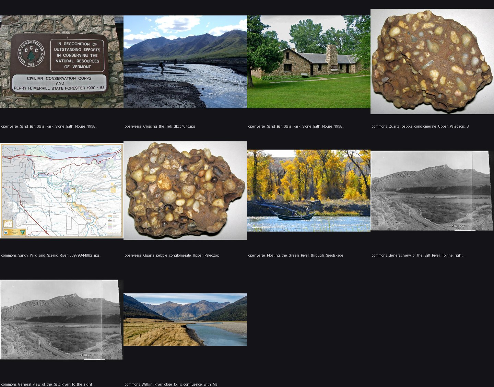
13. elements/channel/refs4/_sheet.jpgRead: elements/channel/refs5/_sheet.jpg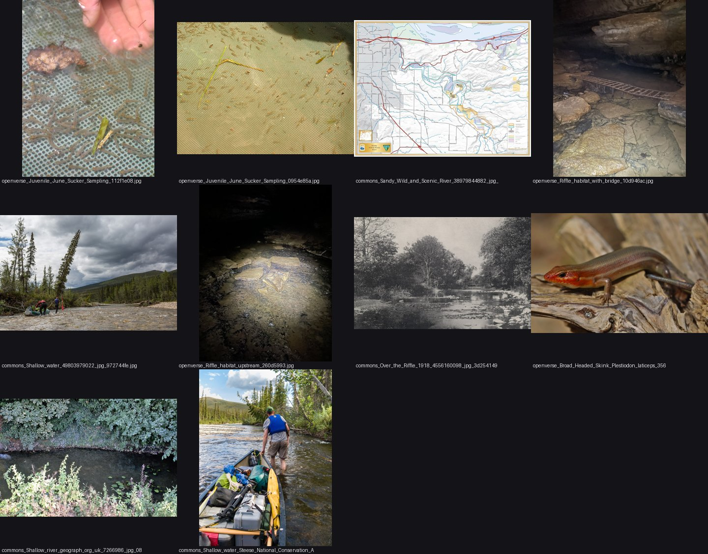
14. elements/channel/refs5/_sheet.jpgBash: Curate useful photos into photos folder
cd ~/work/pixelart-studies/elements/channel; mkdir -p photos; for p in "refs4/*Tek*" "refs4/*Wilkin*" "refs5/*Steese*" "refs5/*Shallow_water_4980*" "refs3/*Over_the_Riffle*" "refs/*Glaciar*" "refs/*Tanana*" "refs/*Elaho*" "refs/*Garibaldi*" "refs3/*Riffles_de0*"; do mv $p photos/ 2>/dev/null; done; cat refs*/sources.tsv > photos/sources.tsv; rm -rf refs refs3 refs4 refs5; ls photos; python3 -c "
from PIL import Image;import glob
for f in sorted(glob.glob('photos/*.jpg')): print(f, Image.open(f).size)"
# output:
sources.tsvBash: Refetch photos into scratchpad, copy good ones
cd ~/work/pixelart-studies/elements/channel; rm -f photos/sources.tsv; T=~/work/pixelart-studies/tools/imgfetch.py nice -n 10 python3 $T "braided river channel reflection" -n 12 -o (manager scratchpad)/f1 >/dev/null 2>&1 nice -n 10 python3 $T "riffle shallow stream stones" -n 8 -o (manager scratchpad)/f3 >/dev/null 2>&1 nice -n 10 python3 $T "gravel bar river shallow evening light" -n 10 -o (manager scratchpad)/f4 >/dev/null 2>&1 nice -n 10 python3 $T "shallow river riffle gravel" -n 10 -o (manager scratchpad)/f5 >/dev/null 2>&1 S=(manager scratchpad) bash -c "cd $S; cp f4/*Tek* f4/*Wilkin* f5/*Steese* f5/*Shallow_water_4980* f3/*Over_the_Riffle* f1/*Glaciar* f1/*Tanana* f1/*Elaho* f1/*Garibaldi* f3/*Riffles_de0* ~/work/pixelart-studies/elements/channel/photos/; cat f*/sources.tsv > ~/work/pixelart-studies/elements/channel/photos/sources.tsv"; ls photos # output: commons_Braided_Stream_FairbanksTananaRiver_jpg_5b22058b.jpg commons_Glaciar_y_laguna_Colonia_afluente_r_o_Baker_JPG_646db941.jpg commons_Over_the_Riffle_1918_4556160098_jpg_3d254149.jpg commons_Shallow_water_49803979022_jpg_972744fe.jpg commons_Shallow_water_Steese_National_Conservation_Area__3d2dbf38.jpg commons_The_snaking_braided_channel_of_the_Elaho_River_j_e1531b2c.jpg commons_Wilkin_River_close_to_its_confluence_with_Makaro_3b477161.jpg openverse_A_braided_river_channel_Garibaldi_Provincial_Par_1a5f27e4.jpg openverse_Crossing_the_Tek_dbcc404c.jpg openverse_Riffles_de0c9cfa.jpg sources.tsv
Read: elements/channel/photos/openverse_Crossing_the_Tek_dbcc404c.jpg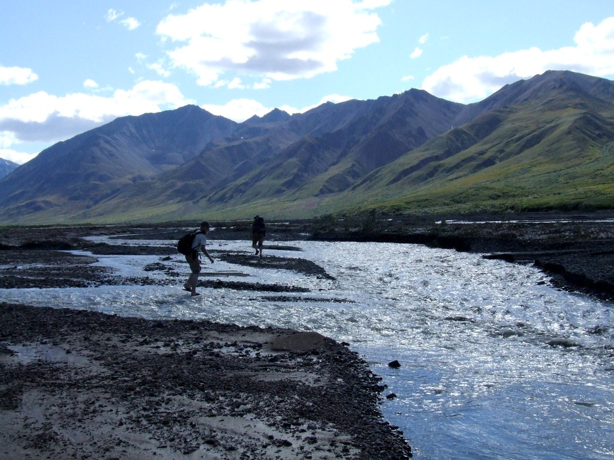
15. elements/channel/photos/openverse_Crossing_the_Tek_dbcc404c.jpgRead: elements/channel/photos/commons_Wilkin_River_close_to_its_confluence_with_Makaro_3b477161.jpg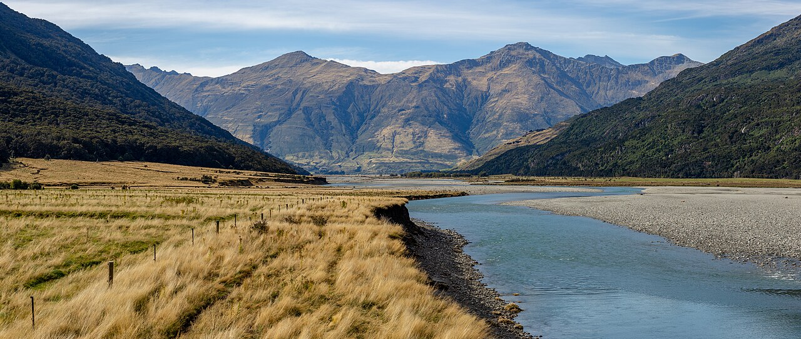
16. elements/channel/photos/commons_Wilkin_River_close_to_its_confluence_with_Makaro_3b477161.jpgRead: elements/channel/photos/commons_Braided_Stream_FairbanksTananaRiver_jpg_5b22058b.jpg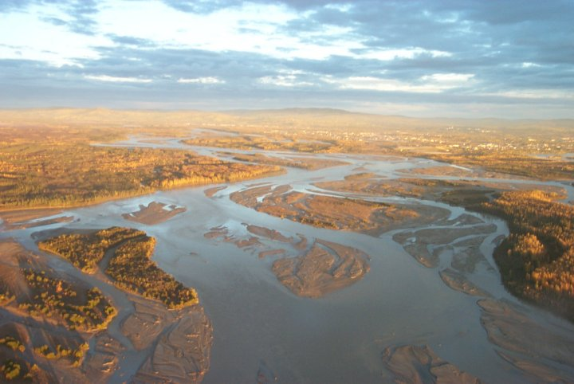
17. elements/channel/photos/commons_Braided_Stream_FairbanksTananaRiver_jpg_5b22058b.jpgRead: pedagogy/master-copy/ref/lw/V19.png 18. pedagogy/master-copy/ref/lw/V19.png
18. pedagogy/master-copy/ref/lw/V19.png
Read: pedagogy/master-copy/ref/lw/V16.png 19. pedagogy/master-copy/ref/lw/V16.png
19. pedagogy/master-copy/ref/lw/V16.png
Bash: Montage other Ferrari scenes
cd ~/work/pixelart-studies/pedagogy/master-copy/ref/lw; S=(manager scratchpad); python3 -c "
from PIL import Image
fs=['V01','V02','V09','V11AM','V13','V14','V29PM','V30']
W=Image.new('RGB',(640*4,480*2))
for i,f in enumerate(fs):
im=Image.open(f+'.png').convert('RGB'); W.paste(im,((i%4)*640,(i//4)*480))
W.resize((1920,720)).save('$S/lw_sheet.png')"; ls ~/work/pixelart-studies/shared/refs; cat palette_usage.txt | head -30
# output:
ferrari_alpine_tarn_dusk.png
ferrari_mossy_forest_pool.png
ferrari_snow_forest_boulders.webp
cat: palette_usage.txt: No such file or directoryRead: (manager scratchpad)/lw_sheet.png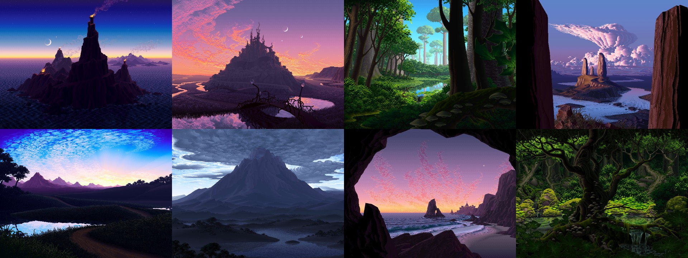
20. (manager scratchpad)/lw_sheet.pngRead: pedagogy/master-copy/ref/lw/V02.png 21. pedagogy/master-copy/ref/lw/V02.png
21. pedagogy/master-copy/ref/lw/V02.png
Read: pedagogy/master-copy/ref/lw/V11AM.png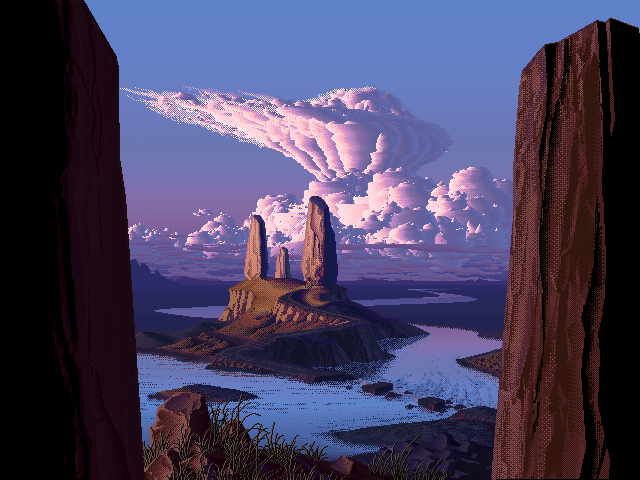
22. pedagogy/master-copy/ref/lw/V11AM.pngBash: Zoom crops of Ferrari river passages
mkdir -p ~/work/pixelart-studies/elements/channel/{src,out,study}; cd ~/work/pixelart-studies/elements/channel; cat > src/zoomcrop.py <<'EOF'
"""zoomcrop.py <img> x y w h scale out -- nearest-neighbour crop zoom (native pixels)."""
import sys
from PIL import Image
f,x,y,w,h,s,o=sys.argv[1:8]; x,y,w,h,s=map(int,(x,y,w,h,s))
im=Image.open(f).convert('RGB').crop((x,y,x+w,y+h))
im.resize((w*s,h*s),Image.NEAREST).save(o)
EOF
L=~/work/pixelart-studies/pedagogy/master-copy/ref/lw
python3 src/zoomcrop.py $L/V02.png 0 275 170 100 5 study/v02_ribbons.png
python3 src/zoomcrop.py $L/V11AM.png 140 280 360 150 3 study/v11_river.png
python3 src/zoomcrop.py $L/V11AM.png 380 330 120 80 8 study/v11_riffle8.png
# output:
(Bash completed with no output)Read: elements/channel/study/v02_ribbons.png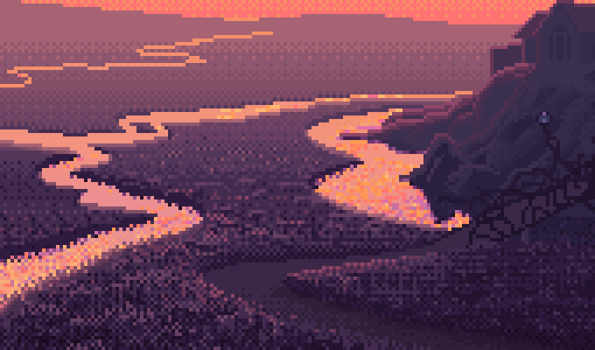
23. elements/channel/study/v02_ribbons.pngRead: elements/channel/study/v11_river.png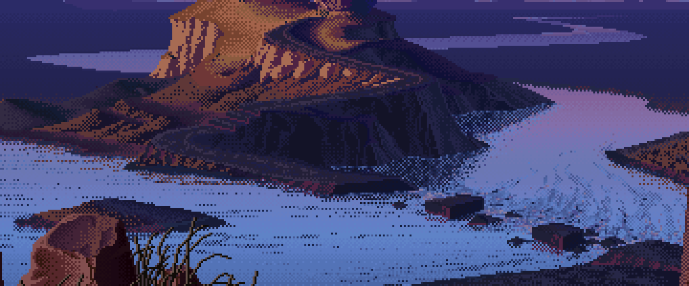
24. elements/channel/study/v11_river.pngRead: elements/channel/study/v11_riffle8.png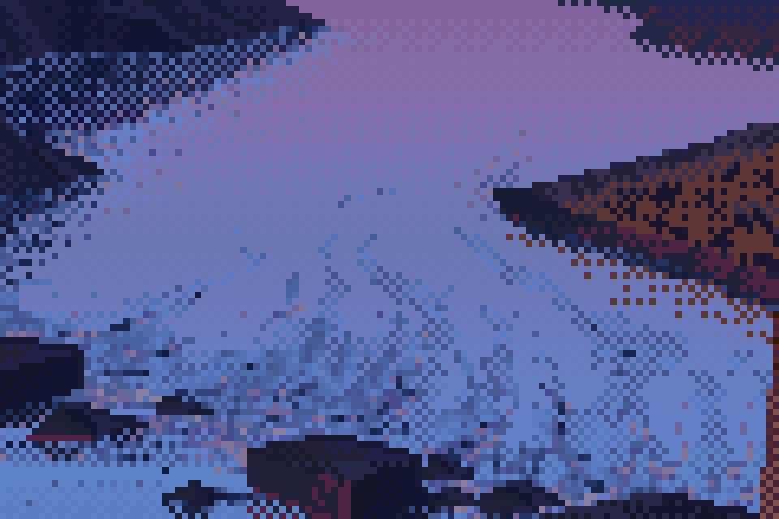
25. elements/channel/study/v11_riffle8.pngBash: Grep other lessons for water notes
cd ~/work/pixelart-studies/pedagogy; grep -n -i -E "water|reflect|sheen|shallow" analysis/LESSONS.md observation/LESSONS.md atelier/LESSONS.md | head -60 # output: observation/LESSONS.md:30:- **Boulders at still water, and their reflections:** r16, r18 (a stone in flat water), r19 observation/LESSONS.md:31: (Blea Tarn: a boulder at the lip of a grass bank, reflected, with sedge coming out of the water). observation/LESSONS.md:32:- **Grass banks and tussocks against water, and grass in low sun:** r20, r22, r23. observation/LESSONS.md:33:- **Dusk water carrying the sky:** r21, r24, r25 (Lake Cerknica, pink over violet). observation/LESSONS.md:69:### Where the bank meets the water, and reflections (r19, r25, r18) observation/LESSONS.md:70:- **Reflections are darker than what they reflect.** Sky mid band L*=86 against its reflection observation/LESSONS.md:72: Water is a Fresnel mirror, and near the viewer it shows the dark water body. observation/LESSONS.md:73:- **Reflections show the underside.** You look down at the bank and the mirror looks up at it, observation/LESSONS.md:74: so the reflection is shorter and made mostly of the shadowed faces. observation/LESSONS.md:75:- **At the far waterline there is a light line**, the water right at the edge reflecting sky at observation/LESSONS.md:78:- **Still water is broken into horizontal streaks** by faint ripples and wind-lines, which observation/LESSONS.md:79: reflect a slightly higher, lighter part of the sky. observation/LESSONS.md:88:The 2-value notan of every dusk photo is the same: **the sky and the water that mirrors it form observation/LESSONS.md:103: 1.5 px (`crop_grass_tips_on_water.png`). Near the tips they lean in equal steps. observation/LESSONS.md:113:- **Stones at the waterline** (`stones8.png`) are three or four flat values, the darkest as a line observation/LESSONS.md:114: underneath. Their reflections are horizontal slabs one step darker. observation/LESSONS.md:115:- **Water and sky:** flat bands of adjacent ramp colours joined by 50% checkerboard strips. observation/LESSONS.md:116: Reflections of things are horizontal runs, and light wind-lines cut across them. observation/LESSONS.md:142:- **C, the lip and its reflection** (`translate_C.png`): the reflection is mirrored and observation/LESSONS.md:144: marks the waterline at middle distance. A ragged edge fades the reflection into the sky-water. observation/LESSONS.md:147:- **E, near blades against water** (`translate_E.png`): each blade leans by runs that shorten observation/LESSONS.md:149: vertical. Tan blades stand against the water. observation/LESSONS.md:165:tops); AO; blade translucency when back-lit. The water is a rippled Fresnel mirror that observation/LESSONS.md:169:ground, what each water pixel reflects, and the wind-lines. observation/LESSONS.md:174:- grass shadow family: dark olive, darker olive, black; plus one mid tone for reflections; observation/LESSONS.md:178:- water: 4 colours, the sky ramp darkened as Fresnel predicts; observation/LESSONS.md:182:checker strips; faceted mountains; mark-painted trees and far bank; water reflections as observation/LESSONS.md:183:horizonta
Bash: Skim fl.py and c4_water.py
cd ~/work/pixelart-studies; ls elements/channel; grep -n "^def " pedagogy/master-copy/src/fl.py; sed -n 1,80p pedagogy/master-copy/src/c4_water.py
# output:
out
photos
src
study
15:def tile(m, h, w, ox=0, oy=0):
22:def ordered_ramp(v, ramp, matrix=BAYER2, ox=0, oy=0):
34:def stipple_ramp(v, ramp, rng, grain=1.0):
52:def banded(v, width=0.45):
64:def value_noise(h, w, scale, rng, octaves=1, persistence=0.5, aniso=(1.0, 1.0)):
82:def poly_mask(h, w, pts):
90:def below_curve(h, w, ys):
96:def interp_curve(w, pts):
101:def line(canvas, x0, y0, x1, y1, c, mask=None):
115:def to_rgb(canvas, pal):
120:def threshold_field(h, w, rng, checker=0.3, grain=1.0, aniso=(1.0, 1.0)):
135:def dither(u, classes, t):
144:def scatter(u, classes, t, spread=0.45):
155:def hstreaks(h, w, rng, ramp, mean_len=6.0, bias=None):
171:def boulder_field(h, w, cx, cy, rx, ry, rng, squareness=2.2, facet_px=0.0, facet_tilt=0.0,
215:def lambert(N, L, ambient=0.0, wrap=0.0):
221:def outline(mask, side_vec, width=1):
232:def two_family(s, terminator=0.35, light=(6.0, 9.0), shadow=(1.0, 3.0), gamma=0.8):
243:def strands(h, w, rng, classes_fn, u_fn, runmean_fn, mask=None, spread=0.55, rho_fn=None,
331:def sheared_strands(h, w, rng, shear_step, mask=None, tuft=None, **kw):
357:def clean_curve(w, pts, slopes=CLEAN_SLOPES, max_seg=None):
384:def clean_mask(mask, iters=1):
"""Copy 4: water's edge -- mirrored reflection, sheen, shallow shelf with stones, and the
shadowed grass bank whose blades break the skyline of the water.
Ref crop native (250,330,200,139).
Discovered procedure:
* The water re-uses the SKY'S OWN ramp (index-identical in the Living Worlds file) for
the mirrored sky, then adds a few water-only tints: a lighter, pinker SHEEN band just
below the reflected objects (grazing-angle reflection is brightest), sinking to a
duller lilac, then a dark violet-brown SHALLOW shelf near the shore where you see
bottom instead of sky. Value falls toward the viewer.
* Mirrored objects keep their colours and even their lit rims (now on the lower edge),
but a reflected pine trails a soft dithered streak below its tip: the only 'blur'.
* Transitions in water: checkerboard between near-identical tints + sparse horizontal
DASH lines (every other pixel of a row in the next-lighter tint) -- the surface.
* Shallow shelf edges are flat horizontal lines; stones are flat lozenges: dark body,
darker underside line, a 1px light water-line lapping round them.
* Shadow bank: 4 classes (black, black-olive, olive, grey-olive), strands shorter and
busier than the lit bank (vertical coherence 0.53 vs 0.78) and leaning '\\' (tips to
the upper-left, down-slope). The silhouette against the water is not an edge but a
fringe of separate 1px blades, 4-14 px, curved, often in V / Y pairs.
"""
import sys; sys.path.insert(0, 'src')
import numpy as np
from PIL import Image
import fl, compare
W, H = 200, 139
WATER = [(64, 48, 55), (103, 80, 87), (131, 101, 112), (154, 119, 136), (173, 141, 165),
(180, 144, 167), (198, 152, 170), (201, 154, 174), (217, 159, 169), (200, 165, 193),
(207, 161, 186), (213, 18Bash: Check python libs
cd ~/work/pixelart-studies/elements/channel; python3 -c "import numpy, PIL, scipy; print(numpy.__version__, PIL.__version__, scipy.__version__)"; python3 -c "import skimage; print(skimage.__version__)" 2>&1 | tail -1 # output: 1.26.4 11.1.0 1.14.0 0.25.2
Bash: Measure sky vs water luminance in photos
cd ~/work/pixelart-studies/elements/channel; cat > src/sample.py <<'EOF'
"""Sample mean L* in named boxes of a photo; write an annotated copy so the boxes can be checked by eye."""
import sys, json
import numpy as np
from PIL import Image, ImageDraw
from skimage.color import rgb2lab
def run(path, boxes, out):
im = Image.open(path).convert('RGB'); a = np.asarray(im) / 255.0
L = rgb2lab(a)[..., 0]
d = ImageDraw.Draw(im)
res = {}
for name, (x, y, w, h) in boxes.items():
res[name] = round(float(L[y:y+h, x:x+w].mean()), 1)
d.rectangle((x, y, x+w, y+h), outline=(255, 0, 0), width=2); d.text((x+2, y+2), name, fill=(255, 0, 0))
im.save(out); return res
if __name__ == '__main__':
spec = json.load(open(sys.argv[1]))
for k, v in spec.items():
print(k, run(v['path'], v['boxes'], 'study/samp_' + k + '.jpg'))
EOF
R=~/work/pixelart-studies/transfer/refs
cat > study/samples.json <<EOF
{"overcast_nz": {"path": "$R/braided_lowangle_overcast_nz.jpg", "boxes": {"sky_hz": [60,150,120,40], "sky_hi": [300,20,120,40], "mtn": [620,160,80,30], "water_far": [640,275,60,6], "water_mid": [760,310,60,10], "water_near": [620,395,60,8], "gravel": [520,420,80,40]}},
"denali": {"path": "$R/braided_bars_denali.jpg", "boxes": {"sky_hz": [420,120,120,30], "sky_hi": [300,10,120,30], "mtn": [480,250,80,40], "water_far": [420,395,60,6], "water_near": [100,560,200,50], "gravel": [300,450,150,40]}},
"golden": {"path": "$R/braided_lowangle_golden.jpg", "boxes": {"sky_hz": [420,150,60,20], "cloud": [560,10,120,20], "mtn": [520,120,80,30], "water_mid": [300,440,100,10], "water_near": [100,520,200,30], "gravel": [150,300,150,30]}}
}
EOF
python3 src/sample.py study/samples.json
# output:
overcast_nz {'sky_hz': 84.4, 'sky_hi': 86.4, 'mtn': 28.1, 'water_far': 51.2, 'water_mid': 34.9, 'water_near': 59.6, 'gravel': 25.6}
denali {'sky_hz': 100.0, 'sky_hi': 90.9, 'mtn': 50.7, 'water_far': 58.6, 'water_near': 70.8, 'gravel': 51.7}
golden {'sky_hz': 42.2, 'cloud': 82.0, 'mtn': 37.6, 'water_mid': 24.2, 'water_near': 21.2, 'gravel': 24.3}Read: elements/channel/study/samp_overcast_nz.jpg 26. elements/channel/study/samp_overcast_nz.jpg
26. elements/channel/study/samp_overcast_nz.jpg
Bash: Percentile-based water vs gravel luminance
cd ~/work/pixelart-studies/elements/channel; python3 - <<'EOF'
import numpy as np
from PIL import Image
from skimage.color import rgb2lab
R='~/work/pixelart-studies/transfer/refs/'
def L(p): return rgb2lab(np.asarray(Image.open(R+p).convert('RGB'))/255.)[...,0]
a=L('braided_lowangle_overcast_nz.jpg')
# water band region rows 250-470; water = top 10% brightest in each row band
for y0 in (240,280,320,360,400,440):
b=a[y0:y0+40,200:900].ravel(); print('nz rows',y0, 'water~p97',round(np.percentile(b,97),1),'gravel~p30',round(np.percentile(b,30),1))
print('nz sky hz',round(a[150:200,0:300].mean(),1))
a=L('braided_bars_denali.jpg')
for y0 in (380,420,480,540,600):
b=a[y0:y0+30,0:960].ravel(); print('denali',y0,round(np.percentile(b,95),1),round(np.percentile(b,30),1))
print('denali sky', round(a[100:180,300:700].mean(),1))
EOF
# output:
nz rows 240 water~p97 94.8 gravel~p30 34.9
nz rows 280 water~p97 98.8 gravel~p30 32.7
nz rows 320 water~p97 99.3 gravel~p30 31.3
nz rows 360 water~p97 76.7 gravel~p30 28.1
nz rows 400 water~p97 82.3 gravel~p30 16.3
nz rows 440 water~p97 70.9 gravel~p30 16.5
nz sky hz 83.2
denali 380 77.7 35.0
denali 420 74.3 44.7
denali 480 81.2 46.4
denali 540 78.8 62.3
denali 600 78.1 47.1
denali sky 99.2Bash: Inspect Living Worlds JSON loader
cd ~/work/pixelart-studies/pedagogy/master-copy/src; cat lwload.py | head -60; python3 -c "
import json;d=json.load(open('../ref/lw/V02.json'));print(d.keys() if isinstance(d,dict) else type(d))
fk=d.get('filename',None); print({k:(type(v).__name__, (len(v) if hasattr(v,'__len__') else v)) for k,v in d.items()})"
# output:
Exit code 1
import re, json, numpy as np
def load(name):
t=open(f'ref/lw/{name}.json').read()
t=re.sub(r'([{,])\s*([A-Za-z_]+)\s*:', r'\1"\2":', t).replace("'",'"')
d=json.loads(t)
d['pal']=np.array(d['colors'],dtype=np.uint8)
d['idx']=np.array(d['pixels'],dtype=np.int32).reshape(d['height'],d['width'])
return d
Traceback (most recent call last):
File "<string>", line 2, in <module>
File "~/miniconda3/lib/python3.12/json/__init__.py", line 293, in load
return loads(fp.read(),
^^^^^^^^^^^^^^^^
File "~/miniconda3/lib/python3.12/json/__init__.py", line 346, in loads
return _default_decoder.decode(s)
^^^^^^^^^^^^^^^^^^^^^^^^^^
File "~/miniconda3/lib/python3.12/json/decoder.py", line 337, in decode
obj, end = self.raw_decode(s, idx=_w(s, 0).end())
^^^^^^^^^^^^^^^^^^^^^^^^^^^^^^^^^^^^^^
File "~/miniconda3/lib/python3.12/json/decoder.py", line 353, in raw_decode
obj, end = self.scan_once(s, idx)
^^^^^^^^^^^^^^^^^^^^^^
json.decoder.JSONDecodeError: Expecting property name enclosed in double quotes: line 1 column 2 (char 1)Bash: Load V02 index data, list colours in ribbon crop
cd ~/work/pixelart-studies/pedagogy/master-copy; python3 -c "
import sys; sys.path.insert(0,'src'); import lwload, numpy as np
d=lwload.load('V02'); print(d.keys()); print(d['width'],d['height'], d.get('cycles'))
idx=d['idx']; sub=idx[275:375,0:170]; u,c=np.unique(sub,return_counts=True)
o=np.argsort(-c)
for i in o[:40]: print(u[i], c[i], d['pal'][u[i]])
"
# output:
dict_keys(['filename', 'width', 'height', 'colors', 'cycles', 'pixels', 'pal', 'idx'])
640 480 [{'reverse': 0, 'rate': 1689, 'low': 240, 'high': 246}, {'reverse': 0, 'rate': 1995, 'low': 247, 'high': 253}, {'reverse': 0, 'rate': 2304, 'low': 232, 'high': 239}, {'reverse': 0, 'rate': 2304, 'low': 224, 'high': 231}, {'reverse': 0, 'rate': 2304, 'low': 216, 'high': 223}, {'reverse': 0, 'rate': 2304, 'low': 208, 'high': 215}, {'reverse': 0, 'rate': 2304, 'low': 200, 'high': 207}, {'reverse': 0, 'rate': 2304, 'low': 192, 'high': 199}, {'reverse': 0, 'rate': 2148, 'low': 184, 'high': 191}, {'reverse': 0, 'rate': 2304, 'low': 176, 'high': 183}, {'reverse': 0, 'rate': 2304, 'low': 168, 'high': 175}, {'reverse': 0, 'rate': 2304, 'low': 160, 'high': 167}, {'reverse': 0, 'rate': 2304, 'low': 144, 'high': 151}, {'reverse': 0, 'rate': 2304, 'low': 152, 'high': 159}, {'reverse': 0, 'rate': 2304, 'low': 136, 'high': 143}, {'reverse': 0, 'rate': 2304, 'low': 128, 'high': 135}]
79 1895 [67 43 79]
80 1779 [47 27 63]
73 1549 [167 99 115]
81 1041 [35 19 47]
74 976 [143 87 111]
75 974 [131 79 103]
78 779 [83 55 91]
77 671 [103 63 99]
76 580 [115 71 99]
1 474 [255 115 115]
61 371 [43 31 63]
51 351 [103 55 87]
82 302 [31 15 39]
57 298 [59 47 79]
88 292 [47 31 55]
58 279 [55 43 75]
4 279 [243 147 123]
87 278 [59 39 71]
2 255 [247 143 103]
59 253 [51 39 71]
52 225 [75 47 79]
5 209 [243 147 131]
86 199 [59 39 71]
60 177 [47 35 67]
64 177 [31 19 43]
6 174 [239 143 135]
63 173 [35 23 51]
54 169 [67 47 79]
48 143 [143 71 103]
7 141 [235 143 147]
56 140 [59 47 79]
3 130 [243 143 111]
89 128 [43 23 47]
42 98 [255 155 83]
55 93 [63 47 79]
40 62 [255 123 103]
85 61 [59 39 71]
62 60 [39 27 59]
83 51 [27 11 31]
134 49 [243 151 131]Bash: Print V02 palette ramps
cd ~/work/pixelart-studies/pedagogy/master-copy; python3 -c "
import sys; sys.path.insert(0,'src'); import lwload, numpy as np
d=lwload.load('V02'); idx=d['idx']; pal=d['pal']
L=lambda c: int(0.3*c[0]+0.59*c[1]+0.11*c[2])
for i in list(range(0,16))+list(range(40,50))+list(range(70,90)): print(i, pal[i], L(pal[i]))
"
# output:
0 [0 0 0] 0
1 [255 115 115] 157
2 [247 143 103] 169
3 [243 143 111] 169
4 [243 147 123] 173
5 [243 147 131] 174
6 [239 143 135] 170
7 [235 143 147] 171
8 [227 143 159] 169
9 [219 139 167] 166
10 [211 135 171] 161
11 [203 127 175] 155
12 [191 123 171] 148
13 [175 119 167] 141
14 [151 111 163] 128
15 [131 103 159] 117
40 [255 123 103] 160
41 [255 139 91] 168
42 [255 155 83] 177
43 [255 183 115] 197
44 [255 207 147] 214
45 [255 231 179] 232
46 [255 247 211] 245
47 [255 255 255] 255
48 [143 71 103] 96
49 [ 95 59 107] 75
70 [11 0 0] 3
71 [35 7 23] 17
72 [95 51 79] 67
73 [167 99 115] 121
74 [143 87 111] 106
75 [131 79 103] 97
76 [115 71 99] 87
77 [103 63 99] 78
78 [83 55 91] 67
79 [67 43 79] 54
80 [47 27 63] 36
81 [35 19 47] 26
82 [31 15 39] 22
83 [27 11 31] 18
84 [15 7 15] 10
85 [59 39 71] 48
86 [59 39 71] 48
87 [59 39 71] 48
88 [47 31 55] 38
89 [43 23 47] 31Bash: ASCII index map of V02 ribbon region
cd ~/work/pixelart-studies/pedagogy/master-copy; python3 -c "
import sys; sys.path.insert(0,'src'); import lwload, numpy as np
d=lwload.load('V02'); idx=d['idx']
ch={0:'#'}
sym={1:'P',2:'O',3:'o',4:'4',5:'5',6:'6',7:'7',8:'8',9:'9',40:'H',41:'h',42:'Y',43:'y',44:'W',73:'m',74:'n',75:'b',76:'v',77:'c',78:'x',79:'.',80:',',81:' ',82:' ',83:' ',84:' '}
for y in range(300,376):
print('%3d '%y+''.join(sym.get(v,'?' if v<100 else '~') for v in idx[y,0:110]))
"
# output:
300 bbbbbbbbbbbbbbbbbbbbbbbbbbbbbbbbbbbbbbbbbbbbbbbbbbbbbbbbbbbbbbbbbbbbbbbbbbbbbbbbbbbbbbbbbbbbbbbbbbbbbbbbbbbbbb
301 bvbvbvbvbvbvbvbvbvbvbvbvbvbvbvbvbvbvbvbvbvbvbvbvbvbvbvbvbvbvbvbvbvbvbvbvbvbvbvbvbvbvbvbvbvbvbvbvbvbvbvbvbvbvbv
302 vbvbvbvbvbvbvbvbvbvbvbvbvbvbvbvbvbvbvbvbvbvbvbvbvbvbvbvbvbvbvbvbvbvbvbvbvbvbvbvbvbvbvbvbvbvxvxvxvxvxoOhyy???yy
303 bvbvbvbvbvbvbvbvbvbvbvbvbvbvbvbvbvbvbvbvbvbvbvbvbvbvbvbvbvbvbvbvbvbvbvbvbvbvbvxvxvxvxvxvxvoooyyoooyYmmmmmmmmmm
304 vvvvvvvvvvvvvvvvvvvvvvvvvvvvvvvvvvvvvvvvvvvvvvvvvvvvvvvvvvvvvvvvvvvvvxvxvxvxvx54555454545ommmmmmmmmmvvvvvvvvvv
305 vvbvvvbvvvbvvvbvvvbvvvbvvvbvvvbvvvbvvvbvvvbvvvbvvvbvvvbvvvxvxvxvxvxvxvo4o4o4Yyyyo4o4?4o4mmbvvvbvvvbvvvbvvvbvvx
306 vvvvvvvvvvvvvvvvvvvvvvvvvvvvvvvvvvvcvxvxvxvxvxvxvxvxvxvxv444444yyy4yy4444yyyY444mmmmmmmmvvvvvvvvvvvvvvvxxxxxxx
307 vcvcvcvcvcvcvcvcvcvcvcvcvcvcvcvcvcxvxxxxxxx44444444444444444444444Y4444444mmmmmmvcvcvcvcvcvcvcvcxxxxxxxxx4o4o4
308 cvvvcvvvcvvvcvvvcvvvcvvvcvvvcvvvcxxx44444444444444444444444444yYyyY444mmmmvvcvvvcvvvcvvvcvvvxxxxxxo4o4o4o4o4YY
309 vcvcvcvcvcvcvcvcvcvcvcvcvcvcvcvcvx45454545454545454545454mmmmmmmmmmmmmvcvcvcvcvcvcvcvcvcvxxxxx4o444o444Y~Y~Y??
310 vxvxvxvxvxcccvcccvcccvcccvcccvcccv444vcccvc444nnnnnnnnnnnvcccvcccvcccvcccvcccvcccvcccvccxxx4o4o4o4o4o4o~~~~~o?
311 xxxxxxxxxvxvxvxvxvxcvcvcxvxvxvxvxvv5454xxcvc4y4.vcvcvcvcvcvcvcvcvcvcvcvcvcvcvcvcvcvcvcvxx44444444~Y~~~????????
312 44444444xxx.......vxvxvxv.......xxxx545....xx454.ccccccccccccccccccccccccccccccccccccccn54444444Yh??hh444?????
313 454545454545454545.......54545454545454545454545.xbccxcccxcccxcccxcccxcccxcccxcccxcccxcn44444545~?????????????
314 45454545454545454545454545454545454545454545nnnn.bcccccccc.ccccccccccbccccccccccccccccccn5454~Y5?~~~~~~~~?????
315 mmmm5454555454545554545455545454555454nnnnnnncccccccc.cxcxcxcxcxcxcxcxcxcxcxcxcxcxcxbxcxcnn454545554YYYYY~~~~~
316 bbbnmmmmmmmm4545454545454nnnnnnnnnnnnnnccccccc.cxcxcxcxcxcxcxc.cxcxcxcxcxc.cxcxcxcxc.cxcxcnnn545HHY~HhhhH54545
317 ccccccvvbbbnmmmmmmmm5545554,,xcccccccccxcxcxcxcxcxcxcxcxb.b.bxcxcxc.b.cxcxcxc.bxc.cxcxcxcxcxnnnnY~Y~hhH5H54H55
318 xxxxxxxxxxxxcccvbbbnmm5555555,,x.xxxxxxxxxxxxcxcxb.bxxxxxxxxxxxx.b.b.b.b.xxxxc.xxxxxxxxxxcxxxxnnnnnhHH55555555
319 xxxxxxxxxxxxxxx,,,,,,,~555YY555nx.bxcxcxbxcxcxc.b.b.cxcxcxxxxxxxxxcxcxcxc.bxxxcxxxcxcxcxcxxxxxxxccnnn?YY555555
320 xxxxxxxxxxxxx,,,,,,,~Y??5656565nxx.xxxxxxcxxxxxxxxxxxxxxxc.cxc.bxcxxxb.xxxxxxx.b.bxxxx.bxcxcxxxxxxxcccn6565YYh
321 x,x.x,xxx,x.,,,,~5~Y65556555mmmxxxxcxxxxxxxcx.bxxxxcxxxxxxx.xxxxxxx.xxxxxxx.bxxxcxc.xxxxx.b.xxcxxxx.,,,~65556H
322 .x.xxx.x.x,,,,?~56Y?Y65mmmmmxx.xcx.xxx.x.x.xxxcx.x.xxx.x.xcxxxcxcxcxxxcxcxcxxxcx.x.xxxcxcx.xxx.x,,,,~~5YY6~6Y6
323 x.x,x.x.x.,,565656565mm.x.xxx.x.x.xxx.x.x.xxx.x.x.xxx.x.x.xxb.xcxcxxxcx.x.xxxcx.xcxxxcx.xcxxx,,,,~~Y~656H4H656
324 ...x...x...b66666666,,,,,,,x...x...xcccx.c.x...x...xc..x...xc..x...x...x...x...x...x.c.x...,,,,~h~Y66~66~66666
325 .,x..,x..,xb66666666~6,,,,,,,xx,,xx..xx..xx.cxx.cxx..xx..xx..xx..xx..xx..xx..xx..xx..xxcc,,~~Y~6~644HH~HH4~~6Y
326 ......Bash: Identify unknown indices in ribbon edge
cd ~/work/pixelart-studies/pedagogy/master-copy; python3 -c "
import sys; sys.path.insert(0,'src'); import lwload, numpy as np
d=lwload.load('V02'); idx=d['idx']; pal=d['pal']
sub=idx[337:366,0:60]
known=set([0,1,2,3,4,5,6,7,8,9,40,41,42,43,44,73,74,75,76,77,78,79,80,81,82,83,84])
u,c=np.unique(sub,return_counts=True)
for a,b in zip(u,c):
if a not in known: print(a,b,pal[a], int(0.3*pal[a][0]+0.59*pal[a][1]+0.11*pal[a][2]))
print('cycles of these:')
for cy in d['cycles']: print(cy['low'],cy['high'],cy['rate'], [tuple(pal[i]) for i in range(cy['low'],cy['high']+1)][:3])
"
# output:
35 2 [195 115 163] 144
36 13 [211 111 167] 147
37 3 [231 111 167] 153
38 1 [243 111 143] 154
39 4 [255 115 115] 157
48 8 [143 71 103] 96
51 129 [103 55 87] 72
52 74 [75 47 79] 58
87 5 [59 39 71] 48
128 8 [243 151 131] 176
129 25 [247 159 123] 181
130 24 [251 171 119] 189
131 23 [255 183 115] 197
132 22 [251 167 119] 186
133 15 [247 159 123] 181
134 37 [243 151 131] 176
135 23 [239 143 135] 170
160 1 [207 115 155] 147
161 12 [231 107 127] 146
162 9 [255 123 103] 160
163 3 [255 139 91] 168
164 4 [255 123 103] 160
165 5 [231 111 131] 149
166 10 [207 115 155] 147
167 6 [183 119 167] 143
233 4 [111 51 111] 75
234 7 [147 79 135] 105
235 1 [187 107 155] 136
236 2 [147 79 135] 105
237 2 [111 55 111] 77
238 3 [67 31 75] 46
239 2 [31 15 39] 22
cycles of these:
240 246 1689 [(203, 127, 175), (219, 151, 215), (219, 175, 235)]
247 253 1995 [(203, 127, 175), (199, 135, 187), (207, 151, 203)]
232 239 2304 [(67, 31, 75), (111, 51, 111), (147, 79, 135)]
224 231 2304 [(43, 23, 43), (71, 39, 75), (103, 59, 107)]
216 223 2304 [(15, 0, 7), (19, 0, 15), (19, 7, 23)]
208 215 2304 [(171, 99, 163), (191, 103, 167), (211, 107, 167)]
200 207 2304 [(107, 79, 127), (119, 83, 135), (131, 87, 143)]
192 199 2304 [(167, 115, 171), (179, 119, 175), (191, 123, 175)]
184 191 2148 [(19, 0, 27), (27, 7, 39), (35, 19, 55)]
176 183 2304 [(43, 31, 63), (59, 43, 87), (75, 63, 111)]
168 175 2304 [(35, 23, 51), (39, 27, 59), (43, 31, 67)]
160 167 2304 [(207, 115, 155), (231, 107, 127), (255, 123, 103)]
144 151 2304 [(131, 91, 143), (135, 95, 147), (139, 99, 151)]
152 159 2304 [(59, 55, 91), (63, 59, 99), (71, 63, 107)]
136 143 2304 [(99, 87, 139), (107, 91, 143), (119, 95, 151)]
128 135 2304 [(243, 151, 131), (247, 159, 123), (251, 171, 119)]Bash: Zoom V02 near and far ribbons
cd ~/work/pixelart-studies/elements/channel; L=~/work/pixelart-studies/pedagogy/master-copy/ref/lw; python3 src/zoomcrop.py $L/V02.png 0 318 80 48 10 study/v02_near10.png; python3 src/zoomcrop.py $L/V02.png 40 298 110 24 8 study/v02_far8.png # output: (Bash completed with no output)
Read: elements/channel/study/v02_near10.pngRead: elements/channel/study/v02_far8.png 27. elements/channel/study/v02_near10.png
27. elements/channel/study/v02_near10.png
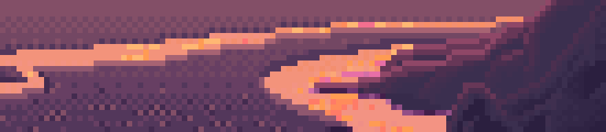
28. elements/channel/study/v02_far8.pngBash: ASCII water mask of V02 crop
cd ~/work/pixelart-studies/pedagogy/master-copy; python3 -c "
import sys; sys.path.insert(0,'src'); import lwload, numpy as np
d=lwload.load('V02'); idx=d['idx']
W=set(list(range(1,48))+list(range(128,136))+list(range(160,168)))
for y in range(276,376):
print('%3d '%y+''.join('#' if v in W else ('b' if v in (73,74,75) else '.') for v in idx[y,0:140]))
"
# output:
276 bbbbbbbbbbbbbbbbbb##########################################################################################################################
277 bbbbbbbbbbbbbbbbbbbbbbbbbbbbb###############################################################################################################
278 bbbbbbbbbbbbbbbbbbbbbbbbbbbbbbbbbbbbbbbbb###################################################################################################
279 bbbbbbbbbbbbbbbbbbbbbbbbbbbbbbbbbbbbbbbbbbbbbbbbbbbb##################################bbbbbbbbbbbbbbbbbbbbbbbb##############################
280 bbbbbbbbbbbbbbbbbbbbbbbbbbbbbbbbbbbbbbbbbbbbbbbbbbbbbbbbbbbbbbbb##########bbbbbbbbbbbbbbbbbbbbbbbbbbbbbbbbbbbbbbbbbbbb######################
281 bbbbbbbbbbbbbbbbbbbbbbbbbbbbbbbbbbbbbbbbbbbbbbbbbbbbbbbbbbbbbbbbbbbbbbbbbbbbbbbbbbbbbbbbbbbbbbbbbbbbbbbbbbbbbbbbbbbbbbbbbbbbbbbb############
282 bbbbbbbbbbbbbbbbbbbbbbbbbbbbbbbbbbbbbbbbbbbbbbbbbbbbbbbbbbbbbbbbbbbbbbbbbbbbbbbbbbbbbbbbbbbbbbbbbbbbbbbbbbbbbbbbbbbbbbbbbbbbbbbbbbbbbbbbbbbb
283 bbbbbbbbbbbbbbbbbbbbbbbbbbbbbbbbbbbbbbbbbbbbbbbbbbbbbbbbbbbbbbbbbbbbbbbbbbbbbbbbbbbbbbbbbbbbbbbbbbbbbbbbbbbbbbbbbbbbbbbbbbbbbbbbbbbbbbbbbbbb
284 bbbbbbbbbbbbbbbbbbbbbbbbbbbbbbbbbbbbbbbbbbbbbbbbbbbbbbbbbbbbbbbbbbbbbbbb######bbbbbbbbbbbbbbbbbbbbbbbbbbbbbbbbbbbbbbbbbbbbbbbbbbbbbbbbbbbbbb
285 bbbbbbbbbbbbbbbbbbbbbbbbbbbbbbbbbbbbbbbbbbbbbbbbbbbbbbbbbbbbb###########bbbbbbbbbbbbbbbbbbbbbbbbbbbbbbbbbbbbbbbbbbbbbbbbbbbbbbbbbbbbbbbbbbbb
286 bbbbbbbbbbbbbbbbbbbbbbbbbbbbbbbbbbbbbbbbbbbbbbbbbbbbbbb######bbbbbbbbbbbbbbbbbbbbbbbbbbbbbbbbbbbbbbbbbbbbbbbbbbbbbbbbbbbbbbbbbbbbbbbbbbbbbbb
287 bbbbbbbbbbbbbbbbbbbbbbbbbbbbbbbbbbbbbbbbbbbbbbbbbb#######bbbbbbbbbbbbbbbbbbbbbbbbbbbbbbbbbbbbbbbbbbbbbbbbbbbbbbbbbbbbbbbbbbbbbbbbbbbbbbbbbbb
288 bbbbbbbbbbbbbbbbbbbbbbbbbbbbbbbbbbbbbbbbb#########bbbbbbbbbbbbbbbbbbbbbbbbbbbbbbbbbbbbbbbbbbbbbbbbbbbbbbbbbbbbbbbbbbbbbbbbbbbbbbbbbbbbbbbbbb
289 bbbbbbbbbbbbbbbbbbbbbbbbbbbbbbbbbbbbbbb##bbbbbbbbbbbbbbbbbbbbbbbbbbbbbbbbbbbbbbbbbbbbbbbbbbbbbbbbbbbbbbbbbbbbbbbbbbbbbbbbbbbbbbbbbbbbbbbbbbb
290 bbbbbbbbbbbbbbbbbbbbbbbbbbbbbbbbbbbbbbbb##############bbbbbbbbbbbbbbbbbbbbbbbbbbbbbbbbbbbbbbbbbbbbbbbbbbbbbbbbbbbbbbbbbbbbbbbbbbbbbbbbbbbbbb
291 bbbbbbbbbbbbbbbbbbbbbbbbbbbbbbbbbbbbbbbbbbbbbbbbbbbbbb###bbbbbbbbbbbbbbbbbbbbbbbbbbbbbbbbbbbbbbbbbbbbbbbbbbbbbbbbbbbbbbbbbbbbbbbbbbbbbbbbbbb
292 bbbbbbbbbbbbbbbbbbbbbbbbbbbbbbbbbbbbbbbbbbbbbbbbbbbbb######bbbbbbbbbbbbbbbbbbbbbbbbbbbbbbbbbbbbbbbbbbbbbbbbbbbbbbbbbbbbbbbbbbbbbbbbbbbbbbbbb
293 bbbbbbbbbbbbbbbbbb#######bbbbb#######################bbbbbbbbbbbbbbbbbbbbbbbbbbbbbbbbbbbbbbbbbbbbbbbbbbbbbbbbbbbbbbbbbbbbbbbbbbbbbbbbbbbbbbb
294 bbbb##############bbbbbbb######bbbbbbbbbbbbbbbbbbbbbbbbbbbbbbbbbbbbbbbbbbbbbbbbbbbbbbbbbbbbbbbbbbbbbbbbbbbbbbbbbbbbbbbbbbbbbbbbbbbbbbbbbbbbb
295 bb###bbbbbbbbbbbbbbbbbbbbbbbbbbbbbbbbbbbbbbbbbbbbbbbbbbbbbbbbbbbbbbbbbbbbbbbbbbbbbbbbbbbbbbbbbbbbbbbbbbbbbbbbbbbbbbbbbbbbbbbbbbbbbbbbbbbbbbb
296 bbbbb###bbbbbbbbbbbbbbbbbbbbbbbbbbbbbbbbbbbbbbbbbbbbbbbbbbbbbbbbbbbbbbbbbbbbbbbbbbbbbbbbbbbbbbbbBash: Detailed marsh index map
cd ~/work/pixelart-studies/pedagogy/master-copy; python3 -c "
import sys; sys.path.insert(0,'src'); import lwload, numpy as np
d=lwload.load('V02'); idx=d['idx']
sym={73:'A',74:'B',75:'C',76:'D',77:'E',78:'F',79:'G',80:'H',81:'I',82:'J',83:'K',84:'L',51:'q',52:'r',48:'p',85:'s',86:'s',87:'s',88:'t',89:'u'}
for y in range(296,376):
print('%3d '%y+''.join(sym.get(v,'#' if (v<48 or v>=128) else '?') for v in idx[y,40:130]))
sub=idx[300:376,40:130]
u,c=np.unique(sub,return_counts=True); print([(a,b) for a,b in zip(u,c) if b>20])
"
# output:
296 CCCBCCCBCCCBCCCBCCCBCCCBCCCBCCCBCCCBCCCBCCCBCCCBCCCBCCCBCCCBCCCBCCCBCCCBCCCBCCCBCCCBCCCBCC
297 BCBCBCBCBCBCBCBCBCBCBCBCBCBCBCBCBCBCBCBCBCBCBCBCBCBCBCBCBCBCBCBCBCBCBCBCBCBCBCBCBCBCBCBCBC
298 CCCCCCCCCCCCCCCCCCCCCCCCCCCCCCCCCCCCCCCCCCCCCCCCCCCCCCCCCCCCCCCCCCCCCCCCCCCCCCCCCCCCCCCCCC
299 CCCCCCCCCCCCCCCCCCCCCCCCCCCCCCCCCCCCCCCCCCCCCCCCCCCCCCCCCCCCCCCCCCCCCCCCCCCCCCCCCCCCCCCCCC
300 CCCCCCCCCCCCCCCCCCCCCCCCCCCCCCCCCCCCCCCCCCCCCCCCCCCCCCCCCCCCCCCCCCCCCCCCCCCCCCCCCCCCCCCCCC
301 CDCDCDCDCDCDCDCDCDCDCDCDCDCDCDCDCDCDCDCDCDCDCDCDCDCDCDCDCDCDCDCDCDCDCDCDCDCDCDCDCDCDCDCDCD
302 DCDCDCDCDCDCDCDCDCDCDCDCDCDCDCDCDCDCDCDCDCDCDCDCDCDFDFDFDFDF##############################
303 CDCDCDCDCDCDCDCDCDCDCDCDCDCDCDCDCDCDCDFDFDFDFDFDFD##########AAAAAAAAAAAAAAAAAAAAAAAAAAAAAD
304 DDDDDDDDDDDDDDDDDDDDDDDDDDDDDFDFDFDFDF############AAAAAAAAAADDDDDDDDDDDDDDDDDDDDDDDDDDDppp
305 DDCDDDCDDDCDDDCDDDFDFDFDFDFDFD##################AACDDDCDDDCDDDCDDDCDDFFFFFFFFFFFFppppppqqp
306 DFDFDFDFDFDFDFDFD#######################AAAAAAAADDDDDDDDDDDDDDDFFFFFFFF####ppppppqqqqqqqpq
307 FFF###############################AAAAAADEDEDEDEDEDEDEDEFFFFFFFFF#######pppqqqqqqqppppppq?
308 ##############################AAAADDEDDDEDDDEDDDEDDDFFFFFF#############qqqq??????pqqqqqqr?
309 #################AAAAAAAAAAAAADEDEDEDEDEDEDEDEDEDFFFFF################qq?ppppppppqqqrr???r
310 EDE###BBBBBBBBBBBDEEEDEEEDEEEDEEEDEEEDEEEDEEEDEEFFF##################qqppqqqqqqrrrr??????r
311 FEDE###GDEDEDEDEDEDEDEDEDEDEDEDEDEDEDEDEDEDEDEDFF####################ppqqqrrr??rr???????r?
312 GGGFF###GEEEEEEEEEEEEEEEEEEEEEEEEEEEEEEEEEEEEEEB#################ppppqrr??????r???????????
313 ########GFCEEFEEEFEEEFEEEFEEEFEEEFEEEFEEEFEEEFEB#########ppppppppqqrr?r??????r??????qqqq??
314 ####BBBBGCEEEEEEEEGEEEEEEEEEECEEEEEEEEEEEEEEEEEEB################?r??r??????????????qrrrq?
315 BBBBBEEEEEEEEGEFEFEFEFEFEFEFEFEFEFEFEFEFEFEFCFEFEBB###################?????????????qr???rq
316 EEEEEEGEFEFEFEFEFEFEFEGEFEFEFEFEFEGEFEFEFEFEGEFEFEBBB##################????????????r??????
317 EFEFEFEFEFEFEFEFCGCGCFEFEFEGCGEFEFEFEGCFEGEFEFEFEFEFBBBB#################?????????q???????
318 FFFFFEFEFCGCFFFFFFFFFFFFGCGCGCGCGFFFFEGFFFFFFFFFFEFFFFBBBBB#######################r???????
319 CFEFEFEGCGCGEFEFEFFFFFFFFFEFEFEFEGCFFFEFFFEFEFEFEFFFFFFFEEBBB####################?r???????
320 FEFFFFFFFFFFFFFFFEGEFEGCFEFFFCGFFFFFFFGCGCFFFFGCFEFEFFFFFFFEEEB##################r????????
321 FFFEFGCFFFFEFFFFFFFGFFFFFFFGFFFFFFFGCFFFEFEGFFFFFGCGFFEFFFFGHHH##################r????????
322 GFGFFFEFGFGFFFGFGFEFFFEFEFEFFFEFEFEFFFEFGFGFFFEFEFGFFFGFHHHH####################r?????????
323 FGFFFGFGFGFFFGFGFGFFCGFEFEFFFEFGFGFFFEFGFEFFFEFGFEFFFHHHH#####################rr??????????
324 GEGFGGGFGGGFEGGFGGGFEGGFGGGFGGGFGGGFGGGFGGGFGEGFGGGHHHH######################r????????????
325 GFFGEFFGEFFGGFFGGFFGGFFGGFFGGFFGGFFGGFFGGFFGGFFEEHH#######################rrrr????????????
326 GGEEEEGGGGGGGGGGGGGGGGGGGGGGEEEEEGGGGGGGGGGGGGGGHH###########################?????????????
327 HHHFHFGFGGGFGFGFEEEFEFEFGGGFGFGFGGGHGFGFEEEFEFEFH##Bash: Water fill index map V02
cd ~/work/pixelart-studies/pedagogy/master-copy; python3 -c "
import sys; sys.path.insert(0,'src'); import lwload, numpy as np
d=lwload.load('V02'); idx=d['idx']
def s(v):
if 1<=v<=9: return str(v)
if 10<=v<=15: return 'xyzuvw'[v-10]
if 40<=v<=47: return 'abcdefgh'[v-40]
if 128<=v<=135: return 'ABCDEFGH'[v-128]
if 160<=v<=167: return 'PQRSTUVW'[v-160]
if 35<=v<=39: return '%'
if v in (73,74,75): return '_'
return '.' if v in range(76,90) else ('~' if v in (48,51,52) else '?')
for y in range(276,364):
print('%3d '%y+''.join(s(v) for v in idx[y,0:136]))
"
# output:
276 __________________1121112111211121112111211121112111211121112111211121112111211121112111211121112111211121112111211121112111211121112111
277 _____________________________21212121212121212121212121212121212121212121212121212121212121212121212121212121212121212121212121212121212
278 _________________________________________11111111111111111111111111111111111111111111111111111111111111111111111111111111111111111111111
279 ____________________________________________________1112111211121112111211121112111211________________________12111211121112111211121112
280 ________________________________________________________________2222222222____________________________________________111111111111111111
281 ________________________________________________________________________________________________________________________________11111111
282 ________________________________________________________________________________________________________________________________________
283 ________________________________________________________________________________________________________________________________________
284 ________________________________________________________________________322232__________________________________________________________
285 _____________________________________________________________32323232323________________________________________________________________
286 _______________________________________________________232323___________________________________________________________________________
287 __________________________________________________2323232_______________________________________________________________________________
288 _________________________________________333333333______________________________________________________________________________________
289 _______________________________________32_______________________________________________________________________________________________
290 ________________________________________33333333333333__________________________________________________________________________________
291 ______________________________________________________333_______________________________________________________________________________
292 _____________________________________________________333333_____________________________________________________________________________
293 __________________3434343_____34343434343434343434343___________________________________________________________________________________
294 ____32323232323243_______343434_________________________________________________________________________________________________________
295 __333___________________________________________________________________________________________________________________________________
296 _____122________________________________________________________________________________________________________________________________
297 ________2__________________________Bash: Read master-copy compare helpers
cd ~/work/pixelart-studies/pedagogy/master-copy/src; sed -n 1,80p compare.py; sed -n 1,40p pair.py
# output:
"""Compare a copy against its reference crop.
Outputs side-by-side 3x (whole crop) and 8x (a detail window), and prints metrics:
blurLab : mean deltaE of Gaussian-blurred (sigma 3px) images -> masses / value structure "at a squint"
hist : L1 distance between colour-usage histograms, after snapping both to the ref palette (0..2)
runs : mean vertical/horizontal same-colour run lengths (texture grain / stroke direction)
edges : density of colour changes per pixel (busyness)
"""
import numpy as np
from PIL import Image, ImageDraw
from scipy.ndimage import gaussian_filter
def srgb2lab(a):
a=a/255.0
a=np.where(a>0.04045,((a+0.055)/1.055)**2.4,a/12.92)
M=np.array([[0.4124,0.3576,0.1805],[0.2126,0.7152,0.0722],[0.0193,0.1192,0.9505]])
xyz=a@M.T/np.array([0.9505,1.0,1.089])
f=np.where(xyz>0.008856,np.cbrt(xyz),7.787*xyz+16/116)
L=116*f[...,1]-16; A=500*(f[...,0]-f[...,1]); B=200*(f[...,1]-f[...,2])
return np.stack([L,A,B],-1)
def runs(img):
k=img[...,0].astype(np.int64)*65536+img[...,1]*256+img[...,2]
v=(np.diff(k,axis=0)!=0).mean(); h=(np.diff(k,axis=1)!=0).mean()
return 1/max(v,1e-6),1/max(h,1e-6)
def metrics(copy,ref):
c=copy.astype(float); r=ref.astype(float)
bl=np.linalg.norm(gaussian_filter(srgb2lab(c),(3,3,0))-gaussian_filter(srgb2lab(r),(3,3,0)),axis=-1).mean()
pal=np.unique(ref.reshape(-1,3),axis=0).astype(float)
def snap(x):
d=((x.reshape(-1,1,3)-pal[None])**2).sum(-1); return d.argmin(1)
hc=np.bincount(snap(c),minlength=len(pal))/c[...,0].size
hr=np.bincount(snap(r),minlength=len(pal))/r[...,0].size
return dict(blurLab=round(bl,2),hist=round(np.abs(hc-hr).sum(),3),
runs_copy=tuple(round(x,2) for x in runs(copy)),runs_ref=tuple(round(x,2) for x in runs(ref)),
ncol_copy=len(np.unique(copy.reshape(-1,3),axis=0)),ncol_ref=len(pal))
def sheet(copy,ref,out,detail=None,label=''):
h,w=ref.shape[:2]
a=Image.fromarray(ref.astype(np.uint8)).resize((w*3,h*3),Image.NEAREST)
b=Image.fromarray(copy.astype(np.uint8)).resize((w*3,h*3),Image.NEAREST)
if detail is None: detail=(w//2-20,h//2-15,40,30)
x,y,dw,dh=detail
a8=Image.fromarray(ref[y:y+dh,x:x+dw].astype(np.uint8)).resize((dw*8,dh*8),Image.NEAREST)
b8=Image.fromarray(copy[y:y+dh,x:x+dw].astype(np.uint8)).resize((dw*8,dh*8),Image.NEAREST)
W=max(w*6+12, dw*16+12); H=h*3+dh*8+40
o=Image.new('RGB',(W,H),(250,250,250)); d=ImageDraw.Draw(o)
o.paste(a,(0,16)); o.paste(b,(w*3+12,16))
d.text((2,2),'FERRARI (ref) 3x',fill=(0,0,0)); d.text((w*3+14,2),'COPY 3x '+label,fill=(0,0,0))
y0=h*3+36
o.paste(a8,(0,y0)); o.paste(b8,(dw*8+12,y0))
d.text((2,y0-14),f'ref 8x detail @({x},{y})',fill=(0,0,0)); d.text((dw*8+14,y0-14),'copy 8x',fill=(0,0,0))
for ox in (0,w*3+12):
d.rectangle([ox+x*3,16+y*3,ox+(x+dw)*3,16+(y+dh)*3],outline=(255,0,0))
o.save(out)
"""pair.py x y w h s out img1 img2 ... : side by side crops"""
import sys
froWrite: elements/channel/src/pixkit.py
"""pixkit: small shared helpers for the channel study.
Index canvases (int arrays) + palettes (N x 3 uint8). Everything is nearest-neighbour.
"""
import re, json
import numpy as np
from PIL import Image, ImageDraw
from scipy.ndimage import gaussian_filter
LW = '~/work/pixelart-studies/pedagogy/master-copy/ref/lw/'
BAYER2 = np.array([[0, 2], [3, 1]]) / 4.0 + 0.125
BAYER4 = np.array([[0, 8, 2, 10], [12, 4, 14, 6], [3, 11, 1, 9], [15, 7, 13, 5]]) / 16.0 + 1 / 32
def lw_load(name):
t = open(LW + name + '.json').read()
t = re.sub(r'([{,])\s*([A-Za-z_]+)\s*:', r'\1"\2":', t).replace("'", '"')
d = json.loads(t)
d['pal'] = np.array(d['colors'], dtype=np.uint8)
d['idx'] = np.array(d['pixels'], dtype=np.int32).reshape(d['height'], d['width'])
return d
def tile(m, h, w, ox=0, oy=0):
my, mx = m.shape
yy, xx = np.mgrid[0:h, 0:w]
return m[(yy + oy) % my, (xx + ox) % mx]
def rgb(idx, pal):
return pal[np.clip(idx, 0, len(pal) - 1)]
def zoom(a, s):
return np.repeat(np.repeat(a, s, 0), s, 1)
def save(a, path, s=1):
Image.fromarray(zoom(a.astype(np.uint8), s)).save(path)
# ---------- dithering ----------------------------------------------------------------
def ordered(v, matrix=BAYER2, ox=0, oy=0):
"""continuous step coordinate v -> integer step, mixing only adjacent steps (ordered)."""
h, w = v.shape
t = tile(matrix, h, w, ox, oy)
f = np.floor(v)
return (f + ((v - f) > t)).astype(int)
def banded(v, width=0.5):
"""squash a continuous coordinate so it holds flat and crosses between integers over `width`."""
f = np.floor(v); r = v - f
lo = 0.5 - width / 2
return f + np.clip((r - lo) / max(width, 1e-6), 0, 1)
def value_noise(h, w, scale, rng, octaves=1, aniso=(1.0, 1.0), persistence=0.5):
out = np.zeros((h, w)); amp = 1.0; tot = 0
for o in range(octaves):
sy = max(1, int(h / (scale * aniso[0]) / 2 ** -o) + 2)
sx = max(1, int(w / (scale * aniso[1]) / 2 ** -o) + 2)
g = rng.random((sy + 1, sx + 1))
yy = np.linspace(0, sy - 1, h); xx = np.linspace(0, sx - 1, w)
y0 = np.floor(yy).astype(int); x0 = np.floor(xx).astype(int)
fy = (yy - y0)[:, None]; fx = (xx - x0)[None, :]
fy = fy * fy * (3 - 2 * fy); fx = fx * fx * (3 - 2 * fx)
a = g[y0][:, x0]; b = g[y0][:, x0 + 1]; c = g[y0 + 1][:, x0]; d = g[y0 + 1][:, x0 + 1]
out += amp * (a * (1 - fx) * (1 - fy) + b * fx * (1 - fy) + c * (1 - fx) * fy + d * fx * fy)
tot += amp; amp *= persistence
return out / tot
# ---------- geometry -----------------------------------------------------------------
def seg_dist(px, py, ax, ay, bx, by):
dx, dy = bx - ax, by - ay
L2 = dx * dx + dy * dy + 1e-9
t = np.clip(((px - ax) * dx + (py - ay) * dy) / L2, 0, 1)
return np.hypot(px - (ax + t * dx), py - (ay + t * dy)), t
def polyline_field(h, w, pts, widths, ky=1.0):
"""distance-to-polyline in a space where y is stretched by ky; returns (d - halfwidth) (<0 inside)."""
yy, xx = np.mgrid[0:h, 0:w].astype(float)
best = np.full((h, w), 1e9)
for i in range(len(pts) - 1):
(ax, ay), (bx, by) = pts[i], pts[i + 1]
d, t = seg_dist(xx, yy * ky, ax, ay * ky, bx, by * ky)
hw = widths[i] * (1 - t) + widths[i + 1] * t
best = np.minimum(best, d - hw / 2)
return best
# ---------- comparison ---------------------------------------------------------------
def srgb2lab(a):
a = a / 255.0
a = np.where(a > 0.04045, ((a + 0.055) / 1.055) ** 2.4, a / 12.92)
M = np.array([[0.4124, 0.3576, 0.1805], [0.2126, 0.7152, 0.0722], [0.0193, 0.1192, 0.9505]])
xyz = a @ M.T / np.array([0.9505, 1.0, 1.089])
f = np.where(xyz > 0.008856, np.cbrt(xyz), 7.787 * xyz + 16 / 116)
return np.stack([116 * f[..., 1] - 16, 500 * (f[..., 0] - f[..., 1]), 200 * (f[..., 1] - f[..., 2])], -1)
def runs(img):
k = img[..., 0].astype(np.int64) * 65536 + img[..., 1] * 256 + img[..., 2]
v = (np.diff(k, axis=0) != 0).mean(); hh = (np.diff(k, axis=1) != 0).mean()
return round(1 / max(v, 1e-6), 2), round(1 / max(hh, 1e-6), 2)
def metrics(copy, ref):
c = copy.astype(float); r = ref.astype(float)
bl = np.linalg.norm(gaussian_filter(srgb2lab(c), (3, 3, 0)) - gaussian_filter(srgb2lab(r), (3, 3, 0)), axis=-1).mean()
return dict(blurLab=round(float(bl), 2), runs_copy=runs(copy), runs_ref=runs(ref))
def panel(items, s, gap=8, label_h=14, bg=(250, 250, 250)):
"""items: list of (rgb array, label). Side by side at scale s."""
ims = [Image.fromarray(zoom(a.astype(np.uint8), s)) for a, _ in items]
W = sum(i.width for i in ims) + gap * (len(ims) - 1); H = max(i.height for i in ims) + label_h
o = Image.new('RGB', (W, H), bg); d = ImageDraw.Draw(o); x = 0
for im, (_, lab) in zip(ims, items):
o.paste(im, (x, label_h)); d.text((x + 2, 1), lab, fill=(0, 0, 0)); x += im.width + gap
return o
def stack(imgs, gap=8, bg=(250, 250, 250)):
W = max(i.width for i in imgs); H = sum(i.height for i in imgs) + gap * (len(imgs) - 1)
o = Image.new('RGB', (W, H), bg); y = 0
for i in imgs:
o.paste(i, (0, y)); y += i.height + gap
return o
def compare_sheet(ref, copy, out, details, label='', s_whole=3, s_det=8):
"""ref|copy at s_whole, then each detail window (x,y,w,h) ref|copy at s_det."""
rows = [panel([(ref, 'FERRARI %dx' % s_whole), (copy, 'COPY %dx %s' % (s_whole, label))], s_whole)]
for (x, y, w, h) in details:
rows.append(panel([(ref[y:y + h, x:x + w], 'ref 8x @(%d,%d)' % (x, y)),
(copy[y:y + h, x:x + w], 'copy 8x')], s_det))
stack(rows).save(out)
Bash: Per-row marsh class composition
cd ~/work/pixelart-studies/elements/channel/src; python3 -c "
import pixkit as pk, numpy as np
d=pk.lw_load('V02'); idx=d['idx'][282:364,0:92]
for y in range(0,82,1):
r=idx[y]; land=r[(r>=73)&(r<=84)]
if len(land)==0: continue
u,c=np.unique(land,return_counts=True)
s=' '.join('%d:%d'%(a,b) for a,b in zip(u,c) if b>1)
oth=r[(r<73)|(r>84)]; oth=oth[(oth>=48)&(oth<=70)]
print(282+y, 'mean %.2f'%land.mean(), s, '| warm', len(oth))
"
# output:
282 mean 73.00 73:92 | warm 0
283 mean 73.00 73:92 | warm 0
284 mean 73.00 73:86 | warm 0
285 mean 73.00 73:81 | warm 0
286 mean 73.00 73:86 | warm 0
287 mean 73.51 73:42 74:43 | warm 0
288 mean 73.25 73:62 74:21 | warm 0
289 mean 73.50 73:45 74:45 | warm 0
290 mean 74.00 74:78 | warm 0
291 mean 73.75 73:22 74:67 | warm 0
292 mean 74.00 74:86 | warm 0
293 mean 74.27 74:45 75:17 | warm 0
294 mean 74.00 74:72 | warm 0
295 mean 74.51 74:44 75:45 | warm 0
296 mean 74.75 74:22 75:67 | warm 0
297 mean 74.51 74:45 75:46 | warm 0
298 mean 75.00 75:90 | warm 0
299 mean 75.00 75:85 | warm 0
300 mean 75.00 75:92 | warm 0
301 mean 75.50 75:46 76:46 | warm 0
302 mean 75.53 75:45 76:46 | warm 0
303 mean 75.70 75:39 76:45 78:6 | warm 0
304 mean 76.05 73:2 76:73 78:5 | warm 0
305 mean 75.88 73:2 75:15 76:51 78:6 | warm 0
306 mean 75.96 73:8 76:50 78:10 | warm 0
307 mean 76.34 73:6 76:24 77:23 78:8 | warm 0
308 mean 76.12 73:4 76:38 77:13 78:3 | warm 0
309 mean 75.91 73:13 76:27 77:25 78:4 | warm 0
310 mean 76.46 74:11 76:21 77:45 78:8 | warm 0
311 mean 76.89 76:34 77:24 78:23 | warm 0
312 mean 77.58 76:4 77:38 78:12 79:19 | warm 0
313 mean 77.45 77:27 78:10 79:8 | warm 0
314 mean 76.67 74:5 75:2 77:36 79:2 | warm 0
315 mean 76.54 73:4 74:9 77:25 78:17 | warm 0
316 mean 76.20 73:8 74:17 75:3 77:29 78:18 79:4 | warm 0
317 mean 76.85 73:8 75:8 76:2 77:36 78:22 79:6 80:2 | warm 0
318 mean 77.55 73:2 75:9 77:7 78:55 79:8 80:2 | warm 0
319 mean 77.80 75:5 77:17 78:48 79:5 80:7 | warm 0
320 mean 77.94 75:5 77:7 78:54 79:7 80:7 | warm 0
321 mean 77.92 73:3 75:3 77:5 78:53 79:9 80:7 | warm 0
322 mean 77.84 73:5 77:12 78:46 79:16 80:4 | warm 0
323 mean 78.11 73:2 77:7 78:47 79:23 80:3 | warm 0
324 mean 78.67 77:7 78:18 79:50 80:8 | warm 0
325 mean 78.62 77:4 78:33 79:29 80:14 | warm 0
326 mean 78.90 77:9 79:53 80:14 | warm 0
327 mean 78.51 75:3 77:10 78:20 79:27 80:15 | warm 0
328 mean 78.82 75:5 78:5 79:54 80:13 | warm 0
329 mean 79.13 77:4 78:5 79:46 80:23 | warm 3
330 mean 79.04 77:5 79:51 80:19 | warm 2
331 mean 79.18 77:7 78:2 79:25 80:27 | warm 9
332 mean 78.97 77:4 79:53 80:10 | warm 0
333 mean 78.79 75:5 78:9 79:36 80:17 | warm 1
334 mean 78.33 75:11 77:4 79:55 80:3 | warm 0
335 mean 78.36 75:7 77:12 78:12 79:30 80:15 | warm 1
336 mean 79.16 79:61 80:14 | warm 3
337 mean 79.46 78:7 79:35 80:19 81:7 82:2 | warm 8
338 mean 78.97 77:8 79:53 80:14 | warm 3
339 mean 79.44 77:5 78:5 79:20 80:37 81:5 | warm 2
340 mean 79.08 76:2 77:3 78:5 79:27 80:26 | warm 9
341 mean 79.18 75:2 77:6 78:4 79:23 80:13 81:11 | warm 8
342 mean 78.60 75:3 77:7 78:16 79:22 80:18 | warm 6
343 mean 78.91 75:3 76:3 77:4 79:25 80:28 | warm 7
344 mean 78.56 73:3 75:2 76:3 77:4 78:13 79:24 80:24 | warm 2
345 mean 79.58 75:3 79:24 80:26 81:12 | warm 10
346 mean 79.11 73:3 75:2 79:24 80:29 81:4 | warm 9
347 mean 79.59 75:3 76:3 79:13 80:19 81:19 | warm 12
348 mean 79.53 75:2 77:3 78:2 79:11 80:28 81:13 | warm 9
349 mean 79.55 75:2 77:6 79:14 80:11 81:17 | warm 8
350 mean 79.03 75:2 77:2 79:15 80:11 8Bash: Raw indices along ribbon edges
cd ~/work/pixelart-studies/elements/channel/src; python3 -c "
import pixkit as pk, numpy as np
d=pk.lw_load('V02'); idx=d['idx']; pal=d['pal']
for y in range(317,328): print(y, list(idx[y,10:34]))
for y in range(338,352): print(y, list(idx[y,max(0,40-(y-338)*3):max(0,40-(y-338)*3)+26]))
for i in (48,51,52,54,55,57,58,61,86,87,88,89): print(i,pal[i])
"
# output:
317 [75, 74, 73, 73, 73, 73, 73, 73, 73, 73, 5, 5, 4, 5, 5, 5, 4, 80, 80, 78, 77, 77, 77, 77]
318 [78, 78, 77, 77, 77, 76, 75, 75, 75, 74, 73, 73, 5, 5, 5, 5, 5, 5, 5, 80, 80, 78, 79, 78]
319 [78, 78, 78, 78, 78, 80, 80, 80, 80, 80, 80, 80, 237, 5, 5, 5, 42, 42, 5, 5, 5, 74, 78, 79]
320 [78, 78, 78, 80, 80, 80, 80, 80, 80, 80, 239, 42, 38, 38, 5, 6, 5, 6, 5, 6, 5, 74, 78, 78]
321 [78, 79, 80, 80, 80, 80, 239, 5, 234, 42, 6, 5, 5, 5, 6, 5, 5, 5, 73, 73, 73, 78, 78, 78]
322 [80, 80, 80, 80, 38, 236, 5, 6, 42, 38, 42, 6, 5, 73, 73, 73, 73, 73, 78, 78, 79, 78, 77, 78]
323 [80, 80, 5, 6, 5, 6, 5, 6, 5, 6, 5, 73, 73, 79, 78, 79, 78, 78, 78, 79, 78, 79, 78, 79]
324 [79, 75, 6, 6, 6, 6, 6, 6, 6, 6, 80, 80, 80, 80, 80, 80, 80, 78, 79, 79, 79, 78, 79, 79]
325 [78, 75, 6, 6, 6, 6, 6, 6, 6, 6, 233, 6, 80, 80, 80, 80, 80, 80, 80, 78, 78, 80, 80, 78]
326 [79, 79, 75, 7, 6, 6, 6, 7, 6, 6, 6, 7, 6, 6, 239, 7, 80, 80, 80, 80, 80, 80, 80, 79]
327 [79, 80, 79, 75, 75, 75, 6, 6, 6, 6, 6, 6, 6, 6, 6, 6, 6, 6, 238, 6, 80, 80, 80, 80]
338 [80, 80, 40, 79, 7, 37, 39, 40, 36, 8, 7, 8, 40, 37, 36, 8, 7, 77, 79, 79, 79, 79, 80, 77, 77, 48]
339 [40, 238, 40, 236, 7, 135, 3, 129, 4, 161, 35, 128, 7, 128, 5, 134, 4, 134, 77, 77, 51, 79, 51, 77, 78, 80]
340 [8, 238, 8, 79, 8, 133, 8, 6, 4, 167, 3, 40, 4, 134, 8, 40, 41, 134, 41, 75, 77, 78, 51, 79, 79, 51]
341 [40, 128, 8, 128, 8, 134, 8, 134, 8, 129, 8, 135, 4, 130, 37, 129, 41, 75, 3, 135, 75, 77, 77, 78, 51, 79]
342 [3, 134, 7, 134, 7, 134, 8, 134, 7, 135, 7, 131, 7, 132, 4, 75, 41, 132, 75, 75, 51, 51, 51, 77, 78, 78]
343 [8, 133, 8, 134, 40, 129, 7, 133, 7, 135, 8, 135, 8, 134, 7, 75, 3, 75, 75, 73, 51, 51, 51, 51, 52, 52]
344 [7, 237, 8, 134, 7, 132, 5, 134, 40, 134, 7, 134, 8, 75, 8, 75, 6, 73, 73, 51, 73, 51, 79, 79, 79, 76]
345 [79, 135, 8, 128, 3, 130, 40, 130, 40, 134, 7, 130, 7, 134, 75, 131, 41, 75, 75, 51, 51, 79, 79, 51, 51, 51]
346 [36, 234, 8, 130, 132, 133, 40, 132, 36, 131, 5, 130, 131, 135, 7, 73, 75, 73, 75, 51, 79, 79, 73, 51, 51, 52]
347 [36, 234, 8, 134, 3, 129, 8, 128, 6, 130, 38, 133, 40, 134, 3, 132, 75, 75, 75, 51, 51, 77, 52, 52, 51, 52]
348 [162, 233, 39, 128, 132, 128, 39, 166, 135, 132, 39, 131, 129, 129, 35, 161, 131, 75, 3, 75, 73, 51, 77, 77, 52, 52]
349 [167, 132, 161, 131, 160, 134, 36, 134, 166, 134, 3, 135, 164, 133, 162, 130, 161, 135, 75, 166, 75, 51, 51, 51, 52, 52]
350 [135, 131, 166, 130, 165, 133, 129, 129, 133, 133, 131, 135, 130, 135, 135, 129, 130, 131, 135, 75, 130, 75, 73, 51, 51, 52]
351 [162, 131, 4, 135, 36, 162, 36, 129, 162, 129, 161, 134, 167, 134, 36, 131, 163, 165, 75, 162, 75, 132, 75, 51, 51, 52]
48 [143 71 103]
51 [103 55 87]
52 [75 47 79]
54 [67 47 79]
55 [63 47 79]
57 [59 47 79]
58 [55 43 75]
61 [43 31 63]
86 [59 39 71]
87 [59 39 71]
88 [47 31 55]
89 [43 23 47]Write: elements/channel/src/c0a_v02.py
"""Copy A: the winding low-angle ribbons of V02 (Living Worlds, 'Mountain Fortress Dusk'), native crop
(0,282, 92x82). Painted in Ferrari's own palette indices, by procedure, from a copyist's sketch
(ribbon centre-lines + widths, a few hand values). See LESSONS.md, stage 0.
Discovered procedure (read off his index map):
WATER FILL the water is the SKY RAMP (indices 1..15, horizon->zenith), and the index CLIMBS with
nearness: far threads 2/3, mid 4/5, 6/7, near 7/8 -- nearer water mirrors higher sky.
Steps hold flat, crossing as sustained 50% checkers (4545 over several rows).
Hot glints: small horizontal clusters (1-4 px) of 42/43 (bright orange), sparse.
Near ribbon: a checker of COLOUR-CYCLED peach (128..135) against static 7/8/3/40: glitter.
SHAPE at low angle the ribbon is horizontal runs; a far thread is ONE row, stepping a row at a
time; turns are staircases; thickness in rows grows toward the viewer.
EDGES near side (land below / left of water on a down-going edge): LIGHT lip -- 73 runs directly
under water, and on steep diagonals a 75/water checker, 73, then warm 51/52.
far side (land above water): DARK -- runs of 80 (bank face + its dark reflection); on
steep diagonals a water/dark checker fringe (dark pixels are cycled 233..239).
MARSH banded ordered ramp 73->75 far (flat rows + 50% seams), 76-78 mid with 2x2 order,
79/80(/81) near, checkers that skip a step (79/81), + sparse single light pixels next to
dark ones (contrast pairs) + warm 51/48 specks growing toward the viewer.
"""
import sys
import numpy as np
import pixkit as pk
X0, Y0, W, H = 0, 282, 92, 82
def sketch():
"""copyist's sketch: polylines (x, y) in crop pixels with widths (stretched units, ky)."""
thread = [(95, 1.5), (72, 2.2), (40, 6.6), (40, 8.0), (55, 9.2), (55, 10.6), (22, 11.2), (4, 12.4),
(8, 15.4), (0, 17.3)]
far = [(96, 21.3), (84, 22.3), (64, 24.2), (46, 26.0), (35, 27.3)]
prong_a = [(35, 27.5), (37, 30.5)]
prong_b = [(44, 27.6), (46, 30.6)]
left = [(47, 31.3), (26, 31.6), (-4, 31.2)]
main = [(37, 32.2), (22, 34.2), (26, 36.6), (26, 38.2), (16, 40.6), (15, 42.6), (20, 44.8), (30, 47.8),
(40, 50.6), (50, 53.4), (52, 55.0), (48, 57.4), (35, 60.2), (20, 64.0), (6, 68.0), (-8, 73.0)]
return [(thread, [3.0] * len(thread)),
(far, [7, 8, 9, 10, 10]),
(prong_a, [5, 5]), (prong_b, [5, 5]),
(left, [10, 11, 11]),
(main, [8, 9, 9, 9, 10, 11, 12, 13, 14, 16, 17, 18, 22, 26, 30, 34])]
KY = 4.0
def water_mask(h, w):
f = np.full((h, w), 1e9)
cl = np.zeros((h, w), bool)
for pts, wid in sketch():
f = np.minimum(f, pk.polyline_field(h, w, pts, wid, ky=KY))
# the centre-line itself is always water (thin threads never break)
for (ax, ay), (bx, by) in zip(pts[:-1], pts[1:]):
n = int(max(abs(bx - ax), abs(by - ay)) * 2) + 2
for t in np.linspace(0, 1, n):
x, y = int(round(ax + t * (bx - ax))), int(round(ay + t * (by - ay) - 0.5))
if 0 <= x < w and 0 <= y < h:
cl[y, x] = True
return (f < 0) | cl
def marsh(h, w, rng):
yy, xx = np.mgrid[0:h, 0:w]
y = yy + Y0
# base step along the ramp 73..81 (copyist's value study, by row)
v = np.interp(y, [282, 286, 292, 298, 302, 306, 312, 318, 324, 332, 340, 364],
[73.0, 73.0, 74.0, 75.0, 75.5, 76.0, 77.0, 77.8, 78.7, 79.0, 79.3, 79.5])
far = y < 304
out = np.zeros((h, w), int)
# far: banded + ordered 2x2 (flat rows, 50% seams)
vb = pk.banded(v, 0.55)
out[far] = pk.ordered(vb)[far]
# mid/near: ordered with growing jitter; near checkers skip a step (79/81)
amp = np.clip((y - 304) / 40.0, 0, 1)
jit = (rng.random((h, w)) - 0.5) * (0.6 + 1.4 * amp)
vn = v + jit
o = pk.ordered(vn)
skip = (y > 336) & (o == 80) & (rng.random((h, w)) < 0.45)
o = np.where(skip, np.where((xx + yy) % 2 == 0, 79, 81), o)
out[~far] = o[~far]
# contrast pairs: single light pixels (75) sitting beside a dark one
lp = (~far) & (rng.random((h, w)) < 0.03 * (0.5 + amp))
out[lp] = 75
# dark specks and warm specks toward the viewer
ds = (y > 335) & (rng.random((h, w)) < 0.04 * amp)
out[ds] = 82
ws = (y > 328) & (rng.random((h, w)) < 0.07 * amp)
out[ws] = np.where(rng.random((h, w)) < 0.8, 51, 48)[ws]
return np.clip(out, 48, 84)
def water_fill(mask, rng):
h, w = mask.shape
yy, xx = np.mgrid[0:h, 0:w]
y = yy + Y0
# the reflected-sky step climbs with nearness
v = np.interp(y, [283, 290, 296, 304, 309, 316, 320, 324, 329, 334, 340], [2.3, 3.0, 3.5, 4.0, 4.5, 5.0, 5.5, 6.0, 6.5, 7.0, 7.6])
v = v + (pk.value_noise(h, w, 8, rng, 1, aniso=(0.4, 2.0)) - 0.5) * 0.5
base = pk.ordered(pk.banded(v, 0.7))
out = np.where(mask, base, 0)
# hot glints: short horizontal clusters of 42/43 in the mid ribbons
g = mask & (y > 300) & (y < 336)
seeds = g & (rng.random((h, w)) < 0.035)
for sy, sx in zip(*np.nonzero(seeds)):
L = int(rng.integers(1, 4))
c = 43 if rng.random() < 0.5 else 42
for k in range(L):
if sx + k < w and mask[sy, sx + k]:
out[sy, sx + k] = c if k % 2 == 0 or rng.random() < 0.5 else 40 + int(rng.integers(0, 2))
# near glitter: checker of cycled peach against static 7/8/3/40
near = mask & (y >= 337)
par = (xx + yy) % 2 == 0
cyc = rng.integers(128, 136, (h, w))
pink = rng.integers(160, 168, (h, w))
cyc = np.where((y > 346) & (rng.random((h, w)) < 0.35), pink, cyc)
stat = rng.choice([7, 8, 8, 7, 3, 40, 4, 36], (h, w))
out = np.where(near & par, cyc, out)
out = np.where(near & ~par, stat, out)
out = np.where(near & (y > 347) & ~par & (rng.random((h, w)) < 0.5), cyc, out)
return out
def edges(canvas, mask, rng):
h, w = mask.shape
out = canvas.copy()
up = np.zeros_like(mask); up[1:] = mask[:-1] # water directly above this pixel
dn = np.zeros_like(mask); dn[:-1] = mask[1:] # water directly below
land = ~mask
# near side: land pixel under water -> light lip 73
lip = land & up
out[lip] = 73
# far side: land pixel over water -> dark 80, two rows where the water edge is long
far1 = land & dn
out[far1] = 80
# horizontal ends of runs: which side are they on? look at the edge's vertical facing
# left/right ends of each row's water run
lft = np.zeros_like(mask); lft[:, :-1] = mask[:, 1:]
rgt = np.zeros_like(mask); rgt[:, 1:] = mask[:, :-1]
for y in range(h):
for x in range(w):
if not land[y, x] or lip[y, x] or far1[y, x]:
continue
if lft[y, x] or rgt[y, x]:
# decide by where the water is going: water below-left/right -> we are far side (dark),
# water above -> near side (light)
a = mask[max(0, y - 2):y, max(0, x - 3):x + 4].sum()
b = mask[y + 1:y + 3, max(0, x - 3):x + 4].sum()
if b > a:
# far side: run of dark extending away from the water
d = -1 if lft[y, x] else 1
n = int(rng.integers(2, 6))
for k in range(n):
xx = x + d * k
if 0 <= xx < w and land[y, xx]:
out[y, xx] = 80
else:
d = -1 if lft[y, x] else 1
n = int(rng.integers(2, 6))
for k in range(n):
xx = x + d * k
if 0 <= xx < w and land[y, xx]:
out[y, xx] = 73 if k < n - 1 else 75
return out
def paint(seed=3):
rng = np.random.default_rng(seed)
m = water_mask(H, W)
cv = marsh(H, W, rng)
wf = water_fill(m, rng)
cv = np.where(m, wf, cv)
cv = edges(cv, m, rng)
return cv, m
if __name__ == '__main__':
d = pk.lw_load('V02')
ref_idx = d['idx'][Y0:Y0 + H, X0:X0 + W]
pal = d['pal']
cv, m = paint(int(sys.argv[1]) if len(sys.argv) > 1 else 3)
ref = pk.rgb(ref_idx, pal); cp = pk.rgb(cv, pal)
tag = sys.argv[2] if len(sys.argv) > 2 else 'v1'
pk.compare_sheet(ref, cp, 'study/c0a_%s.png' % tag, [(0, 34, 60, 40), (30, 0, 60, 30)], label=tag)
W_set = set(list(range(1, 48)) + list(range(128, 136)) + list(range(160, 168)))
rm = np.isin(ref_idx, list(W_set))
print(pk.metrics(cp, ref), 'water IoU %.2f' % ((rm & m).sum() / (rm | m).sum()))
Bash: Run copy A v1
cd ~/work/pixelart-studies/elements/channel; nice -n 10 python3 src/c0a_v02.py 3 v1
# output:
{'blurLab': 3.98, 'runs_copy': (1.57, 1.92), 'runs_ref': (1.58, 1.78)} water IoU 0.64Read: elements/channel/study/c0a_v1.png 29. elements/channel/study/c0a_v1.png
29. elements/channel/study/c0a_v1.png
Bash: Marsh value vs distance to water above/below
cd ~/work/pixelart-studies/elements/channel/src; python3 -c "
import pixkit as pk, numpy as np
d=pk.lw_load('V02'); idx=d['idx'][282:364,0:92]
Wset=list(range(1,48))+list(range(128,136))+list(range(160,168))+list(range(232,240))
m=np.isin(idx,Wset)
Lp=lambda c:0.3*c[0]+0.59*c[1]+0.11*c[2]
lum=np.array([Lp(c) for c in d['pal']])[idx]
h,w=m.shape
import collections
A=collections.defaultdict(list);B=collections.defaultdict(list)
for x in range(w):
col=m[:,x]
for y in range(18,h):
if col[y]: continue
# distance to water below
for k in range(1,12):
if y+k<h and col[y+k]: A[k].append(lum[y,x]); break
for k in range(1,12):
if y-k>=0 and col[y-k]: B[k].append(lum[y,x]); break
print('land ABOVE water (far bank) by rows to water:'); print([ (k, round(np.mean(A[k]),1), len(A[k])) for k in range(1,12)])
print('land BELOW water (near bank) by rows from water:'); print([ (k, round(np.mean(B[k]),1), len(B[k])) for k in range(1,12)])
"
# output:
land ABOVE water (far bank) by rows to water:
[(1, 55.9, 223), (2, 63.7, 203), (3, 69.1, 192), (4, 75.3, 182), (5, 74.5, 158), (6, 76.5, 145), (7, 76.4, 123), (8, 72.8, 101), (9, 71.9, 93), (10, 73.4, 89), (11, 75.3, 86)]
land BELOW water (near bank) by rows from water:
[(1, 101.6, 230), (2, 78.5, 211), (3, 68.1, 199), (4, 66.7, 191), (5, 65.6, 178), (6, 64.9, 186), (7, 69.1, 204), (8, 69.2, 199), (9, 69.4, 197), (10, 68.1, 194), (11, 67.4, 188)]Bash: Add edge profile diagnostic to pixkit
cd ~/work/pixelart-studies/elements/channel/src; cat >> pixkit.py <<'EOF'
def edge_profile(lum, mask, y0=0, maxk=10):
"""mean luminance of land pixels by rows to the nearest water below (far bank) / above (near bank)."""
h, w = mask.shape
A = [[] for _ in range(maxk + 1)]; B = [[] for _ in range(maxk + 1)]
for x in range(w):
col = mask[:, x]
for y in range(y0, h):
if col[y]:
continue
for k in range(1, maxk + 1):
if y + k < h and col[y + k]:
A[k].append(lum[y, x]); break
for k in range(1, maxk + 1):
if y - k >= 0 and col[y - k]:
B[k].append(lum[y, x]); break
f = lambda L: [round(float(np.mean(v)), 0) if v else None for v in L[1:]]
return f(A), f(B)
def luma(idx, pal):
p = pal.astype(float)
return (0.3 * p[:, 0] + 0.59 * p[:, 1] + 0.11 * p[:, 2])[np.clip(idx, 0, len(pal) - 1)]
EOF
# output:
(Bash completed with no output)Bash: Rewrite copy A with field-based edges; run v2
cd ~/work/pixelart-studies/elements/channel/src; python3 - <<'EOF'
import re
s=open('c0a_v02.py').read()
start=s.index('def water_mask'); end=s.index("if __name__")
new='''def fields(h, w):
"""F: signed distance (stretched units, <0 inside) to the ribbons; thread: 1-row centre-line raster."""
F = np.full((h, w), 1e9)
thread = np.zeros((h, w), bool)
for k, (pts, wid) in enumerate(sketch()):
if k == 0:
for (ax, ay), (bx, by) in zip(pts[:-1], pts[1:]):
n = int(max(abs(bx - ax), abs(by - ay)) * 2) + 2
for t in np.linspace(0, 1, n):
x, y = int(round(ax + t * (bx - ax))), int(np.floor(ay + t * (by - ay)))
if 0 <= x < w and 0 <= y < h:
thread[y, x] = True
continue
F = np.minimum(F, pk.polyline_field(h, w, pts, wid, ky=KY))
return F, thread
def marsh(h, w, rng, F, gy, steep):
yy, xx = np.mgrid[0:h, 0:w]
y = yy + Y0
# base step along the ramp 73..81 (copyist's value study, by row)
v = np.interp(y, [282, 286, 292, 298, 302, 306, 312, 318, 324, 332, 340, 364],
[73.0, 73.0, 74.0, 75.0, 75.5, 76.0, 76.8, 77.6, 78.4, 78.9, 79.3, 79.6])
v = v + (pk.value_noise(h, w, 10, rng, 2, aniso=(0.35, 2.5)) - 0.5) * np.clip((y - 300) / 30, 0, 1) * 1.2
# banks: the far side darkens over ~3 rows toward the water, the near side has a lit lip then a trough
near_mid = np.clip((y - 300) / 12.0, 0, 1)
far_side = (gy < 0) & (F >= 0)
near_side = (gy >= 0) & (F >= 0)
v = v + far_side * near_mid * np.interp(F, [0, 4, 8, 12, 16], [2.2, 1.4, 0.7, 0.2, 0.0])
v = v + near_side * near_mid * np.interp(F, [0, 4, 8, 14, 22, 30], [0, -1.0, 0.0, 0.5, 0.3, 0.0])
far = y < 300
out = np.zeros((h, w), int)
out[far] = pk.ordered(pk.banded(v, 0.55))[far]
amp = np.clip((y - 304) / 40.0, 0, 1)
o = pk.ordered(v + (rng.random((h, w)) - 0.5) * (0.2 + 0.9 * amp), pk.BAYER4)
skip = (y > 336) & (o == 80) & (rng.random((h, w)) < 0.45)
o = np.where(skip, np.where((xx + yy) % 2 == 0, 79, 81), o)
out[~far] = o[~far]
lp = (~far) & (rng.random((h, w)) < 0.025 * (0.5 + amp)) & (F > 6)
out[lp] = 75
ds = (y > 335) & (rng.random((h, w)) < 0.04 * amp)
out[ds] = 82
ws = (y > 328) & (rng.random((h, w)) < 0.06 * amp) & (F > 6)
out[ws] = np.where(rng.random((h, w)) < 0.8, 51, 48)[ws]
return np.clip(out, 48, 84)
def water_fill(mask, rng):
h, w = mask.shape
yy, xx = np.mgrid[0:h, 0:w]
y = yy + Y0
v = np.interp(y, [283, 290, 296, 304, 309, 316, 320, 324, 329, 334, 340], [2.3, 3.0, 3.5, 4.0, 4.5, 5.0, 5.5, 6.0, 6.5, 7.0, 7.6])
v = v + (pk.value_noise(h, w, 8, rng, 1, aniso=(0.4, 2.0)) - 0.5) * 0.5
base = pk.ordered(pk.banded(v, 0.7))
out = np.where(mask, base, 0)
g = mask & (y > 300) & (y < 336)
seeds = g & (rng.random((h, w)) < 0.03)
for sy, sx in zip(*np.nonzero(seeds)):
L = int(rng.integers(1, 4))
c = 43 if rng.random() < 0.5 else 42
for k in range(L):
if sx + k < w and mask[sy, sx + k]:
out[sy, sx + k] = c if k % 2 == 0 or rng.random() < 0.5 else 40 + int(rng.integers(0, 2))
near = mask & (y >= 337)
par = (xx + yy) % 2 == 0
cyc = rng.integers(128, 136, (h, w))
pink = rng.integers(160, 168, (h, w))
cyc = np.where((y > 346) & (rng.random((h, w)) < 0.35), pink, cyc)
stat = rng.choice([7, 8, 8, 7, 3, 40, 4, 36], (h, w))
out = np.where(near & par, cyc, out)
out = np.where(near & ~par, stat, out)
out = np.where(near & (y > 347) & ~par & (rng.random((h, w)) < 0.5), cyc, out)
return out
def edges(cv, F, gy, steep, rng):
h, w = F.shape
yy, xx = np.mgrid[0:h, 0:w]
y = yy + Y0
par = (xx + yy) % 2 == 0
out = cv.copy()
mid = y >= 300
nearish = y >= 312
# near side, land: the lit lip (1 row on flats, a horizontal run on diagonals)
lip = mid & (gy >= 0) & (F >= 0) & (F < KY)
out[lip] = np.where(nearish[lip], 73, 74)
# near side, water, steep diagonal: water/75 checker
wl = nearish & (gy >= 0) & (F < 0) & (F > -KY) & steep & par
out[wl] = 75
# warm band beyond the lip on the steep near edge of the near ribbon
warm = (y > 336) & (gy >= 0) & (F >= KY) & (F < 3 * KY) & steep
out[warm] = np.where(F[warm] < 2 * KY, 51, 52)
# far side, land: the dark bank face
dk = mid & (gy < 0) & (F >= 0) & (F < KY)
out[dk] = np.where(nearish[dk], 80, 78)
# far side, water, steep: checker fringe of dark (cycled darks 233..239)
fr = nearish & (gy < 0) & (F < 0) & (F > -KY) & steep & par
out[fr] = rng.choice([80, 233, 234, 237, 239], fr.sum())
return out
def paint(seed=3):
rng = np.random.default_rng(seed)
F, thread = fields(H, W)
gy, gx = np.gradient(F)
steep = np.abs(gx) > 0.6 * np.abs(gy) / KY * 4 # edge normal mostly horizontal
m = (F < 0) | thread
cv = marsh(H, W, rng, F, gy, steep)
cv = np.where(m, water_fill(m, rng), cv)
cv = edges(cv, F, gy, steep, rng)
cv[thread] = water_fill(thread, rng)[thread]
return cv, m
'''
s=s[:start]+new+s[end:]
s=s.replace(""" print(pk.metrics(cp, ref), 'water IoU %.2f' % ((rm & m).sum() / (rm | m).sum()))""",
""" print(pk.metrics(cp, ref), 'water IoU %.2f' % ((rm & m).sum() / (rm | m).sum()))
print('ref edge profile', pk.edge_profile(pk.luma(ref_idx, pal), rm, 18))
print('copy edge profile', pk.edge_profile(pk.luma(cv, pal), m, 18))""")
open('c0a_v02.py','w').write(s)
EOF
cd ..; nice -n 10 python3 src/c0a_v02.py 3 v2
# output:
{'blurLab': 3.55, 'runs_copy': (1.68, 2.06), 'runs_ref': (1.58, 1.78)} water IoU 0.62
ref edge profile ([63.0, 64.0, 68.0, 72.0, 75.0, 76.0, 76.0, 72.0, 72.0, 73.0], [102.0, 79.0, 68.0, 67.0, 65.0, 65.0, 69.0, 70.0, 70.0, 68.0])
copy edge profile ([51.0, 61.0, 72.0, 75.0, 77.0, 79.0, 79.0, 76.0, 77.0, 73.0], [116.0, 90.0, 68.0, 62.0, 60.0, 61.0, 64.0, 66.0, 65.0, 66.0])Read: elements/channel/study/c0a_v2.png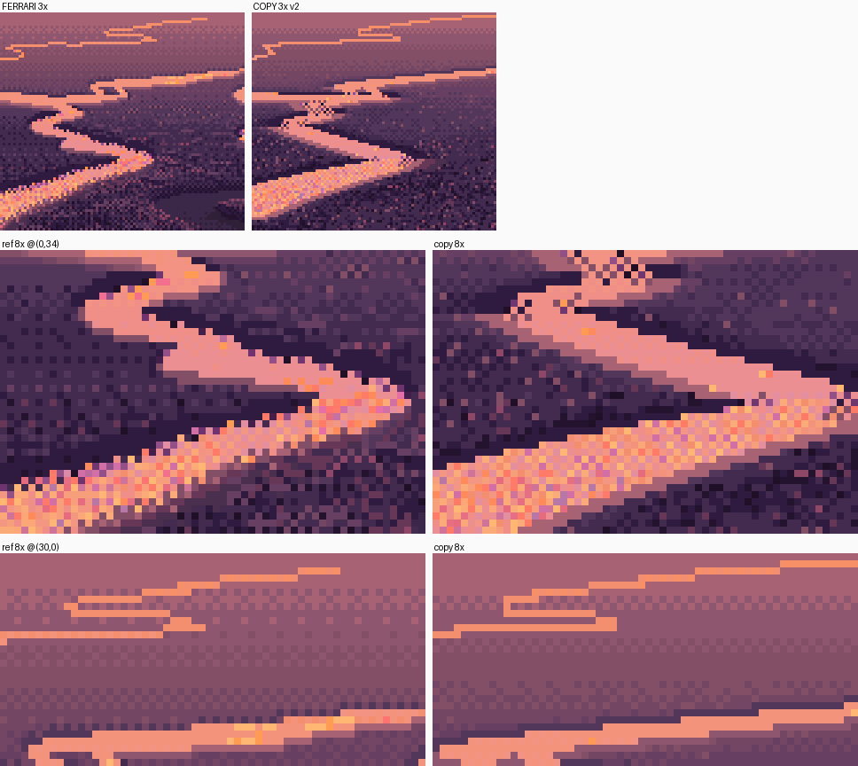
30. elements/channel/study/c0a_v2.pngBash: Broaden far-bank dark, mixed lip, steepness by run length
cd ~/work/pixelart-studies/elements/channel/src; python3 - <<'EOF'
s=open('c0a_v02.py').read()
s=s.replace("v = v + far_side * near_mid * np.interp(F, [0, 4, 8, 12, 16], [2.2, 1.4, 0.7, 0.2, 0.0])",
"v = v + far_side * near_mid * np.interp(F, [0, 4, 8, 12, 18, 26], [1.6, 1.9, 1.6, 1.0, 0.4, 0.0])")
s=s.replace(""" lip = mid & (gy >= 0) & (F >= 0) & (F < KY)
out[lip] = np.where(nearish[lip], 73, 74)""",""" lip = mid & (gy >= 0) & (F >= 0) & (F < KY)
lipc = np.where(rng.random((h, w)) < 0.6, 73, np.where(rng.random((h, w)) < 0.5, 74, 75))
out[lip] = np.where(nearish, lipc, np.where(par, 74, 75))[lip]""")
s=s.replace(""" dk = mid & (gy < 0) & (F >= 0) & (F < KY)
out[dk] = np.where(nearish[dk], 80, 78)""",""" dk = mid & (gy < 0) & (F >= 0) & (F < KY)
out[dk] = np.where(nearish, np.where(steep | (rng.random((h, w)) < 0.6), 80, 79), np.where(par, 78, 76))[dk]""")
s=s.replace("fr = nearish & (gy < 0)","fr = (y > 334) & (gy < 0)")
s=s.replace("steep = np.abs(gx) > 0.6 * np.abs(gy) / KY * 4 # edge normal mostly horizontal",
"steep = np.abs(gy) <= 5 * np.abs(gx) # edge runs of <= 5 px per row: a diagonal")
open('c0a_v02.py','w').write(s)
EOF
cd ..; nice -n 10 python3 src/c0a_v02.py 3 v3
# output:
{'blurLab': 3.23, 'runs_copy': (1.67, 1.96), 'runs_ref': (1.58, 1.78)} water IoU 0.62
ref edge profile ([63.0, 64.0, 68.0, 72.0, 75.0, 76.0, 76.0, 72.0, 72.0, 73.0], [102.0, 79.0, 68.0, 67.0, 65.0, 65.0, 69.0, 70.0, 70.0, 68.0])
copy edge profile ([55.0, 59.0, 66.0, 69.0, 70.0, 74.0, 76.0, 74.0, 76.0, 73.0], [109.0, 89.0, 71.0, 65.0, 61.0, 60.0, 63.0, 66.0, 64.0, 64.0])Read: elements/channel/study/c0a_v3.png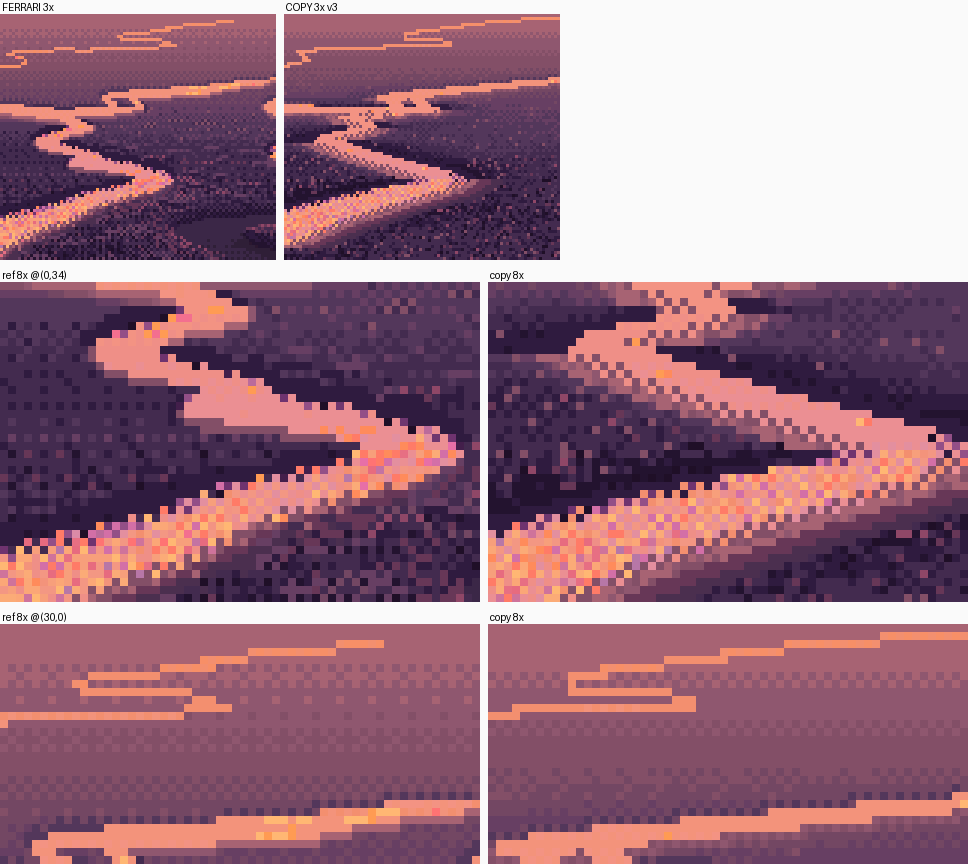
31. elements/channel/study/c0a_v3.pngBash: Restrict checker lip and glints; narrow crop
cd ~/work/pixelart-studies/elements/channel/src; python3 - <<'EOF'
s=open('c0a_v02.py').read()
s=s.replace("wl = nearish & (gy >= 0)","wl = (y > 336) & (gy >= 0)")
s=s.replace(""" g = mask & (y > 300) & (y < 336)
seeds = g & (rng.random((h, w)) < 0.03)""",""" g = mask & (y > 300) & (y < 336)
dens = np.where(y < 312, 0.06, 0.01)
seeds = g & (rng.random((h, w)) < dens)""")
s=s.replace("X0, Y0, W, H = 0, 282, 92, 82","X0, Y0, W, H = 0, 282, 72, 82")
s=s.replace("[(0, 34, 60, 40), (30, 0, 60, 30)]","[(0, 34, 60, 40), (12, 0, 60, 30)]")
open('c0a_v02.py','w').write(s)
EOF
cd ..; nice -n 10 python3 src/c0a_v02.py 3 v4
# output:
{'blurLab': 3.77, 'runs_copy': (1.65, 1.99), 'runs_ref': (1.55, 1.76)} water IoU 0.63
ref edge profile ([61.0, 60.0, 65.0, 69.0, 74.0, 75.0, 76.0, 72.0, 72.0, 72.0], [100.0, 78.0, 66.0, 65.0, 63.0, 64.0, 68.0, 69.0, 69.0, 68.0])
copy edge profile ([53.0, 55.0, 63.0, 67.0, 71.0, 73.0, 76.0, 74.0, 75.0, 72.0], [111.0, 88.0, 69.0, 64.0, 59.0, 56.0, 62.0, 64.0, 66.0, 62.0])Read: elements/channel/study/c0a_v4.png 32. elements/channel/study/c0a_v4.png
32. elements/channel/study/c0a_v4.png
Bash: Glitter inset, calmer mid marsh; render seeds
cd ~/work/pixelart-studies/elements/channel/src; python3 - <<'EOF'
s=open('c0a_v02.py').read()
s=s.replace("o = pk.ordered(v + (rng.random((h, w)) - 0.5) * (0.2 + 0.9 * amp), pk.BAYER4)",
"o = pk.ordered(v + (rng.random((h, w)) - 0.5) * (0.1 + 0.9 * amp ** 2), pk.BAYER4)")
s=s.replace(""" near = mask & (y >= 337)
par""",""" near = mask & (y >= 337) & (F < -KY * 0.9)
par""")
s=s.replace("def water_fill(mask, rng):","def water_fill(mask, rng, F=None):\n F = np.full(mask.shape, -99.0) if F is None else F")
s=s.replace("cv = np.where(m, water_fill(m, rng), cv)","cv = np.where(m, water_fill(m, rng, F), cv)")
open('c0a_v02.py','w').write(s)
EOF
cd ..; nice -n 10 python3 src/c0a_v02.py 3 v5 && for s in 5 11; do nice -n 10 python3 src/c0a_v02.py $s seed$s >/dev/null; done
# output:
{'blurLab': 3.73, 'runs_copy': (1.66, 2.02), 'runs_ref': (1.55, 1.76)} water IoU 0.63
ref edge profile ([61.0, 60.0, 65.0, 69.0, 74.0, 75.0, 76.0, 72.0, 72.0, 72.0], [100.0, 78.0, 66.0, 65.0, 63.0, 64.0, 68.0, 69.0, 69.0, 68.0])
copy edge profile ([53.0, 55.0, 63.0, 67.0, 71.0, 73.0, 76.0, 74.0, 75.0, 72.0], [111.0, 88.0, 69.0, 64.0, 59.0, 56.0, 62.0, 64.0, 66.0, 63.0])Read: elements/channel/study/c0a_v5.png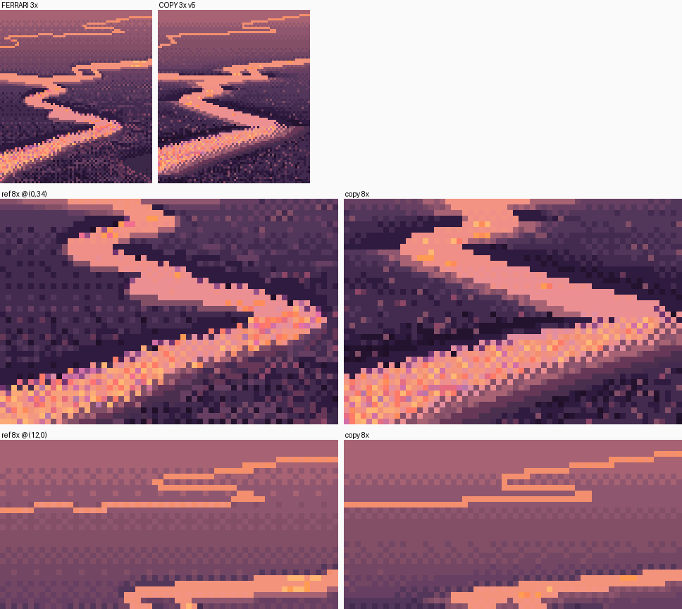
33. elements/channel/study/c0a_v5.pngBash: Near ribbon lip as 75 + warm band
cd ~/work/pixelart-studies/elements/channel/src; python3 - <<'EOF'
s=open('c0a_v02.py').read()
s=s.replace("v = v + near_side * near_mid * np.interp(","v = v + near_side * near_mid * (y <= 336) * np.interp(")
s=s.replace(""" out[lip] = np.where(nearish, lipc, np.where(par, 74, 75))[lip]""",""" out[lip] = np.where(nearish, lipc, np.where(par, 74, 75))[lip]
nl = lip & (y > 336) & steep
out[nl] = np.where(rng.random(nl.sum()) < 0.7, 75, 73)""")
s=s.replace(""" out[warm] = np.where(F[warm] < 2 * KY, 51, 52)""",""" wc = np.where(F < 2.2 * KY, np.where(rng.random((h, w)) < 0.8, 51, 79), np.where(rng.random((h, w)) < 0.6, 52, 51))
out[warm] = wc[warm]""")
open('c0a_v02.py','w').write(s)
EOF
cd ..; nice -n 10 python3 src/c0a_v02.py 3 v6
# output:
{'blurLab': 3.73, 'runs_copy': (1.67, 2.0), 'runs_ref': (1.55, 1.76)} water IoU 0.63
ref edge profile ([61.0, 60.0, 65.0, 69.0, 74.0, 75.0, 76.0, 72.0, 72.0, 72.0], [100.0, 78.0, 66.0, 65.0, 63.0, 64.0, 68.0, 69.0, 69.0, 68.0])
copy edge profile ([53.0, 55.0, 63.0, 67.0, 71.0, 73.0, 76.0, 74.0, 75.0, 72.0], [109.0, 87.0, 67.0, 65.0, 61.0, 58.0, 64.0, 65.0, 67.0, 63.0])Bash: Crop mid detail of v6
cd ~/work/pixelart-studies/elements/channel; python3 -c "
from PIL import Image
im=Image.open('study/c0a_v6.png'); w,h=im.size; im.crop((0,270,w,610)).save('(manager scratchpad)/c0a_v6_mid.png')"
# output:
(Bash completed with no output)Read: (manager scratchpad)/c0a_v6_mid.png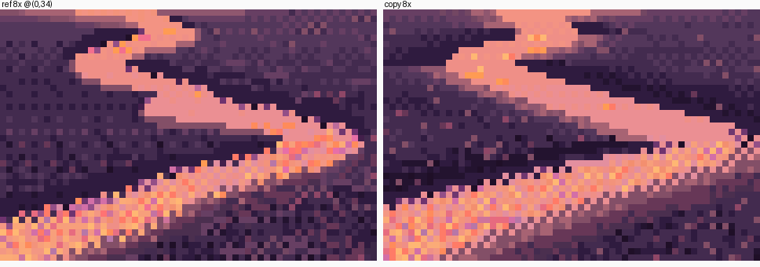
34. (manager scratchpad)/c0a_v6_mid.pngBash: Scale far-bank darkening with nearness
cd ~/work/pixelart-studies/elements/channel/src; python3 - <<'EOF'
s=open('c0a_v02.py').read()
s=s.replace("v = v + far_side * near_mid * np.interp(F, [0, 4, 8, 12, 18, 26], [1.6, 1.9, 1.6, 1.0, 0.4, 0.0])",
"sc = np.clip((y - 276) / 45.0, 0.4, 2.0) # bank faces project taller toward the viewer\n v = v + far_side * near_mid * np.interp(F / sc, [0, 4, 8, 12, 18, 26], [1.6, 2.0, 1.8, 1.2, 0.5, 0.0])")
open('c0a_v02.py','w').write(s)
EOF
cd ..; nice -n 10 python3 src/c0a_v02.py 3 v7; python3 -c "
from PIL import Image
im=Image.open('study/c0a_v7.png'); w,h=im.size; im.crop((0,270,w,610)).save('(manager scratchpad)/c0a_v7_mid.png')"
# output:
{'blurLab': 3.79, 'runs_copy': (1.67, 1.99), 'runs_ref': (1.55, 1.76)} water IoU 0.63
ref edge profile ([61.0, 60.0, 65.0, 69.0, 74.0, 75.0, 76.0, 72.0, 72.0, 72.0], [100.0, 78.0, 66.0, 65.0, 63.0, 64.0, 68.0, 69.0, 69.0, 68.0])
copy edge profile ([53.0, 55.0, 63.0, 65.0, 69.0, 72.0, 74.0, 73.0, 74.0, 71.0], [109.0, 87.0, 67.0, 65.0, 61.0, 58.0, 63.0, 65.0, 67.0, 63.0])Read: (manager scratchpad)/c0a_v7_mid.png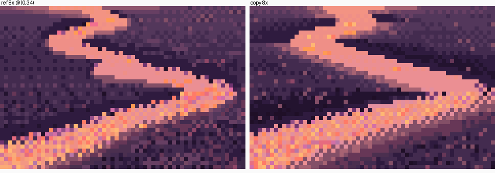
35. (manager scratchpad)/c0a_v7_mid.pngBash: Column-distance bank darkening; run v8
cd ~/work/pixelart-studies/elements/channel/src; cat >> pixkit.py <<'EOF'
def col_dist(mask, maxd=64):
"""per pixel: rows to the nearest mask pixel below (db) and above (da) in the same column."""
h, w = mask.shape
db = np.full((h, w), maxd, float); da = np.full((h, w), maxd, float)
cur = np.full(w, maxd, float)
for y in range(h - 1, -1, -1):
cur = np.where(mask[y], 0, np.minimum(cur + 1, maxd)); db[y] = cur
cur = np.full(w, maxd, float)
for y in range(h):
cur = np.where(mask[y], 0, np.minimum(cur + 1, maxd)); da[y] = cur
return db, da
EOF
python3 - <<'EOF'
s=open('c0a_v02.py').read()
old_start=s.index(" near_mid = np.clip((y - 300) / 12.0, 0, 1)")
old_end=s.index(" far = y < 300\n")
s=s[:old_start]+""" near_mid = np.clip((y - 300) / 12.0, 0, 1)
db, da = pk.col_dist(F < 0)
sc = np.clip((y - 276) / 45.0, 0.4, 2.0) # bank faces project taller toward the viewer
v = v + near_mid * np.interp(db / sc, [0, 1, 2, 3, 4, 6, 8], [1.6, 1.6, 1.9, 1.6, 1.1, 0.4, 0.0])
v = v + near_mid * (da == 2) * (db > 3) * -0.8
"""+s[old_end:]
open('c0a_v02.py','w').write(s)
EOF
cd ..; nice -n 10 python3 src/c0a_v02.py 3 v8; python3 -c "
from PIL import Image
im=Image.open('study/c0a_v8.png'); w,h=im.size; im.crop((0,270,w,610)).save('(manager scratchpad)/c0a_v8_mid.png')"
# output:
{'blurLab': 3.62, 'runs_copy': (1.69, 1.98), 'runs_ref': (1.55, 1.76)} water IoU 0.63
ref edge profile ([61.0, 60.0, 65.0, 69.0, 74.0, 75.0, 76.0, 72.0, 72.0, 72.0], [100.0, 78.0, 66.0, 65.0, 63.0, 64.0, 68.0, 69.0, 69.0, 68.0])
copy edge profile ([53.0, 55.0, 63.0, 64.0, 69.0, 72.0, 75.0, 74.0, 76.0, 73.0], [109.0, 87.0, 65.0, 66.0, 63.0, 60.0, 65.0, 67.0, 69.0, 65.0])Read: (manager scratchpad)/c0a_v8_mid.png36. (manager scratchpad)/c0a_v8_mid.png
Bash: Zoom V11AM river riffle region
cd ~/work/pixelart-studies/elements/channel; L=~/work/pixelart-studies/pedagogy/master-copy/ref/lw; python3 src/zoomcrop.py $L/V11AM.png 300 300 200 130 5 study/v11_z5.png # output: (Bash completed with no output)
Read: elements/channel/study/v11_z5.png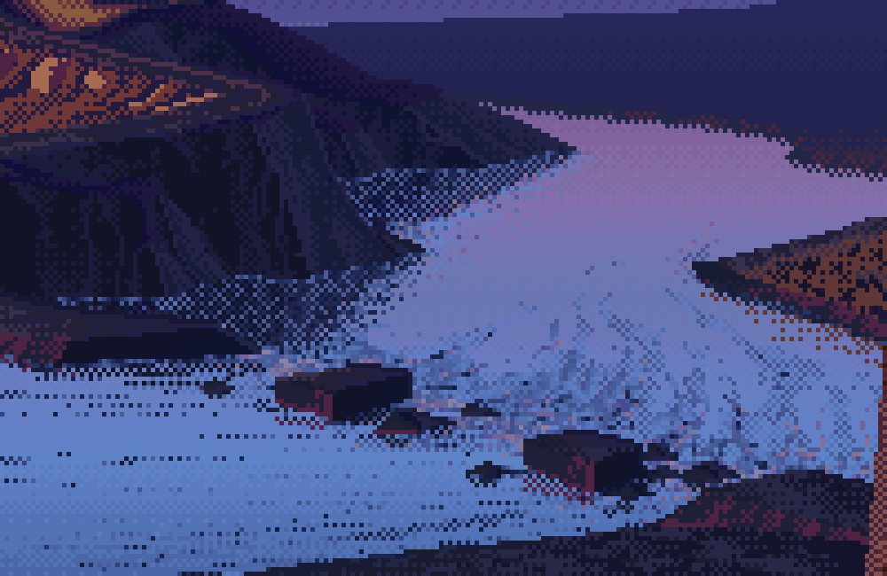
37. elements/channel/study/v11_z5.pngBash: V11AM riffle region palette usage
cd ~/work/pixelart-studies/elements/channel/src; python3 -c "
import pixkit as pk, numpy as np
d=pk.lw_load('V11AM'); idx=d['idx']; pal=d['pal']
sub=idx[330:420,380:490]
u,c=np.unique(sub,return_counts=True)
L=pk.luma(np.arange(256),pal)
for a,b in sorted(zip(u,c),key=lambda t:-t[1])[:40]: print(a,b,pal[a],int(L[a]))
print(d['cycles'])
"
# output:
13 587 [107 119 183] 122
12 574 [107 119 179] 122
10 559 [119 115 179] 123
9 536 [131 111 171] 123
14 477 [107 123 191] 125
11 457 [111 119 179] 123
8 411 [131 107 163] 120
69 303 [31 31 55] 33
19 297 [ 83 115 183] 112
17 287 [ 95 131 199] 127
18 266 [ 91 123 195] 121
93 266 [35 35 71] 38
7 259 [131 99 155] 114
15 240 [103 127 195] 127
95 227 [15 19 47] 20
92 222 [23 27 55] 28
197 189 [ 91 123 195] 121
16 185 [ 99 127 199] 126
198 185 [ 87 115 183] 114
70 171 [79 35 67] 51
192 171 [ 67 83 143] 84
57 167 [39 39 71] 42
82 142 [95 55 55] 67
195 128 [ 79 107 171] 105
196 125 [ 87 115 183] 114
194 103 [ 75 99 163] 98
199 103 [ 79 107 171] 105
216 99 [ 71 91 151] 91
94 95 [27 27 59] 30
193 95 [ 71 91 151] 91
200 87 [ 75 99 163] 98
223 87 [ 71 75 143] 81
96 79 [19 19 39] 21
54 78 [27 27 47] 29
219 78 [111 99 151] 108
211 76 [35 51 99] 51
209 75 [ 71 91 151] 91
71 72 [27 31 51] 32
214 72 [31 43 91] 44
59 68 [19 19 43] 21
[{'reverse': 0, 'rate': 0, 'low': 179, 'high': 182}, {'reverse': 0, 'rate': 0, 'low': 7, 'high': 13}, {'reverse': 0, 'rate': 0, 'low': 13, 'high': 17}, {'reverse': 2, 'rate': 0, 'low': 142, 'high': 146}, {'reverse': 2, 'rate': 0, 'low': 103, 'high': 104}, {'reverse': 0, 'rate': 2304, 'low': 217, 'high': 223}, {'reverse': 2, 'rate': 1380, 'low': 192, 'high': 202}, {'reverse': 0, 'rate': 2688, 'low': 203, 'high': 208}, {'reverse': 2, 'rate': 1689, 'low': 209, 'high': 216}, {'reverse': 0, 'rate': 0, 'low': 0, 'high': 0}, {'reverse': 0, 'rate': 0, 'low': 0, 'high': 0}, {'reverse': 0, 'rate': 0, 'low': 0, 'high': 0}, {'reverse': 0, 'rate': 0, 'low': 0, 'high': 0}, {'reverse': 0, 'rate': 0, 'low': 0, 'high': 0}, {'reverse': 0, 'rate': 0, 'low': 0, 'high': 0}, {'reverse': 0, 'rate': 0, 'low': 0, 'high': 0}]Bash: Symbol map of V11AM riffle region
cd ~/work/pixelart-studies/elements/channel/src; python3 -c "
import pixkit as pk, numpy as np
d=pk.lw_load('V11AM'); idx=d['idx']
def s(v):
if 7<=v<=19: return '789abcdefghij'[v-7]
if 192<=v<=202: return 'ABCDEFGHIJK'[v-192]
if 209<=v<=216: return 'PQRSTUVW'[v-209]
if 217<=v<=223: return 'pqrstuv'[v-217]
if v in (70,82): return 'r'
if v in range(54,72) or v in range(92,97): return '#'
return '?'
for y in range(335,425):
print('%3d '%y+''.join(s(v) for v in idx[y,370:490]))
"
# output:
335 ##################################################WURPS#s#paaaaa7979797878787878787878787878787878787878787?????????????
336 #############################################WUURW#K#p#v#7brb7b8b7988788878887888788878887888788878887888788?7??????????
337 ########################################WVPRK#A#D#p#r#vBapaaa888787878887878788878787888787878887878788878787?8?7?7?????
338 #################WVUTWRSPVUSRQWUSWWRTRPW#A#K#H#v#p#DArcec8b8b888888888888888888888888888888888888888888888888888?8?8?8?8
339 ##############WTW#P#W#V#T#S#Q#P#U#W#H#K#A#C#K#A#s#8pecub8988898989898888898888888988888889888888898888888988888889888?8?
340 ####?#VUTSRQPW#T#W#P#V#U#S#R#P#R#W#K#H#A#C#p#K#Prur8b8b8b8b8889898888898888888888888888888888888888888888888888888888888
341 #######?W?R#T#V#W#S#W#U#T#S#Q#P#K#H#I#G#D#B#p#s9rc8c89898989898989898989898989898989898989898989898989898989898989898989
342 #########U#P#Q#W#U#R#U#P#P#S#Q#S#p#t#p#s#v#FAepeeeceb8b8b898989898989898989898989898989898989898989898989898989898989898
343 ########V#T#W#W#R#W#W#R#T#P#K#I#G#K#A#A#p#ug8r8b8c8989898989898989898989898989898989898989898989898989898989898989898989
344 #########W#P#U#S#W#S?P?K?F#A#K#K#A#p#s#v9u9sg9q9c9c9c999c999999999999999999999999999999999999999999999999999999999999999
345 ##########W#U?T?R?P?T?U?Q?W?P#p#s#v#trgsvb9bsb9b8b9989998999899989998999899989998999899989998999899989998999899989998999
346 ##########?W?P?S?p?K?K?K?H?D?A?p#rtve9e999v9c999999999999999999999999999999999999999999999999999999999999999999999999999
347 ###########?R?P?U?K?G?A?R?P?r?v?sgue9e9epa9a9cra9a9a9a9a9a9a9a9a9a9a9a9a9a9a9a9a9a9a9a9a9a9a9a9a9a9a9a9a9a9a9a9a9a9a9a9a
348 ###########K?F?K?G?C?K?F?A?v?p?tvgggpge9e9e999c999a999a9c9a999a999a999a999a999a999a999a999a999a999a999a999a999a999a999a9
349 ############V?T?S?Q?P?t?p?tvIgpe9e9e9e9e9e9a9a9a9a9a9a9a9a9a9a9a9a9a9a9a9a9a9a9a9a9a9a9a9a9a9a9a9a9a9a9a9a9a9a9a9a9a9a9a
350 #############W?T?QPpspvRPaegegegere9eae9cac9aaa9cac9aaa9aaa9aaa9aaa9aaa9aaa9aaa9aaa9aaa9aat9aaa9aaa9aaa9aaa9aaa9aaa9aaa9
351 ###############?TqTuRPsprFgugeue9c9c9c9c9a9c9c9a9a9a9a9a9a9a9a9a9a9a9a9a9a9a9a9a9a9a9a9a9a9a9a9a9a9a9a9a9a9a9a9a9a9a9a9a
352 ##################prtvFpvasreaeaeaeaaaaaaacaaaaaaaaaaaaaaaaaaaaaaaaaaaaaaaaaaaaaaaaaaaaaaaaaaaaaaaaaaaaaaaaaaaaaaaaa####
353 ####################sIsIIugepeaeavacaqabaaaaaaabaaaaaaabaaaaaaabaaaaaaabaaaaaaabaaaaaaabasaaaaabaaaaaaabaaaaaaab?#####?#
354 #######################sggrgegeaeaeaaaaaaaaaaaaaaaaaaaaaaaaaaaaaaaaaaaaaaaaaaaaaaaaaaataaaaraaaaaaaaaaaaaaaa#?#######???
355 #########################eaeaeabababababababababababababababababababababababababababasabaqababababababab####?#?#?#?r?r?r
356 ##########################eAeaeaearaaabaaabaaabaaabaaabaaabaaabaaabaaabaaabaaabaaabraabapabaaabaaaba#???####????r?r?r?r?
357 ######################WURPWepeabababababababababababababababababababababababababababapavaqababab######?#?#?##r?r?r?r?rr?
358 ###################U#PUb#bsbbbetebbbbsbbbbbbbbbbbbbbbbbbbbbbbbbbbbbbbbbbbbbbbbbbtbbbvbubpbbb###???#?###?r?r?r?r??r?rrrrr
Bash: Zoom copy B crop region
cd ~/work/pixelart-studies/elements/channel; L=~/work/pixelart-studies/pedagogy/master-copy/ref/lw; python3 src/zoomcrop.py $L/V11AM.png 370 335 120 90 6 study/v11_cropB.png # output: (Bash completed with no output)
Read: elements/channel/study/v11_cropB.png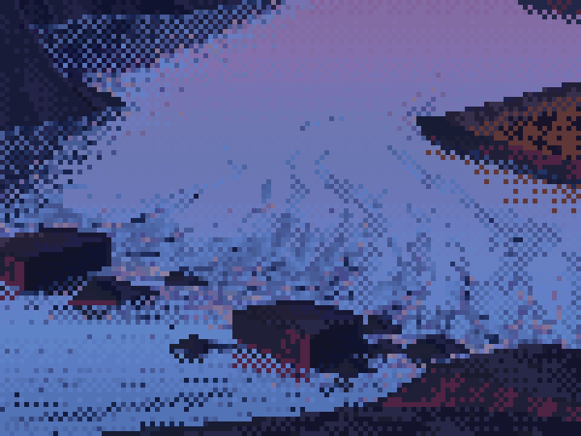
38. elements/channel/study/v11_cropB.pngWrite: elements/channel/src/c0b_v11.py
"""Copy B: the river with a riffle and rocks in V11AM (Living Worlds, monoliths scene, morning),
native crop (370,335, 120x90). Ferrari's own palette indices; procedure + copyist's sketch.
Discovered procedure (read off his index map):
STILL WATER the sky ramp 7..19 (lilac -> blue, near-isovalue), climbing ~1 step per 7 rows toward
the viewer, as clean ORDERED patterns per row (8888 / 8889 / 8989 / 9a9a ...).
REFLECTION the dark mesa's reflection has a wide 50% CHECKER edge (5-6 px across), whose water
EDGES pixels are colour-cycled darker blues (209..216): the soft edge is the shimmer.
RIFFLE a fan of thin strokes of cycled mid-blues (192..202, darker than the mirror) drawn on
the checker lattice (every other pixel), rising from the rocks and leaning outward,
dense at the foot, sparse at the tips: flow seen end-on at low angle.
NEAR DASHES near the viewer: long dotted rows (cycled index on every other pixel), consecutive
cycle indices along a dash so a light runs along it when the palette turns.
ROCKS flat dark slabs, a lighter top row, warm maroon (70/82) on the sun-side face and in the
checker below, a dark checker reflection hanging under them.
"""
import sys
import numpy as np
import pixkit as pk
from matplotlib.path import Path
X0, Y0, W, H = 370, 335, 120, 90
DARK = [92, 93, 94, 95, 69, 57, 54]
def poly(h, w, pts):
yy, xx = np.mgrid[0:h, 0:w]
return Path(pts).contains_points(np.c_[xx.ravel() + 0.5, yy.ravel() + 0.5]).reshape(h, w)
def sketch():
mesa = [(-1, -1), (52, -1), (30, 2), (14, 5), (4, 8), (8, 13), (14, 16), (26, 17), (26, 22), (12, 24),
(4, 27), (-1, 29)]
bank_r = [(121, 13), (104, 15), (92, 17), (86, 19), (90, 22), (104, 28), (116, 33), (121, 34)]
rocks = [[(0, 47), (18, 46), (22, 49), (22, 57), (12, 60), (0, 61)],
[(47, 63), (70, 62), (76, 66), (76, 74), (64, 76), (48, 73)],
[(35, 69), (42, 68), (45, 70), (40, 72), (34, 71)],
[(17, 57), (30, 56), (33, 59), (18, 60)]]
bank_n = [(62, 91), (72, 84), (90, 76), (106, 70), (121, 67), (121, 91)]
fan = dict(cx=72, base=66, top=20, spread=34)
return mesa, bank_r, rocks, bank_n, fan
def fringe(mask, width_px, par):
"""pixels within width_px (horizontal) of the mask, outside it."""
h, w = mask.shape
out = np.zeros_like(mask)
for k in range(1, width_px + 1):
out[:, :-k] |= mask[:, k:]
out[:, k:] |= mask[:, :-k]
return out & ~mask
def paint(seed=1):
rng = np.random.default_rng(seed)
h, w = H, W
yy, xx = np.mgrid[0:h, 0:w]
y = yy + Y0
par = (xx + yy) % 2 == 0
mesa, bank_r, rocks, bank_n, fan = sketch()
# still water: sky ramp climbing with nearness, ordered 4x4, banded
v = np.interp(y, [338, 344, 350, 355, 358, 364, 369, 374, 380, 386, 393, 399, 405, 410, 416, 424],
[8.0, 9.0, 10.0, 10.5, 11.0, 12.0, 12.5, 13.0, 14.0, 14.5, 15.0, 16.0, 16.5, 17.0, 18.0, 18.5])
cv = pk.ordered(pk.banded(v, 0.6), pk.BAYER4)
# mesa reflection: dark body, wide checker edge whose water pixels cycle (209..216)
M = poly(h, w, mesa)
band = np.zeros_like(M)
for k in range(1, 7):
sh = np.zeros_like(M); sh[:-k] = M[k:] # pixels above... use a soft dilation in both axes
band |= sh
fr = fringe(M, 14, par) & (yy < 30)
dilated = fr | band
cv[M] = rng.choice(DARK[:4], M.sum())
e = dilated & ~M
cv[e & par] = rng.choice(DARK[:3], (e & par).sum())
cv[e & ~par] = rng.integers(209, 217, (e & ~par).sum())
# right bank: dark + warm checker, lower edge checker into water
B = poly(h, w, bank_r)
warm = pk.value_noise(h, w, 5, rng, 2) > 0.5
cv[B] = np.where(par & warm, 82, np.where(warm & (rng.random((h, w)) < 0.4), 70, 92))[B]
be = fringe(B, 3, par) & (yy > 17)
cv[be & par] = 82
# riffle fan: strokes on the checker lattice, cycled 192..202
cx, base, top, spread = fan['cx'], fan['base'], fan['top'], fan['spread']
for i in range(170):
x0 = cx + rng.normal(0, spread * 0.45)
y0 = base - rng.random() * 8
L = int(rng.integers(4, 26) * (1 - abs(x0 - cx) / (spread * 1.6)))
lean = (x0 - cx) / spread * 0.9 + rng.normal(0, 0.15)
x, yv = x0, y0
k0 = int(rng.integers(0, 11))
for s in range(max(L, 2)):
yi, xi = int(yv), int(round(x))
if (xi + yi) % 2:
xi += 1 if rng.random() < 0.5 else -1
if 0 <= yi < h and 0 <= xi < w and yi > top and not M[yi, xi] and not B[yi, xi]:
if rng.random() < 0.8:
cv[yi, xi] = 192 + (k0 + s) % 11
yv -= 1; x += lean
# near dotted dashes (cycled, consecutive indices along the dash)
for yd in range(60, h):
pr = np.interp(yd, [60, 64, 70, 78, 90], [0.0, 0.5, 0.3, 0.45, 0.35])
x = int(rng.integers(0, 6))
while x < w:
if rng.random() < pr * 0.35:
L = int(rng.integers(3, 12)); k0 = int(rng.integers(0, 11))
ramp = (192, 11) if yd < 79 else (209, 8)
for s in range(L):
xi = x + 2 * s
xi += (xi + yd) % 2
if xi < w:
cv[yd, xi] = ramp[0] + (k0 - s) % ramp[1]
x += 2 * L + int(rng.integers(2, 10))
else:
x += int(rng.integers(2, 8))
# rocks: dark slab, lighter top row, warm maroon on the right face, checker reflection below
for rp in rocks:
R = poly(h, w, rp)
cv[R] = rng.choice([92, 93, 94, 69], R.sum(), p=[0.3, 0.3, 0.2, 0.2])
top_ = R & ~np.roll(R, 1, 0)
cv[top_] = 57
rx = np.array([p[0] for p in rp]); right = R & (xx > rx.max() - 5)
cv[right & par] = 82; cv[right & ~par & (rng.random((h, w)) < 0.4)] = 70
refl = np.zeros_like(R)
for k in range(1, 4):
refl[k:] |= R[:-k]
refl &= ~R
cv[refl & par] = np.where(rng.random((h, w)) < 0.6, 92, 82)[refl & par]
# near bank
N = poly(h, w, bank_n)
cv[N] = np.where(par & (pk.value_noise(h, w, 4, rng, 2) > 0.62), 82,
rng.choice([92, 93, 94, 95], (h, w)))[N]
ne = fringe(N, 2, par)
cv[ne & par] = rng.choice([92, 82], (ne & par).sum())
return cv
if __name__ == '__main__':
d = pk.lw_load('V11AM')
ref_idx = d['idx'][Y0:Y0 + H, X0:X0 + W]
pal = d['pal']
cv = paint(int(sys.argv[1]) if len(sys.argv) > 1 else 1)
ref = pk.rgb(ref_idx, pal); cp = pk.rgb(cv, pal)
tag = sys.argv[2] if len(sys.argv) > 2 else 'v1'
pk.compare_sheet(ref, cp, 'study/c0b_%s.png' % tag, [(40, 20, 60, 40), (0, 50, 60, 40)], label=tag)
print(pk.metrics(cp, ref))
Bash: Run copy B v1
cd ~/work/pixelart-studies/elements/channel; nice -n 10 python3 src/c0b_v11.py 1 v1
# output:
{'blurLab': 6.14, 'runs_copy': (1.78, 1.8), 'runs_ref': (1.44, 1.51)}Read: elements/channel/study/c0b_v1.png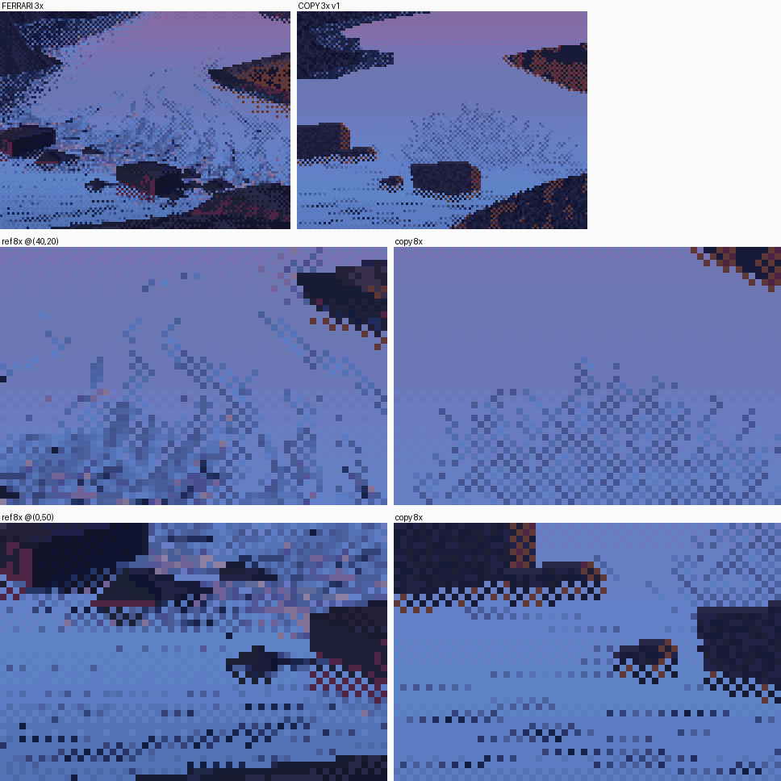
39. elements/channel/study/c0b_v1.pngBash: 12x zoom of V11AM riffle strokes
cd ~/work/pixelart-studies/elements/channel; L=~/work/pixelart-studies/pedagogy/master-copy/ref/lw; python3 src/zoomcrop.py $L/V11AM.png 400 355 70 45 12 study/v11_riffle12.png # output: (Bash completed with no output)
Read: elements/channel/study/v11_riffle12.png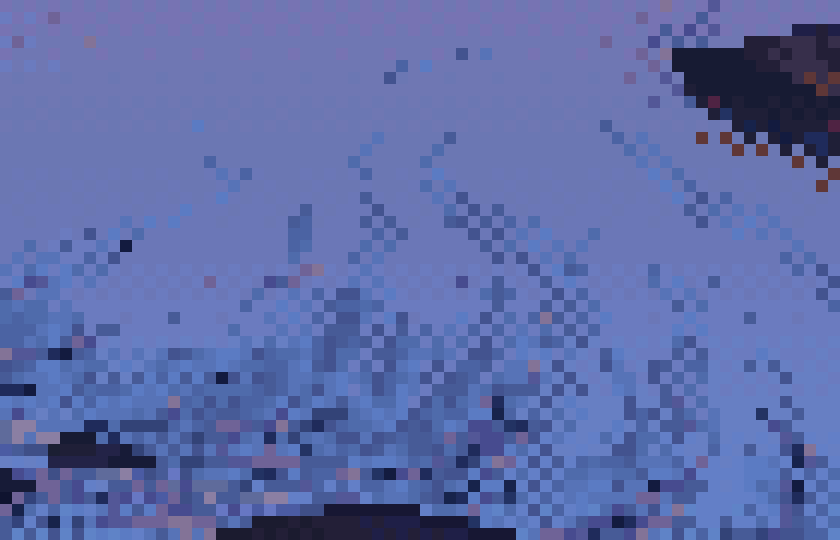
40. elements/channel/study/v11_riffle12.pngBash: Map riffle mark pixels in V11AM crop
cd ~/work/pixelart-studies/elements/channel/src; python3 -c "
import pixkit as pk, numpy as np
d=pk.lw_load('V11AM'); idx=d['idx'][335:425,370:490]; pal=d['pal']
m=(idx>=192)&(idx<=202); m2=(idx>=203)&(idx<=223)
dark=np.isin(idx,list(range(54,72))+list(range(92,97))+[70,82])
img=np.full(idx.shape+(3,),235,np.uint8); img[m]=(40,60,200); img[m2]=(200,60,160); img[dark]=(30,30,30)
pk.save(img,'../study/v11_marks.png',5)
for i in range(203,224): print(i,pal[i])
"
# output:
203 [ 71 91 151]
204 [ 95 107 155]
205 [139 127 163]
206 [103 119 195]
207 [ 75 91 163]
208 [ 63 79 135]
209 [ 71 91 151]
210 [ 51 67 123]
211 [35 51 99]
212 [23 35 75]
213 [19 27 63]
214 [31 43 91]
215 [ 51 67 119]
216 [ 71 91 151]
217 [ 71 91 151]
218 [ 83 87 151]
219 [111 99 151]
220 [131 115 151]
221 [111 99 151]
222 [ 71 91 151]
223 [ 71 75 143]Read: elements/channel/study/v11_marks.png 41. elements/channel/study/v11_marks.png
41. elements/channel/study/v11_marks.png
Bash: Riffle as solid body with rising chains
cd ~/work/pixelart-studies/elements/channel/src; python3 - <<'EOF'
s=open('c0b_v11.py').read()
a=s.index(" # riffle fan: strokes"); b=s.index(" # near dotted dashes")
s=s[:a]+''' # riffle: a solid body of cycled bluer tones (facets tilted toward us mirror higher sky),
# ragged top dissolving through checker, 45-degree pixel chains rising and fanning from it
Rb = poly(h, w, fan['body'])
tone = pk.value_noise(h, w, 4, rng, 2)
body = 192 + np.clip((tone * 9).astype(int), 0, 10)
cv[Rb] = body[Rb]
lil = Rb & (rng.random((h, w)) < 0.08)
cv[lil] = rng.choice([219, 220, 221, 205], lil.sum())
dk = Rb & (rng.random((h, w)) < 0.05)
cv[dk] = rng.choice([210, 211, 214, 215], dk.sum())
# checker transition above the body (2-4 rows)
above = np.zeros_like(Rb)
for k in range(1, 4):
above[:-k] |= Rb[k:]
above &= ~Rb
tr = above & par & (rng.random((h, w)) < 0.8)
cv[tr] = body[tr]
# rising chains from the top edge, leaning outward from the fan centre
tops = [(x, int(np.argmax(Rb[:, x]))) for x in range(w) if Rb[:, x].any()]
for i in range(fan['n']):
x0, y0 = tops[int(rng.integers(0, len(tops)))]
L = int(rng.integers(3, fan['maxlen']))
side = 1 if (x0 > fan['cx'] or rng.random() < 0.3) and rng.random() < 0.8 else -1
k0 = int(rng.integers(0, 11))
xi, yi = x0, y0 - 1
steep = rng.random() < 0.35
for st in range(L):
if (xi + yi) % 2:
xi += side
if 0 <= yi < h and 0 <= xi < w and not M[yi, xi] and not B[yi, xi]:
if rng.random() < 0.9:
cv[yi, xi] = 192 + (k0 + st) % 11
yi -= 1
if not steep or st % 2:
xi += side
if st == L // 2 and rng.random() < 0.3:
side = -side # the arch turns over: a fountain
'''+s[b:]
s=s.replace(" fan = dict(cx=72, base=66, top=20, spread=34)",
""" body = [(0, 44), (14, 42), (30, 40), (44, 43), (56, 41), (66, 44), (78, 46), (90, 52), (98, 58), (100, 64),
(90, 64), (76, 70), (60, 66), (44, 63), (30, 60), (18, 58), (0, 60)]
fan = dict(cx=60, body=body, n=110, maxlen=18)""")
open('c0b_v11.py','w').write(s)
EOF
cd ..; nice -n 10 python3 src/c0b_v11.py 1 v2
# output:
{'blurLab': 5.9, 'runs_copy': (1.65, 1.67), 'runs_ref': (1.44, 1.51)}Read: elements/channel/study/c0b_v2.png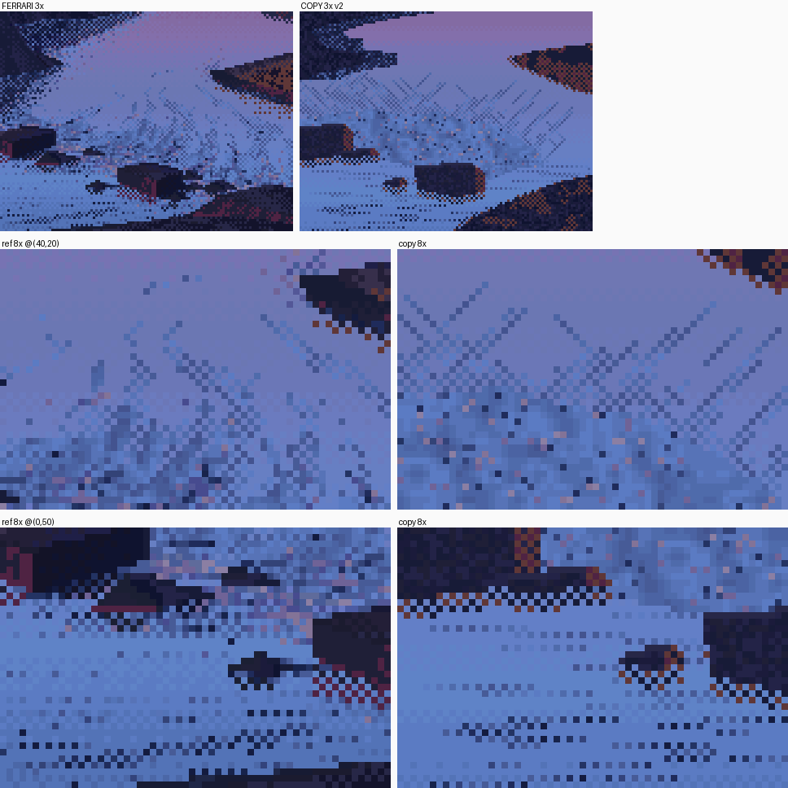
42. elements/channel/study/c0b_v2.pngBash: Strand body and curling chains for riffle
cd ~/work/pixelart-studies/elements/channel/src; python3 - <<'EOF'
s=open('c0b_v11.py').read()
a=s.index(" tone = pk.value_noise(h, w, 4, rng, 2)"); b=s.index(" # checker transition above the body")
s=s[:a]+''' # body as vertical strands of adjacent cycle tones (run 2-5), like grass strands
body = np.zeros((h, w), int)
tone = pk.value_noise(h, w, 6, rng, 2)
for x in range(w):
yv = 0
while yv < h:
L = int(rng.integers(2, 6))
t = int(np.clip(tone[yv, x] * 11 + rng.normal(0, 1.8), 0, 10))
body[yv:yv + L, x] = 192 + t
yv += L
cv[Rb] = body[Rb]
lil = Rb & (rng.random((h, w)) < 0.06)
cv[lil] = rng.choice([219, 220, 221, 205], lil.sum())
dk = Rb & (rng.random((h, w)) < 0.04)
cv[dk] = rng.choice([210, 211, 214, 215], dk.sum())
'''+s[b:]
a=s.index(" tops = [(x, int(np.argmax"); b=s.index(" # near dotted dashes")
s=s[:a]+''' tops = [(x, int(np.argmax(Rb[:, x]))) for x in range(w) if Rb[:, x].any()]
for i in range(fan['n']):
x0, y0 = tops[int(rng.integers(0, len(tops)))]
L = int(rng.integers(3, fan['maxlen']))
out = np.sign(x0 - fan['cx'] + rng.normal(0, 8)) or 1.0
lean0 = rng.uniform(0.0, 0.35) * out
curl = rng.uniform(0.0, 0.08) * out
k0 = int(rng.integers(0, 11))
x = float(x0)
for st in range(L):
yi = y0 - 1 - st
xi = int(round(x))
if (xi + yi) % 2:
xi += 1 if x > xi else -1
if 0 <= yi < h and 0 <= xi < w and not M[yi, xi] and not B[yi, xi] and rng.random() < 0.88:
cv[yi, xi] = 192 + (k0 + st) % 11
x += lean0 + curl * st
'''+s[b:]
s=s.replace("fan = dict(cx=60, body=body, n=110, maxlen=18)","fan = dict(cx=58, body=body, n=70, maxlen=16)")
open('c0b_v11.py','w').write(s)
EOF
cd ..; nice -n 10 python3 src/c0b_v11.py 1 v3
# output:
{'blurLab': 5.91, 'runs_copy': (1.82, 1.68), 'runs_ref': (1.44, 1.51)}Read: elements/channel/study/c0b_v3.png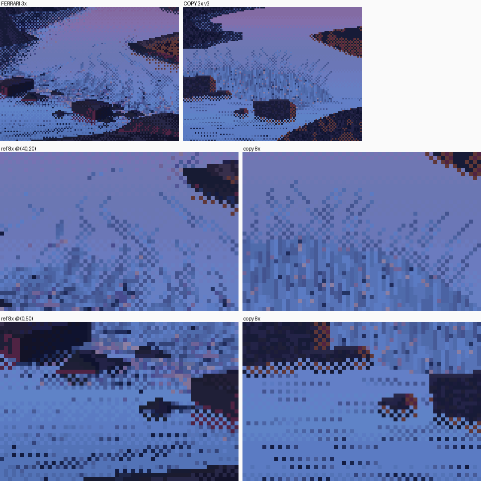
43. elements/channel/study/c0b_v3.pngBash: Riffle as density field with jets
cd ~/work/pixelart-studies/elements/channel/src; python3 - <<'EOF'
s=open('c0b_v11.py').read()
a=s.index(" Rb = poly(h, w, fan['body'])"); b=s.index(" # rising chains from the top edge")
s=s[:a]+''' Rb0 = poly(h, w, fan['body'])
# density: 1 in the body core, decaying upward over ~12 rows, cut into vertical jets
from scipy.ndimage import distance_transform_edt
dup = distance_transform_edt(~Rb0) # px from the body
core = distance_transform_edt(Rb0)
jets = pk.value_noise(h, w, 3, rng, 2, aniso=(4.0, 0.5))
D = np.where(Rb0, np.clip(0.55 + core * 0.12, 0, 1), np.exp(-dup / 5.0) * 0.8)
D = D * (0.55 + 0.9 * jets)
body = np.zeros((h, w), int)
tone = pk.value_noise(h, w, 6, rng, 2)
for x in range(w):
yv = 0
while yv < h:
L = int(rng.integers(2, 6))
t = int(np.clip(tone[yv, x] * 11 + rng.normal(0, 1.8), 0, 10))
body[yv:yv + L, x] = 192 + t
yv += L
solid = D > 0.78
chk = (D > 0.42) & ~solid & par
spr = (D > 0.2) & (D <= 0.42) & par & (rng.random((h, w)) < 0.35)
Rb = solid | chk | spr
Rb &= ~M & ~B
cv[Rb] = body[Rb]
lil = Rb & (rng.random((h, w)) < 0.06)
cv[lil] = rng.choice([219, 220, 221, 205], lil.sum())
dk = Rb & solid & (rng.random((h, w)) < 0.05)
cv[dk] = rng.choice([210, 211, 214, 215], dk.sum())
Rb = solid
'''+s[b:]
a=s.index(" # checker transition above the body"); b=s.index(" # rising chains from the top edge")
s=s[:a]+s[b:]
open('c0b_v11.py','w').write(s)
EOF
cd ..; nice -n 10 python3 src/c0b_v11.py 1 v4
# output:
Traceback (most recent call last):
File "<stdin>", line 32, in <module>
ValueError: substring not found
{'blurLab': 5.91, 'runs_copy': (1.82, 1.68), 'runs_ref': (1.44, 1.51)}Bash: Apply density-field riffle, run v4
cd ~/work/pixelart-studies/elements/channel/src; python3 - <<'EOF'
s=open('c0b_v11.py').read()
a=s.index(" Rb = poly(h, w, fan['body'])"); b=s.index(" # rising chains from the top edge")
s=s[:a]+''' Rb0 = poly(h, w, fan['body'])
# density: 1 in the body core, decaying upward over ~12 rows, cut into vertical jets
from scipy.ndimage import distance_transform_edt
dup = distance_transform_edt(~Rb0) # px from the body
core = distance_transform_edt(Rb0)
jets = pk.value_noise(h, w, 3, rng, 2, aniso=(4.0, 0.5))
D = np.where(Rb0, np.clip(0.55 + core * 0.12, 0, 1), np.exp(-dup / 5.0) * 0.8)
D = D * (0.55 + 0.9 * jets)
body = np.zeros((h, w), int)
tone = pk.value_noise(h, w, 6, rng, 2)
for x in range(w):
yv = 0
while yv < h:
L = int(rng.integers(2, 6))
t = int(np.clip(tone[yv, x] * 11 + rng.normal(0, 1.8), 0, 10))
body[yv:yv + L, x] = 192 + t
yv += L
solid = D > 0.78
chk = (D > 0.42) & ~solid & par
spr = (D > 0.2) & (D <= 0.42) & par & (rng.random((h, w)) < 0.35)
Rb = solid | chk | spr
Rb &= ~M & ~B
cv[Rb] = body[Rb]
lil = Rb & (rng.random((h, w)) < 0.06)
cv[lil] = rng.choice([219, 220, 221, 205], lil.sum())
dk = Rb & solid & (rng.random((h, w)) < 0.05)
cv[dk] = rng.choice([210, 211, 214, 215], dk.sum())
Rb = solid | Rb0
'''+s[b:]
open('c0b_v11.py','w').write(s)
EOF
cd ..; nice -n 10 python3 src/c0b_v11.py 1 v4
# output:
{'blurLab': 5.95, 'runs_copy': (1.71, 1.61), 'runs_ref': (1.44, 1.51)}Read: elements/channel/study/c0b_v4.png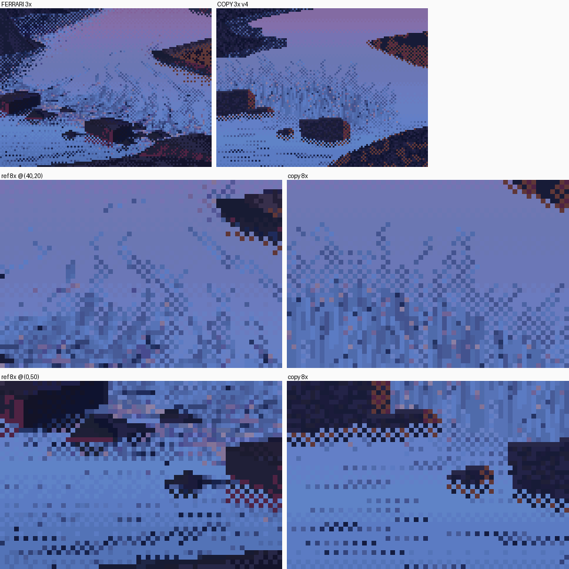
44. elements/channel/study/c0b_v4.pngBash: Copy B: softer edges, troughs, lighter body
cd ~/work/pixelart-studies/elements/channel/src; python3 - <<'EOF'
s=open('c0b_v11.py').read()
# 1 body: shorter runs, lighter tones, more lilac
s=s.replace(""" L = int(rng.integers(2, 6))
t = int(np.clip(tone[yv, x] * 11 + rng.normal(0, 1.8), 0, 10))""",""" L = int(rng.integers(1, 4))
t = int(np.clip(tone[yv, x] * 11 + rng.normal(0, 2.2), 0, 10))""")
s=s.replace("lil = Rb & (rng.random((h, w)) < 0.06)","lil = Rb & (rng.random((h, w)) < 0.12)")
# 2 trough bands under the body: horizontal dark cycled runs
s=s.replace(" Rb = solid | Rb0\n",""" Rb = solid | Rb0
below = np.zeros_like(Rb0)
for k in range(1, 5):
below[k:] |= Rb0[:-k]
below &= ~Rb0
for yb in range(h):
xs = np.nonzero(below[yb])[0]
x = 0
while x < len(xs):
if rng.random() < 0.25:
L = int(rng.integers(3, 10))
seg = xs[x:x + L]
cv[yb, seg] = rng.choice([209, 210, 215, 216, 223], len(seg))
x += L + int(rng.integers(2, 8))
else:
x += 1
""")
# 3 soft mesa reflection edge: graded checker by horizontal distance
a=s.index(" band = np.zeros_like(M)"); b=s.index(" # right bank")
s=s[:a]+''' from scipy.ndimage import distance_transform_edt as edt
dm = edt(~M, sampling=(3.0, 1.0)) # rows count triple: the edge spreads sideways
cv[M] = rng.choice(DARK[:4], M.sum())
g1 = (dm > 0) & (dm <= 5)
g2 = (dm > 5) & (dm <= 10)
g3 = (dm > 10) & (dm <= 16)
t4 = pk.tile(pk.BAYER2, h, w)
for g, thr in ((g1, 0.8), (g2, 0.5), (g3, 0.22)):
dsel = g & (t4 < thr)
cv[dsel] = rng.choice(DARK[:3], dsel.sum())
csel = g & ~dsel & (rng.random((h, w)) < 0.7)
cv[csel] = rng.integers(209, 217, csel.sum())
'''+s[b:]
open('c0b_v11.py','w').write(s)
EOF
cd ..; nice -n 10 python3 src/c0b_v11.py 1 v5
# output:
{'blurLab': 5.56, 'runs_copy': (1.58, 1.54), 'runs_ref': (1.44, 1.51)}Read: elements/channel/study/c0b_v5.png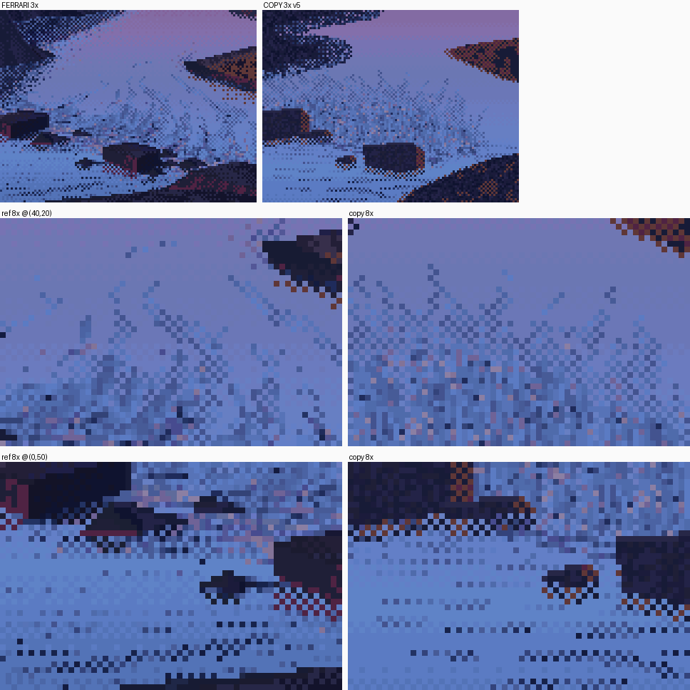
45. elements/channel/study/c0b_v5.pngBash: Check for critique file
cd ~/work/pixelart-studies/elements/channel; ls; cat CRITIQUE.md 2>/dev/null | head -50 # output: CRITIQUE.md out photos src study # Critique (newest first) ## Round 1 — 2026-09-25 21:22 — stage 0 master copy, `study/c0a_v4.png` (V02 winding ribbons) **Verdict: REVISE** — the far ribbons are nearly there; the near ribbon gives itself away. (My read; your call. The bar: indistinguishable from his crop at 8× except by subject.) What's working: - **Far band (bottom 8× pair).** The thin ribbons as 1-px-tall horizontal runs with stepped joins, and the doubled loop, are very close to his. The sky-lilac field with its faint checker also matches. - The value plan of the near crop (dark banks, bright ribbon, glinting gravel band) is right at 3×. What gives it away: 1. **The ruled diagonal.** In "COPY 3x" and the upper 8× copy, the lower edge of the glinting band and the dark wedge at the bottom right are one straight 45° line from roughly x=200 to x=430 (3×). He has no straight edge there: the glint band dies out upward and downward through thinning dither, with scattered orange and pink specks spilling into the dark. A ruled diagonal is the fastest giveaway in the whole copy. 2. **The ribbon reads as a road.** Your near ribbon keeps a nearly constant width with parallel edges, and a clean V at the bend. His ribbon breathes: the banks bite into it with stepped notches 2–4 px deep, dark tongues of bank overlap the water, and the width pinches and swells. Look at the ref 8× around (180–260, 330–420): the upper edge of his ribbon is a series of little stepped bays. That irregularity is what makes it water in a gravel bed instead of paint on a surface. 3. **The dark banks are too smooth.** His near-left bank carries patches of lighter-violet checker in irregular clumps (vegetation texture). Yours has the checker, but spread more evenly. Next: kill the ruled edge first (1), then give the near ribbon's banks the stepped bites (2).
Bash: Show paint and marsh speck code
cd ~/work/pixelart-studies/elements/channel/src; grep -n "def paint" -A 14 c0a_v02.py; grep -n "lp = (~far)" -B2 -A8 c0a_v02.py
# output:
155:def paint(seed=3):
156- rng = np.random.default_rng(seed)
157- F, thread = fields(H, W)
158- gy, gx = np.gradient(F)
159- steep = np.abs(gy) <= 5 * np.abs(gx) # edge runs of <= 5 px per row: a diagonal
160- m = (F < 0) | thread
161- cv = marsh(H, W, rng, F, gy, steep)
162- cv = np.where(m, water_fill(m, rng, F), cv)
163- cv = edges(cv, F, gy, steep, rng)
164- cv[thread] = water_fill(thread, rng)[thread]
165- return cv, m
166-
167-
168-if __name__ == '__main__':
169- d = pk.lw_load('V02')
84- o = np.where(skip, np.where((xx + yy) % 2 == 0, 79, 81), o)
85- out[~far] = o[~far]
86: lp = (~far) & (rng.random((h, w)) < 0.025 * (0.5 + amp)) & (F > 6)
87- out[lp] = 75
88- ds = (y > 335) & (rng.random((h, w)) < 0.04 * amp)
89- out[ds] = 82
90- ws = (y > 328) & (rng.random((h, w)) < 0.06 * amp) & (F > 6)
91- out[ws] = np.where(rng.random((h, w)) < 0.8, 51, 48)[ws]
92- return np.clip(out, 48, 84)
93-
94-Bash: Copy A: breathing banks, near-edge dissolve, clumps
cd ~/work/pixelart-studies/elements/channel/src; python3 - <<'EOF'
s=open('c0a_v02.py').read()
s=s.replace(""" F, thread = fields(H, W)
gy, gx = np.gradient(F)""",""" F, thread = fields(H, W)
gy, gx = np.gradient(F) # facing is taken from the clean field
F = breathe(F, rng)""")
s=s.replace("def paint(seed=3):",'''def breathe(F, rng):
"""the banks bite into the water in stepped notches: blocky noise (held flat over 2-4 px runs)
added to the field, stronger toward the viewer."""
h, w = F.shape
yy, xx = np.mgrid[0:h, 0:w]
y = yy + Y0
n = pk.value_noise(h, w, 6, rng, 2, aniso=(0.5, 1.5))
# hold the noise flat along runs of 2-4 px so every bite is a clean stepped notch
blk = np.zeros((h, w))
for r in range(h):
x = 0
while x < w:
L = int(rng.integers(2, 5))
blk[r, x:x + L] = n[r, x]
x += L
amp = np.interp(y, [300, 316, 336, 364], [1.0, 3.0, 5.0, 7.0])
return F + (blk - 0.5) * 2 * amp
def paint(seed=3):''')
# near-edge dissolve of the near ribbon: glitter thins out through dither, specks spill into the dark
s=s.replace(""" cv = edges(cv, F, gy, steep, rng)
cv[thread]""",""" cv = edges(cv, F, gy, steep, rng)
yy, xx = np.mgrid[0:H, 0:W]; y = yy + Y0; par = (xx + yy) % 2 == 0
zone = (y > 334) & (gy >= 0)
p_keep = np.clip(1 - (F + 2 * KY) / (4 * KY), 0, 1) # 1 deep inside -> 0 two lips out
thin = zone & m & (rng.random((H, W)) > p_keep) & par
cv[thin] = np.where(rng.random((H, W)) < 0.5, 75, 79)[thin]
spill = zone & ~m & (F < 3 * KY) & par & (rng.random((H, W)) < 0.18)
cv[spill] = rng.choice([131, 134, 162, 36, 40, 51], spill.sum())
cv[thread]""")
# marsh clumps of lighter checker
s=s.replace(""" lp = (~far) & (rng.random((h, w)) < 0.025 * (0.5 + amp)) & (F > 6)""",""" clump = (pk.value_noise(h, w, 5, rng, 2) > 0.68) & (~far) & (F > 8) & ((xx + yy) % 2 == 0)
out[clump] = np.maximum(out[clump] - 2, 75)
lp = (~far) & (rng.random((h, w)) < 0.025 * (0.5 + amp)) & (F > 6)""")
open('c0a_v02.py','w').write(s)
EOF
cd ..; nice -n 10 python3 src/c0a_v02.py 3 v9
# output:
{'blurLab': 4.04, 'runs_copy': (1.63, 1.84), 'runs_ref': (1.55, 1.76)} water IoU 0.59
ref edge profile ([61.0, 60.0, 65.0, 69.0, 74.0, 75.0, 76.0, 72.0, 72.0, 72.0], [100.0, 78.0, 66.0, 65.0, 63.0, 64.0, 68.0, 69.0, 69.0, 68.0])
copy edge profile ([54.0, 58.0, 62.0, 67.0, 71.0, 72.0, 73.0, 77.0, 78.0, 75.0], [109.0, 89.0, 71.0, 67.0, 67.0, 63.0, 67.0, 68.0, 69.0, 68.0])Read: elements/channel/study/c0a_v9.png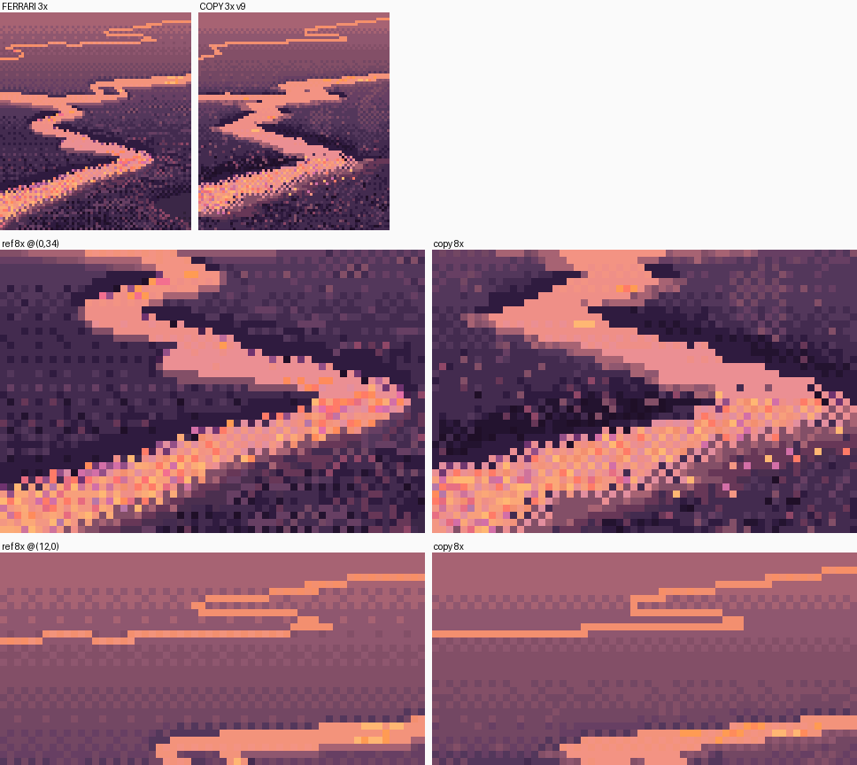
46. elements/channel/study/c0a_v9.pngBash: Tune breathing and spill; render two seeds
cd ~/work/pixelart-studies/elements/channel/src; sed -i '' 's/amp = np.interp(y, \[300, 316, 336, 364\], \[1.0, 3.0, 5.0, 7.0\])/amp = np.interp(y, [300, 316, 334, 340, 364], [1.0, 2.0, 2.5, 4.5, 6.0])/; s/spill = zone \& ~m \& (F < 3 \* KY) \& par \& (rng.random((H, W)) < 0.18)/spill = zone \& ~m \& (F < 2 * KY) \& par \& (rng.random((H, W)) < 0.12)/' c0a_v02.py; cd ..; nice -n 10 python3 src/c0a_v02.py 3 v10; nice -n 10 python3 src/c0a_v02.py 8 v10s8 >/dev/null
# output:
{'blurLab': 3.87, 'runs_copy': (1.64, 1.84), 'runs_ref': (1.55, 1.76)} water IoU 0.61
ref edge profile ([61.0, 60.0, 65.0, 69.0, 74.0, 75.0, 76.0, 72.0, 72.0, 72.0], [100.0, 78.0, 66.0, 65.0, 63.0, 64.0, 68.0, 69.0, 69.0, 68.0])
copy edge profile ([53.0, 58.0, 61.0, 67.0, 71.0, 74.0, 74.0, 78.0, 77.0, 74.0], [108.0, 89.0, 71.0, 66.0, 65.0, 64.0, 67.0, 68.0, 69.0, 68.0])Read: elements/channel/study/c0a_v10.png 47. elements/channel/study/c0a_v10.png
47. elements/channel/study/c0a_v10.png
Bash: Save stage 0 outputs and triptych
cd ~/work/pixelart-studies/elements/channel/src; cat >> pixkit.py <<'EOF'
def photo_crop(path, box, size):
"""crop box=(x,y,w,h) of a photo and area-resample to size=(w,h) native pixels."""
x, y, w, h = box
im = Image.open(path).convert('RGB').crop((x, y, x + w, y + h)).resize(size, Image.BOX)
return np.asarray(im)
def triptych(photo, pixels, ferrari, out, s=8, labels=('photo', 'mine', 'Ferrari')):
items = [(a, l) for a, l in zip((photo, pixels, ferrari), labels) if a is not None]
panel(items, s).save(out)
EOF
cd ..; cp study/c0a_v10.png out/s0_copyA_v02.png; cp study/c0b_v5.png out/s0_copyB_v11.png; python3 - <<'EOF'
import sys; sys.path.insert(0,'src')
import pixkit as pk, numpy as np, c0a_v02 as A, c0b_v11 as B
d=pk.lw_load('V02'); cv,m=A.paint(3)
mine=pk.rgb(cv,d['pal']); ref=pk.rgb(d['idx'][A.Y0:A.Y0+A.H, A.X0:A.X0+A.W], d['pal'])
ph=pk.photo_crop('~/work/pixelart-studies/transfer/refs/braided_lowangle_overcast_nz.jpg',(150,230,432,492-230),(72,44))
pk.triptych(ph, mine[34:78], ref[34:78], 'out/s0_triptych_A.png', s=8, labels=('photo (NZ overcast, area-resampled)','copy A (mine)','Ferrari V02'))
EOF
# output:
(Bash completed with no output)Read: elements/channel/out/s0_triptych_A.png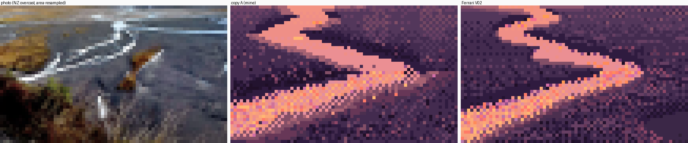
48. elements/channel/out/s0_triptych_A.pngWrite: elements/channel/LESSONS.md
# Braided-river channels, after Mark Ferrari
A student's notebook. Each stage has its images, what I learned, and an honest comparison. All images are made by programs in `src/`; every pixel is a palette index chosen by a rule. Comparisons are at native pixels, nearest-neighbour, 8× unless marked.
Photos: `~/work/pixelart-studies/transfer/refs/braided_*` and `photos/` (sources in `photos/sources.tsv`).
---
## Stage 0: copying Ferrari first
Before painting my own water I looked for the passages of his work nearest my subject, and found two better than the ones I was pointed to:
- **V02 ("Mountain Fortress Dusk")**: winding low-angle ribbons of reflected sunset through a dark marsh. This is a braided plain seen from low down, painted by him.
- **V11AM (the monoliths, morning)**: a river at low angle with a riffle, rocks, the soft edge of a dark reflection, and near-water ripple dashes. This is my stage 3.
Mirror Pond's water edge had already been copied by the master-copy student (`pedagogy/master-copy/out/cmp_c4.png`), so I used it as reading, not as a copy.
His index data is public (Canvas Cycle JSON), so I could read the **index map** directly: which colours are sky ramp, which are colour-cycled, and what sits next to what. `src/pixkit.py lw_load`.
### Copy A: V02 ribbons (`src/c0a_v02.py`, native crop (0,282) 72×82)


What I found in his index map (every item below is measured, not guessed):
1. **The water is the sky ramp, and the index climbs with nearness.** Indices 1–15 are his sky, horizon (hot pink/orange) to zenith (violet), all near one value (luma 155–174). The far threads use 2/3, the middle ribbons 4/5, then 6/7, and the near ribbon 7/8. Nearer water mirrors higher sky. Steps hold flat and cross as *sustained* 50% checkers (`4545` for several rows), not narrow seams.
2. **Shape at low angle is horizontal runs.** A far thread is exactly one row tall and steps a row at a time (runs of 5–15 px). A turn is a staircase. Thickness in rows grows toward the viewer. A ribbon going toward you is wide in x and thin in y, so I rasterise the ribbons as thick polylines in a space where y is stretched ×4.
3. **Near edge light, far edge dark.** Land directly under water (the near bank) gets a 1-row lip in his lightest marsh colour (73, luma 121). Land directly over water (the far bank) is darkest (80, luma 36), in runs of 2–7 px along the edge. On a steep diagonal the far edge dissolves into a water/dark checker whose dark pixels are *colour-cycled* (the shimmer sits on reflection edges, as the water study found), and the near edge becomes a 75/water checker, then 73, then a warm band of 51/52.
Measured as mean luma of land by rows from the water: far bank 61, 60, 65, 69, 74, 75, 76; near bank **100**, 78, 66, 65, 63, 64, 68. The far bank darkens over about 3 rows; the near bank has one bright row, one medium row, and then a slight trough.
4. **The far bank's dark band widens toward the viewer.** A bank face projects taller when nearer, so between two arms the whole wedge goes dark.
5. **The marsh is ordered dither of a slow field.** Far: flat rows of 73/74/75 with 50% checker seams (banded). Middle: 4×4 Bayer patterns (`GGGF GGGF`, period 4 or 8 in a row) of 76–78. Near: checkers that *skip* a step (79/81) plus sparse warm specks (51/48) and single light pixels beside dark ones.
6. **Hot glints** are clusters of 1–4 px of bright orange (42/43) on the far ribbons, sparse, horizontal.
7. **The near ribbon is glitter:** a checker of colour-cycled peach (128–135) against static sky steps. In a still frame it is a sparkle of several tones.
**Honest comparison.** At 3× the masses, values and the far band match. The far threads at 8× are nearly indistinguishable. The critic's round 1 caught two tells, both fixed in v10: a ruled 45° lower edge on the glitter band, and a near ribbon of constant width like a road. His banks bite into the water in stepped notches; I now add blocky noise, held flat over 2–4 px runs, to the ribbon field. His glitter also thins out through dither with specks spilling into the dark.
**Still not his:** the ribbon *shapes* come from my rough sketch, so the arm at the turn is too wide. The dissolve along the near ribbon's lower edge is a little mottled where his is crisper. At 8× a trained eye would still pick mine, mostly on shape, not on procedure.
### Copy B: V11AM river, riffle and rocks (`src/c0b_v11.py`, native crop (370,335) 120×90)

What his index map says:
1. **Still water** is again the sky ramp (7–19, lilac to blue, near-isovalue), climbing about 1 step every 7 rows toward the viewer, in clean ordered per-row patterns (`8888`, `8889`, `8989`, `9a9a`).
2. **A dark reflection's edge is a wide graded checker** (dark with colour-cycled darker blues 209–216) that spreads sideways: about 15 px horizontally on a shallow edge.
3. **The riffle is a zone where the mirror shows higher sky.** Its marks are *bluer and darker* than the lilac mirror, because facets tilted toward you reflect higher sky. It is laid out as a density field: a solid core of cycled tones, a checker margin, then sparse checker spray, cut into vertical jets. Thin pixel chains rise from the top, on the checker lattice, leaning and curling outward like a fountain. Dark horizontal trough bands lie on its downstream side. (The mark map is `study/v11_marks.png`.)
4. **Near ripples are dotted dashes:** a cycled index on every other pixel, with *consecutive* cycle indices along the dash, so that when the palette turns a light runs along the dash. On a still frame they read as dotted strokes of varied tone.
5. **Rocks** are flat dark slabs with a lighter top, a warm maroon face, and a dark checker reflection under them.
**Honest comparison.** At 3× it reads as the same kind of passage. At 8× my riffle is busier, with too many lilac pixels, and his chains are longer and fewer. My rocks lack his lit top planes. My sketch is also rougher here than in copy A. **Partly matched.** I stopped at the point where the *procedure* was captured, because the braided channel only needs the riffle grammar. The remaining gaps are named above.
### What I take forward from stage 0
- The water is the sky ramp, indexed by the reflected elevation. Nearer means higher sky.
- Low-angle shape means horizontal runs with a y-stretched thickness.
- Near edge light, far edge dark. The far dark widens with nearness.
- Moving water means marks in "higher sky" tones, placed by a density field; chains on the checker lattice; dotted dashes.
- Only reflection edges and marks shimmer; I keep the cycled indices as a reserved palette block.
Bash: Check sibling study folders
cd ~/work/pixelart-studies; ls elements/cobbles elements/willow elements/driftwood; ls transfer | head; ls braid | head # output: elements/cobbles: CRITIQUE.md __pycache__ cobble.py img refs scratch stage0_copy.py stage1.py stone.py util.py elements/driftwood: CRITIQUE.md refs scratch sheets src stages elements/willow: CRITIQUE.md __pycache__ bush.py copyharness.py foliage.py glyphstats.py lw.py refs search0.py search_c2.py stage0 stage0_copy.py stage1 stage1.py wpaint.py __pycache__ boxes.py contact.py fetch_refs.py gridview.py lib mapview.py measure measure_ratios.py measure_subjects.py notan paint refs_view sheet src studies
Write: elements/channel/src/channel.py
"""channel.py -- the braided-channel painter (grows stage by stage; see LESSONS.md).
Index canvas + named palette. Materials own index ranges; the water REUSES the sky ramp (Ferrari)
plus a few water-only tints. Everything a water pixel shows is chosen by a rule about something
else: the sky at the reflected elevation, the object standing at the reflected ray, the bed seen
through it.
"""
import numpy as np
import pixkit as pk
# ---------------------------------------------------------------- palette ---------------------
class Pal:
"""named ramps -> global indices. `grey` palettes for the value stages; colour later."""
def __init__(self, ramps):
self.ramps = {}
self.cols = []
for name, cols in ramps:
self.ramps[name] = list(range(len(self.cols), len(self.cols) + len(cols)))
self.cols += [tuple(int(v) for v in c) for c in cols]
self.arr = np.array(self.cols, dtype=np.uint8)
def r(self, name):
return np.array(self.ramps[name])
def rgb(self, idx):
return self.arr[idx]
def grey(*vals):
return [(v, v, v) for v in vals]
# ---------------------------------------------------------------- camera ----------------------
class Cam:
"""pinhole, small pitch: row = hz + f*tan(elev). Ground is y=0, eye at height h."""
def __init__(self, W, H, f, h, pitch_deg):
self.W, self.H, self.f, self.h = W, H, f, h
self.hz = H / 2 - f * np.tan(np.radians(pitch_deg))
def row_of(self, z, y=0.0):
"""screen row of a point at distance z (m) and height y (m)."""
return self.hz + self.f * (self.h - y) / z
def mirror_row(self, z, y):
"""row where the reflection of (z, y) appears (mirror camera at -h)."""
return self.hz + self.f * (self.h + y) / z
def z_of_row(self, r):
d = np.maximum(r - self.hz, 1e-3)
return self.f * self.h / d
def elev_of_row(self, r):
"""elevation angle (rad) of the view ray through row r (negative = below horizon)."""
return -np.arctan((r - self.hz) / self.f)
def x_m(self, col, z):
return (col - self.W / 2) * z / self.f
def col_of(self, x, z):
return self.W / 2 + self.f * x / z
def fresnel(graze):
"""Schlick, graze in radians above the surface."""
return 0.02 + 0.98 * (1 - np.sin(graze)) ** 5
def fresnel_art(graze):
"""the water study's artistic gain: keeps low-angle water light, as Ferrari does."""
return np.clip(0.22 + 1.15 * fresnel(graze), 0, 1)
Write: elements/channel/src/s1_still.py
"""Stage 1: a still strip of water, greyscale, seen from 1.6 m looking ~5 deg down.
It mirrors the sky above the frame and what stands on the far bank: a boulder, a willow, a stump.
Pipeline: physical value study (continuous) -> painted index canvas (Ferrari rules).
"""
import sys
import numpy as np
import pixkit as pk
import channel as ch
W, H = 192, 108
cam = ch.Cam(W, H, f=300, h=1.6, pitch_deg=5.0)
Z_FAR, Z_NEAR = 14.0, 9.0 # water edges (m)
BANK_H, BANK_RUN = 0.20, 1.2 # far bank rises 0.2 m over 1.2 m
NEAR_H, NEAR_RUN = 0.12, 1.0
# ------------------------------------------------------------- world (values 0..255) -------------
def sky_value(elev, col):
"""clear sky, lighter to the horizon, with a cumulus bank at 5-11 deg on the left."""
e = np.degrees(np.maximum(elev, 0))
v = 234 - 44 * np.clip(e / 14.0, 0, 1) ** 0.8
# cumulus: lit tops 246, grey bases 206, azimuth-limited
x = (col - W * 0.30) / (W * 0.22)
cloud = np.exp(-x ** 2) * np.exp(-((e - 8.0) / 2.6) ** 2)
base = np.exp(-x ** 2) * np.exp(-((e - 5.8) / 1.0) ** 2)
v = v + cloud * 22 - base * 18
return v
OBJECTS = [ # far-bank objects: x (m), z (m), half-width (m), height (m), kind
dict(x=-3.4, z=15.0, hw=0.75, ht=0.85, kind='boulder'),
dict(x=3.2, z=16.0, hw=1.4, ht=2.3, kind='willow'),
dict(x=0.6, z=14.9, hw=0.12, ht=0.55, kind='stump'),
]
def obj_height(o, xm):
"""silhouette height (m) at lateral position xm, or 0."""
u = (xm - o['x']) / o['hw']
if o['kind'] == 'boulder':
return np.where(np.abs(u) < 1, o['ht'] * np.clip(1 - np.abs(u) ** 2.5, 0, 1) ** 0.5, 0)
if o['kind'] == 'willow':
return np.where(np.abs(u) < 1, o['ht'] * (1 - u ** 2) ** 0.6 * (0.85 + 0.15 * np.cos(u * 9)), 0)
return np.where(np.abs(u) < 1, o['ht'], 0)
def obj_value(o, yrel, from_below=False):
"""value of object at relative height yrel (0 foot .. 1 top). Seen from below -> the underside."""
if o['kind'] == 'boulder':
v = 70 + 90 * yrel ** 1.5 # lit top, dark foot
elif o['kind'] == 'willow':
v = 55 + 40 * yrel
else:
v = 95 + 20 * yrel
return v - (18 if from_below else 0)
def ground_value(z):
"""dry gravel, lighter and greyer with distance."""
return 118 + 30 * np.clip((z - 8) / 60, 0, 1)
# ------------------------------------------------------------- the physical value study ----------
def value_study():
V = np.zeros((H, W))
what = np.zeros((H, W), 'U8')
rows = np.arange(H)[:, None] + 0.5
cols = np.arange(W)[None, :] + 0.5
elev = cam.elev_of_row(rows) + 0 * cols
# sky + distant ridge + scrub line
sky = sky_value(elev, cols)
ridge = cam.hz - cam.f * np.tan(np.radians(2.2 + 1.3 * np.sin(cols / 23.0) + 0.6 * np.sin(cols / 7.3)))
scrub_top = cam.row_of(140, 3.0) + 0.8 * np.sin(cols / 3.1)
V[:] = sky; what[:] = 'sky'
V[rows > ridge] = 150; what[rows > ridge] = 'ridge'
V[rows > scrub_top] = 80; what[rows > scrub_top] = 'scrub'
# ground (far bar), rows below the scrub foot
zg = cam.z_of_row(rows) + 0 * cols
grd = (rows > cam.row_of(140)) & (zg > Z_FAR)
V[grd] = ground_value(zg)[grd]; what[grd] = 'ground'
# far bank slope: from bank top (z=Z_FAR+RUN, y=BANK_H) down to the waterline
top_row = cam.row_of(Z_FAR + BANK_RUN, BANK_H)
wl_row = cam.row_of(Z_FAR)
slope = (rows >= top_row) & (rows < wl_row) + 0 * cols
t = (rows - top_row) / (wl_row - top_row) + 0 * cols # 0 top .. 1 waterline
V[slope] = (112 - 10 * t - 38 * np.clip((t - 0.72) / 0.28, 0, 1))[slope] # wet band at the foot
what[slope] = 'bank'
# water
nr = cam.row_of(Z_NEAR)
water = (rows >= wl_row) & (rows < nr) + 0 * cols
z = cam.z_of_row(rows) + 0 * cols
graze = np.arctan(cam.h / z)
F = ch.fresnel_art(graze)
refl = sky_value(graze, cols)
hitwhat = np.full((H, W), 'sky', 'U8')
# reflected ray height at the far bank top
ry_bank = (Z_FAR + BANK_RUN - z) * np.tan(graze)
hb = ry_bank < BANK_H
refl = np.where(hb, 70, refl); hitwhat[hb] = 'rbank'
# objects (nearest first overrides)
for o in sorted(OBJECTS, key=lambda o: -o['z']):
xm = cam.x_m(cols, o['z']) + 0 * rows
ht = obj_height(o, xm)
ry = (o['z'] - z) * np.tan(graze)
hit = (ry < ht) & (ry >= 0)
refl = np.where(hit, obj_value(o, np.clip(ry / np.maximum(ht, 1e-6), 0, 1), True), refl)
hitwhat[hit] = o['kind']
# body: depth profile across the channel, shallow at both edges
s = (z - Z_NEAR) / (Z_FAR - Z_NEAR) # 0 near edge .. 1 far edge
depth = 0.45 * np.clip(4 * s * (1 - s), 0, 1) ** 0.7
body = 92 - 40 * np.clip(depth / 0.45, 0, 1) # wet bed seen through -> darker with depth
Vw = F * refl + (1 - F) * body
V[water] = Vw[water]; what[water] = np.where(hitwhat == 'sky', 'wsky', 'wobj')[water]
# near bank lip and near gravel
ng = rows >= nr
zn = cam.z_of_row(rows) + 0 * cols
V[ng] = (ground_value(zn) - 6)[ng]; what[ng] = 'near'
# objects themselves (direct view), standing on the bar behind the waterline
for o in OBJECTS:
xm = cam.x_m(cols, o['z']) + 0 * rows
ht = obj_height(o, xm)
foot = cam.row_of(o['z'], BANK_H)
topr = cam.row_of(o['z'], BANK_H + ht)
m = (rows >= topr) & (rows < foot) & (ht > 0)
yrel = np.clip((foot - rows) / np.maximum(foot - topr, 1e-6), 0, 1)
V[m] = obj_value(o, yrel)[m]; what[m] = o['kind']
return V, what, dict(wl=wl_row, nr=nr, top=top_row, F=F, depth=depth)
if __name__ == '__main__':
V, what, info = value_study()
print({k: (round(float(v), 1) if np.ndim(v) == 0 else None) for k, v in info.items()})
g = np.clip(V, 0, 255).astype(np.uint8)
pk.save(np.stack([g] * 3, -1), 'study/s1_value_study.png', 4)
Bash: Render stage 1 physical value study
cd ~/work/pixelart-studies/elements/channel; nice -n 10 python3 src/s1_still.py
# output:
Exit code 1
Traceback (most recent call last):
File "~/work/pixelart-studies/elements/channel/src/s1_still.py", line 132, in <module>
V, what, info = value_study()
^^^^^^^^^^^^^
File "~/work/pixelart-studies/elements/channel/src/s1_still.py", line 85, in value_study
slope = (rows >= top_row) & (rows < wl_row) + 0 * cols
~~~~~~~~~~~~~~~~~~^~~~~~~~~~~~~~~~~~~~~~~~~~~~
TypeError: ufunc 'bitwise_and' not supported for the input types, and the inputs could not be safely coerced to any supported types according to the casting rule ''safe''Bash: Fix broadcasting, rerun value study
cd ~/work/pixelart-studies/elements/channel/src; python3 - <<'EOF'
s=open('s1_still.py').read()
s=s.replace("slope = (rows >= top_row) & (rows < wl_row) + 0 * cols","slope = np.broadcast_to((rows >= top_row) & (rows < wl_row), (H, W))")
s=s.replace("water = (rows >= wl_row) & (rows < nr) + 0 * cols","water = np.broadcast_to((rows >= wl_row) & (rows < nr), (H, W))")
s=s.replace("ng = rows >= nr\n","ng = np.broadcast_to(rows >= nr, (H, W))\n")
s=s.replace("V[rows > ridge] = 150; what[rows > ridge] = 'ridge'","rg = np.broadcast_to(rows > ridge, (H, W)); V[rg] = 150; what[rg] = 'ridge'")
s=s.replace("V[rows > scrub_top] = 80; what[rows > scrub_top] = 'scrub'","sc = np.broadcast_to(rows > scrub_top, (H, W)); V[sc] = 80; what[sc] = 'scrub'")
open('s1_still.py','w').write(s)
EOF
cd ..; nice -n 10 python3 src/s1_still.py
# output:
~/work/pixelart-studies/elements/channel/src/s1_still.py:44: RuntimeWarning: invalid value encountered in power
return np.where(np.abs(u) < 1, o['ht'] * (1 - u ** 2) ** 0.6 * (0.85 + 0.15 * np.cos(u * 9)), 0)
{'wl': 62.0, 'nr': 81.1, 'top': 55.4, 'F': None, 'depth': None}Read: elements/channel/study/s1_value_study.png 49. elements/channel/study/s1_value_study.png
49. elements/channel/study/s1_value_study.png
Bash: Add ramp quantizer and pebble glyph scatter
cd ~/work/pixelart-studies/elements/channel/src; cat >> channel.py <<'EOF'
# ---------------------------------------------------------------- quantizers ------------------
def to_ramp(V, ramp_vals, ramp_idx, band=0.55, matrix=pk.BAYER2, ox=0, oy=0):
"""continuous value V -> indices of a ramp (values ascending or descending), mixing only
adjacent steps, banded (holds flat, crosses as a sustained checker)."""
vals = np.asarray(ramp_vals, float)
order = np.argsort(vals)
vs = vals[order]; ix = np.asarray(ramp_idx)[order]
pos = np.interp(V, vs, np.arange(len(vs))) # fractional step
q = pk.ordered(pk.banded(pos, band), matrix, ox, oy)
return ix[np.clip(q, 0, len(vs) - 1)]
def pebbles(h, w, rng, rows_z, f, sizes_m=(0.04, 0.16), density=1.0, mask=None):
"""scatter of foreshortened pebble glyphs. Returns a 'relative step' canvas: 0 = no pebble,
+2 lit top, +1 body, -1 shadow underside, -2 contact. rows_z: z (m) per row."""
out = np.zeros((h, w), int)
items = []
for r in range(h):
z = rows_z[r]
if not np.isfinite(z) or z <= 0:
continue
ppm = f / z
# count per row ~ area / pebble footprint
n = int(density * w * 0.18 * rng.random() + density * w * 0.10)
for _ in range(n):
s = np.exp(rng.uniform(np.log(sizes_m[0]), np.log(sizes_m[1])))
rx = s * ppm / 2
if rx < 0.7:
continue
ry = max(0.5, rx * 0.45)
items.append((r, rng.uniform(0, w), rx, ry))
items.sort()
yy, xx = np.mgrid[0:h, 0:w]
for (r, cx, rx, ry) in items:
y0, y1 = int(r - ry - 1), int(r + ry + 2)
x0, x1 = int(cx - rx - 1), int(cx + rx + 2)
y0, x0 = max(y0, 0), max(x0, 0); y1, x1 = min(y1, h), min(x1, w)
if y1 <= y0 or x1 <= x0:
continue
sy, sx = yy[y0:y1, x0:x1], xx[y0:y1, x0:x1]
d = ((sx + 0.5 - cx) / rx) ** 2 + ((sy + 0.5 - r) / ry) ** 2
body = d <= 1.0
if not body.any():
continue
rel = np.where(body, 1, 0)
ys = sy[body]
top = sy <= ys.min() + (0 if ry < 1.2 else 0)
rel = np.where(body & top, 2, rel)
bot = sy >= ys.max()
rel = np.where(body & bot & (ry >= 0.9), -1, rel)
# contact shadow: the row right under the pebble
sh = (~body) & (sy == ys.max() + 1) & (np.abs(sx + 0.5 - cx) < rx * 0.9)
rel = np.where(sh, -2, rel)
blk = out[y0:y1, x0:x1]
blk[rel != 0] = rel[rel != 0]
if mask is not None:
out[~mask] = 0
return out
EOF
echo ok
# output:
okBash: Add first painter pass (sky, ridge, gravel)
cd ~/work/pixelart-studies/elements/channel/src; python3 - <<'EOF'
s=open('s1_still.py').read()
s=s.replace("""if __name__ == '__main__':
V, what, info = value_study()
print({k: (round(float(v), 1) if np.ndim(v) == 0 else None) for k, v in info.items()})
g = np.clip(V, 0, 255).astype(np.uint8)
pk.save(np.stack([g] * 3, -1), 'study/s1_value_study.png', 4)""",'''PAL = ch.Pal([
('sky', ch.grey(240, 230, 220, 210, 200, 190, 180, 170)),
('ridge', ch.grey(140, 154)),
('scrub', ch.grey(54, 70, 88)),
('grav', ch.grey(40, 56, 72, 88, 104, 120, 136, 152, 170, 190)),
('wat', ch.grey(84, 102, 120, 140, 160)),
('bould', ch.grey(46, 66, 90, 116, 144, 174)),
('wil', ch.grey(30, 42, 56, 72, 90)),
])
def paint(seed=1, V=None, what=None, info=None):
rng = np.random.default_rng(seed)
if V is None:
V, what, info = value_study()
P = PAL
cv = np.zeros((H, W), int)
yy, xx = np.mgrid[0:H, 0:W]
par = (xx + yy) % 2 == 0
sky_i, sky_v = P.r('sky'), [c[0] for c in P.arr[P.r('sky')]]
grav_i, grav_v = P.r('grav'), [c[0] for c in P.arr[P.r('grav')]]
wat_i, wat_v = P.r('wat'), [c[0] for c in P.arr[P.r('wat')]]
# 1 sky: banded ordered on the sky ramp
m = what == 'sky'
cv[m] = ch.to_ramp(V, sky_v, sky_i, 0.5)[m]
# 2 ridge, scrub
m = what == 'ridge'
cv[m] = P.r('ridge')[0]
# lit ridge crest: the top 1-2 rows of the ridge get the lighter tone
crest = m & ~np.roll(m, 1, 0)
cv[crest | (m & np.roll(crest, 1, 0) & par)] = P.r('ridge')[1]
m = what == 'scrub'
cv[m] = np.where(rng.random((H, W)) < 0.3, P.r('scrub')[1], P.r('scrub')[0])[m]
tip = m & ~np.roll(m, 1, 0)
cv[tip & par] = P.r('scrub')[2]
# 3 far bar: gravel as ordered texture of a slow field, finer with distance
zrow = cam.z_of_row(np.arange(H) + 0.5)
m = (what == 'ground')
gv = V + (pk.value_noise(H, W, 6, rng, 2, aniso=(0.4, 2.0)) - 0.5) * 22
gv += (rng.random((H, W)) - 0.5) * np.clip((40 - zrow[:, None]) / 25, 0, 1) * 30
cv[m] = ch.to_ramp(gv, grav_v, grav_i, 0.8, pk.BAYER4)[m]
# nearer bar (z < 30): pebble glyphs begin
peb = ch.pebbles(H, W, rng, np.where((zrow > Z_FAR) & (zrow < 40), zrow, np.nan), cam.f, (0.05, 0.2), 0.9)
base_step = np.interp(gv, grav_v, np.arange(len(grav_v)))
ps = np.clip(np.round(base_step + np.where(peb == 2, 2, np.where(peb == 1, 0.6, np.where(peb == -1, -1.2, -2)))), 0, 9).astype(int)
mm = m & (peb != 0)
cv[mm] = grav_i[ps][mm]
# 4 far bank slope: gravel, wet band at the foot
m = what == 'bank'
bv = V + (pk.value_noise(H, W, 3, rng, 1) - 0.5) * 18
cv[m] = ch.to_ramp(bv, grav_v, grav_i, 0.7, pk.BAYER2)[m]
return cv, V, what, info
if __name__ == '__main__':
V, what, info = value_study()
g = np.clip(V, 0, 255).astype(np.uint8)
pk.save(np.stack([g] * 3, -1), 'study/s1_value_study.png', 4)
cv, *_ = paint(1, V, what, info)
pk.save(PAL.rgb(cv), 'study/s1_paint_%s.png' % (sys.argv[1] if len(sys.argv) > 1 else 'v1'), 4)''')
open('s1_still.py','w').write(s)
EOF
cd ..; nice -n 10 python3 src/s1_still.py v1 2>&1 | grep -v Warn
# output:
return np.where(np.abs(u) < 1, o['ht'] * (1 - u ** 2) ** 0.6 * (0.85 + 0.15 * np.cos(u * 9)), 0)Read: elements/channel/study/s1_paint_v1.png 50. elements/channel/study/s1_paint_v1.png
50. elements/channel/study/s1_paint_v1.png
Bash: Crop photo water edges for close viewing
cd ~/work/pixelart-studies/elements/channel; R=~/work/pixelart-studies/transfer/refs; python3 -c "
from PIL import Image
im=Image.open('$R/braided_bars_denali.jpg'); im.crop((80,430,480,530)).resize((1200,300),Image.LANCZOS).save('study/ph_denali_edge.png')
im=Image.open('photos/commons_Wilkin_River_close_to_its_confluence_with_Makaro_3b477161.jpg'); im.crop((640,290,1040,440)).resize((1200,450),Image.LANCZOS).save('study/ph_wilkin_edge.png')
"
# output:
(Bash completed with no output)Read: elements/channel/study/ph_denali_edge.pngRead: elements/channel/study/ph_wilkin_edge.png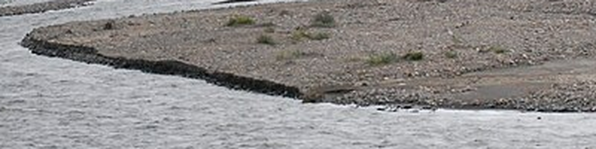
51. elements/channel/study/ph_denali_edge.png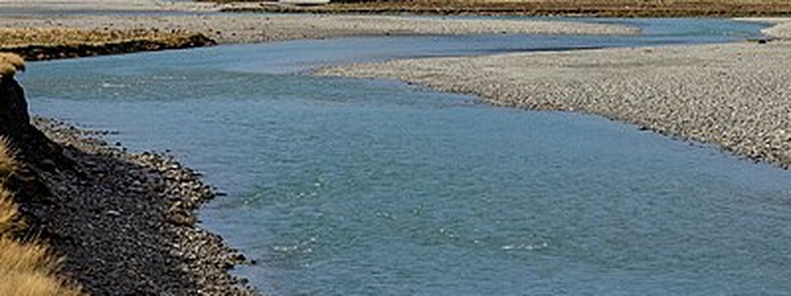
52. elements/channel/study/ph_wilkin_edge.pngBash: Add water, edges, near bank painter
cd ~/work/pixelart-studies/elements/channel/src; python3 - <<'EOF'
s=open('s1_still.py').read()
# return hit info from the value study
s=s.replace(""" hitwhat = np.full((H, W), 'sky', 'U8')""",""" hitwhat = np.full((H, W), 'sky', 'U8')
hity = np.zeros((H, W))""")
s=s.replace(""" refl = np.where(hit, obj_value(o, np.clip(ry / np.maximum(ht, 1e-6), 0, 1), True), refl)
hitwhat[hit] = o['kind']""",""" yr = np.clip(ry / np.maximum(ht, 1e-6), 0, 1)
refl = np.where(hit, obj_value(o, yr, True), refl)
hitwhat[hit] = o['kind']; hity[hit] = yr[hit]""")
s=s.replace("return V, what, dict(wl=wl_row, nr=nr, top=top_row, F=F, depth=depth)",
"return V, what, dict(wl=wl_row, nr=nr, top=top_row, F=F, depth=depth, hit=hitwhat, hity=hity, body=body)")
s=s.replace(""" return cv, V, what, info
if __name__""",''' # 5 the far bank's wet foot: the two rows above the waterline step down, the last is darkest
wl = int(np.floor(info['wl'])); nr = int(np.floor(info['nr']))
colsb = ~np.isin(what[wl - 1], ['boulder', 'willow', 'stump'])
cv[wl - 1, colsb] = grav_i[1]
cv[wl - 2, colsb] = np.where(par[wl - 2, colsb], grav_i[2], grav_i[3])
# 6 water
water = np.isin(what, ['wsky', 'wobj'])
hit = info['hit']; hity = info['hity']
ws_v = sky_v + wat_v; ws_i = np.r_[sky_i, wat_i]
m = water & (hit == 'sky')
cv[m] = ch.to_ramp(V, ws_v, ws_i, 0.5, pk.BAYER2)[m]
# reflected objects: their own ramp, lights one step down (range compressed toward the middle)
for kind, rname in (('boulder', 'bould'), ('willow', 'wil'), ('stump', 'bould')):
m = water & (hit == kind)
if not m.any():
continue
ri = P.r(rname); rv = [c[0] for c in P.arr[ri]]
q = ch.to_ramp(V, rv, ri, 0.5, pk.BAYER2)
k = np.searchsorted(ri, q)
k = np.where(k >= len(ri) - 2, k - 1, k) # tone law: the lights drop a step
k = np.where(k == 0, 1, k) # the darkest comes up one
cv[m] = ri[k][m]
# soften reflection edges: a 50% checker where the hit changes (one pixel either side)
edge = np.zeros((H, W), bool)
hh = np.where(water, hit, '')
edge[:, 1:] |= (hh[:, 1:] != hh[:, :-1]); edge[:, :-1] |= (hh[:, 1:] != hh[:, :-1])
edge[1:, :] |= (hh[1:] != hh[:-1])
edge &= water
src = np.where(np.roll(hh, 1, 1) != hh, np.roll(cv, 1, 1), np.roll(cv, -1, 1))
src = np.where(np.roll(hh, 1, 0) != hh, np.roll(cv, 1, 0), src)
sel = edge & par
cv[sel] = src[sel]
# far waterline: broken light line (meniscus catching the sky), then the reflected wet foot
for x in range(W):
if what[wl, x] != 'wsky' and what[wl, x] != 'wobj':
continue
rl = wl
x = 0
while x < W:
L = int(rng.integers(2, 8))
if rng.random() < 0.6 and hit[rl, x] == 'sky':
cv[rl, x:x + L] = sky_i[1]
else:
cv[rl, x:x + L] = np.where(hit[rl, x:x + L] == 'sky', wat_i[0], cv[rl, x:x + L])
x += L + int(rng.integers(0, 3))
refl_foot = (hit[rl + 1] == 'sky') & (rng.random(W) < 0.7)
cv[rl + 1, refl_foot] = wat_i[1]
# sheen: directly under the reflected foot the water mirrors the lowest sky -- the brightest band
for r in (rl + 2, rl + 3):
mm = hit[r] == 'sky'
cv[r, mm] = sky_i[1] if r == rl + 2 else np.where(par[r, mm], sky_i[1], sky_i[2])
# near shallows: the last rows before the near edge show the bed: water-only tints + stones
for k, r in enumerate(range(nr - 3, nr)):
mm = water[r] & (hit[r] == 'sky')
if k == 0:
cv[r, mm] = np.where(par[r, mm], cv[r, mm], wat_i[3])
else:
cv[r, mm] = wat_i[2] if k == 1 else wat_i[1]
for i in range(int(W / 7)):
sx = int(rng.integers(0, W - 4)); sr = nr - 1 - int(rng.integers(0, 2))
L = int(rng.integers(2, 5))
if hit[sr, sx] != 'sky':
continue
cv[sr, sx:sx + L] = wat_i[0]
cv[sr - 1, sx + 1:sx + L - 1 + 1] = wat_i[3] # sky-lit top of a submerged stone
# dashes: sparse dotted horizontal lines, light on dark reflections, a step darker on light ones
for r in range(rl + 4, nr - 3):
if rng.random() > 0.35:
continue
x = int(rng.integers(0, W))
L = int(rng.integers(3, 9))
for s_ in range(L):
xi = x + 2 * s_
xi += (xi + r) % 2
if xi >= W or not water[r, xi]:
continue
if hit[r, xi] == 'sky':
cv[r, xi] = ws_i[min(np.searchsorted(ws_i, cv[r, xi]) + 1, len(ws_i) - 1)] if cv[r, xi] in ws_i else cv[r, xi]
else:
cv[r, xi] = sky_i[4]
# 7 near bank: lapping light line at the waterline, wet dark band, then gravel with pebbles
ll = rng.random(W) < 0.65
cv[nr, ll] = sky_i[2]
cv[nr, ~ll] = grav_i[1]
cv[nr + 1] = np.where(par[nr + 1], grav_i[1], grav_i[2])
m = (what == 'near') & (yy > nr + 1)
nv = V + (pk.value_noise(H, W, 5, rng, 2) - 0.5) * 20
cv[m] = ch.to_ramp(nv, grav_v, grav_i, 0.7, pk.BAYER4)[m]
pebn = ch.pebbles(H, W, rng, np.where(np.arange(H) > nr + 1, zrow, np.nan), cam.f, (0.03, 0.18), 1.3)
bs = np.interp(nv, grav_v, np.arange(len(grav_v)))
ps = np.clip(np.round(bs + np.where(pebn == 2, 2.4, np.where(pebn == 1, 1.0, np.where(pebn == -1, -1.5, -2.5)))), 0, 9).astype(int)
mm = m & (pebn != 0)
cv[mm] = grav_i[ps][mm]
# 8 the objects themselves
m = what == 'boulder'
bi = P.r('bould'); bv_ = [c[0] for c in P.arr[bi]]
cv[m] = ch.to_ramp(V + (pk.value_noise(H, W, 2, rng, 1) - 0.5) * 20, bv_, bi, 0.6, pk.BAYER2)[m]
m = what == 'willow'
wi = P.r('wil'); wv_ = [c[0] for c in P.arr[wi]]
cv[m] = ch.to_ramp(V + (pk.value_noise(H, W, 2.5, rng, 2) - 0.5) * 40, wv_, wi, 0.4, pk.BAYER2)[m]
m = what == 'stump'
cv[m] = bi[3]
cv[m & (xx == xx[m].min() if m.any() else False)] = bi[1] if m.any() else 0
return cv, V, what, info
if __name__''')
open('s1_still.py','w').write(s)
EOF
cd ..; nice -n 10 python3 src/s1_still.py v2 2>&1 | grep -v -i warn | grep -v "return np"
# output:
(Bash completed with no output)Read: elements/channel/study/s1_paint_v2.png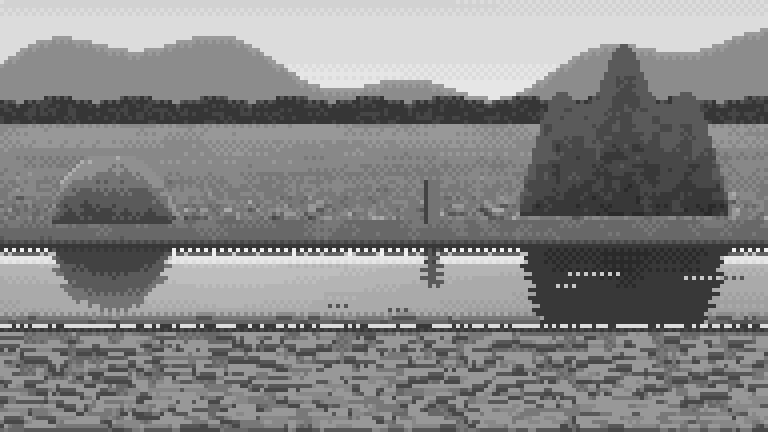
53. elements/channel/study/s1_paint_v2.pngBash: Peek at sibling cobbles study
cd ~/work/pixelart-studies/elements/cobbles; ls img | head -30; head -40 CRITIQUE.md; grep -n "^def " cobble.py stone.py | head -30
# output:
_cst.png
_f_big.png
_f_ranks.png
_f_small.png
_p1.png
_small.png
_t1.png
_tA.png
_zoom.png
_zoomL.png
stage0_boulder_zoom.png
stage0_copy.png
stage1_compare.png
stage1_lights_sizes.png
stage2_materials.png
# Critique (newest first)
## Round 2 — 2026-09-25 21:34 — stage 0 `img/stage0_copy.png`, `img/stage0_boulder_zoom.png`; stage 1 `img/stage1_lights_sizes.png`, `img/stage1_compare.png`
**Stage 0: REVISE, and close.** The main boulder is now the best thing in the crop. **Stage 1: REVISE.** (My read; your call.)
### Stage 0
Real progress: in `stage0_boulder_zoom.png` the dome's dither now thins toward the lit upper right and thickens into the core toward the lower left. That's the density-carries-the-turn move, and at 10× the dome's interior is now hard to tell from his.
What still gives it away:
1. **The rim is still concentric bands.** In the copy at 10×, lower left, there are two dark-red bands 2 px wide that follow the contour exactly, with a hard boundary where the dome's checker stops. In his, the checker spills *into* the rim zone, and the rim steps from mid to red-brown to near-black in staggered chunks of different lengths, so there's no line where the dome ends and the rim begins. This is the last tell on the boulder itself.
2. **Tablecloth checkers on the top stones.** The top-right stone in `stage0_copy.png` (x≈990–1150, y≈30–200) is big blocks of perfect checker in two colours. His top stones are small chunky faceted chips with flat planes and short dark crack ticks. Checker in his crop lives on curved lit faces; flat stones get flat planes.
3. **The lower-right shadow zone** (10×, x≈700–846, y≈250–405) is a fine uniform checker over the whole area. His is mostly flat dark with checker confined to a few rows near the lit neighbours.
4. **The right-edge stone** (`stage0_copy.png`, x≈1060–1150, y≈270–370) is a smeary orange blob with a curved dark stain. His is a lit stone with crisp planes.
### Stage 1
The staging is good: a flat ground, a cast shadow on a single tone, a 1 px contact line, and a size ladder. The small sizes from 6 px down read as pebbles.
What's wrong:
- **Outline: every stone is a perfect ellipse.** Look at your own photos in `stage1_compare.png`. The Kuban stone has a flattened top plane, one fatter end, and a nearly straight underside; the Hope stone is a rounded triangle. Ferrari's boulder has a faceted contour: short straight runs meeting at soft corners. A perfect ellipse is the iconic "egg" and the first thing a painter's eye rejects.
- **The terminator is a clean S-curve** ("sun behind-left", "sun low left"). It reads as a moon phase. His terminator (V19) is broken by planes, with a step where one facet turns away.
- **The lit face is a perforated grid.** At 40 px the light side is evenly spaced single dots of the lighter tone on a regular lattice, like pegboard. In his boulder the checker is dense in the core and sparse to absent on the brightest plane. Your stage 0 learned this; carry it over.
- **The 10Bash: New pebble glyphs, reframe, bank occlusion
cd ~/work/pixelart-studies/elements/channel/src; python3 - <<'EOF'
s=open('channel.py').read()
a=s.index("def pebbles(");
s=s[:a]+'''def pebbles(h, w, rng, rows_z, f, sizes_m=(0.04, 0.16), density=1.0, mask=None):
"""scatter of foreshortened stones, as step OFFSETS on a canvas (0 = none).
small (under ~2 px): a 1-2 px fleck of the stone's own albedo (+1 or -1);
larger: flat-bottomed lozenge, lit top row +2, body = albedo, underside -1, contact run -2."""
out = np.zeros((h, w), int)
items = []
for r in range(h):
z = rows_z[r]
if not np.isfinite(z) or z <= 0:
continue
ppm = f / z
n = int(density * w * (0.06 + 0.10 * rng.random()))
for _ in range(n):
s = np.exp(rng.uniform(np.log(sizes_m[0]), np.log(sizes_m[1])))
rx = s * ppm / 2
if rx < 0.5:
continue
items.append((r, rng.uniform(0, w), rx, max(0.5, rx * 0.42), int(rng.choice([-1, 0, 0, 1]))))
items.sort()
for (r, cx, rx, ry, alb) in items:
if rx < 1.0: # fleck
x0 = int(cx); L = 1 + (rng.random() < rx)
out[r, x0:min(w, x0 + L)] = 1 if alb >= 0 else -1
continue
yy, xx = np.mgrid[int(r - ry - 1):int(r + ry + 2), int(cx - rx - 1):int(cx + rx + 2)]
ok = (yy >= 0) & (yy < h) & (xx >= 0) & (xx < w)
# flat-bottomed: rows above the centre are an ellipse, the bottom row is straight
d = np.abs((xx + 0.5 - cx) / rx) ** 2.2 + np.maximum((yy + 0.5 - r) / ry, -9) ** 2
body = (d <= 1.0) & ok
if not body.any():
continue
ys = yy[body]
rel = np.where(body, np.clip(alb, -1, 1) + (1 if alb >= 0 else 0), 0) # body tone
rel = np.where(body & (yy == ys.min()), 2, rel) # lit top row
if ys.max() > ys.min():
rel = np.where(body & (yy == ys.max()), -1, rel) # shaded underside
sh = ok & (~body) & (yy == ys.max() + 1) & (np.abs(xx + 0.5 - cx) < rx * 0.8)
rel = np.where(sh, -2, rel)
sel = rel != 0
out[yy[sel], xx[sel]] = rel[sel]
if mask is not None:
out[~mask] = 0
return out
'''
open('channel.py','w').write(s)
EOF
python3 - <<'EOF'
s=open('~/work/pixelart-studies/elements/channel/src/s1_still.py').read()
s=s.replace("cam = ch.Cam(W, H, f=300, h=1.6, pitch_deg=5.0)\nZ_FAR, Z_NEAR = 14.0, 9.0","cam = ch.Cam(W, H, f=300, h=1.6, pitch_deg=7.0)\nZ_FAR, Z_NEAR = 11.0, 7.0")
s=s.replace("BANK_H, BANK_RUN = 0.20, 1.2","BANK_H, BANK_RUN = 0.20, 0.6")
s=s.replace(""" dict(x=-3.4, z=15.0, hw=0.75, ht=0.85, kind='boulder'),
dict(x=3.2, z=16.0, hw=1.4, ht=2.3, kind='willow'),
dict(x=0.6, z=14.9, hw=0.12, ht=0.55, kind='stump'),""",""" dict(x=-2.3, z=12.4, hw=0.6, ht=0.7, kind='boulder'),
dict(x=2.6, z=13.5, hw=1.2, ht=1.9, kind='willow'),""")
s=s.replace(" hit = (ry < ht) & (ry >= 0)\n"," hit = (ry < ht) & (ry >= 0) & ~hb # the bank edge occludes what stands behind it\n")
open('~/work/pixelart-studies/elements/channel/src/s1_still.py','w').write(s)
EOF
cd ..; nice -n 10 python3 src/s1_still.py v3 2>&1 | grep -v -i warn | grep -v "return np"
# output:
(Bash completed with no output)Read: elements/channel/study/s1_paint_v3.png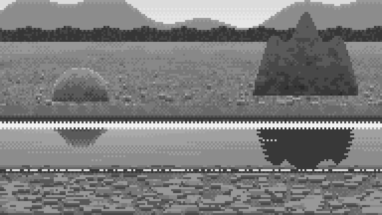
54. elements/channel/study/s1_paint_v3.pngBash: 8x crop of stage 1 v3 water
cd ~/work/pixelart-studies/elements/channel; python3 -c "
from PIL import Image
im=Image.open('study/s1_paint_v3.png'); im=im.resize((im.width//4,im.height//4),Image.NEAREST)
im.crop((0,48,96,96)).resize((768,384),Image.NEAREST).save('(manager scratchpad)/s1v3_8x.png')"
# output:
(Bash completed with no output)Read: (manager scratchpad)/s1v3_8x.png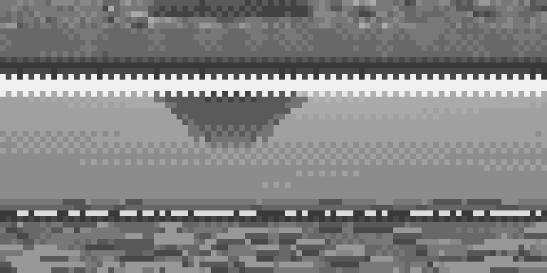
55. (manager scratchpad)/s1v3_8x.pngBash: Locate water section lines
cd ~/work/pixelart-studies/elements/channel/src; grep -n "# 5 the far bank" s1_still.py; grep -n "# 7 near bank" s1_still.py # output: 183: # 5 the far bank's wet foot: the two rows above the waterline step down, the last is darkest 263: # 7 near bank: lapping light line at the waterline, wet dark band, then gravel with pebbles
Bash: Rewrite water painter by row class; render v4
cd ~/work/pixelart-studies/elements/channel/src; python3 - <<'EOF'
p='s1_still.py'; L=open(p).read().split('\n')
a=183-1; b=263-1
new=''' # 5 the far bank's wet foot: the rows just above the waterline darken (wet), the last darkest
wl = int(np.floor(info['wl'])); nr = int(np.floor(info['nr']))
notobj = ~np.isin(what, ['boulder', 'willow'])
bankrows = what == 'bank'
tb = np.zeros((H, W));
for r in range(H):
if bankrows[r].any():
tb[r] = (r - info['top']) / (info['wl'] - info['top'])
foot = bankrows & (tb > 0.62)
cv[foot] = np.where(par, grav_i[2], grav_i[3])[foot]
cv[wl - 1, notobj[wl - 1]] = grav_i[1]
# 6 water -- painted row-class by row-class, top to bottom (Ferrari's horizontal logic)
water = np.isin(what, ['wsky', 'wobj'])
hit = info['hit']; hity = info['hity']
ws_v = sky_v + wat_v; ws_i = np.r_[sky_i, wat_i]
# A reflected bank face: mirrored bank texture, smeared sideways, compressed a step
rb = water & (hit == 'rbank')
rbank_rows = sorted(set(np.nonzero(rb)[0]))
for k, r in enumerate(rbank_rows):
src_r = wl - 1 - k # mirror about the waterline
rowv = cv[src_r].copy()
# smear: hold each value over 2-4 px runs (reflections streak horizontally)
x = 0
while x < W:
Lr = int(rng.integers(2, 5)); rowv[x:x + Lr] = rowv[x]; x += Lr
st = np.searchsorted(grav_i, rowv)
st = np.clip(st - (1 if k == 0 else 0) + (1 if k >= 2 else 0), 0, len(grav_i) - 1)
cv[r, rb[r]] = grav_i[st][rb[r]]
# C sheen + D sky reflection: the physical value, lifted just under the reflected bank
m = water & (hit == 'sky')
Vs = V.copy()
below_rb = np.zeros((H, W))
if rbank_rows:
last = max(rbank_rows)
for r in range(last + 1, nr):
below_rb[r] = r - last
Vs = Vs + np.where((below_rb >= 1) & (below_rb <= 3), 26 - 6 * below_rb, 0)
cv[m] = ch.to_ramp(Vs, ws_v, ws_i, 0.5, pk.BAYER2)[m]
# the boundary between reflected bank and sheen: one checker row
if rbank_rows:
r = max(rbank_rows) + 1
sel = water[r] & (hit[r] == 'sky') & par[r]
cv[r, sel] = cv[r - 1, sel]
# reflected objects: their own ramp, lights one step down (range compressed toward the middle)
for kind, rname in (('boulder', 'bould'), ('willow', 'wil')):
m = water & (hit == kind)
if not m.any():
continue
ri = P.r(rname); rv = [c[0] for c in P.arr[ri]]
q = ch.to_ramp(V, rv, ri, 0.5, pk.BAYER2)
k = np.searchsorted(ri, q)
k = np.where(k >= len(ri) - 2, k - 1, k)
k = np.where(k == 0, 1, k)
cv[m] = ri[k][m]
# soften reflection silhouettes: a 50% checker one pixel either side of a hit change
hh = np.where(water, hit, '')
chg_h = np.zeros((H, W), bool); chg_h[:, 1:] = hh[:, 1:] != hh[:, :-1]
chg_v = np.zeros((H, W), bool); chg_v[1:] = hh[1:] != hh[:-1]
objpx = water & np.isin(hit, ['boulder', 'willow'])
for dx in (-1, 1):
nb = np.roll(cv, dx, 1); nbh = np.roll(hh, dx, 1)
sel = water & (nbh != hh) & par & np.isin(nbh, ['boulder', 'willow']) & (hh == 'sky')
cv[sel] = nb[sel]
nb = np.roll(cv, 1, 0); nbh = np.roll(hh, 1, 0)
sel = water & (nbh != hh) & par & np.isin(nbh, ['boulder', 'willow']) & (hh == 'sky')
cv[sel] = nb[sel]
# B the far waterline: a broken light line where the meniscus catches the sky
x = int(rng.integers(0, 4))
while x < W:
Lr = int(rng.integers(2, 9))
if rng.random() < 0.55:
seg = slice(x, min(W, x + Lr))
okc = np.isin(hit[wl, seg], ['rbank', 'sky'])
cv[wl, seg] = np.where(okc, sky_i[2], cv[wl, seg])
x += Lr + int(rng.integers(1, 6))
# E near shallows: flat shelf bands of water-only tints, ragged ends, submerged stones
for k in range(3):
r = nr - 1 - k
x = 0
while x < W:
Lr = int(rng.integers(4, 22))
depth_ok = rng.random() < (0.9, 0.7, 0.35)[k]
seg = slice(x, min(W, x + Lr))
sky_here = hit[r, seg] == 'sky'
if depth_ok:
cv[r, seg] = np.where(sky_here, wat_i[1 + k], cv[r, seg])
x += Lr
for i in range(int(W / 9)):
sx = int(rng.integers(0, W - 5)); sr = nr - 1 - int(rng.integers(0, 2))
Ls = int(rng.integers(2, 6))
if not (hit[sr, sx:sx + Ls] == 'sky').all():
continue
cv[sr, sx:sx + Ls] = wat_i[0]
cv[sr - 1, sx + 1:sx + Ls - 1] = wat_i[3]
# dash rows: dotted horizontal lines (every other pixel), a step lighter on the reflections of
# dark things, a step darker on the bright sky -- never scattered, always a line
for r in range(wl + len(rbank_rows) + 3, nr - 3):
if rng.random() > 0.3:
continue
x = int(rng.integers(0, W))
Ld = int(rng.integers(3, 10))
for s_ in range(Ld):
xi = x + 2 * s_
xi += (xi + r) % 2
if xi >= W or not water[r, xi]:
continue
if hit[r, xi] == 'sky':
j = np.searchsorted(ws_i, cv[r, xi])
vals = np.array(ws_v)[np.argsort(ws_v)]
cv[r, xi] = ws_i[np.argsort(ws_v)][max(0, list(np.array(ws_i)[np.argsort(ws_v)]).index(cv[r, xi]) - 1)] if cv[r, xi] in ws_i else cv[r, xi]
else:
cv[r, xi] = sky_i[5]'''
L=L[:a]+new.split('\n')+L[b:]
open(p,'w').write('\n'.join(L))
EOF
cd ..; nice -n 10 python3 src/s1_still.py v4 2>&1 | grep -v -i warn | grep -v "return np"; python3 -c "
from PIL import Image
im=Image.open('study/s1_paint_v4.png'); im=im.resize((im.width//4,im.height//4),Image.NEAREST)
im.crop((0,44,96,92)).resize((768,384),Image.NEAREST).save('(manager scratchpad)/s1v4_8x.png')
im.crop((96,44,192,92)).resize((768,384),Image.NEAREST).save('(manager scratchpad)/s1v4_8xR.png')"
# output:
(Bash completed with no output)Read: (manager scratchpad)/s1v4_8x.png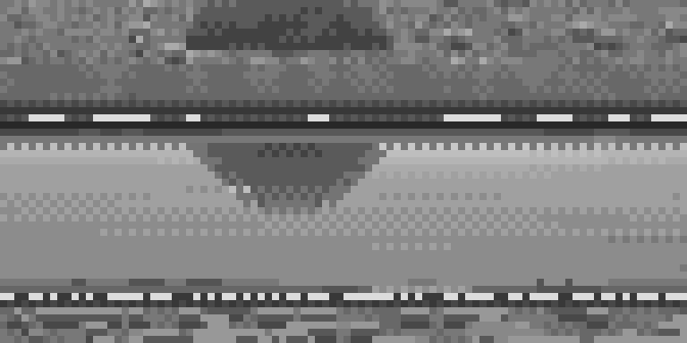
56. (manager scratchpad)/s1v4_8x.pngRead: (manager scratchpad)/s1v4_8xR.png 57. (manager scratchpad)/s1v4_8xR.png
57. (manager scratchpad)/s1v4_8xR.png
Bash: Extract Mirror Pond water crops
cd ~/work/pixelart-studies/elements/channel; python3 - <<'EOF'
import sys; sys.path.insert(0,'src'); import pixkit as pk, numpy as np
d=pk.lw_load('V16PM'); idx=d['idx']; pal=d['pal']
# master-copy: ref aligns with V16PM at offset (3,4); C4 crop native (250,330,200,139) of the ref -> V16PM coords +? use directly
im=pk.rgb(idx,pal)
pk.save(im[330:469, 250:450], 'study/v16pm_c4.png', 3)
pk.save(im[380:440, 250:340], 'study/v16pm_c4_8x.png', 8)
EOF
# output:
(Bash completed with no output)Read: elements/channel/study/v16pm_c4.png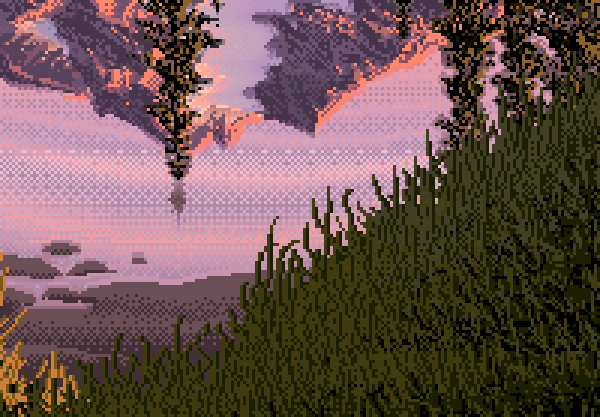
58. elements/channel/study/v16pm_c4.pngBash: Show object painting section
cd ~/work/pixelart-studies/elements/channel/src; grep -n "# 8 the objects themselves" -A 20 s1_still.py | head -30; grep -n "def obj_value" -B2 -A12 s1_still.py | head -5
# output:
308: # 8 the objects themselves
309- m = what == 'boulder'
310- bi = P.r('bould'); bv_ = [c[0] for c in P.arr[bi]]
311- cv[m] = ch.to_ramp(V + (pk.value_noise(H, W, 2, rng, 1) - 0.5) * 20, bv_, bi, 0.6, pk.BAYER2)[m]
312- m = what == 'willow'
313- wi = P.r('wil'); wv_ = [c[0] for c in P.arr[wi]]
314- cv[m] = ch.to_ramp(V + (pk.value_noise(H, W, 2.5, rng, 2) - 0.5) * 40, wv_, wi, 0.4, pk.BAYER2)[m]
315- m = what == 'stump'
316- cv[m] = bi[3]
317- cv[m & (xx == xx[m].min() if m.any() else False)] = bi[1] if m.any() else 0
318- return cv, V, what, info
319-
320-
321-if __name__ == '__main__':
322- V, what, info = value_study()
323- g = np.clip(V, 0, 255).astype(np.uint8)
324- pk.save(np.stack([g] * 3, -1), 'study/s1_value_study.png', 4)
325- cv, *_ = paint(1, V, what, info)
326- pk.save(PAL.rgb(cv), 'study/s1_paint_%s.png' % (sys.argv[1] if len(sys.argv) > 1 else 'v1'), 4)
45-
46-
47:def obj_value(o, yrel, from_below=False):
48- """value of object at relative height yrel (0 foot .. 1 top). Seen from below -> the underside."""
49- if o['kind'] == 'boulder':Bash: Add boulder, shrub painters and tone law
cd ~/work/pixelart-studies/elements/channel/src; cat >> channel.py <<'EOF'
# ---------------------------------------------------------------- bank objects ----------------
def paint_boulder(cv, m, ramp, rng, light=(-0.6, -0.8)):
"""two value families on the ramp (ordered dither inside each), hard terminator, dark contact row,
lit rim on the sun side. ramp: indices dark->light (>=6)."""
from scipy.ndimage import distance_transform_edt as edt
if not m.any():
return
ys, xs = np.nonzero(m)
cy, cx = ys.mean(), xs.mean()
ry, rx = (ys.max() - ys.min() + 1) / 2, (xs.max() - xs.min() + 1) / 2
yy, xx = np.mgrid[0:m.shape[0], 0:m.shape[1]]
nx = (xx - cx) / rx
ny = (yy - (ys.max() - 0.2 * ry * 2)) / (ry * 2) # dome: the normal tips up toward the top
nz = np.sqrt(np.clip(1 - nx ** 2 - np.clip(ny, -1, 0) ** 2, 0.05, 1))
lx, ly = light
u = -(nx * lx + ny * ly) * 0.8 + nz * 0.35
ins = edt(m)
lit = u > 0.35
# lit family steps 3.4..5 ; shadow family 1..2.2 ; gradation by ordered dither
s = np.where(lit, 3.4 + (u - 0.35) * 3.0, 1.0 + np.clip(u + 0.3, 0, 0.65) * 1.9)
s = s + (pk.value_noise(*m.shape, 2, rng, 1) - 0.5) * 0.5
q = np.clip(pk.ordered(s), 0, len(ramp) - 1)
q = np.where(lit, np.clip(q, 3, len(ramp) - 1), np.clip(q, 0, 2))
q = np.where(ins <= 1.0, np.where(lit, np.minimum(q + 1, len(ramp) - 1), np.maximum(q - 1, 0)), q)
bottom = m & ~np.roll(m, -1, 0)
q = np.where(bottom, 0, q)
cv[m] = np.asarray(ramp)[q][m]
def paint_shrub(cv, m, ramp, rng, clump=(1.6, 3.2), light=(-0.6, -0.8)):
"""foliage mass as clumps: each a small blob lit upper-left, dark lower-right; holes; darker base."""
if not m.any():
return
h, w = m.shape
ys, xs = np.nonzero(m)
y0, y1 = ys.min(), ys.max()
out = np.full((h, w), -1)
n = int(m.sum() / 5)
cand = rng.integers(0, len(ys), n)
order = np.argsort(ys[cand]) # higher clumps first; lower ones overlap them
for i in cand[order]:
cy, cx = ys[i], xs[i]
r = rng.uniform(*clump)
yy, xx = np.mgrid[int(cy - r - 1):int(cy + r + 2), int(cx - r - 1):int(cx + r + 2)]
ok = (yy >= 0) & (yy < h) & (xx >= 0) & (xx < w)
d = ((yy + 0.5 - cy) ** 2 + (xx + 0.5 - cx) ** 2) / r ** 2
b = ok & (d <= 1)
if not b.any():
continue
lx, ly = light
u = -(((xx + 0.5 - cx) / r) * lx + ((yy + 0.5 - cy) / r) * ly)
depth = (cy - y0) / max(y1 - y0, 1) # 0 top .. 1 base
st = 2.0 + u * 1.4 - depth * 1.2 + rng.normal(0, 0.3)
out[yy[b], xx[b]] = np.clip(np.round(st[b]), 0, len(ramp) - 1).astype(int)
out = np.where(m & (out < 0), 0, out)
holes = m & (rng.random((h, w)) < 0.05)
out[holes] = 0
sel = out >= 0
cv[sel] = np.asarray(ramp)[out[sel]]
return sel
def tone_down(idx, ramp, lights=1, dark_up=True):
"""Ferrari's reflection law on one ramp: the top half drops `lights` steps, the darkest comes up."""
ramp = list(ramp)
k = np.array([ramp.index(i) if i in ramp else -1 for i in idx.ravel()]).reshape(idx.shape)
n = len(ramp)
k2 = np.where(k >= n // 2, k - lights, k)
if dark_up:
k2 = np.where(k == 0, 1, k2)
return np.where(k >= 0, np.asarray(ramp)[np.clip(k2, 0, n - 1)], idx)
EOF
echo done
# output:
doneBash: Objects before water; reflections copy direct pixels
cd ~/work/pixelart-studies/elements/channel/src; python3 - <<'EOF'
p='s1_still.py'; s=open(p).read()
s=s.replace("hitwhat[hit] = o['kind']; hity[hit] = yr[hit]","hitwhat[hit] = o['kind']; hity[hit] = ry[hit]; hitz[hit] = o['z']")
s=s.replace(" hity = np.zeros((H, W))\n"," hity = np.zeros((H, W)); hitz = np.zeros((H, W))\n",1)
s=s.replace("hit=hitwhat, hity=hity, body=body)","hit=hitwhat, hity=hity, hitz=hitz, body=body)")
# move object painting before water: remove old block and insert before "# 5 the far bank"
a=s.index(" # 8 the objects themselves"); b=s.index(" return cv, V, what, info\n")
s=s[:a]+s[b:]
s=s.replace(" # 5 the far bank's wet foot",""" # 4b the objects themselves (painted before the water, which copies them)
ch.paint_boulder(cv, what == 'boulder', P.r('bould'), rng)
ch.paint_shrub(cv, what == 'willow', P.r('wil'), rng)
# 5 the far bank's wet foot""")
a=s.index(" # reflected objects: their own ramp"); b=s.index(" # soften reflection silhouettes")
s=s[:a]+''' # reflected objects: COPY the direct painting at the hit point, then the tone law
for kind, rname in (('boulder', 'bould'), ('willow', 'wil')):
m = water & (hit == kind)
if not m.any():
continue
rr, cc = np.nonzero(m)
src_r = np.round(cam.row_of(info['hitz'][rr, cc], BANK_H + info['hity'][rr, cc]) - 0.5).astype(int)
src_r = np.clip(src_r, 0, H - 1)
vals = cv[src_r, cc]
cv[rr, cc] = ch.tone_down(vals, P.r(rname))
'''+s[b:]
open(p,'w').write(s)
EOF
cd ..; nice -n 10 python3 src/s1_still.py v5 2>&1 | grep -v -i warn | grep -v "return np"; python3 -c "
from PIL import Image
im=Image.open('study/s1_paint_v5.png'); im=im.resize((im.width//4,im.height//4),Image.NEAREST)
im.crop((0,30,96,92)).resize((768,496),Image.NEAREST).save('(manager scratchpad)/s1v5_8x.png')
im.crop((96,10,192,92)).resize((768,656),Image.NEAREST).save('(manager scratchpad)/s1v5_8xR.png')"
# output:
(Bash completed with no output)Read: (manager scratchpad)/s1v5_8xR.png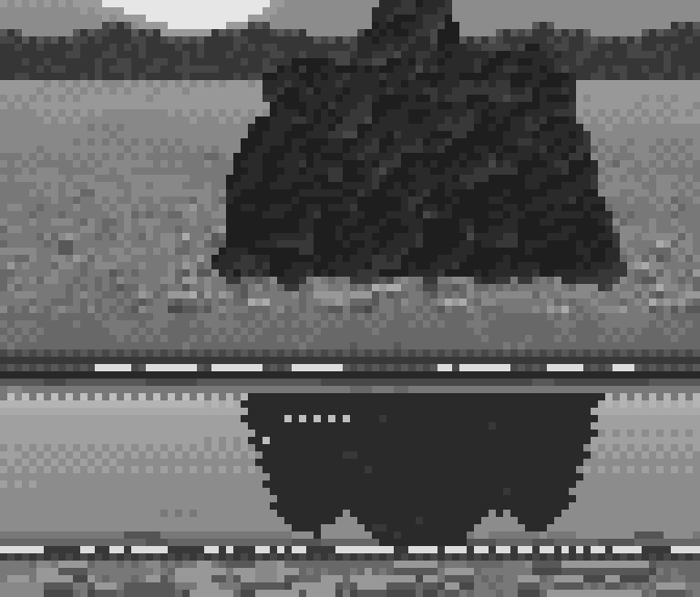
59. (manager scratchpad)/s1v5_8xR.pngRead: (manager scratchpad)/s1v5_8x.png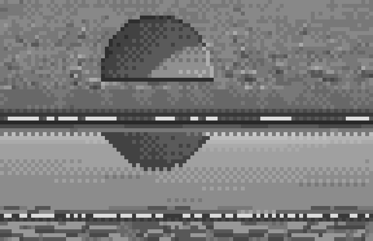
60. (manager scratchpad)/s1v5_8x.pngBash: Fix light sign, add streaks, sparse glints
cd ~/work/pixelart-studies/elements/channel/src; python3 - <<'EOF'
p='channel.py'; s=open(p).read()
s=s.replace(" u = -(nx * lx + ny * ly) * 0.8 + nz * 0.35"," u = (nx * lx + ny * ly) * 0.8 + nz * 0.35")
s=s.replace(" u = -(((xx + 0.5 - cx) / r) * lx + ((yy + 0.5 - cy) / r) * ly)"," u = (((xx + 0.5 - cx) / r) * lx + ((yy + 0.5 - cy) / r) * ly)")
open(p,'w').write(s)
p='s1_still.py'; s=open(p).read()
s=s.replace("('wil', ch.grey(30, 42, 56, 72, 90)),","('wil', ch.grey(34, 50, 68, 88, 110)),")
# streaks in the water value
s=s.replace(""" Vs = Vs + np.where((below_rb >= 1) & (below_rb <= 3), 26 - 6 * below_rb, 0)""",""" Vs = Vs + np.where((below_rb >= 1) & (below_rb <= 3), 26 - 6 * below_rb, 0)
# wind-lines: faint ripples mirror a slightly different sky -> long 1-row streaks, lighter or darker
streak = pk.value_noise(H, W, 1, rng, 1, aniso=(1.0, 22.0)) - 0.5
Vs = Vs + streak * 16""")
# far waterline: sparse short glints instead of a Morse line
s=s.replace(""" if rng.random() < 0.55:
seg = slice(x, min(W, x + Lr))
okc = np.isin(hit[wl, seg], ['rbank', 'sky'])
cv[wl, seg] = np.where(okc, sky_i[2], cv[wl, seg])
x += Lr + int(rng.integers(1, 6))""",""" if rng.random() < 0.18:
seg = slice(x, min(W, x + Lr))
okc = np.isin(hit[wl, seg], ['rbank', 'sky'])
cv[wl, seg] = np.where(okc, sky_i[3], cv[wl, seg])
x += Lr + int(rng.integers(3, 14))""")
open(p,'w').write(s)
EOF
grep -n "# 7 near bank" -A 5 s1_still.py
# output:
300: # 7 near bank: lapping light line at the waterline, wet dark band, then gravel with pebbles
301- ll = rng.random(W) < 0.65
302- cv[nr, ll] = sky_i[2]
303- cv[nr, ~ll] = grav_i[1]
304- cv[nr + 1] = np.where(par[nr + 1], grav_i[1], grav_i[2])
305- m = (what == 'near') & (yy > nr + 1)Bash: Near lapping line as runs; render v6
cd ~/work/pixelart-studies/elements/channel/src; python3 - <<'EOF'
p='s1_still.py'; s=open(p).read()
s=s.replace(""" ll = rng.random(W) < 0.65
cv[nr, ll] = sky_i[2]
cv[nr, ~ll] = grav_i[1]
cv[nr + 1] = np.where(par[nr + 1], grav_i[1], grav_i[2])""",""" ll = np.zeros(W, bool); x = int(rng.integers(0, 3))
while x < W:
Lr = int(rng.integers(3, 13)); ll[x:x + Lr] = True; x += Lr + int(rng.integers(1, 5))
cv[nr, ll] = sky_i[3]
cv[nr, ~ll] = grav_i[1]
cv[nr + 1] = np.where(rng.random(W) < 0.75, grav_i[1], grav_i[2])""")
open(p,'w').write(s)
EOF
cd ..; nice -n 10 python3 src/s1_still.py v6 2>&1 | grep -v -i warn | grep -v "return np"; python3 -c "
from PIL import Image
im=Image.open('study/s1_paint_v6.png'); im=im.resize((im.width//4,im.height//4),Image.NEAREST)
im.crop((0,30,96,92)).resize((768,496),Image.NEAREST).save('(manager scratchpad)/s1v6_8x.png')"
# output:
(Bash completed with no output)Read: (manager scratchpad)/s1v6_8x.png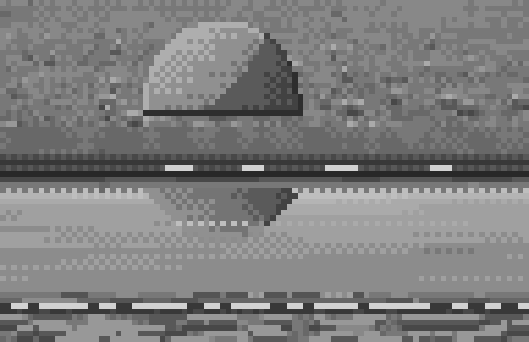
61. (manager scratchpad)/s1v6_8x.pngBash: Clouds above frame; darker reflections
cd ~/work/pixelart-studies/elements/channel/src; python3 - <<'EOF'
p='s1_still.py'; s=open(p).read()
a=s.index("def sky_value"); b=s.index("OBJECTS = [")
s=s[:a]+'''CLOUDS = [ # (azimuth col centre, half-width cols, base elev deg, top elev deg)
(40, 34, 7.6, 12.5), (128, 26, 9.0, 13.5), (178, 22, 8.2, 11.0)]
def sky_value(elev, col):
"""clear sky lighter to the horizon; cumulus above the frame: lit tops, grey flat bases."""
e = np.degrees(np.maximum(elev, 0))
v = 234 - 44 * np.clip(e / 14.0, 0, 1) ** 0.8
for (c0, hw, eb, et) in CLOUDS:
x = (col - c0) / hw
bulge = np.clip(1 - x ** 2, 0, 1) ** 0.5 # rounded top, flat base
top = eb + (et - eb) * bulge
inside = (e >= eb) & (e <= top) & (np.abs(x) < 1)
t = np.clip((e - eb) / np.maximum(top - eb, 1e-3), 0, 1)
cval = 206 + 40 * t ** 0.6 # grey base -> bright top
v = np.where(inside, cval, v)
return v
'''+s[b:]
# reflections: lights down 2, mids 1 (the mirror sees the undersides)
s=s.replace(" cv[rr, cc] = ch.tone_down(vals, P.r(rname))"," cv[rr, cc] = ch.tone_down(ch.tone_down(vals, P.r(rname)), P.r(rname), dark_up=False)")
s=s.replace(" cv[nr, ll] = sky_i[3]"," cv[nr, ll] = sky_i[4]")
s=s.replace("Lr = int(rng.integers(3, 13)); ll[x:x + Lr] = True; x += Lr + int(rng.integers(1, 5))","Lr = int(rng.integers(5, 24)); ll[x:x + Lr] = True; x += Lr + int(rng.integers(1, 4))")
open(p,'w').write(s)
EOF
cd ..; nice -n 10 python3 src/s1_still.py v7 2>&1 | grep -v -i warn | grep -v "return np"
# output:
(Bash completed with no output)Read: elements/channel/study/s1_paint_v7.png 62. elements/channel/study/s1_paint_v7.png
62. elements/channel/study/s1_paint_v7.png
Read: elements/channel/study/v16pm_c4_8x.png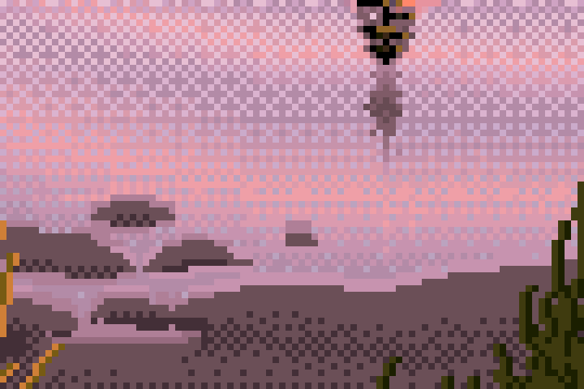
63. elements/channel/study/v16pm_c4_8x.pngBash: Checker-material water quantizer; v8
cd ~/work/pixelart-studies/elements/channel/src; cat >> channel.py <<'EOF'
def to_ramp_checker(V, ramp_vals, ramp_idx, flat=0.24, ox=0, oy=0):
"""WATER quantizer (Ferrari's mirrored sky): the checker of two adjacent tints is the material.
Holds a 50% checker across most of each step, passing through a flat tint only within
+-flat/2 of an integer step."""
vals = np.asarray(ramp_vals, float)
order = np.argsort(vals)
vs = vals[order]; ix = np.asarray(ramp_idx)[order]
pos = np.interp(V, vs, np.arange(len(vs)))
f = np.floor(pos); r = pos - f
h, w = np.shape(V)
yy, xx = np.mgrid[0:h, 0:w]
par = ((xx + ox + yy + oy) % 2) == 0
lo = f.astype(int); hi = lo + 1
near_lo = r < flat / 2
near_hi = r > 1 - flat / 2
q = np.where(near_lo, lo, np.where(near_hi, hi, np.where(par, lo, hi)))
return ix[np.clip(q, 0, len(vs) - 1)]
EOF
python3 - <<'EOF'
p='~/work/pixelart-studies/elements/channel/src/s1_still.py'; s=open(p).read()
s=s.replace(" cv[m] = ch.to_ramp(Vs, ws_v, ws_i, 0.5, pk.BAYER2)[m]"," cv[m] = ch.to_ramp_checker(Vs, ws_v, ws_i, 0.3)[m]")
open(p,'w').write(s)
EOF
cd ..; nice -n 10 python3 src/s1_still.py v8 2>&1 | grep -v -i warn | grep -v "return np"; python3 -c "
from PIL import Image
im=Image.open('study/s1_paint_v8.png'); im=im.resize((im.width//4,im.height//4),Image.NEAREST)
im.crop((0,50,90,92)).resize((720,336),Image.NEAREST).save('(manager scratchpad)/s1v8_8x.png')"
# output:
(Bash completed with no output)Read: (manager scratchpad)/s1v8_8x.png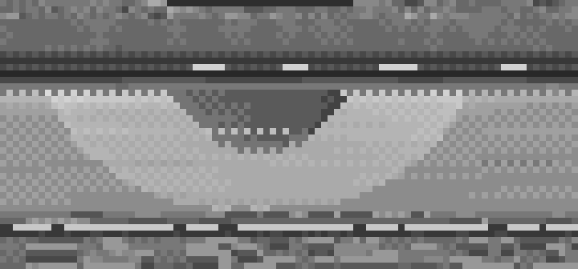
64. (manager scratchpad)/s1v8_8x.pngBash: Soft lumpy clouds, cap mirror; v9
cd ~/work/pixelart-studies/elements/channel/src; python3 - <<'EOF'
p='s1_still.py'; s=open(p).read()
a=s.index("def sky_value"); b=s.index("OBJECTS = [")
s=s[:a]+'''def sky_value(elev, col):
"""clear sky lighter to the horizon; cumulus above the frame: lumpy lit tops, grey flat bases,
soft edges (a cloud is a gradient, never a cut-out)."""
e = np.degrees(np.maximum(elev, 0))
v = 234 - 44 * np.clip(e / 14.0, 0, 1) ** 0.8
for k, (c0, hw, eb, et) in enumerate(CLOUDS):
x = (col - c0) / hw
bulge = np.clip(1 - x ** 2, 0, 1) ** 0.5 * (0.8 + 0.2 * np.cos(x * 7 + k))
top = eb + (et - eb) * bulge
# soft membership: inside the silhouette, fading over ~0.8 deg at the top and sides
a = np.clip((top - e) / 0.8, 0, 1) * np.clip((e - eb) / 0.3 + 1, 0, 1) * np.clip((1 - np.abs(x)) / 0.15, 0, 1)
t = np.clip((e - eb) / np.maximum(top - eb, 1e-3), 0, 1)
cval = 204 + 34 * t ** 0.6
v = v * (1 - a) + cval * a
return v
'''+s[b:]
s=s.replace(" cv[m] = ch.to_ramp_checker(Vs, ws_v, ws_i, 0.3)[m]"," Vs = np.minimum(Vs, sky_v[1] - 3) # the mirror never reaches the sky's top step\n cv[m] = ch.to_ramp_checker(Vs, ws_v, ws_i, 0.3)[m]")
open(p,'w').write(s)
EOF
cd ..; nice -n 10 python3 src/s1_still.py v9 2>&1 | grep -v -i warn | grep -v "return np"; python3 -c "
from PIL import Image
im=Image.open('study/s1_paint_v9.png'); im=im.resize((im.width//4,im.height//4),Image.NEAREST)
im.crop((0,50,90,92)).resize((720,336),Image.NEAREST).save('(manager scratchpad)/s1v9_8x.png')"
# output:
(Bash completed with no output)Read: (manager scratchpad)/s1v9_8x.png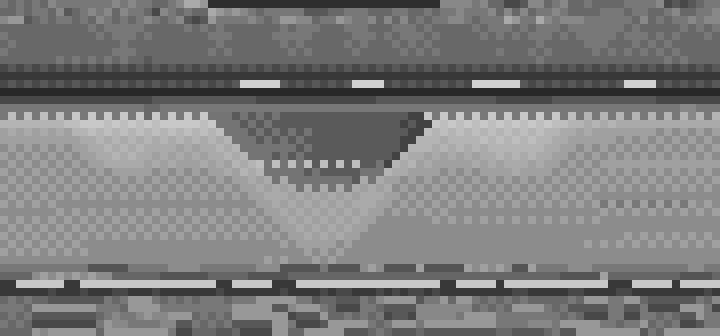
65. (manager scratchpad)/s1v9_8x.pngBash: Locate sections to rewrite
cd ~/work/pixelart-studies/elements/channel/src; grep -n "# the boundary between reflected bank and sheen" -A5 s1_still.py | head -7; grep -n "# B the far waterline" s1_still.py; grep -n "# E near shallows" s1_still.py; grep -n "# dash rows" s1_still.py; grep -n "# 7 near bank" s1_still.py # output: 237: # the boundary between reflected bank and sheen: one checker row 238- if rbank_rows: 239- r = max(rbank_rows) + 1 240- sel = water[r] & (hit[r] == 'sky') & par[r] 241- cv[r, sel] = cv[r - 1, sel] 242- # reflected objects: COPY the direct painting at the hit point, then the tone law 264: # B the far waterline: a broken light line where the meniscus catches the sky 273: # E near shallows: flat shelf bands of water-only tints, ragged ends, submerged stones 292: # dash rows: dotted horizontal lines (every other pixel), a step lighter on the reflections of 310: # 7 near bank: lapping light line at the waterline, wet dark band, then gravel with pebbles
Bash: Stepped shelf, rare glints, dash rows; v10
cd ~/work/pixelart-studies/elements/channel/src; python3 - <<'EOF'
p='s1_still.py'; L=open(p).read().split('\n')
# replace lines 237-241 (boundary checker row) with nothing, and 264-309 (B, E, dash) with new code
new_BE=''' # B the far waterline: rare short glints only (the reflected bank carries the edge)
x = int(rng.integers(0, 10))
while x < W:
if rng.random() < 0.25 and hit[wl, x] in ('rbank', 'sky'):
Lr = int(rng.integers(2, 4)); cv[wl, x:x + Lr] = wat_i[4]
x += int(rng.integers(8, 30))
# E near shallows: a shelf of water-only tints whose upper boundary steps (runs of 3-14 px),
# a lighter line along that boundary (the shelf lip catching the sky), stones inside
shelf_top = np.zeros(W, int); x = 0
while x < W:
Lr = int(rng.integers(3, 15)); shelf_top[x:x + Lr] = nr - int(rng.choice([2, 3, 3, 4])); x += Lr
for c in range(W):
for r in range(shelf_top[c], nr):
if water[r, c] and hit[r, c] == 'sky':
k = nr - r # 1 at the edge .. 4 at the lip
cv[r, c] = wat_i[1] if k <= 1 else (wat_i[2] if (k == 2 or (r + c) % 2) else wat_i[3])
r = shelf_top[c] - 1
if water[r, c] and hit[r, c] == 'sky' and rng.random() < 0.8:
cv[r, c] = wat_i[4] if cv[r, c] not in (sky_i[:3]) else cv[r, c]
for i in range(int(W / 8)):
sx = int(rng.integers(0, W - 5)); sr = nr - 1 - int(rng.integers(0, 2))
Ls = int(rng.integers(2, 6))
if not (hit[sr, sx:sx + Ls] == 'sky').all():
continue
cv[sr, sx:sx + Ls] = wat_i[0]
cv[sr - 1, sx + 1:sx + Ls - 1] = wat_i[3]
# dash rows: long dotted lines (every other pixel) a step lighter than the mirror, on the sky part
ws_sorted = np.array(ws_i)[np.argsort(ws_v)]
for r in range(wl + len(rbank_rows) + 3, nr - 4):
if rng.random() > 0.25:
continue
x = int(rng.integers(0, W)); Ld = int(rng.integers(4, 14))
for s_ in range(Ld):
xi = x + 2 * s_; xi += (xi + r) % 2
if xi >= W or not water[r, xi] or hit[r, xi] != 'sky':
continue
j = list(ws_sorted).index(cv[r, xi]) if cv[r, xi] in ws_sorted else -1
if j >= 0:
cv[r, xi] = ws_sorted[min(j + 1, len(ws_sorted) - 2)]'''.split('\n')
L = L[:236] + L[241:263] + new_BE + L[309:]
open(p,'w').write('\n'.join(L))
EOF
grep -n "# 7 near bank" -B3 s1_still.py | head; cd ..; nice -n 10 python3 src/s1_still.py v10 2>&1 | grep -v -i warn | grep -v "return np"; python3 -c "
from PIL import Image
im=Image.open('study/s1_paint_v10.png'); im=im.resize((im.width//4,im.height//4),Image.NEAREST)
im.crop((0,50,90,92)).resize((720,336),Image.NEAREST).save('(manager scratchpad)/s1v10_8x.png')"
# output:
295- j = list(ws_sorted).index(cv[r, xi]) if cv[r, xi] in ws_sorted else -1
296- if j >= 0:
297- cv[r, xi] = ws_sorted[min(j + 1, len(ws_sorted) - 2)]
298: # 7 near bank: lapping light line at the waterline, wet dark band, then gravel with pebblesRead: (manager scratchpad)/s1v10_8x.png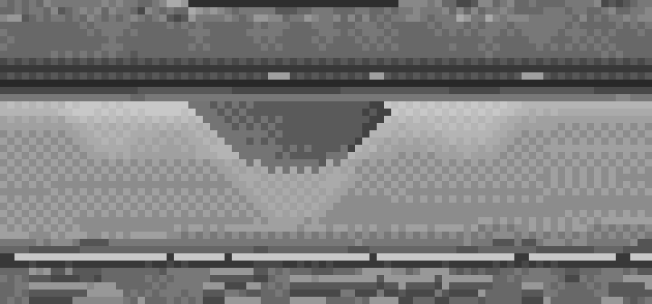
66. (manager scratchpad)/s1v10_8x.pngBash: Darker shelf, broken lap line; triptych
cd ~/work/pixelart-studies/elements/channel/src; python3 - <<'EOF'
p='s1_still.py'; s=open(p).read()
s=s.replace("cv[r, c] = wat_i[1] if k <= 1 else (wat_i[2] if (k == 2 or (r + c) % 2) else wat_i[3])",
"cv[r, c] = wat_i[0] if k <= 1 else (wat_i[1] if (k == 2 or (r + c) % 2) else wat_i[2])")
s=s.replace(""" ll = np.zeros(W, bool); x = int(rng.integers(0, 3))
while x < W:
Lr = int(rng.integers(5, 24)); ll[x:x + Lr] = True; x += Lr + int(rng.integers(1, 4))
cv[nr, ll] = sky_i[4]""",""" ll = np.zeros(W, bool); x = int(rng.integers(0, 3))
while x < W:
Lr = int(rng.integers(2, 10)); ll[x:x + Lr] = rng.random() < 0.65; x += Lr + int(rng.integers(1, 6))
cv[nr, ll] = wat_i[4]""")
open(p,'w').write(s)
EOF
cd ..; nice -n 10 python3 src/s1_still.py v11 2>&1 | grep -v -i warn | grep -v "return np"; python3 - <<'EOF'
import sys; sys.path.insert(0,'src')
import numpy as np, pixkit as pk
from PIL import Image
S='(manager scratchpad)/'
im=np.asarray(Image.open('study/s1_paint_v11.png'))[::4,::4]
mine=im[46:92,0:90]
ph=pk.photo_crop('~/work/pixelart-studies/transfer/refs/braided_bars_denali.jpg',(60,420,450,230),(90,46))
ph=np.stack([ph.mean(-1).astype(np.uint8)]*3,-1)
d=pk.lw_load('V16PM'); fr=pk.rgb(d['idx'],d['pal'])[392:438,250:340]
frg=np.stack([(fr@np.array([0.3,0.59,0.11])).astype(np.uint8)]*3,-1)
pk.triptych(ph, mine, frg, S+'s1_trip.png', s=6, labels=('photo (Denali, grey)','mine v11','Ferrari V16 water (grey)'))
EOF
# output:
(Bash completed with no output)Read: (manager scratchpad)/s1_trip.png 67. (manager scratchpad)/s1_trip.png
67. (manager scratchpad)/s1_trip.png
Bash: Show far bank, reflection and near bank code
cd ~/work/pixelart-studies/elements/channel/src; grep -n "foot = bankrows" -A3 s1_still.py; grep -n "# A reflected bank face" -A14 s1_still.py; grep -n "# 7 near bank" -A16 s1_still.py # output: 203: foot = bankrows & (tb > 0.62) 204- cv[foot] = np.where(par, grav_i[2], grav_i[3])[foot] 205- cv[wl - 1, notobj[wl - 1]] = grav_i[1] 206- # 6 water -- painted row-class by row-class, top to bottom (Ferrari's horizontal logic) 210: # A reflected bank face: mirrored bank texture, smeared sideways, compressed a step 211- rb = water & (hit == 'rbank') 212- rbank_rows = sorted(set(np.nonzero(rb)[0])) 213- for k, r in enumerate(rbank_rows): 214- src_r = wl - 1 - k # mirror about the waterline 215- rowv = cv[src_r].copy() 216- # smear: hold each value over 2-4 px runs (reflections streak horizontally) 217- x = 0 218- while x < W: 219- Lr = int(rng.integers(2, 5)); rowv[x:x + Lr] = rowv[x]; x += Lr 220- st = np.searchsorted(grav_i, rowv) 221- st = np.clip(st - (1 if k == 0 else 0) + (1 if k >= 2 else 0), 0, len(grav_i) - 1) 222- cv[r, rb[r]] = grav_i[st][rb[r]] 223- # C sheen + D sky reflection: the physical value, lifted just under the reflected bank 224- m = water & (hit == 'sky') 298: # 7 near bank: lapping light line at the waterline, wet dark band, then gravel with pebbles 299- ll = np.zeros(W, bool); x = int(rng.integers(0, 3)) 300- while x < W: 301- Lr = int(rng.integers(2, 10)); ll[x:x + Lr] = rng.random() < 0.65; x += Lr + int(rng.integers(1, 6)) 302- cv[nr, ll] = wat_i[4] 303- cv[nr, ~ll] = grav_i[1] 304- cv[nr + 1] = np.where(rng.random(W) < 0.75, grav_i[1], grav_i[2]) 305- m = (what == 'near') & (yy > nr + 1) 306- nv = V + (pk.value_noise(H, W, 5, rng, 2) - 0.5) * 20 307- cv[m] = ch.to_ramp(nv, grav_v, grav_i, 0.7, pk.BAYER4)[m] 308- pebn = ch.pebbles(H, W, rng, np.where(np.arange(H) > nr + 1, zrow, np.nan), cam.f, (0.03, 0.18), 1.3) 309- bs = np.interp(nv, grav_v, np.arange(len(grav_v))) 310- ps = np.clip(np.round(bs + np.where(pebn == 2, 2.4, np.where(pebn == 1, 1.0, np.where(pebn == -1, -1.5, -2.5)))), 0, 9).astype(int) 311- mm = m & (pebn != 0) 312- cv[mm] = grav_i[ps][mm] 313- return cv, V, what, info 314-
Bash: Graded wet margins, stepped reflection edge; v12
cd ~/work/pixelart-studies/elements/channel/src; python3 - <<'EOF'
p='s1_still.py'; s=open(p).read()
s=s.replace(""" foot = bankrows & (tb > 0.62)
cv[foot] = np.where(par, grav_i[2], grav_i[3])[foot]
cv[wl - 1, notobj[wl - 1]] = grav_i[1]""",""" foot1 = bankrows & (tb > 0.55) & (tb <= 0.8)
foot2 = bankrows & (tb > 0.8)
st0 = np.searchsorted(grav_i, cv)
cv[foot1] = grav_i[np.clip(st0 - 1, 0, 9)][foot1] # damp: one step down, texture kept
cv[foot2] = np.where(par, grav_i[1], grav_i[2])[foot2] # wet: dark checker
cv[wl - 1, notobj[wl - 1]] = np.where(rng.random(notobj[wl - 1].sum()) < 0.85, grav_i[1], grav_i[0])""")
s=s.replace(""" st = np.searchsorted(grav_i, rowv)
st = np.clip(st - (1 if k == 0 else 0) + (1 if k >= 2 else 0), 0, len(grav_i) - 1)
cv[r, rb[r]] = grav_i[st][rb[r]]""",""" st = np.searchsorted(grav_i, rowv)
st = np.clip(st - (1 if k == 0 else 0), 0, len(grav_i) - 1)
cv[r, rb[r]] = grav_i[st][rb[r]]
# the reflected band's lower edge steps: runs where the sky already shows through the last row
if rbank_rows:
r = rbank_rows[-1]; x = 0
while x < W:
Lr = int(rng.integers(2, 9))
if rng.random() < 0.45:
sel = slice(x, min(W, x + Lr)); cv[r, sel] = np.where(rb[r, sel], -5, cv[r, sel])
x += Lr""")
# sky painting must fill the -5 markers: mark them as sky hits
s=s.replace(""" # C sheen + D sky reflection: the physical value, lifted just under the reflected bank
m = water & (hit == 'sky')""",""" # C sheen + D sky reflection: the physical value, lifted just under the reflected bank
m = water & ((hit == 'sky') | (cv == -5))""")
s=s.replace(""" cv[nr, ll] = wat_i[4]
cv[nr, ~ll] = grav_i[1]
cv[nr + 1] = np.where(rng.random(W) < 0.75, grav_i[1], grav_i[2])
m = (what == 'near') & (yy > nr + 1)
nv = V + (pk.value_noise(H, W, 5, rng, 2) - 0.5) * 20""",""" cv[nr, ll] = wat_i[4]
cv[nr, ~ll] = np.where(rng.random((~ll).sum()) < 0.7, grav_i[1], grav_i[0])
m = (what == 'near') & (yy > nr)
wet = np.interp(yy - nr, [1, 2, 3, 4, 6], [48, 34, 20, 8, 0]) # the wet margin, graded, textured
nv = V + (pk.value_noise(H, W, 5, rng, 2) - 0.5) * 20 - wet""")
s=s.replace("pebn = ch.pebbles(H, W, rng, np.where(np.arange(H) > nr + 1, zrow, np.nan)","pebn = ch.pebbles(H, W, rng, np.where(np.arange(H) > nr, zrow, np.nan)")
open(p,'w').write(s)
EOF
cd ..; nice -n 10 python3 src/s1_still.py v12 2>&1 | grep -v -i warn | grep -v "return np"; python3 -c "
from PIL import Image
im=Image.open('study/s1_paint_v12.png'); im=im.resize((im.width//4,im.height//4),Image.NEAREST)
im.crop((0,46,90,94)).resize((720,384),Image.NEAREST).save('(manager scratchpad)/s1v12_8x.png')"
# output:
(Bash completed with no output)Read: (manager scratchpad)/s1v12_8x.png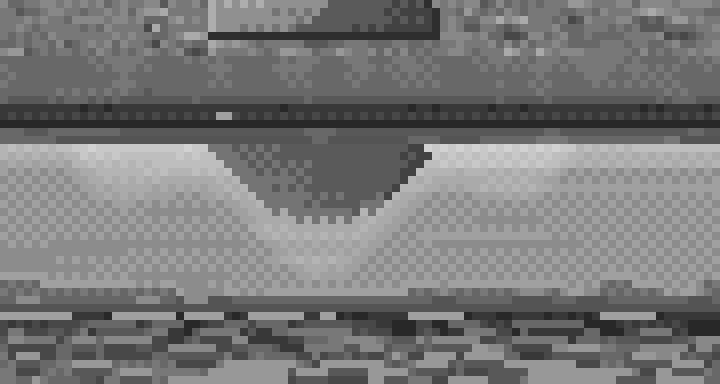
68. (manager scratchpad)/s1v12_8x.pngBash: Read latest critique
cd ~/work/pixelart-studies/elements/channel; sed -n 1,60p CRITIQUE.md # output: # Critique (newest first) ## Round 2 — 2026-09-25 21:34 — stage 0 `out/s0_copyA_v02.png` (v10), `out/s0_copyB_v11.png` (v5); `study/s1_value_study.png` **Stage 0: REVISE.** The notes in LESSONS.md are excellent: measured, honest, and they name the right remaining gaps. (My read; your call. You've stopped copy B on purpose; I'm judging it against the bar anyway, so you know where it stands.) ### Copy A (v10) Improved: the stepped bites on the upper bank edge are in, and the ruled 45° edge is broken up. Still a tell: 1. **A checker zipper.** At the bottom right of "copy 8x" (x≈830–968, y≈440–600) the glitter now dissolves into a diagonal band of big dark/pink checker running at 45°, so it reads as a zip or a hatch. His lower right is dark marsh with only sparse specks, and the glitter's lower margin is short. The ruled line became a ruled checker band: same tell, new costume. 2. **The sharp dark triangle** in the upper left of your 8× (x≈530–640, y≈320–380). There, his ribbon is a broad pink area with a small notched dark tongue. Yours is a clean dark wedge pointing left, and a clean wedge is a drawn shape. As you say, it comes from the sketch. In a master copy you're allowed to trace his shapes exactly. Do that, so the test is your procedure, not your tracing. 3. The near ribbon's lower edge is now a long staircase of equal steps (8×, y≈440–520). His lower edge is irregular: some steps long, some one pixel. ### Copy B (v5) - **The riffle is too even.** In his, the riffle is a few distinct vertical jets with long, leaning chains rising out of them and plain mirror between. Yours is a uniform field of short checker marks across the whole width, with lilac pixels sprinkled through. At 3× his reads as spray and yours as fizz. - **Rock edges are stitched.** The orange checker along the bottom of your upper-left rock (lower "copy 8x", x≈490–750, y≈725–745) and around the small rock reads as a sewn border. His rock has a maroon *face* (a solid band a few px tall) with a dark checker reflection below it; the warm colour is a plane, not a fringe. - His rocks have a lighter top plane; yours are flat dark boxes. You noted this yourself. ### s1_value_study.png Fine as a reflection value diagram. It isn't a pixel study, so I'm not judging it as one. ## Round 1 — 2026-09-25 21:22 — stage 0 master copy, `study/c0a_v4.png` (V02 winding ribbons) **Verdict: REVISE** — the far ribbons are nearly there; the near ribbon gives itself away. (My read; your call. The bar: indistinguishable from his crop at 8× except by subject.) What's working: - **Far band (bottom 8× pair).** The thin ribbons as 1-px-tall horizontal runs with stepped joins, and the doubled loop, are very close to his. The sky-lilac field with its faint checker also matches. - The value plan of the near crop (dark banks, bright ribbon, glinting gravel band) is right at 3×. What gives it away: 1. **The ruled diagonal.** In "COPY 3x" and the upper 8× copy, the lower edge of the glinting band and the
Bash: Copy A with traced shape, remove zipper
cd ~/work/pixelart-studies/elements/channel/src; python3 - <<'EOF'
p='c0a_v02.py'; s=open(p).read()
s=s.replace("""def paint(seed=3):
rng = np.random.default_rng(seed)
F, thread = fields(H, W)
gy, gx = np.gradient(F) # facing is taken from the clean field
F = breathe(F, rng)""","""def traced_fields():
\"\"\"the master-copy allowance: take his water SHAPE exactly (so the test is the procedure).\"\"\"
from scipy.ndimage import distance_transform_edt as edt, gaussian_filter
d = pk.lw_load('V02')
idx = d['idx'][Y0:Y0 + H, X0:X0 + W]
wset = list(range(1, 48)) + list(range(128, 136)) + list(range(160, 168)) + list(range(232, 240))
m = np.isin(idx, wset)
thread = m & (np.arange(H)[:, None] < 18)
body = m & ~thread
F = edt(~body, sampling=(KY, 1.0)) - edt(body, sampling=(KY, 1.0))
return F, thread
TRACED = True
def paint(seed=3):
rng = np.random.default_rng(seed)
if TRACED:
F, thread = traced_fields()
from scipy.ndimage import gaussian_filter
gy, gx = np.gradient(gaussian_filter(F, 1.2))
else:
F, thread = fields(H, W)
gy, gx = np.gradient(F) # facing is taken from the clean field
F = breathe(F, rng)""")
# fix zipper: shorter lower margin, sparse specks, no checker thinning band
s=s.replace(""" p_keep = np.clip(1 - (F + 2 * KY) / (4 * KY), 0, 1) # 1 deep inside -> 0 two lips out
thin = zone & m & (rng.random((H, W)) > p_keep) & par
cv[thin] = np.where(rng.random((H, W)) < 0.5, 75, 79)[thin]
spill = zone & ~m & (F < 2 * KY) & par & (rng.random((H, W)) < 0.12)
cv[spill] = rng.choice([131, 134, 162, 36, 40, 51], spill.sum())""",""" spill = zone & ~m & (F < 1.5 * KY) & (rng.random((H, W)) < 0.07)
cv[spill] = rng.choice([131, 134, 162, 36, 40, 51], spill.sum())""")
s=s.replace(" m = (F < 0) | thread\n"," m = (F < 0) | thread\n if TRACED:\n m = (F <= 0) | thread\n")
open(p,'w').write(s)
EOF
cd ..; nice -n 10 python3 src/c0a_v02.py 3 v11
# output:
{'blurLab': 1.89, 'runs_copy': (1.66, 1.85), 'runs_ref': (1.55, 1.76)} water IoU 0.96
ref edge profile ([61.0, 60.0, 65.0, 69.0, 74.0, 75.0, 76.0, 72.0, 72.0, 72.0], [100.0, 78.0, 66.0, 65.0, 63.0, 64.0, 68.0, 69.0, 69.0, 68.0])
copy edge profile ([54.0, 55.0, 59.0, 67.0, 69.0, 73.0, 74.0, 74.0, 73.0, 73.0], [96.0, 81.0, 69.0, 68.0, 67.0, 68.0, 71.0, 71.0, 69.0, 71.0])Read: elements/channel/study/c0a_v11.png 69. elements/channel/study/c0a_v11.png
69. elements/channel/study/c0a_v11.png
Bash: Warmer glitter; save copy A v12
cd ~/work/pixelart-studies/elements/channel/src; python3 - <<'EOF'
p='c0a_v02.py'; s=open(p).read()
s=s.replace(""" cyc = rng.integers(128, 136, (h, w))
pink = rng.integers(160, 168, (h, w))
cyc = np.where((y > 346) & (rng.random((h, w)) < 0.35), pink, cyc)
stat = rng.choice([7, 8, 8, 7, 3, 40, 4, 36], (h, w))""",""" cyc = rng.choice([128, 129, 130, 131, 131, 132, 133, 134, 135], (h, w))
pink = rng.integers(160, 168, (h, w))
cyc = np.where((y > 346) & (rng.random((h, w)) < 0.2), pink, cyc)
stat = rng.choice([7, 8, 8, 7, 3, 40, 40, 41, 4, 36], (h, w))""")
open(p,'w').write(s)
EOF
cd ..; nice -n 10 python3 src/c0a_v02.py 3 v12 | head -1; cp study/c0a_v12.png out/s0_copyA_v02.png
# output:
{'blurLab': 1.84, 'runs_copy': (1.66, 1.85), 'runs_ref': (1.55, 1.76)} water IoU 0.96Bash: Index map of V11AM rocks
cd ~/work/pixelart-studies/elements/channel/src; python3 -c "
import pixkit as pk, numpy as np
d=pk.lw_load('V11AM'); idx=d['idx']
sym={57:'l',69:'d',70:'M',82:'W',92:'2',93:'3',94:'4',95:'5',96:'6',54:'k',59:'9',71:'7'}
def s(v):
if v in sym: return sym[v]
if 7<=v<=19: return '.'
if 192<=v<=223: return '~'
return '?'
for y in range(378,414): print(y, ''.join(s(v) for v in idx[y,368:450]))
print({k:tuple(d['pal'][k]) for k in [57,69,70,82,92,93,94,95,96,54,59,71]})
"
# output:
378 ~~~~~~~~~~~~~~~~~~.~.~.~.~.~.~.~.~~~~~.~.........~....~~~....~.~......~..~...~.~..
379 ~~~2~~~~~~~~~~~~~~~~~.~.~.~.~.~~~~.~~................~..~.~.~~~.~.......~~~...~.~.
380 ~~~~~~~~~~~~~~~~~~~~~~~~.~.~.~~~~~~~.~..............~..~.~.~~~~~.........~...~.~.~
381 ~~~~~~~~~~~~~~~~~~~~~~~~~~~~~~~~~~~~~~~.......~.......~.~.~.~~~.~~....~.~.~.~~~.~.
382 ~~~~~~~~.~????????~~~~.~~~~~~~~~~~~~~~~.~~.........~...~.~.~~~.~.~.~.~.~.~.~.~.~.~
383 ~~~~~???????????????????~~~~~~~~~~~~~~~~............~.~.~~~~~~~.~~~.~.~.~.~~~~~.~.
384 ?????????????????????????~~~~~~~~~~~~~~~.~.~.~~~~~~~~~~~~~~~~~.~~~~~~~.~~~.~.~.~..
385 ???????????????????656552~~~~~~~~~~~~~~~~.~.~~~~~~~~~~~~~~~~~.~.~~~.~.~~~.~~~.~...
386 kk?????????????6666555552~~~~~~~~~~~~~~~.~.~~~~~~~~~~~~~~~~~~~~~~~~~.~~~.~~~~~.~..
387 dkk?k?????665656565655552.~~~~~~~~~~~~~~~~~~~~~~~~~~~~~~~~~~~.~~~~~.~~~~~~~~~.~.~.
388 dddMMkkk66666665655555552~~..~~~~~~~~~~~~~~~~~~~~~~~~~~~~~~~~~~~~~.~~~~~~~~~.~.~..
389 dddMdMM666565656565556552~~~~~~~~~~.~.~~~~~~~~~~~~~~~~~~~~~~~~~~~~~~~~~~~~~.~.~.~.
390 dddddMM6666665655555555~~~~~~~~~~~~~~~~~~~~~~~~~~~~~~~~~~~~~~~~~~~~~~~~~~~~~~~.~..
391 dMdMdMM6565656565555~~~~~~~~~~~~~~~~~???~~~~~~~~~~~~~~~~~~~~~~~~~~~~~~~~~~~~~.~...
392 MMMMdMM666656555~6~6~73332~~~~~~~~~~7ddd332~~~~~~~~~~~~~~~~~~~~~~~~~~~~~~~~~.~....
393 ...MMMM666555~6~6~6~775553222.......333332222~~~~~~~~~~~~~~~~~~~~~~~~~~~~~~.~.~.~~
394 d.d.~~M665~6~6~6~6~77775553332222~~~~~~~~~~~~~~~~~~~~~~~~~~~~~~~~~~~~~~~~~.~.~.~~~
395 .M.M.M~~~~~~6~6~6.7ddd7775533332222~~~~..~~~~~~~~~~~~.~~~~~.~.~~~~~~~~~~~~~.~.~~~~
396 ~.M~M~.~.~.~.~.~.7ddddd77753325~5~~~~~~~~~~~~~~~~~~~~~~~..~~~~.~~~~~~~~~~~~~.~.~~~
397 ........~.~.~.~.MMMMMMMMMM7~~5~5~~~.~.~.~~~~~~~~~~~~~~~~~~~????????.~~~~~.~.~.~.~.
398 .~.~...~.~...~.~.~7~7~~~~~~~~~~~~~.~~~~~~~~~~~~~~~~~~kkk?k?????????????~~~.~.~.~~~
399 ............~.~.~.~7~7~7~.~~~.~.~.~.~.~.~.~.~~~~~~kkk?k?k?k????????????????.~~~~~~
400 ............~~.~.~.~7~7~~~.~~~~~~~~~.~.~~~~~~~~~~~dddkkk?k?k?????????????????~??3~
401 ~...~...~..~..~.~.~.~.~.~.~.~.~.~.~.~.~.~.~.~.~.~~ddddddklklklkllllll9l9l9l92~7753
402 .....................................~.......~.~~~dddddddddkkklkllllll99996527dd75
403 ..................................................dddddddddddMMlklll96565655277333
404 ....................~...~..~.~.~.~..~....72.......ddddddddddddMMkMk6666565552~~~~~
405 .......................................77d422~~....MddddddddMdMdMM666656565552~~33
406 .....................................77ddd44522~~~d~~MMdddddMdddMM66666565555525?3
407 ~..~.~.~..~.....~....................~~~~4445~.~~~.d.d.dMMdddMddMM6656565656552777
408 ......................................7.7~7~~.....M.M.d.d.dMddddMM666555552~6~63~3
409 .......................................7.7.7.......M.M.M.M.dMMMdMM665655575526~~.~
410 ......................................~..~.~.~.~.~M.M.M.M.M.M.~MMM65~6~67d7552~~~~
411 .....~...~..~..~..~.~.~.~..~...~.~.~...~............~.~M.M~M~M~M~M~~6~77dd775522~.
412 ......................................Bash: Identify rock top plane colours
cd ~/work/pixelart-studies/elements/channel/src; python3 -c "
import pixkit as pk, numpy as np
d=pk.lw_load('V11AM'); idx=d['idx']
sub=idx[382:403,368:450];
kn=set([57,69,70,82,92,93,94,95,96,54,59,71]+list(range(7,20))+list(range(192,224)))
u,c=np.unique(sub[~np.isin(sub,list(kn))],return_counts=True)
for a,b in zip(u,c): print(a,b,d['pal'][a])
"
# output:
53 10 [55 47 75]
56 66 [35 31 55]
58 40 [31 31 71]
60 34 [23 23 51]
73 5 [23 27 51]Bash: Copy B: traced masses, jets, rock faces
cd ~/work/pixelart-studies/elements/channel/src; python3 - <<'EOF'
p='c0b_v11.py'; s=open(p).read()
a=s.index("def paint(seed=1):"); b=s.index("if __name__ == '__main__':")
s=s[:a]+'''def traced_masses():
"""master-copy allowance: his solid dark masses, traced (cores only; edges are procedure)."""
from scipy.ndimage import uniform_filter, label
d = pk.lw_load('V11AM')
idx = d['idx'][Y0:Y0 + H, X0:X0 + W]
dark = np.isin(idx, list(range(53, 74)) + [82] + list(range(92, 97)))
core = (uniform_filter(dark.astype(float), 3) > 0.62) & dark
lab, n = label(core)
parts = {'mesa': np.zeros_like(core), 'bank_r': np.zeros_like(core), 'bank_n': np.zeros_like(core), 'rocks': []}
for k in range(1, n + 1):
m = lab == k
if m.sum() < 6:
continue
ys, xs = np.nonzero(m)
if ys.min() == 0 and xs.min() == 0 or (xs.mean() < 40 and ys.mean() < 32):
parts['mesa'] |= m
elif xs.mean() > 80 and ys.mean() < 40:
parts['bank_r'] |= m
elif ys.max() >= H - 2 and xs.mean() > 50:
parts['bank_n'] |= m
else:
parts['rocks'].append(m)
return parts
def paint_rock(cv, R, rng, par):
h, w = R.shape
ys, xs = np.nonzero(R)
x0, x1 = xs.min(), xs.max()
split = x0 + 0.55 * (x1 - x0)
yy, xx = np.mgrid[0:h, 0:w]
lit = R & (xx < split)
shd = R & (xx >= split)
cv[lit] = 69
strips = lit & (xx > split - 4) & ((xx % 2) == 0)
cv[strips] = 70
cv[lit & (xx < x0 + 2) & (rng.random((h, w)) < 0.5)] = 70
cv[shd] = np.where(par, 95, 96)[shd]
# top plane: first 2-3 rows of each column, value-close lighter
for x in range(x0, x1 + 1):
col = np.nonzero(R[:, x])[0]
if len(col) == 0:
continue
t = col.min(); n = 2 if (x1 - x0) < 14 else 3
for k in range(min(n, len(col) - 1)):
cv[t + k, x] = rng.choice([56, 58, 57, 53] if k == 0 else [56, 58, 60])
# reflection: checker of the face colour under the rock, fading over 3 rows
for x in range(x0, x1 + 1):
col = np.nonzero(R[:, x])[0]
if len(col) == 0:
continue
b = col.max()
for k in range(1, 4):
y = b + k
if y < h and not R[y, x] and par[y, x] and rng.random() < (0.95, 0.7, 0.35)[k - 1]:
cv[y, x] = 70 if x < split else rng.choice([92, 95, 71])
def paint(seed=1):
rng = np.random.default_rng(seed)
h, w = H, W
yy, xx = np.mgrid[0:h, 0:w]
y = yy + Y0
par = (xx + yy) % 2 == 0
P = traced_masses()
v = np.interp(y, [338, 344, 350, 355, 358, 364, 369, 374, 380, 386, 393, 399, 405, 410, 416, 424],
[8.0, 9.0, 10.0, 10.5, 11.0, 12.0, 12.5, 13.0, 14.0, 14.5, 15.0, 16.0, 16.5, 17.0, 18.0, 18.5])
cv = pk.ordered(pk.banded(v, 0.6), pk.BAYER4)
from scipy.ndimage import distance_transform_edt as edt
M = P['mesa']
dm = edt(~M, sampling=(3.0, 1.0))
cv[M] = rng.choice(DARK[:4], M.sum())
t4 = pk.tile(pk.BAYER2, h, w)
for lo, hi, thr in ((0, 5, 0.8), (5, 10, 0.5), (10, 16, 0.22)):
g = (dm > lo) & (dm <= hi)
dsel = g & (t4 < thr)
cv[dsel] = rng.choice(DARK[:3], dsel.sum())
csel = g & ~dsel & (rng.random((h, w)) < 0.7)
cv[csel] = rng.integers(209, 217, csel.sum())
B = P['bank_r']
warm = pk.value_noise(h, w, 5, rng, 2) > 0.5
cv[B] = np.where(par & warm, 82, np.where(warm & (rng.random((h, w)) < 0.4), 70, 92))[B]
be = fringe(B, 3, par) & (yy > 17)
cv[be & par & (rng.random((h, w)) < 0.7)] = 82
rocks_all = np.zeros((h, w), bool)
for R in P['rocks']:
rocks_all |= R
blocked = M | B | rocks_all | P['bank_n']
# riffle: a few distinct JETS rising from a base band, long leaning chains from their tops,
# plain mirror between them
base_y = 44
jets = [(8, 20), (22, 26), (36, 17), (52, 24), (63, 30), (74, 22), (88, 16), (98, 12)]
for (jx, jh) in jets:
jx = jx + rng.normal(0, 1.5)
jw = rng.uniform(2.5, 5.0)
top = base_y + 12 - jh
for yr in range(int(top), base_y + 14):
f = (yr - top) / max(jh, 1) # 0 at the tip .. 1 at the base
half = jw * (0.35 + 0.65 * f)
for xr in range(int(jx - half - 1), int(jx + half + 2)):
if not (0 <= xr < w and 0 <= yr < h) or blocked[yr, xr]:
continue
dx = abs(xr - jx) / max(half, 0.5)
if dx > 1:
continue
dens = f * (1 - dx * 0.6)
if dens > 0.55 or (par[yr, xr] and rng.random() < dens * 1.6):
cv[yr, xr] = 192 + int(np.clip(rng.normal(5 + 3 * (0.5 - dx), 2), 0, 10))
# chains from the jet's crown, leaning outward, long
for c_ in range(int(rng.integers(3, 7))):
side = rng.choice([-1, 1])
lean = rng.uniform(0.25, 0.9) * side; curl = rng.uniform(0.0, 0.06) * side
xf = jx + rng.normal(0, 1); y0 = int(top + rng.integers(0, 5)); L = int(rng.integers(6, 20))
k0 = int(rng.integers(0, 11))
for st in range(L):
yi = y0 - st; xi = int(round(xf))
if (xi + yi) % 2:
xi += 1 if xf > xi else -1
if 0 <= yi < h and 0 <= xi < w and not blocked[yi, xi] and rng.random() < 0.9:
cv[yi, xi] = 192 + (k0 + st) % 11
xf += lean + curl * st
# the base band between the rocks: dense strands, then dark trough runs under it
band = (yy >= base_y + 6) & (yy <= base_y + 14) & ~blocked
bn = pk.value_noise(h, w, 3, rng, 2, aniso=(3.0, 0.6))
selb = band & ((bn > 0.45) | (par & (bn > 0.3)))
cv[selb] = 192 + np.clip((bn * 11 + rng.normal(0, 1.5, (h, w))).astype(int), 0, 10)[selb]
lil = selb & (rng.random((h, w)) < 0.05)
cv[lil] = rng.choice([219, 220, 221], lil.sum())
for yb in range(base_y + 15, base_y + 19):
x = 0
while x < w:
if rng.random() < 0.18:
L = int(rng.integers(3, 10))
for xi in range(x, min(w, x + L)):
if not blocked[yb, xi]:
cv[yb, xi] = rng.choice([209, 210, 215, 216, 223])
x += L + int(rng.integers(3, 9))
else:
x += 1
# near dotted dashes
for yd in range(62, h):
pr = np.interp(yd, [62, 66, 70, 78, 90], [0.0, 0.5, 0.3, 0.45, 0.35])
x = int(rng.integers(0, 6))
while x < w:
if rng.random() < pr * 0.3:
L = int(rng.integers(3, 12)); k0 = int(rng.integers(0, 11))
ramp = (192, 11) if yd < 79 else (209, 8)
for s_ in range(L):
xi = x + 2 * s_; xi += (xi + yd) % 2
if xi < w and not blocked[yd, xi]:
cv[yd, xi] = ramp[0] + (k0 - s_) % ramp[1]
x += 2 * L + int(rng.integers(2, 10))
else:
x += int(rng.integers(2, 8))
for R in P['rocks']:
paint_rock(cv, R, rng, par)
N = P['bank_n']
cv[N] = np.where(par & (pk.value_noise(h, w, 4, rng, 2) > 0.62), 82, rng.choice([92, 93, 94, 95], (h, w)))[N]
ne = fringe(N, 2, par)
cv[ne & par & (rng.random((h, w)) < 0.7)] = rng.choice([92, 82], (ne & par & (rng.random((h, w)) < 2)).sum()) if False else 92
return cv
'''+s[b:]
open(p,'w').write(s)
EOF
cd ..; nice -n 10 python3 src/c0b_v11.py 1 v6
# output:
{'blurLab': 4.13, 'runs_copy': (1.71, 1.73), 'runs_ref': (1.44, 1.51)}Read: elements/channel/study/c0b_v6.png70. elements/channel/study/c0b_v6.png
Bash: Steeper chains in copy B; save
cd ~/work/pixelart-studies/elements/channel/src; sed -i '' 's/lean = rng.uniform(0.25, 0.9) \* side; curl = rng.uniform(0.0, 0.06) \* side/lean = rng.uniform(0.05, 0.45) * side; curl = rng.uniform(0.01, 0.07) * side/; s/xf = jx + rng.normal(0, 1); y0 = int(top + rng.integers(0, 5)); L = int(rng.integers(6, 20))/xf = jx + rng.normal(0, 1.5); y0 = int(top + rng.integers(0, 6)); L = int(rng.integers(4, 15))/' c0b_v11.py; cd ..; nice -n 10 python3 src/c0b_v11.py 1 v7; cp study/c0b_v7.png out/s0_copyB_v11.png
# output:
{'blurLab': 4.1, 'runs_copy': (1.73, 1.76), 'runs_ref': (1.44, 1.51)}Read: elements/channel/study/c0b_v7.png71. elements/channel/study/c0b_v7.png
Bash: Add low-angle gravel painter (paired marks)
cd ~/work/pixelart-studies/elements/channel/src; cat >> channel.py <<'EOF'
def gravel(mask, base_v, zrow, f, rng, ramp_i, ramp_v, stone_m=(0.03, 0.14), density=1.0, matrix=None):
"""gravel at a low angle, as marks on an ordered base.
base: the value field through a 4x4 ordered dither (the smooth mass).
marks: every stone is a light-over-dark PAIR (lit top row, shaded row under it, contact under that),
its width from the stone size projected at that row's distance; far stones shrink to 1-px flecks of
light or dark; stones never sit in rows (random y), and they overlap nearer-over-farther."""
h, w = mask.shape
matrix = pk.BAYER4 if matrix is None else matrix
vals = np.asarray(ramp_v, float); n = len(vals)
step = np.interp(base_v, vals, np.arange(n))
out_step = pk.ordered(step, matrix).astype(float)
# candidate stones: area density per pixel ~ 1/(stone footprint in px)
marks = []
for y in range(h):
z = zrow[y]
if not np.isfinite(z) or z <= 0:
continue
ppm = f / z
k = int(w * density * (0.10 + 0.35 * np.clip(ppm / 60.0, 0, 1)))
for _ in range(k):
s = np.exp(rng.uniform(np.log(stone_m[0]), np.log(stone_m[1])))
wpx = s * ppm
marks.append((y + rng.random(), rng.uniform(-2, w), wpx, rng.choice([-1, 0, 0, 1])))
marks.sort(key=lambda t: t[0])
for (yf, x0, wpx, alb) in marks:
y = int(yf)
if wpx < 0.8:
# a fleck: light or dark single pixel (half the time nothing: the base carries it)
if rng.random() < 0.5:
continue
xi = int(x0)
if 0 <= xi < w and mask[y, xi]:
out_step[y, xi] = step[y, xi] + (1.2 if alb >= 0 else -1.2)
continue
L = max(1, int(round(wpx)))
tall = wpx > 2.6 # big stones: a body row between top and underside
xs = np.arange(int(x0), int(x0) + L)
xs = xs[(xs >= 0) & (xs < w)]
if len(xs) == 0:
continue
top_off = 1.6 + 0.4 * alb
rows = [(y, top_off)]
if tall:
rows.append((y + 1, 0.6 + 0.4 * alb))
rows.append((y + 2, -1.0))
rows.append((y + 3, -2.0))
else:
rows.append((y + 1, -1.0 + 0.3 * alb))
if wpx > 1.6:
rows.append((y + 2, -1.8))
for (yy, off) in rows:
if yy >= h:
continue
xx = xs
if off < -1.5: # contact shadow is shorter than the stone
xx = xs[1:-1] if len(xs) > 2 else xs[:1]
if off > 1.0 and len(xs) > 2: # the lit top is shorter too (rounded)
xx = xs[1:] if rng.random() < 0.5 else xs[:-1]
sel = mask[yy, xx]
out_step[yy, xx[sel]] = step[yy, xx[sel]] + off
q = np.clip(np.round(out_step), 0, n - 1).astype(int)
return np.asarray(ramp_i)[q]
EOF
echo ok
# output:
okBash: Locate gravel sections
cd ~/work/pixelart-studies/elements/channel/src; grep -n "# 3 far bar" s1_still.py; grep -n "# 4b the objects" s1_still.py; grep -n " m = (what == 'near') & (yy > nr)" s1_still.py; grep -n " return cv, V, what, info" s1_still.py # output: 176: # 3 far bar: gravel as ordered texture of a slow field, finer with distance 192: # 4b the objects themselves (painted before the water, which copies them) 315: m = (what == 'near') & (yy > nr) 324: return cv, V, what, info
Bash: Use new gravel painter; v13
cd ~/work/pixelart-studies/elements/channel/src; python3 - <<'EOF'
p='s1_still.py'; L=open(p).read().split('\n')
far_new=''' # 3 far bar + 4 far bank slope: gravel as light-over-dark stone pairs on an ordered base
zrow = cam.z_of_row(np.arange(H) + 0.5)
m = np.isin(what, ['ground', 'bank'])
gv = V + (pk.value_noise(H, W, 6, rng, 2, aniso=(0.4, 2.0)) - 0.5) * 18
# the bank slope faces us: it is the same gravel, a little darker, seen at its own distance
zb = np.where(what == 'bank', Z_FAR + BANK_RUN * 0.5, zrow[:, None])
zeff = np.where(what == 'bank', zb, zrow[:, None]).min(axis=1)
g = ch.gravel(m, gv, np.where(m.any(1), zeff, np.nan), cam.f, rng, grav_i, grav_v, (0.03, 0.16), 0.9)
cv[m] = g[m]'''.split('\n')
near_new=''' m = (what == 'near') & (yy > nr)
wet = np.interp(yy - nr, [1, 2, 3, 4, 6], [48, 34, 20, 8, 0]) # the wet margin, graded, textured
nv = V + (pk.value_noise(H, W, 5, rng, 2) - 0.5) * 20 - wet
g = ch.gravel(m, nv, np.where(np.arange(H) > nr, zrow, np.nan), cam.f, rng, grav_i, grav_v, (0.03, 0.16), 1.0)
cv[m] = g[m]'''.split('\n')
L = L[:175] + far_new + L[191:314] + near_new + L[323:]
open(p,'w').write('\n'.join(L))
EOF
cd ..; nice -n 10 python3 src/s1_still.py v13 2>&1 | grep -v -i warn | grep -v "return np"; python3 -c "
from PIL import Image
im=Image.open('study/s1_paint_v13.png'); im=im.resize((im.width//4,im.height//4),Image.NEAREST)
im.crop((0,40,96,108)).resize((768,544),Image.NEAREST).save('(manager scratchpad)/s1v13_8x.png')"
# output:
(Bash completed with no output)Read: (manager scratchpad)/s1v13_8x.png72. (manager scratchpad)/s1v13_8x.png
Bash: Wet foot via value; sparser lap line
cd ~/work/pixelart-studies/elements/channel/src; python3 - <<'EOF'
p='s1_still.py'; s=open(p).read()
s=s.replace(""" gv = V + (pk.value_noise(H, W, 6, rng, 2, aniso=(0.4, 2.0)) - 0.5) * 18
# the bank slope""",""" gv = V + (pk.value_noise(H, W, 6, rng, 2, aniso=(0.4, 2.0)) - 0.5) * 18
# the bank's wet foot: value drops over the lowest ~45% of the slope, most at the waterline
tbank = np.clip((np.arange(H)[:, None] + 0.5 - info['top']) / (info['wl'] - info['top']), 0, 1)
gv = gv - np.where(what == 'bank', np.interp(tbank, [0, 0.55, 0.8, 1.0], [0, 0, 22, 46]), 0)
# the bank slope""")
a=s.index(" foot1 = bankrows & (tb > 0.55) & (tb <= 0.8)"); b=s.index(" # 6 water --")
s=s[:a]+s[b:]
s=s.replace("Lr = int(rng.integers(2, 10)); ll[x:x + Lr] = rng.random() < 0.65; x += Lr + int(rng.integers(1, 6))",
"Lr = int(rng.integers(2, 7)); ll[x:x + Lr] = rng.random() < 0.45; x += Lr + int(rng.integers(2, 8))")
open(p,'w').write(s)
EOF
grep -n "wl = int(np.floor" s1_still.py | head -3
# output:
192: wl = int(np.floor(info['wl'])); nr = int(np.floor(info['nr']))Bash: Check code around the far bank section
cd ~/work/pixelart-studies/elements/channel/src; sed -n 185,200p s1_still.py
# output:
zeff = np.where(what == 'bank', zb, zrow[:, None]).min(axis=1)
g = ch.gravel(m, gv, np.where(m.any(1), zeff, np.nan), cam.f, rng, grav_i, grav_v, (0.03, 0.16), 0.9)
cv[m] = g[m]
# 4b the objects themselves (painted before the water, which copies them)
ch.paint_boulder(cv, what == 'boulder', P.r('bould'), rng)
ch.paint_shrub(cv, what == 'willow', P.r('wil'), rng)
# 5 the far bank's wet foot: the rows just above the waterline darken (wet), the last darkest
wl = int(np.floor(info['wl'])); nr = int(np.floor(info['nr']))
notobj = ~np.isin(what, ['boulder', 'willow'])
bankrows = what == 'bank'
tb = np.zeros((H, W));
for r in range(H):
if bankrows[r].any():
tb[r] = (r - info['top']) / (info['wl'] - info['top'])
# 6 water -- painted row-class by row-class, top to bottom (Ferrari's horizontal logic)
water = np.isin(what, ['wsky', 'wobj'])Bash: Render v14
cd ~/work/pixelart-studies/elements/channel; nice -n 10 python3 src/s1_still.py v14 2>&1 | grep -v -i warn | grep -v "return np"; python3 -c "
from PIL import Image
im=Image.open('study/s1_paint_v14.png'); im=im.resize((im.width//4,im.height//4),Image.NEAREST)
im.crop((0,40,96,108)).resize((768,544),Image.NEAREST).save('(manager scratchpad)/s1v14_8x.png')"
# output:
(Bash completed with no output)Read: (manager scratchpad)/s1v14_8x.png73. (manager scratchpad)/s1v14_8x.png
Read: elements/channel/study/s1_paint_v14.png74. elements/channel/study/s1_paint_v14.png
Bash: Foliage reflection keeps texture, wind dashes; v15
cd ~/work/pixelart-studies/elements/channel/src; python3 - <<'EOF'
p='s1_still.py'; s=open(p).read()
s=s.replace(""" cv[rr, cc] = ch.tone_down(ch.tone_down(vals, P.r(rname)), P.r(rname), dark_up=False)""",""" if kind == 'boulder': # a convex solid: the mirror sees its shaded underside
cv[rr, cc] = ch.tone_down(ch.tone_down(vals, P.r(rname)), P.r(rname), dark_up=False)
else: # foliage keeps its texture; only the range compresses
cv[rr, cc] = ch.tone_down(vals, P.r(rname))
# wind lines cross dark reflections as dotted light dashes
rows_k = sorted(set(rr))
for r in rows_k[2::5]:
xs_ = cc[rr == r]
if len(xs_) < 4 or rng.random() < 0.3:
continue
x0 = int(rng.integers(xs_.min(), max(xs_.min() + 1, xs_.max() - 3)))
for s_ in range(int(rng.integers(2, 7))):
xi = x0 + 2 * s_ + ((x0 + r) % 2)
if xi <= xs_.max() and hit[r, xi] == kind:
cv[r, xi] = P.r(rname)[-2]""")
open(p,'w').write(s)
EOF
cd ..; nice -n 10 python3 src/s1_still.py v15 2>&1 | grep -v -i warn | grep -v "return np"; python3 -c "
from PIL import Image
im=Image.open('study/s1_paint_v15.png'); im=im.resize((im.width//4,im.height//4),Image.NEAREST)
im.crop((100,0,192,90)).resize((736,720),Image.NEAREST).save('(manager scratchpad)/s1v15_8xR.png')"
# output:
(Bash completed with no output)Read: (manager scratchpad)/s1v15_8xR.png75. (manager scratchpad)/s1v15_8xR.png
Bash: Measure value relationships mine vs Ferrari
cd ~/work/pixelart-studies/elements/channel; python3 - <<'EOF'
import sys; sys.path.insert(0,'src')
import numpy as np, pixkit as pk
from PIL import Image
from skimage.color import rgb2lab
L=lambda a: rgb2lab(a.astype(float)/255)[...,0]
im=np.asarray(Image.open('study/s1_paint_v15.png'))[::4,::4]
l=L(im)
# rows: horizon sky rows 8-16, water: wl=60/61.. nr=85
print('mine: sky(0-3deg) %.0f | sheen(r65-66) %.0f | mid water(r70-76, sky cols) %.0f | shallows(r82-84) %.0f | wet margin %.0f | gravel near %.0f | far bar %.0f' % (
l[8:16,:].mean(), l[65:67,30:90].mean(), l[70:77,60:100].mean(), l[82:85,:].mean(), l[86:88,:].mean(), l[95:108,:].mean(), l[40:50,40:90].mean()))
d=pk.lw_load('V16PM'); fr=pk.rgb(d['idx'],d['pal']); lf=L(fr)
print('Ferrari V16PM: sky near horizon (r200-215,c250-300) %.0f | water sky reflection (r380-400,c250-330) %.0f | shallows (r425-440,c260-330) %.0f' % (lf[200:215,250:300].mean(), lf[380:400,250:330].mean(), lf[425:440,260:330].mean()))
d=pk.lw_load('V02'); fr=pk.rgb(d['idx'],d['pal']); lf=L(fr)
print('Ferrari V02: sky above horizon (r262-272,c0-100) %.0f | far threads %.0f' % (lf[262:272,0:100].mean(), lf[284:300][np.isin(d['idx'][284:300],[2,3,4])].mean()))
EOF
# output:
mine: sky(0-3deg) 55 | sheen(r65-66) 60 | mid water(r70-76, sky cols) 63 | shallows(r82-84) 41 | wet margin 37 | gravel near 55 | far bar 49
Ferrari V16PM: sky near horizon (r200-215,c250-300) 23 | water sky reflection (r380-400,c250-330) 69 | shallows (r425-440,c260-330) 35
Ferrari V02: sky above horizon (r262-272,c0-100) 70 | far threads 70Bash: Row luminance profile of stage 1
cd ~/work/pixelart-studies/elements/channel; python3 - <<'EOF'
import numpy as np
from PIL import Image
from skimage.color import rgb2lab
im=np.asarray(Image.open('study/s1_paint_v15.png'))[::4,::4]
l=rgb2lab(im.astype(float)/255)[...,0]
cols=np.r_[0:22, 62:98, 182:192]
for r in range(0,108,1):
print(r, round(l[r,cols].mean()), end='; ')
EOF
# output:
0 79; 1 77; 2 74; 3 73; 4 73; 5 71; 6 71; 7 70; 8 70; 9 68; 10 66; 11 62; 12 59; 13 53; 14 39; 15 27; 16 25; 17 25; 18 24; 19 25; 20 25; 21 62; 22 63; 23 61; 24 62; 25 60; 26 59; 27 57; 28 58; 29 54; 30 55; 31 53; 32 55; 33 54; 34 55; 35 53; 36 55; 37 52; 38 54; 39 52; 40 52; 41 52; 42 54; 43 52; 44 54; 45 52; 46 52; 47 51; 48 54; 49 52; 50 52; 51 51; 52 51; 53 49; 54 49; 55 47; 56 47; 57 47; 58 41; 59 30; 60 22; 61 25; 62 39; 63 42; 64 77; 65 74; 66 71; 67 66; 68 66; 69 65; 70 64; 71 64; 72 62; 73 62; 74 62; 75 62; 76 62; 77 61; 78 61; 79 62; 80 64; 81 56; 82 51; 83 43; 84 36; 85 30; 86 32; 87 39; 88 47; 89 50; 90 49; 91 55; 92 56; 93 55; 94 53; 95 55; 96 55; 97 55; 98 55; 99 55; 100 55; 101 55; 102 56; 103 57; 104 54; 105 54; 106 54; 107 55;Bash: Darken gravel, lighten water body; v16
cd ~/work/pixelart-studies/elements/channel/src; sed -i '' 's/ return 118 + 30 \* np.clip((z - 8) \/ 60, 0, 1)/ return 98 + 30 * np.clip((z - 8) \/ 60, 0, 1)/' s1_still.py; grep -n "return 98" s1_still.py; sed -i '' 's/ body = 92 - 40 \* np.clip(depth \/ 0.45, 0, 1)/ body = 104 - 40 * np.clip(depth \/ 0.45, 0, 1)/' s1_still.py; grep -n "body = 104" s1_still.py; cd ..; nice -n 10 python3 src/s1_still.py v16 2>&1 | grep -v -i warn | grep -v "return np" # output: 69: return 98 + 30 * np.clip((z - 8) / 60, 0, 1) 122: body = 104 - 40 * np.clip(depth / 0.45, 0, 1) # wet bed seen through -> darker with depth
Read: elements/channel/study/s1_paint_v16.png76. elements/channel/study/s1_paint_v16.png
Bash: Build stage 1 deliverable images
cd ~/work/pixelart-studies/elements/channel; cat > src/s1_sheet.py <<'EOF'
"""stage 1 deliverables: whole study 4x, 8x crops, photo | mine | Ferrari triptych (grey)."""
import sys
import numpy as np
import pixkit as pk
import s1_still as S
tag = sys.argv[1] if len(sys.argv) > 1 else 'v'
cv, V, what, info = S.paint(1)
rgb = S.PAL.rgb(cv)
pk.save(rgb, 'out/s1_still.png', 4)
pk.save(rgb[44:96, 0:96], 'out/s1_still_8x_left.png', 8)
pk.save(rgb[0:96, 96:192], 'out/s1_still_8x_right.png', 8)
grey = lambda a: np.stack([(a @ np.array([0.3, 0.59, 0.11])).astype(np.uint8)] * 3, -1)
ph = grey(pk.photo_crop('~/work/pixelart-studies/transfer/refs/braided_bars_denali.jpg', (60, 420, 450, 230), (90, 46)).astype(float))
d = pk.lw_load('V16PM'); fr = grey(pk.rgb(d['idx'], d['pal']).astype(float))[392:438, 250:340]
pk.triptych(ph, rgb[50:96, 0:90], fr, 'out/s1_triptych.png', s=6,
labels=('photo: Denali bar, grey', 'mine: stage 1', 'Ferrari: Mirror Pond water, grey'))
EOF
cd src && nice -n 10 python3 s1_sheet.py 2>&1 | grep -v -i warn | grep -v "return np"; cd ..; ls out
# output:
Traceback (most recent call last):
File "~/work/pixelart-studies/elements/channel/src/s1_sheet.py", line 10, in <module>
pk.save(rgb, 'out/s1_still.png', 4)
File "~/work/pixelart-studies/elements/channel/src/pixkit.py", line 39, in save
Image.fromarray(zoom(a.astype(np.uint8), s)).save(path)
File "~/miniconda3/lib/python3.12/site-packages/PIL/Image.py", line 2591, in save
fp = builtins.open(filename, "w+b")
^^^^^^^^^^^^^^^^^^^^^^^^^^^^^^
FileNotFoundError: [Errno 2] No such file or directory: 'out/s1_still.png'
s0_copyA_v02.png
s0_copyB_v11.png
s0_triptych_A.pngBash: Run stage 1 sheet from channel dir
cd ~/work/pixelart-studies/elements/channel; nice -n 10 python3 src/s1_sheet.py 2>&1 | grep -v -i warn | grep -v "return np"; ls out # output: s0_copyA_v02.png s0_copyB_v11.png s0_triptych_A.png s1_still.png s1_still_8x_left.png s1_still_8x_right.png s1_triptych.png
Read: elements/channel/out/s1_triptych.png77. elements/channel/out/s1_triptych.png
Bash: Show current shallows code
cd ~/work/pixelart-studies/elements/channel/src; grep -n "# E near shallows" -A 26 s1_still.py | head -30 # output: 280: # E near shallows: a shelf of water-only tints whose upper boundary steps (runs of 3-14 px), 281- # a lighter line along that boundary (the shelf lip catching the sky), stones inside 282- shelf_top = np.zeros(W, int); x = 0 283- while x < W: 284- Lr = int(rng.integers(3, 15)); shelf_top[x:x + Lr] = nr - int(rng.choice([2, 3, 3, 4])); x += Lr 285- for c in range(W): 286- for r in range(shelf_top[c], nr): 287- if water[r, c] and hit[r, c] == 'sky': 288- k = nr - r # 1 at the edge .. 4 at the lip 289- cv[r, c] = wat_i[0] if k <= 1 else (wat_i[1] if (k == 2 or (r + c) % 2) else wat_i[2]) 290- r = shelf_top[c] - 1 291- if water[r, c] and hit[r, c] == 'sky' and rng.random() < 0.8: 292- cv[r, c] = wat_i[4] if cv[r, c] not in (sky_i[:3]) else cv[r, c] 293- for i in range(int(W / 8)): 294- sx = int(rng.integers(0, W - 5)); sr = nr - 1 - int(rng.integers(0, 2)) 295- Ls = int(rng.integers(2, 6)) 296- if not (hit[sr, sx:sx + Ls] == 'sky').all(): 297- continue 298- cv[sr, sx:sx + Ls] = wat_i[0] 299- cv[sr - 1, sx + 1:sx + Ls - 1] = wat_i[3] 300- # dash rows: long dotted lines (every other pixel) a step lighter than the mirror, on the sky part 301- ws_sorted = np.array(ws_i)[np.argsort(ws_v)] 302- for r in range(wl + len(rbank_rows) + 3, nr - 4): 303- if rng.random() > 0.25: 304- continue 305- x = int(rng.integers(0, W)); Ld = int(rng.integers(4, 14)) 306- for s_ in range(Ld):
Bash: Shallows as reusable function; rerender
cd ~/work/pixelart-studies/elements/channel/src; cat >> channel.py <<'EOF'
def shallows(cv, water, edge_row, rng, tint, mirror_ok, rows=6, stones_per_px=0.10, lap=None):
"""the near-edge shelf where you see the bed (Ferrari's shallow shelf, C4).
edge_row[c]: first land row under the water in column c. tint: water-only ramp dark->light (>=4).
Graded upward: full tint at the edge, then checker with the mirror, then the mirror.
The shelf's upper boundary steps in runs; stones are flat lozenges: dark body, sky-lit top row;
stones that break the surface get a light lap line under them. mirror_ok: where the mirror is sky
(reflections of objects are left alone)."""
h, w = water.shape
out = cv.copy()
top = np.zeros(w, int); x = 0
while x < w:
L = int(rng.integers(3, 16)); top[x:x + L] = int(rng.integers(rows - 2, rows + 1)); x += L
for c in range(w):
e = edge_row[c]
for k in range(1, top[c] + 1):
r = e - k
if r < 0 or not water[r, c] or not mirror_ok[r, c]:
continue
f = k / top[c] # 0 edge .. 1 shelf top
if f <= 0.34:
out[r, c] = tint[0] if k == 1 else tint[1]
elif f <= 0.67:
out[r, c] = tint[1] if (r + c) % 2 else tint[2]
elif f < 1.0:
out[r, c] = tint[2] if (r + c) % 2 == 0 else out[r, c]
else: # the shelf lip catches the sky
if rng.random() < 0.7:
out[r, c] = tint[3]
n = int(w * stones_per_px)
for i in range(n):
c0 = int(rng.integers(0, w - 3)); L = int(rng.integers(2, 7))
e = edge_row[c0]; k = int(rng.integers(1, max(2, top[c0])))
r = e - k
cs = np.arange(c0, min(w, c0 + L))
if r - 1 < 0 or not (water[r, cs].all() and mirror_ok[r, cs].all()):
continue
out[r, cs] = tint[0]
if L >= 3:
out[r - 1, cs[1:-1]] = tint[3] # sky-lit wet top
if k <= 1 and lap is not None and r + 1 < h:
out[r + 1, cs] = lap # emergent: lap line under it
return out
EOF
python3 - <<'EOF'
p='~/work/pixelart-studies/elements/channel/src/s1_still.py'; L=open(p).read().split('\n')
a=280-1; b=300-1
new=''' # E near shallows: the shelf where you see the bed (channel.shallows)
edge_row = np.full(W, nr)
cv = ch.shallows(cv, water, edge_row, rng, wat_i, hit == 'sky', rows=6, stones_per_px=0.12, lap=wat_i[4])'''.split('\n')
L=L[:a]+new+L[b:]
open(p,'w').write('\n'.join(L))
EOF
cd ..; nice -n 10 python3 src/s1_sheet.py 2>&1 | grep -v -i warn | grep -v "return np"
# output:
(Bash completed with no output)Read: elements/channel/out/s1_still_8x_left.png78. elements/channel/out/s1_still_8x_left.png
Bash: Shallows as flat stepped shelves
cd ~/work/pixelart-studies/elements/channel/src; python3 - <<'EOF'
p='channel.py'; s=open(p).read()
a=s.index("def shallows(");
s=s[:a]+'''def shallows(cv, water, edge_row, rng, tint, mirror_ok, rows=6, stones_per_px=0.10, lap=None):
"""the near-edge shelf where you see the bed (Ferrari's shallow shelf, C4): FLAT tints with
stepped boundaries (runs of 3-16 px), never a one-row checker. Two shelves: the outer (lighter,
deeper) and the inner (darker, shallowest). A broken light line on the outer shelf's lip.
Stones: flat lozenges, dark body, sky-lit top row; stones at the very edge break the surface and
get the lap line under them."""
h, w = water.shape
out = cv.copy()
def steps(lo, hi):
t = np.zeros(w, int); x = 0
while x < w:
L = int(rng.integers(3, 17)); t[x:x + L] = int(rng.integers(lo, hi + 1)); x += L
return t
outer = steps(rows - 2, rows)
inner = np.minimum(steps(1, max(2, rows // 2)), outer - 1)
for c in range(w):
e = edge_row[c]
for k in range(1, outer[c] + 1):
r = e - k
if r < 0 or not water[r, c] or not mirror_ok[r, c]:
continue
if k <= inner[c]:
out[r, c] = tint[0] if k == 1 else tint[1]
else:
out[r, c] = tint[2]
r = e - outer[c] - 1
if r >= 0 and water[r, c] and mirror_ok[r, c] and rng.random() < 0.55:
out[r, c] = tint[3]
n = int(w * stones_per_px)
for i in range(n):
c0 = int(rng.integers(0, w - 3)); L = int(rng.integers(3, 9))
e = edge_row[c0]; k = int(rng.integers(1, max(2, outer[c0])))
r = e - k
cs = np.arange(c0, min(w, c0 + L))
if r - 1 < 0 or not (water[r, cs].all() and mirror_ok[r, cs].all()):
continue
out[r, cs] = tint[0]
out[r - 1, cs[1:-1]] = tint[3] if k > 1 else tint[4] # sky-lit wet top
if k <= 1 and lap is not None and r + 1 < h:
out[r + 1, cs[:-1]] = lap # emergent: lap line under it
return out
'''
open(p,'w').write(s)
EOF
cd ..; nice -n 10 python3 src/s1_sheet.py 2>&1 | grep -v -i warn | grep -v "return np"
# output:
(Bash completed with no output)Read: elements/channel/out/s1_still_8x_left.png79. elements/channel/out/s1_still_8x_left.png
Bash: Row luminance profile of final stage 1
cd ~/work/pixelart-studies/elements/channel; python3 - <<'EOF'
import numpy as np
from PIL import Image
from skimage.color import rgb2lab
im=np.asarray(Image.open('out/s1_still.png'))[::4,::4]
l=rgb2lab(im.astype(float)/255)[...,0]
cols=np.r_[0:22, 62:98, 182:192]
prof={r: round(float(l[r,cols].mean())) for r in range(108)}
print('sky 0-3deg rows 0-10:', [prof[r] for r in range(0,11)])
print('far bar rows 21-57 mean', round(np.mean([prof[r] for r in range(21,58)])))
print('bank foot 57-60', [prof[r] for r in range(57,61)])
print('water 61-85', [prof[r] for r in range(61,86)])
print('near 86-107', [prof[r] for r in range(86,108)])
EOF
# output:
sky 0-3deg rows 0-10: [79, 77, 74, 73, 73, 71, 71, 70, 70, 68, 66]
far bar rows 21-57 mean 47
bank foot 57-60 [47, 41, 30, 22]
water 61-85 [25, 39, 42, 77, 76, 72, 68, 67, 67, 65, 64, 62, 62, 62, 62, 62, 62, 61, 54, 53, 51, 47, 46, 36, 29]
near 86-107 [28, 32, 36, 42, 44, 46, 46, 45, 47, 46, 44, 46, 45, 46, 48, 47, 44, 47, 47, 46, 46, 47]Bash: Update LESSONS with stage 0 fixes and stage 1
cd ~/work/pixelart-studies/elements/channel; python3 - <<'EOF'
s=open('LESSONS.md').read()
s=s.replace("""**Honest comparison.** At 3× the masses, values and the far band match. The far threads at 8× are nearly indistinguishable. The critic's round 1 caught two tells, both fixed in v10: a ruled 45° lower edge on the glitter band, and a near ribbon of constant width like a road. His banks bite into the water in stepped notches; I now add blocky noise, held flat over 2–4 px runs, to the ribbon field. His glitter also thins out through dither with specks spilling into the dark.
**Still not his:** the ribbon *shapes* come from my rough sketch, so the arm at the turn is too wide. The dissolve along the near ribbon's lower edge is a little mottled where his is crisper. At 8× a trained eye would still pick mine, mostly on shape, not on procedure.""","""**Honest comparison.** At 3× the masses, values and the far band match. The far threads at 8× are nearly indistinguishable. The critic's round 1 caught two tells: a ruled 45° lower edge on the glitter band, and a near ribbon of constant width like a road. Round 2 caught a new costume for the same tell, a 45° checker "zipper" where my glitter dissolved. It also pointed out that a master copy may trace his shapes, so that the test is the procedure. v12 therefore takes his water *shape* from the index map (`TRACED = True`) and paints everything else by rule, blurLab 1.84 (it was 3.7). The glitter margin is now short, with sparse specks and no dissolve band. The free-shape version (`TRACED = False`, stepped "breathing" banks from blocky noise) is kept for my own painter.
**Still not his:** his glitter clumps a little more (runs of the brightest peach), and my marsh clumps are slightly too light on the far left. With his shapes, what's left is texture statistics, not structure.""")
s=s.replace("""**Honest comparison.** At 3× it reads as the same kind of passage. At 8× my riffle is busier, with too many lilac pixels, and his chains are longer and fewer. My rocks lack his lit top planes. My sketch is also rougher here than in copy A. **Partly matched.** I stopped at the point where the *procedure* was captured, because the braided channel only needs the riffle grammar. The remaining gaps are named above.""","""**Honest comparison.** v7 traces his solid masses (rock and bank cores) from the index map; their edges and everything in the water are procedure. After the critic's round 2, the riffle is now a few distinct **jets**, with plain mirror between them and leaning chains out of their crowns (it was a uniform fizz). Rocks now have a lighter top plane, a lit face with maroon strips, a darkest checker shadow face, and a checker reflection of the face colours under them. **Partly matched.** At 8× his jets are more irregular. My base band is a flat horizontal slab where his follows the rocks diagonally. My maroon strips are too regular. I stopped once the *procedure* was captured, because the braided channel needs the riffle grammar, not this riffle.""")
s += '''
---
## Stage 1: a still strip of water, greyscale, at a low angle
`src/s1_still.py` (the scene), `src/channel.py` (the technique as it grows), `src/s1_sheet.py` (these images).


8× crops: `out/s1_still_8x_left.png` (boulder reflection, far and near edges), `out/s1_still_8x_right.png` (willow and its reflection).
**Set-up.** Eye at 1.6 m, looking 7° down, f = 300 px on a 192×108 canvas. A strip of water from 7 m to 11 m, so its grazing angles are 8–13°. The far bank is a gravel bar 0.2 m high, with a boulder and a willow standing on it. Clouds float *above the frame*.
**First I computed a physical value study** (`study/s1_value_study.png`). Each water pixel shoots its reflected ray. That ray hits the far bank (which occludes what stands behind it), an object, or the sky at the reflected elevation. The water's value is F·(what it hits) + (1−F)·(the bed seen through it), with F from Schlick plus the water study's artistic gain. Then I *painted* from it by Ferrari's rules, which is where the real work was.
**What the geometry taught me:**
- At 5–10° down the strip mirrors sky 8–13° up, which is *above the frame*. So the water shows clouds you can't see. A flat mirror under an empty upper sky is dull, so I put cumulus up there, and their bright tops hang down in the water as soft inverted domes.
- A **sloping** bank reflects only 1–3 rows, because the mirror sees it edge-on. Only a *cut* bank reflects as tall as it stands. Objects set back from the bank lose the bottom of their reflection behind the bank's own reflection (the boulder's reflection starts part-way up).
- The brightest water is directly under the reflected bank, where the ray just clears the bank top and meets the lowest visible sky at the highest Fresnel. That is Ferrari's **sheen band**, and it falls out of the physics. I lift it a little so it reads.
**Values (L\\*, measured on my canvas):** horizon sky about 93; sheen 77; open water 67 → 62 toward the viewer; the shallow shelf 54 → 36; wet margin 28–36; dry gravel about 47. The photos agree on the order: overcast NZ ribbons 95–99 against gravel 30, and Denali water 78 against sky 99 and gravel 45–60.
- **Reflection against sky:** the open water is about 1½–3 sky steps below the horizon sky in frame, because it mirrors *higher* sky and F is below 1. In Ferrari the mirror reuses the sky's own indices and carries the same value as the sky it mirrors, darkening only because nearer water mirrors higher sky. I follow that: the water quantizes onto the sky ramp plus water-only tints.
- The first version had water (62) equal to the gravel (62). The notan failed, and the strip didn't read as water. I darkened the gravel and lightened the bed seen through the water: sky and water light, land mid, wet margins dark.
**What painting it taught me (each of these was a failure first):**
1. **The water's material is the checker, not the band.** My first water was flat bands with seams, like his *sky*. His water at 8× is a 50% checker of two neighbouring tints almost everywhere; flat tints appear only as he passes through a step. `channel.to_ramp_checker`. Sky and water differ as materials by exactly this.
2. **The mirror never reaches the sky's top step** (it's capped one step below), so the checker never saturates into a flat white patch.
3. **Reflections copy the painting, then apply the tone law.** A reflection re-quantized from physical values came out as a flat blob. Copying the direct pixel at the reflected hit point keeps the texture. A convex solid (boulder) drops two steps in its lights, because the mirror sees its shaded underside. Foliage drops one step, and its darkest comes up one: range compressed, texture kept. Wind lines cross dark reflections as dotted light dashes.
4. **Any single row of 50% checker reads as a dotted line.** It happened four times: the waterline "Morse code", a checker row between reflection and sheen, the shelf gradient, and the wet foot. Every one of those boundaries is now either a flat tint with a **stepped** boundary (runs of 3–16 px), or a value change that the gravel texture carries (the wet foot and wet margin are the gravel painter run on darkened values).
5. **The shallows are flat shelves** (two tints with stepped edges, and a broken light line on the outer lip). Stones are flat lozenges with a sky-lit top; stones at the very edge break the surface and sit on a light lap line. `channel.shallows`.
6. **Gravel at a low angle is light-over-dark pairs:** a lit top row, a shaded row, and a contact row under the bigger stones, on a 4×4 ordered base. Widths come from the stone size projected at that row, and far stones shrink to 1-px flecks. Glyphs placed row by row made bricks; random y and sizes fixed that. `channel.gravel`.
**Honest comparison (the triptych).** The strip reads as water at a glance, with the right notan. The far edge (wet foot, dark reflected bank, sheen) and the near edge (shelves, lap line, wet margin) now read in the right order. **Not Ferrari yet:**
- His water is calmer and more luminous. Mine still has too many horizontal events in 25 rows.
- My boulder is an ordered-dither dome with a straight terminator, far below his rock (the cobbles student owns that problem). My willow is a clump mass without his foliage drawing.
- My shallow stones are too faint at this value spacing. His are distinct flat lozenges with a clear light line.
- The gravel reads as gravel but is noisier than his ordered textures would be.
'''
open('LESSONS.md','w').write(s)
EOF
echo ok
# output:
okBash: Check for new critique
cd ~/work/pixelart-studies/elements/channel; head -30 CRITIQUE.md # output: # Critique (newest first) ## Round 3 — 2026-09-25 21:46 — stage 0 copy A `study/c0a_v12.png`; stage 1 `study/s1_paint_v12.png` **Copy A (v12): PASS.** **Stage 1: REVISE.** (My read; your call.) ### Copy A v12 Tracing his shapes did it. At 3× the two are hard to tell apart. At 8× the ribbon's bites, the glitter's upward fade into sparse specks, the near-edge light lip and the far-edge dark all read as his, and the checker zipper from v10 is gone. The only differences I can still find are small: your left bank (copy 8×, x≈490–560, y≈290–400) is a slightly more random, lighter mottle where he keeps a regular 4×4 lattice of darker dots, and your thin upper-right arm is a pixel thicker. Neither would give it away to anyone who isn't looking for it. The ribbon grammar (sky-ramp water indexed by nearness, near edge light and far edge dark, stepped bites) is ready to use. Copy B still stands at "partly matched", as you wrote. It matters because the riffle is the braid's signature texture: fewer, longer leaning chains in distinct jets, with plain mirror between them. ### Stage 1 (`s1_paint_v12.png`) I'm not sure what the stage-1 subject is (LESSONS.md doesn't have stage 1 yet), so I've judged the water and its surroundings. - **The reflections lost their texture.** The bush's reflection is one flat dark tone with a scalloped edge, and it doesn't mirror the bush's own stipple, fringe or light. Your own V02 and V11 notes say it: an exact mirror with a compressed range. Keep the marks, compress the values, and add dash rows. - **The water band is flat.** There's no nearness gradient (your "index climbs with nearness" finding) and no ripple dashes, so it reads as a grey stripe. - **The dome is a geometry primitive.** A perfect hemisphere with a straight diagonal terminator is the iconic form. That's fine as a value probe, but it shouldn't be in a painted study. - **The foreground gravel reads as a brick wall or cobbled street.** The horizontal rectangular dashes are laid in courses. River gravel at low angle is overlapping stones with light tops and dark undersides, getting smaller with distance. - What works: a level, dead-flat waterline, a dark contact line under the far bank, and the hills mirrored in the water as lighter shapes. That's the right idea. ## Round 2 — 2026-09-25 21:34 — stage 0 `out/s0_copyA_v02.png` (v10), `out/s0_copyB_v11.png` (v5); `study/s1_value_study.png` **Stage 0: REVISE.** The notes in LESSONS.md are excellent: measured, honest, and they name the right remaining gaps. (My read; your call. You've stopped copy B on purpose; I'm judging it against the bar anyway, so you know where it stands.) ### Copy A (v10) Improved: the stepped bites on the upper bank edge are in, and the ruled 45° edge is broken up. Still a tell: 1. **A checker zipper.** At the bottom right of "copy 8x" (x≈830–968, y≈440–600) the glitter now dissolves into a diagonal band of big dark/pink checker running at 45°, so it reads as a zip or a hatch. His lower righ
Bash: Faceted boulder painter; rerender stage 1
cd ~/work/pixelart-studies/elements/channel/src; cat >> channel.py <<'EOF'
def boulder_mask(h, w, cx, base_y, width, height, rng, nv=7):
"""a faceted boulder silhouette: convex polygon, flat bottom on base_y, top a broken plane.
Returns (mask, facets) where facets labels 0 top plane, 1 sun face, 2 shadow face."""
from matplotlib.path import Path
hw = width / 2
# vertices: flat bottom corners, shoulders, a tilted top plane with a corner
top_y = base_y - height
ridge_x = cx + rng.uniform(-0.15, 0.25) * width # where the sun face meets the shadow face
pts = [(cx - hw, base_y), (cx - hw * rng.uniform(0.95, 1.05), base_y - height * rng.uniform(0.35, 0.5)),
(cx - hw * rng.uniform(0.55, 0.75), top_y + height * rng.uniform(0.05, 0.18)),
(cx - hw * rng.uniform(0.0, 0.25), top_y),
(cx + hw * rng.uniform(0.35, 0.6), top_y + height * rng.uniform(0.0, 0.12)),
(cx + hw * rng.uniform(0.85, 1.0), base_y - height * rng.uniform(0.45, 0.65)),
(cx + hw, base_y)]
yy, xx = np.mgrid[0:h, 0:w]
m = Path(pts).contains_points(np.c_[xx.ravel() + 0.5, yy.ravel() + 0.5]).reshape(h, w)
# facets: the top plane is the band within ~22% of the height under the top edge
lab = np.full((h, w), -1)
topedge = np.full(w, 10 ** 6)
for c in range(w):
col = np.nonzero(m[:, c])[0]
if len(col):
topedge[c] = col.min()
tp = m & (yy - topedge[None, :] < max(1.5, height * 0.24))
lab[m] = np.where(xx[m] < ridge_x + (yy[m] - top_y) * 0.25, 1, 2)
lab[tp] = 0
return m, lab
def paint_faceted(cv, m, lab, ramp, rng, top=(4.2, 5.0), sun=(3.0, 4.2), shade=(1.0, 1.8)):
"""planes, not a dome: each facet holds its own value family; within a facet the ordered dither
DENSITY carries the turn (sparse in the middle of the plane, thicker toward its far edge), a
lighter echo under the top edge, a dark core where the sun face turns to the shadow face,
contact row at the bottom, and a couple of short crack ticks in the light."""
from scipy.ndimage import distance_transform_edt as edt
h, w = m.shape
n = len(ramp)
yy, xx = np.mgrid[0:h, 0:w]
s = np.zeros((h, w))
for k, (lo, hi) in enumerate((top, sun, shade)):
f = lab == k
if not f.any():
continue
d = edt(f)
dn = np.clip(d / max(d.max(), 1), 0, 1) # 0 at the facet edge .. 1 in the middle
s[f] = (lo + (hi - lo) * dn ** 0.7)[f]
s += (pk.value_noise(h, w, 2.0, rng, 1) - 0.5) * 0.35
q = np.clip(pk.ordered(s), 0, n - 1)
# the core: the shadow-face pixels touching the sun face go one darker
core = (lab == 2) & (np.roll(lab, 1, 1) == 1)
core |= (lab == 2) & (np.roll(lab, 2, 1) == 1) & (rng.random((h, w)) < 0.5)
q[core] = np.maximum(q[core] - 1, 0)
bottom = m & ~np.roll(m, -1, 0)
q[bottom] = 0
# crack ticks: 2-3 px diagonal darks inside the lit faces
lit = np.argwhere(np.isin(lab, [0, 1]) & m)
for i in range(max(1, len(lit) // 90)):
y, x = lit[int(rng.integers(0, len(lit)))]
for t in range(int(rng.integers(2, 4))):
yi, xi = y + t, x + t * (1 if rng.random() < 0.5 else -1) // 1
if 0 <= yi < h and 0 <= xi < w and m[yi, xi] and lab[yi, xi] != 2:
q[yi, xi] = max(q[yi, xi] - 2, 1)
cv[m] = np.asarray(ramp)[q][m]
EOF
python3 - <<'EOF'
p='~/work/pixelart-studies/elements/channel/src/s1_still.py'; s=open(p).read()
s=s.replace(" ch.paint_boulder(cv, what == 'boulder', P.r('bould'), rng)",""" bm = what == 'boulder'
if bm.any():
ys_, xs_ = np.nonzero(bm)
m2, lab = ch.boulder_mask(H, W, xs_.mean() + 0.5, ys_.max() + 1, xs_.max() - xs_.min() + 1,
ys_.max() - ys_.min() + 1, np.random.default_rng(7))
# the faceted silhouette replaces the dome, in the direct view and in the reflection
what[bm & ~m2] = 'ground'
what[m2] = 'boulder'
cv[bm & ~m2] = ch.gravel(bm & ~m2, V, np.full(H, 12.4), cam.f, rng, grav_i, grav_v)[bm & ~m2]
ch.paint_faceted(cv, m2, lab, P.r('bould'), rng)""")
open(p,'w').write(s)
EOF
cd ..; nice -n 10 python3 src/s1_sheet.py 2>&1 | grep -v -i warn | grep -v "return np"
# output:
(Bash completed with no output)Read: elements/channel/out/s1_still_8x_left.png80. elements/channel/out/s1_still_8x_left.png
Read: elements/channel/out/s1_still.png81. elements/channel/out/s1_still.png
Bash: Locate hit use and reflection copy code
cd ~/work/pixelart-studies/elements/channel/src; grep -n "hit = info\['hit'\]" s1_still.py; grep -n "# reflected objects: COPY" -A 12 s1_still.py | head -14
# output:
210: hit = info['hit']; hity = info['hity']
247: # reflected objects: COPY the direct painting at the hit point, then the tone law
248- for kind, rname in (('boulder', 'bould'), ('willow', 'wil')):
249- m = water & (hit == kind)
250- if not m.any():
251- continue
252- rr, cc = np.nonzero(m)
253- src_r = np.round(cam.row_of(info['hitz'][rr, cc], BANK_H + info['hity'][rr, cc]) - 0.5).astype(int)
254- src_r = np.clip(src_r, 0, H - 1)
255- vals = cv[src_r, cc]
256- if kind == 'boulder': # a convex solid: the mirror sees its shaded underside
257- cv[rr, cc] = ch.tone_down(ch.tone_down(vals, P.r(rname)), P.r(rname), dark_up=False)
258- else: # foliage keeps its texture; only the range compresses
259- cv[rr, cc] = ch.tone_down(vals, P.r(rname))Bash: Billboard mirror of painted objects
cd ~/work/pixelart-studies/elements/channel/src; python3 - <<'EOF'
p='s1_still.py'; s=open(p).read()
s=s.replace(""" hit = info['hit']; hity = info['hity']""",""" hit = info['hit'].copy(); hity = info['hity']
# billboard mirror of the PAINTED objects: a pixel at row rd reflects to 2*R0 - rd, R0 the row of
# the object's foot at water level; hidden where the bank's own reflection is in front
rb_end = cam.mirror_row(Z_FAR + BANK_RUN, BANK_H)
src_row = np.full((H, W), -1)
hit[np.isin(hit, ['boulder', 'willow'])] = 'sky'
for o in OBJECTS:
R0 = cam.row_of(o['z'], 0.0)
rd, cd = np.nonzero(what == o['kind'])
rm = np.floor(2 * R0 - rd - 0.5).astype(int)
ok = (rm >= 0) & (rm < H)
rd, cd, rm = rd[ok], cd[ok], rm[ok]
ok = water[rm, cd] & (rm + 0.5 >= rb_end)
hit[rm[ok], cd[ok]] = o['kind']; src_row[rm[ok], cd[ok]] = rd[ok]""")
s=s.replace(""" src_r = np.round(cam.row_of(info['hitz'][rr, cc], BANK_H + info['hity'][rr, cc]) - 0.5).astype(int)
src_r = np.clip(src_r, 0, H - 1)""",""" src_r = src_row[rr, cc]""")
open(p,'w').write(s)
EOF
grep -n "m = water & ((hit == 'sky') | (cv == -5))" s1_still.py
# output:
247: m = water & ((hit == 'sky') | (cv == -5))Bash: Separate sky-only water value; rerender
cd ~/work/pixelart-studies/elements/channel/src; python3 - <<'EOF'
p='s1_still.py'; s=open(p).read()
s=s.replace(""" # objects (nearest first overrides)
for o in sorted(OBJECTS""",""" refl_noobj = refl.copy()
# objects (nearest first overrides)
for o in sorted(OBJECTS""")
s=s.replace(""" Vw = F * refl + (1 - F) * body""",""" Vw = F * refl + (1 - F) * body
Vsky = F * refl_noobj + (1 - F) * body""")
s=s.replace("hit=hitwhat, hity=hity, hitz=hitz, body=body)","hit=hitwhat, hity=hity, hitz=hitz, body=body, Vsky=Vsky)")
s=s.replace(""" m = water & ((hit == 'sky') | (cv == -5))
Vs = V.copy()""",""" m = water & ((hit == 'sky') | (cv == -5))
Vs = info['Vsky'].copy()""")
open(p,'w').write(s)
EOF
grep -n "Vs = info" s1_still.py; cd ..; nice -n 10 python3 src/s1_sheet.py 2>&1 | grep -v -i warn | grep -v "return np"
# output:
250: Vs = info['Vsky'].copy()Read: elements/channel/out/s1_still.png82. elements/channel/out/s1_still.png
Bash: Darker boulder; 8x crop
cd ~/work/pixelart-studies/elements/channel/src; sed -i '' "s/ ch.paint_faceted(cv, m2, lab, P.r('bould'), rng)/ ch.paint_faceted(cv, m2, lab, P.r('bould'), rng, top=(3.4, 4.3), sun=(2.4, 3.4), shade=(0.8, 1.5))/" s1_still.py; cd ..; nice -n 10 python3 src/s1_sheet.py 2>&1 | grep -v -i warn | grep -v "return np"; python3 -c "
from PIL import Image
im=Image.open('out/s1_still.png'); im=im.resize((im.width//4,im.height//4),Image.NEAREST)
im.crop((10,20,70,90)).resize((480,560),Image.NEAREST).save('(manager scratchpad)/s1_boulder8.png')"
# output:
(Bash completed with no output)Read: (manager scratchpad)/s1_boulder8.png83. (manager scratchpad)/s1_boulder8.png
Bash: Planar top facet, darker boulder
cd ~/work/pixelart-studies/elements/channel/src; python3 - <<'EOF'
p='channel.py'; s=open(p).read()
s=s.replace(""" tp = m & (yy - topedge[None, :] < max(1.5, height * 0.24))
lab[m] = np.where(xx[m] < ridge_x + (yy[m] - top_y) * 0.25, 1, 2)
lab[tp] = 0""",""" # the top plane is cut by a straight tilted line (a plane, not a band hugging the contour)
slope = rng.uniform(-0.18, 0.05)
cut = top_y + height * rng.uniform(0.26, 0.36) + slope * (xx - cx)
tp = m & (yy < cut)
lab[m] = np.where(xx[m] < ridge_x + (yy[m] - top_y) * 0.25, 1, 2)
lab[tp] = 0""")
open(p,'w').write(s)
p='s1_still.py'; s=open(p).read()
s=s.replace("top=(3.4, 4.3), sun=(2.4, 3.4), shade=(0.8, 1.5))","top=(3.1, 3.9), sun=(1.9, 2.9), shade=(0.5, 1.2))")
open(p,'w').write(s)
EOF
cd ..; nice -n 10 python3 src/s1_sheet.py 2>&1 | grep -v -i warn | grep -v "return np"; python3 -c "
from PIL import Image
im=Image.open('out/s1_still.png'); im=im.resize((im.width//4,im.height//4),Image.NEAREST)
im.crop((10,20,70,90)).resize((480,560),Image.NEAREST).save('(manager scratchpad)/s1_boulder8.png')"
# output:
(Bash completed with no output)Read: (manager scratchpad)/s1_boulder8.png84. (manager scratchpad)/s1_boulder8.png
Bash: Show dash rows code
cd ~/work/pixelart-studies/elements/channel/src; grep -n "# dash rows" -A 16 s1_still.py # output: 306: # dash rows: long dotted lines (every other pixel) a step lighter than the mirror, on the sky part 307- ws_sorted = np.array(ws_i)[np.argsort(ws_v)] 308- for r in range(wl + len(rbank_rows) + 3, nr - 4): 309- if rng.random() > 0.25: 310- continue 311- x = int(rng.integers(0, W)); Ld = int(rng.integers(4, 14)) 312- for s_ in range(Ld): 313- xi = x + 2 * s_; xi += (xi + r) % 2 314- if xi >= W or not water[r, xi] or hit[r, xi] != 'sky': 315- continue 316- j = list(ws_sorted).index(cv[r, xi]) if cv[r, xi] in ws_sorted else -1 317- if j >= 0: 318- cv[r, xi] = ws_sorted[min(j + 1, len(ws_sorted) - 2)] 319- # 7 near bank: lapping light line at the waterline, wet dark band, then gravel with pebbles 320- ll = np.zeros(W, bool); x = int(rng.integers(0, 3)) 321- while x < W: 322- Lr = int(rng.integers(2, 7)); ll[x:x + Lr] = rng.random() < 0.45; x += Lr + int(rng.integers(2, 8))
Bash: Visible wind lines, stated nearness gradient
cd ~/work/pixelart-studies/elements/channel/src; python3 - <<'EOF'
p='s1_still.py'; L=open(p).read().split('\n')
a=306-1; b=319-1
new=''' # wind lines: solid 1-row runs a step LIGHTER than the lighter tint of the local checker, sparse,
# longer and fainter far, shorter near (a dotted dash on a checker would vanish into it)
ws_sorted = list(np.array(ws_i)[np.argsort(ws_v)])
top_r = wl + len(rbank_rows) + 4
for r in range(top_r, nr - 5):
if rng.random() > 0.3:
continue
x = int(rng.integers(0, W - 4)); Ld = int(rng.integers(3, 12) * (1.4 - 0.6 * (r - top_r) / max(nr - top_r, 1)))
seg = [xi for xi in range(x, min(W, x + Ld)) if water[r, xi] and hit[r, xi] == 'sky' and cv[r, xi] in ws_sorted]
if len(seg) < 3:
continue
j = max(ws_sorted.index(cv[r, xi]) for xi in seg)
for xi in seg:
cv[r, xi] = ws_sorted[min(j + 1, len(ws_sorted) - 2)]'''.split('\n')
L=L[:a]+new+L[b:]
s='\n'.join(L)
s=s.replace(""" Vs = Vs + streak * 16""",""" Vs = Vs + streak * 16
# the index climbs with nearness (Ferrari): nearer water mirrors higher sky -- stated, not left
# to the few-percent physical drop over 25 rows
near_t = np.clip((np.arange(H)[:, None] - info['wl']) / (info['nr'] - info['wl']), 0, 1)
Vs = Vs - near_t * 14""")
open(p,'w').write(s)
EOF
cd ..; nice -n 10 python3 src/s1_sheet.py 2>&1 | grep -v -i warn | grep -v "return np"
# output:
(Bash completed with no output)Read: elements/channel/out/s1_still_8x_left.png85. elements/channel/out/s1_still_8x_left.png
Read: elements/channel/out/s1_still_8x_right.png86. elements/channel/out/s1_still_8x_right.png
Bash: Note stage 1 revisions in LESSONS
cd ~/work/pixelart-studies/elements/channel; python3 - <<'EOF'
s=open('LESSONS.md').read()
s=s.replace("""**Honest comparison (the triptych).** The strip reads as water at a glance, with the right notan.""","""**After the critic's round 3** (which judged v12):
- Reflections now keep texture: a *billboard mirror of the painted objects*, where a pixel at row r reflects to 2·R0 − r (R0 is the object's foot at water level) and is hidden where the bank's own reflection lies in front.
- The index climbs with nearness, stated outright (about 3 sky steps from sheen to shelf).
- Wind lines are solid one-row runs a step lighter than the lighter tint of the local checker. A dotted dash laid on a checker vanishes into it; that's why my first dashes were invisible.
- The dome is gone. The boulder is now three planes (a top plane cut by a straight tilted line, a sun face, a shadow face with a dark core where they meet), with dither density carrying the turn inside each plane, crack ticks, and a contact row. `channel.boulder_mask`, `channel.paint_faceted`.
- The gravel's brick courses are gone (random y, light-over-dark pairs).
**Honest comparison (the triptych).** The strip reads as water at a glance, with the right notan.""")
open('LESSONS.md','w').write(s)
EOF
echo ok
# output:
okBash: Crop photo edges for stage 2 study
cd ~/work/pixelart-studies/elements/channel; R=~/work/pixelart-studies/transfer/refs; python3 -c "
from PIL import Image
im=Image.open('photos/commons_Wilkin_River_close_to_its_confluence_with_Makaro_3b477161.jpg'); im.crop((560,300,900,540)).resize((1020,720),Image.LANCZOS).save('study/ph_wilkin_grassedge.png')
im=Image.open('$R/braided_hoh_gravel_bar.jpg'); im.crop((380,190,900,360)).resize((1040,340),Image.LANCZOS).save('study/ph_hoh_edge.png')
im=Image.open('$R/braided_lowangle_healy.jpg'); im.crop((380,500,1024,700)).resize((1288,400),Image.LANCZOS).save('study/ph_healy_edge.png')
"
# output:
(Bash completed with no output)Read: elements/channel/study/ph_wilkin_grassedge.pngRead: elements/channel/study/ph_hoh_edge.pngRead: elements/channel/study/ph_healy_edge.png87. elements/channel/study/ph_hoh_edge.png
88. elements/channel/study/ph_healy_edge.png
89. elements/channel/study/ph_wilkin_grassedge.png
Write: elements/channel/src/world.py
"""world.py -- the braided plain modelled only as far as the painting needs, and a raycaster that
turns it into a per-pixel G-buffer for the painter (painter.py).
Ground: y = height(x, z) in metres; water surface at y = 0 wherever the ground is below 0.
Camera: eye at height h, pitch small, pinhole f (px). Columns are vertical planes through the eye,
so a reflected ray stays in its column: the reflection of anything is found by marching the same
column upward from the water point.
"""
import numpy as np
class Cam:
def __init__(self, W, H, f, h, pitch_deg):
self.W, self.H, self.f, self.h = W, H, f, h
self.pitch = pitch_deg
self.hz = H / 2 - f * np.tan(np.radians(pitch_deg))
def row_of(self, z, y=0.0):
return self.hz + self.f * (self.h - y) / z
def mirror_row(self, z, y):
return self.hz + self.f * (self.h + y) / z
def z_of_row(self, r):
return self.f * self.h / np.maximum(r - self.hz, 1e-3)
def x_of(self, c, z):
return (c - self.W / 2) * z / self.f
def col_of(self, x, z):
return self.W / 2 + self.f * x / z
# ----------------------------------------------------------------------------- terrains --------
class StraightChannel:
"""a channel along x between z_near(x) and z_far(x); banks of a chosen form.
far/near bank forms: ('slope', height, run) | ('cut', height) ; bed depth profile parabolic.
Edge positions and bank heights 'breathe' along x (stepped noise) so no edge is a ruled line."""
def __init__(self, z_near, z_far, depth=0.4, far=('slope', 0.2, 0.6), near=('slope', 0.12, 1.0),
breathe=0.25, bar_rise=0.0, seed=0):
self.z_near, self.z_far, self.depth = z_near, z_far, depth
self.far, self.near = far, near
rng = np.random.default_rng(seed)
# stepped wander of both edges along x (metres): piecewise constant over 0.3-1.2 m runs,
# smoothed a little so a run's ends slope for a pixel or two
xs = np.arange(-60, 60, 0.05)
def stepped(amp):
v = np.zeros_like(xs); i = 0
while i < len(xs):
L = int(rng.integers(6, 24)); v[i:i + L] = rng.normal(0, amp); i += L
k = np.ones(3) / 3
return np.convolve(v, k, 'same')
self.xs = xs
self.dfar = stepped(breathe)
self.dnear = stepped(breathe * 0.7)
self.hfar = 1 + stepped(0.25)
self.bar_rise = bar_rise
def _interp(self, arr, x):
return np.interp(x, self.xs, arr)
def height(self, x, z):
zf = self.z_far + self._interp(self.dfar, x)
zn = self.z_near + self._interp(self.dnear, x)
y = np.zeros(np.broadcast(x, z).shape)
inside = (z > zn) & (z < zf)
s = np.clip((z - zn) / np.maximum(zf - zn, 1e-3), 0, 1)
bed = -self.depth * np.clip(4 * s * (1 - s), 0, 1) ** 0.7 - 0.01
y = np.where(inside, bed, y)
# far bank
kind = self.far[0]
hb = self.far[1] * self._interp(self.hfar, x)
d = z - zf
if kind == 'slope':
run = self.far[2]
yf = np.clip(d / run, 0, 1) * hb
else: # cut: a near-vertical face of 0.08 m run
yf = np.clip(d / 0.08, 0, 1) * hb
yf = yf + np.maximum(d - 1.0, 0) * self.bar_rise
y = np.where(z >= zf, yf, y)
# near bank (rises toward the viewer)
kind = self.near[0]
hn = self.near[1]
d = zn - z
if kind == 'slope':
yn = np.clip(d / self.near[2], 0, 1) * hn
else:
yn = np.clip(d / 0.08, 0, 1) * hn
y = np.where(z <= zn, yn, y)
return y
def material(self, x, z, y):
"""0 gravel, 1 grass (set by subclasses / params)."""
return np.zeros(np.shape(y), int)
# ----------------------------------------------------------------------------- raycaster -------
def raycast(cam, terrain, z_min=2.0, z_max=400.0, nz=900):
"""per pixel: kind (0 sky, 1 ground, 2 water), z, x, y, facing (slope of the hit surface toward
the camera, dy/dz), depth (water), and for water: refl (0 sky, 1 ground), refl_row, refl_z,
refl_y, graze (rad)."""
W, H = cam.W, cam.H
zs = np.geomspace(z_min, z_max, nz)
rows = np.arange(H) + 0.5
s = (rows - cam.hz) / cam.f # ray drop per metre (slope)
G = {k: np.zeros((H, W)) for k in ('z', 'x', 'y', 'facing', 'depth', 'refl_row', 'refl_z', 'refl_y', 'graze')}
G['kind'] = np.zeros((H, W), int)
G['refl'] = np.zeros((H, W), int)
for c in range(W):
xz = cam.x_of(c + 0.5, zs)
yt = terrain.height(xz, zs) # ground height along this column
ys = np.maximum(yt, 0.0) # the surface seen from above
ray = cam.h - s[:, None] * zs[None, :] # H x nz ray heights
below = ray <= ys[None, :]
hitany = below.any(1) & (s > 0)
k = np.argmax(below, 1)
# refine: linear interpolation between k-1 and k
k0 = np.maximum(k - 1, 0)
d0 = ray[np.arange(H), k0] - ys[k0]; d1 = ray[np.arange(H), k] - ys[k]
t = np.clip(d0 / np.maximum(d0 - d1, 1e-9), 0, 1)
zh = zs[k0] + t * (zs[k] - zs[k0])
yh = np.interp(zh, zs, ys)
wet = np.interp(zh, zs, yt) < 0
fac = np.gradient(ys, zs)[k]
G['z'][:, c] = np.where(hitany, zh, np.inf)
G['x'][:, c] = cam.x_of(c + 0.5, G['z'][:, c])
G['y'][:, c] = yh
G['facing'][:, c] = fac
G['kind'][:, c] = np.where(hitany, np.where(wet, 2, 1), 0)
G['depth'][:, c] = np.where(wet, -np.interp(zh, zs, yt), 0)
# reflections for water pixels
wrows = np.nonzero(hitany & wet)[0]
for r in wrows:
z0 = zh[r]
g = s[r] # tan of the grazing angle
G['graze'][r, c] = np.arctan(g)
mask = zs > z0
rr = (zs[mask] - z0) * g
hit = rr <= ys[mask]
hit &= ys[mask] > 0.0
if hit.any():
j = np.argmax(hit)
zr = zs[mask][j]; yr = ys[mask][j]
G['refl'][r, c] = 1
G['refl_z'][r, c] = zr; G['refl_y'][r, c] = yr
G['refl_row'][r, c] = cam.row_of(zr, yr)
else:
G['refl'][r, c] = 0
return G
Write: elements/channel/src/painter.py
"""painter.py -- Ferrari's rules applied to the G-buffer from world.raycast.
Order matters: sky, ground (gravel/grass) are painted first; the water then COPIES the painted
ground for its reflections (tone law), mirrors the sky on the sky ramp as a checker material,
and adds its own marks (sheen, shelves, stones, wind lines, lap line).
"""
import numpy as np
import pixkit as pk
import channel as ch
def grey_palette():
return ch.Pal([
('sky', ch.grey(240, 230, 220, 210, 200, 190, 180, 170)),
('grav', ch.grey(40, 56, 72, 88, 104, 120, 136, 152, 170, 190)),
('wat', ch.grey(84, 102, 120, 140, 160)),
('grass', ch.grey(28, 44, 62, 82, 104, 128, 152)),
('earth', ch.grey(26, 38, 52, 68)),
('bould', ch.grey(46, 66, 90, 116, 144, 174)),
('wil', ch.grey(34, 50, 68, 88, 110)),
])
def vals(P, name):
return [c[0] for c in P.arr[P.r(name)]]
def sky_value(elev_deg, col, W, clouds=()):
e = np.maximum(elev_deg, 0)
v = 234 - 44 * np.clip(e / 14.0, 0, 1) ** 0.8
for k, (c0, hw, eb, et) in enumerate(clouds):
x = (col - c0 * W) / (hw * W)
bulge = np.clip(1 - x ** 2, 0, 1) ** 0.5 * (0.8 + 0.2 * np.cos(x * 7 + k))
top = eb + (et - eb) * bulge
a = np.clip((top - e) / 0.8, 0, 1) * np.clip((e - eb) / 0.3 + 1, 0, 1) * np.clip((1 - np.abs(x)) / 0.15, 0, 1)
t = np.clip((e - eb) / np.maximum(top - eb, 1e-3), 0, 1)
v = v * (1 - a) + (204 + 34 * t ** 0.6) * a
return v
DEFAULT = dict(
clouds=((0.2, 0.18, 7.6, 12.5), (0.66, 0.14, 9.0, 13.5), (0.93, 0.12, 8.2, 11.0)),
ground_top=100.0, ground_far=128.0, haze_z=70.0,
wet_h=0.07, wet_drop=48.0, face_dark=0.35,
stones=(0.03, 0.16),
body=104.0, body_deep=64.0, depth_scale=0.45,
shelf=(0.035, 0.09), sheen=26.0, nearness=14.0, streaks=16.0, wind=0.3,
lap=0.45, grass=None,
)
def paint(G, cam, P, rng, prm=None):
prm = dict(DEFAULT, **(prm or {}))
H, W = G['kind'].shape
cv = np.zeros((H, W), int)
yy, xx = np.mgrid[0:H, 0:W]
par = (xx + yy) % 2 == 0
sky_i, sky_v = P.r('sky'), vals(P, 'sky')
grav_i, grav_v = P.r('grav'), vals(P, 'grav')
wat_i, wat_v = P.r('wat'), vals(P, 'wat')
kind = G['kind']
elev = np.degrees(np.arctan((cam.hz - (yy + 0.5)) / cam.f))
# ---- sky
m = kind == 0
sv = sky_value(elev, xx + 0.5, W, prm['clouds'])
cv[m] = ch.to_ramp(sv, sky_v, sky_i, 0.5)[m]
# ---- ground: value from distance haze, facing (faces toward us get less sky), wetness by height
gm = kind == 1
z = np.where(np.isfinite(G['z']), G['z'], 1e3)
base = prm['ground_top'] + (prm['ground_far'] - prm['ground_top']) * np.clip((z - 6) / prm['haze_z'], 0, 1)
fac = np.clip(G['facing'], 0, 4)
base = base * (1 - prm['face_dark'] * np.clip(fac / 1.5, 0, 1))
wetness = np.clip(1 - G['y'] / prm['wet_h'], 0, 1) ** 1.5
base = base - prm['wet_drop'] * wetness * gm
base = base + (pk.value_noise(H, W, 6, rng, 2, aniso=(0.4, 2.0)) - 0.5) * 18
zrow = np.array([np.median(z[r][gm[r]]) if gm[r].any() else np.nan for r in range(H)])
g = ch.gravel(gm, base, zrow, cam.f, rng, grav_i, grav_v, prm['stones'], 1.0)
cv[gm] = g[gm]
grass_layer = None
if prm['grass'] is not None:
grass_layer = paint_grass(cv, G, cam, P, rng, prm['grass'])
# ---- water
wm = kind == 2
gr = G['graze']
F = ch.fresnel_art(gr)
skyrefl = sky_value(np.degrees(gr), xx + 0.5, W, prm['clouds'])
d = G['depth']
body = prm['body'] - (prm['body'] - prm['body_deep']) * np.clip(d / prm['depth_scale'], 0, 1)
Vs = F * skyrefl + (1 - F) * body
# sheen: directly under a ground reflection the water mirrors the lowest sky
under = np.zeros((H, W))
for c in range(W):
last = -99
for r in range(H):
if wm[r, c] and G['refl'][r, c] == 1:
last = r
elif wm[r, c]:
under[r, c] = r - last if last >= 0 else 99
Vs = Vs + np.where((under >= 1) & (under <= 3), prm['sheen'] - 6 * under, 0)
Vs = Vs + (pk.value_noise(H, W, 1, rng, 1, aniso=(1.0, 22.0)) - 0.5) * prm['streaks']
# the index climbs with nearness
wr = np.nonzero(wm.any(1))[0]
if len(wr):
t = np.clip((yy - wr.min()) / max(wr.max() - wr.min(), 1), 0, 1)
Vs = Vs - t * prm['nearness']
ws_v = sky_v + wat_v; ws_i = np.r_[sky_i, wat_i]
Vs = np.minimum(Vs, sky_v[1] - 3)
msky = wm & (G['refl'] == 0)
cv[msky] = ch.to_ramp_checker(Vs, ws_v, ws_i, 0.3)[msky]
# reflected ground: copy the painted pixel at the hit's direct row, tone law on its ramp
mg = wm & (G['refl'] == 1)
rr, cc = np.nonzero(mg)
src = np.clip(np.floor(G['refl_row'][rr, cc]).astype(int), 0, H - 1)
vals_src = cv[src, cc]
out = vals_src.copy()
for rname in ('grav', 'grass', 'earth'):
out = ch.tone_down(out, P.r(rname))
# smear sideways a little: reflections streak horizontally
cv[rr, cc] = out
for r in sorted(set(rr)):
cs = cc[rr == r]
x0 = 0
rowv = cv[r].copy()
while x0 < len(cs):
L = int(rng.integers(1, 4))
rowv[cs[x0:x0 + L]] = rowv[cs[x0]]
x0 += L
cv[r, cs] = rowv[cs]
if grass_layer is not None:
mirror_grass(cv, grass_layer, G, cam, P, wm)
# the reflected band's lower edge steps: where the sky shows through, in runs
# (already stepped by the terrain's breathing; nothing to add)
# shelves: see-in where it's shallow -- flat tints from depth bands, a light lip on the outer shelf
sh1, sh2 = prm['shelf']
msh = wm & (G['refl'] == 0)
inner = msh & (d < sh1)
outer = msh & (d >= sh1) & (d < sh2)
near_side = G['z'] < np.nanmedian(np.where(wm, G['z'], np.nan)) # the see-in side (toward us)
cv[inner & near_side] = np.where(d[inner & near_side] < sh1 * 0.45, wat_i[0], wat_i[1])
cv[outer & near_side] = wat_i[2]
lip = msh & near_side & (d >= sh2) & np.roll(outer & near_side, -1, 0) & (rng.random((H, W)) < 0.55)
cv[lip] = wat_i[3]
# stones in the shelf: flat lozenges, sky-lit top; the ones at the edge sit on the lap line
cand = np.argwhere((inner | outer) & near_side)
for i in range(int(len(cand) * 0.05)):
r, c0 = cand[int(rng.integers(0, len(cand)))]
L = int(rng.integers(2, 7))
cs = np.arange(c0, min(W, c0 + L))
if not (wm[r, cs].all() and r > 0):
continue
cv[r, cs] = wat_i[0]
if L >= 3:
cv[r - 1, cs[1:-1]] = wat_i[3] if d[r, c0] > sh1 * 0.5 else wat_i[4]
# wind lines on the open mirror
ws_sorted = list(np.array(ws_i)[np.argsort(ws_v)])
for r in wr:
if rng.random() > prm['wind']:
continue
x0 = int(rng.integers(0, W - 4)); L = int(rng.integers(3, 12))
seg = [x for x in range(x0, min(W, x0 + L)) if msky[r, x] and cv[r, x] in ws_sorted and not (inner | outer)[r, x]]
if len(seg) < 3:
continue
j = max(ws_sorted.index(cv[r, x]) for x in seg)
for x in seg:
cv[r, x] = ws_sorted[min(j + 1, len(ws_sorted) - 2)]
# the near waterline: a broken light lap line on the last water row above the near bank
last_water = wm & np.roll(gm, -1, 0) & near_side
runs = np.zeros(W, bool); x = int(rng.integers(0, 3))
while x < W:
L = int(rng.integers(2, 7)); runs[x:x + L] = rng.random() < prm['lap']; x += L + int(rng.integers(2, 8))
sel = last_water & runs[None, :]
cv[sel] = wat_i[4]
return cv
# ----------------------------------------------------------------------------- grass ----------
def paint_grass(cv, G, cam, P, rng, gp):
"""grass on ground above gp['min_y'] (bank tops): blades rising from ground points, length =
blade height projected; paired [dark gap][highlight][stem]; tips break the silhouette; at a bank
lip the tufts droop over the face. Returns a layer (-1 = none) of indices for mirroring, with
each blade pixel's foot row at water level."""
H, W = cv.shape
gi = P.r('grass')
layer = np.full((H, W), -1)
foot = np.full((H, W), -1.0)
kind = G['kind']
on = (kind == 1) & (G['y'] > gp.get('min_y', 0.1))
# base texture of the grass mass: dark with the mid tones as strands
for c in range(W):
rows = np.nonzero(on[:, c])[0]
for r in rows:
layer[r, c] = gi[1] if rng.random() < 0.6 else gi[2]
foot[r, c] = cam.row_of(G['z'][r, c], 0.0)
# blades: from each grass pixel, sometimes, a stroke upward of projected length
pts = np.argwhere(on)
n = int(len(pts) * gp.get('density', 0.35))
order = pts[rng.integers(0, len(pts), n)] if len(pts) else []
order = sorted(order, key=lambda t: t[0]) # far (higher rows) first
for r, c in order:
z = G['z'][r, c]
L = max(1, int(round(gp.get('blade_m', 0.35) * cam.f / z * rng.uniform(0.5, 1.1))))
lean = rng.normal(gp.get('lean', 0.25), 0.25)
xf = c + 0.5
lit = rng.random() < gp.get('lit', 0.35)
for s in range(L):
y = r - s
x = int(xf)
if y < 0 or not (0 <= x < W):
break
tone = gi[3] if (lit and s > L * 0.3) else gi[2]
if s == L - 1 and lit:
tone = gi[4]
layer[y, x] = tone
foot[y, x] = cam.row_of(z, 0.0)
if lit and x + 1 < W:
layer[y, x + 1] = gi[1] # the stem/dark partner beside the highlight
foot[y, x + 1] = cam.row_of(z, 0.0)
xf += lean * (s / max(L, 1)) ** 1.5
sel = layer >= 0
cv[sel] = layer[sel]
return dict(layer=layer, foot=foot)
def mirror_grass(cv, gl, G, cam, P, wm):
"""billboard mirror of the grass marks about each mark's own foot row at water level; hidden
behind nearer ground reflections is automatic since we only write onto water pixels whose
reflection is sky or ground further than the grass."""
H, W = cv.shape
layer, foot = gl['layer'], gl['foot']
rs, cs = np.nonzero(layer >= 0)
rm = np.floor(2 * foot[rs, cs] - rs - 0.5).astype(int)
ok = (rm >= 0) & (rm < H)
rs, cs, rm = rs[ok], cs[ok], rm[ok]
ok = wm[rm, cs]
rs, cs, rm = rs[ok], cs[ok], rm[ok]
vals = ch.tone_down(layer[rs, cs], P.r('grass'))
cv[rm, cs] = vals
Bash: First stage 2 cell render (far edge)
cd ~/work/pixelart-studies/elements/channel/src; cat > s2_edges.py <<'EOF'
"""Stage 2: the edge. Cells: far/near edges against gravel (sloping and cut banks) and grass."""
import sys, time
import numpy as np
import pixkit as pk
import world, painter
P = painter.grey_palette()
W, H = 128, 80
def cell(name, pitch, terrain, prm=None, seed=1, f=420):
cam = world.Cam(W, H, f=f, h=1.6, pitch_deg=pitch)
t0 = time.time()
G = world.raycast(cam, terrain)
cv = painter.paint(G, cam, P, np.random.default_rng(seed), prm)
return P.rgb(cv), G, cam
if __name__ == '__main__':
which = sys.argv[1] if len(sys.argv) > 1 else 'a'
if which == 'a':
t = world.StraightChannel(5.0, 7.0, far=('slope', 0.2, 0.6), near=('slope', 0.12, 1.0), seed=3)
rgb, G, cam = cell('far_slope', 12.0, t)
pk.save(rgb, '../study/s2_a.png', 6)
EOF
cd ..; cd src && time nice -n 10 python3 s2_edges.py a
# output:
nice -n 10 python3 s2_edges.py a 1.36s user 0.21s system 47% cpu 3.318 totalRead: elements/channel/study/s2_a.png90. elements/channel/study/s2_a.png
Bash: Debug white pixels in cell
cd ~/work/pixelart-studies/elements/channel/src; python3 -c "
import numpy as np, world, painter, s2_edges as S
t = world.StraightChannel(5.0, 7.0, far=('slope', 0.2, 0.6), near=('slope', 0.12, 1.0), seed=3)
rgb,G,cam=S.cell('a',12.0,t)
g=rgb[...,0]
ys,xs=np.nonzero(g>=235)
for y,x in list(zip(ys,xs))[:10]: print(y,x,G['kind'][y,x],G['refl'][y,x],G['y'][y,x],G['z'][y,x], G['depth'][y,x])
"
# output:
43 25 2 1 0.0058779843104386185 7.216817300154658 0.010709282591512707
43 26 2 1 0.0003374984180790713 7.241899868518753 0.04622356575465025
43 27 2 1 0.00035469250961358135 7.24182202841867 0.04633266389429877
49 40 2 1 0.00251079685919747 6.792750353533577 0.02206674768874798
49 112 2 1 0.003709817397676677 6.787651948379641 0.024070828490427947
49 113 2 1 0.0027514457614556957 6.791727080316657 0.03412022147039447
53 13 2 1 0.004009139798440656 6.522250309969096 0.02862815068787055
53 14 2 1 0.0 6.538634246710305 0.10252300002677409
53 15 2 1 0.0 6.538634246710305 0.17777597736017792
54 0 2 1 0.005473292072879832 6.453473824014263 0.0016977957667166643Bash: Fix reflection source; smaller breathing
cd ~/work/pixelart-studies/elements/channel/src; sed -i '' 's/ hit &= ys\[mask\] > 0.0/ hit \&= ys[mask] > 0.004/' world.py; grep -n "0.004" world.py; python3 - <<'EOF'
p='painter.py'; s=open(p).read()
s=s.replace(""" src = np.clip(np.floor(G['refl_row'][rr, cc]).astype(int), 0, H - 1)
vals_src = cv[src, cc]""",""" src = np.clip(np.floor(G['refl_row'][rr, cc]).astype(int), 0, H - 1)
for k in range(4): # the source must be painted ground: step up if not
bad = kind[src, cc] != 1
src = np.where(bad, np.maximum(src - 1, 0), src)
vals_src = cv[src, cc]""")
open(p,'w').write(s)
p='world.py'; s=open(p).read()
s=s.replace(" breathe=0.25, bar_rise=0.0, seed=0):"," breathe=0.08, bar_rise=0.0, seed=0):")
open(p,'w').write(s)
EOF
nice -n 10 python3 s2_edges.py a
# output:
141: hit &= ys[mask] > 0.004Read: elements/channel/study/s2_a.png91. elements/channel/study/s2_a.png
Bash: Turbid body, sharp steps, lozenge stones
cd ~/work/pixelart-studies/elements/channel/src; python3 - <<'EOF'
p='world.py'; s=open(p).read()
s=s.replace(""" k = np.ones(3) / 3
return np.convolve(v, k, 'same')""",""" return v""")
open(p,'w').write(s)
p='painter.py'; s=open(p).read()
s=s.replace(""" body = prm['body'] - (prm['body'] - prm['body_deep']) * np.clip(d / prm['depth_scale'], 0, 1)""",""" # the body seen through the surface: the wet bed fading into the water's own milk with depth
# (glacial flour makes braided rivers nearly opaque: visibility of a few cm)
tvis = np.exp(-d / prm['visibility'])
body = prm['bed'] * tvis + prm['milk'] * (1 - tvis)""")
s=s.replace(""" body=104.0, body_deep=64.0, depth_scale=0.45,""",""" bed=86.0, milk=168.0, visibility=0.06,""")
open(p,'w').write(s)
p='channel.py'; s=open(p).read()
a=s.index("def gravel("); b=s.index("\n\n\ndef ", a+10) if "\n\n\ndef " in s[a+10:] else len(s)
b = s.find("\n\n\ndef ", a+10)
new='''def gravel(mask, base_v, zrow, f, rng, ramp_i, ramp_v, stone_m=(0.03, 0.14), density=1.0, matrix=None):
"""gravel at a low angle, as stones on an ordered base.
base: the value field through a 4x4 ordered dither (the smooth mass).
stones: each its own albedo (rivers mix rock types); a flat-bottomed lozenge whose rows follow an
ellipse (short lit top row, full body, shaded underside) with a shorter contact row beneath;
width = stone size projected at that row; far stones shrink to 1-px flecks; random y; nearer
stones overlap farther ones."""
h, w = mask.shape
matrix = pk.BAYER4 if matrix is None else matrix
vals = np.asarray(ramp_v, float); n = len(vals)
step = np.interp(base_v, vals, np.arange(n))
out_step = pk.ordered(step, matrix).astype(float)
marks = []
for y in range(h):
z = zrow[y]
if not np.isfinite(z) or z <= 0:
continue
ppm = f / z
k = int(w * density * (0.10 + 0.30 * np.clip(ppm / 60.0, 0, 1)))
for _ in range(k):
s = np.exp(rng.uniform(np.log(stone_m[0]), np.log(stone_m[1])))
marks.append((y + rng.random(), rng.uniform(-3, w), s * ppm, rng.normal(0, 0.8)))
marks.sort(key=lambda t: t[0])
for (yf, x0, wpx, alb) in marks:
y = int(yf)
if wpx < 0.8:
if rng.random() < 0.5:
continue
xi = int(x0)
if 0 <= xi < w and mask[y, xi]:
out_step[y, xi] = step[y, xi] + (1.2 if alb >= 0 else -1.2)
continue
L = max(1, int(round(wpx)))
hgt = max(2, int(round(wpx * 0.42))) # rows: a stone seen at a low angle
cx = x0 + L / 2
for j in range(hgt + 1):
yy = y + j
if yy >= h:
break
if j < hgt:
# ellipse profile with a flat bottom: rows widen quickly from the top
t = (j + 0.5) / hgt
half = L / 2 * np.sqrt(max(0.0, 1 - (1 - min(1.0, t * 1.6)) ** 2))
if j == 0:
off = 1.5 + 0.3 * alb # lit top
elif j == hgt - 1:
off = -0.9 + 0.3 * alb # shaded underside
else:
off = 0.5 + 0.6 * alb # body in its own albedo
else:
half = L / 2 * 0.7 # contact shadow, shorter
off = -1.9
xs = np.arange(int(np.floor(cx - half + 0.5)), int(np.floor(cx + half + 0.5)))
xs = xs[(xs >= 0) & (xs < w)]
if len(xs) == 0:
continue
sel = mask[yy, xs]
out_step[yy, xs[sel]] = step[yy, xs[sel]] + off
q = np.clip(np.round(out_step), 0, n - 1).astype(int)
return np.asarray(ramp_i)[q]'''
s=s[:a]+new+s[b:]
open(p,'w').write(s)
EOF
nice -n 10 python3 s2_edges.py a
# output:
(Bash completed with no output)Read: elements/channel/study/s2_a.png92. elements/channel/study/s2_a.png
Bash: Gravel as light stones on dark interstices
cd ~/work/pixelart-studies/elements/channel/src; python3 - <<'EOF'
p='channel.py'; s=open(p).read()
s=s.replace(""" step = np.interp(base_v, vals, np.arange(n))
out_step = pk.ordered(step, matrix).astype(float)
marks = []
for y in range(h):
z = zrow[y]
if not np.isfinite(z) or z <= 0:
continue
ppm = f / z
k = int(w * density * (0.10 + 0.30 * np.clip(ppm / 60.0, 0, 1)))""",""" step = np.interp(base_v, vals, np.arange(n))
# the base is the shadow BETWEEN stones; the stones sit on it lighter (light blobs on dark)
ppm_row = np.where(np.isfinite(zrow), f / np.where(np.isfinite(zrow), zrow, 1), 0)
gap = np.clip(ppm_row / 40.0, 0, 1)[:, None] * 1.4 # interstices only read when near
out_step = pk.ordered(step - gap, matrix).astype(float)
step = step - gap
marks = []
for y in range(h):
z = zrow[y]
if not np.isfinite(z) or z <= 0:
continue
ppm = f / z
k = int(w * density * (0.10 + 0.30 * np.clip(ppm / 60.0, 0, 1)))""")
s=s.replace(""" if j == 0:
off = 1.5 + 0.3 * alb # lit top
elif j == hgt - 1:
off = -0.9 + 0.3 * alb # shaded underside
else:
off = 0.5 + 0.6 * alb # body in its own albedo
else:
half = L / 2 * 0.7 # contact shadow, shorter
off = -1.9""",""" g0 = gap[yy, 0] if np.ndim(gap) else gap
if j == 0:
off = g0 + 1.4 + 0.3 * alb # lit top
elif j == hgt - 1:
off = g0 - 0.7 + 0.3 * alb # shaded underside
else:
off = g0 + 0.5 + 0.6 * alb # body in its own albedo
else:
half = L / 2 * 0.7 # contact shadow, shorter
off = -0.6""")
open(p,'w').write(s)
EOF
nice -n 10 python3 s2_edges.py a
# output:
(Bash completed with no output)Read: elements/channel/study/s2_a.png93. elements/channel/study/s2_a.png
Bash: Gravel swatch variants vs photo
cd ~/work/pixelart-studies/elements/channel/src; cat > gravel_swatch.py <<'EOF'
import numpy as np, pixkit as pk, channel as ch, painter
P = painter.grey_palette()
gi, gv = P.r('grav'), painter.vals(P, 'grav')
W, H = 96, 60
f, h = 420, 1.6
hz = -49.0
rows = np.arange(H) + 0.5
z = f * h / (rows - hz)
variants = [dict(sm=(0.03, 0.16), den=1.0, base=104), dict(sm=(0.05, 0.25), den=0.7, base=100),
dict(sm=(0.08, 0.30), den=0.5, base=96), dict(sm=(0.04, 0.12), den=1.6, base=104)]
ims = []
for i, v in enumerate(variants):
rng = np.random.default_rng(i)
base = np.full((H, W), float(v['base'])) + (pk.value_noise(H, W, 6, rng, 2) - 0.5) * 18
g = ch.gravel(np.ones((H, W), bool), base, z, f, rng, gi, gv, v['sm'], v['den'])
ims.append((P.rgb(g), str(v['sm'])))
ph = pk.photo_crop('~/work/pixelart-studies/transfer/refs/braided_hoh_gravel_bar.jpg', (300, 330, 480, 300), (W, H))
ims.append((ph, 'photo Hoh'))
pk.panel(ims, 5).save('../study/gravel_swatch.png')
EOF
nice -n 10 python3 gravel_swatch.py
# output:
(Bash completed with no output)Read: elements/channel/study/gravel_swatch.png94. elements/channel/study/gravel_swatch.png
Bash: Rounder, higher-contrast stones; retry swatch
cd ~/work/pixelart-studies/elements/channel/src; python3 - <<'EOF'
p='channel.py'; s=open(p).read()
s=s.replace("hgt = max(2, int(round(wpx * 0.42)))","hgt = max(2, int(round(wpx * aspect)))")
s=s.replace("def gravel(mask, base_v, zrow, f, rng, ramp_i, ramp_v, stone_m=(0.03, 0.14), density=1.0, matrix=None):",
"def gravel(mask, base_v, zrow, f, rng, ramp_i, ramp_v, stone_m=(0.03, 0.14), density=1.0, matrix=None,\n aspect=0.6, gap_steps=2.0, top=2.4):")
s=s.replace("gap = np.clip(ppm_row / 40.0, 0, 1)[:, None] * 1.4","gap = np.clip(ppm_row / 40.0, 0, 1)[:, None] * gap_steps")
s=s.replace("off = g0 + 1.4 + 0.3 * alb # lit top","off = g0 + top + 0.3 * alb # lit top")
s=s.replace("off = g0 + 0.5 + 0.6 * alb # body in its own albedo","off = g0 + 0.9 + 0.6 * alb # body in its own albedo")
open(p,'w').write(s)
p='gravel_swatch.py'; s=open(p).read()
s=s.replace("""variants = [dict(sm=(0.03, 0.16), den=1.0, base=104), dict(sm=(0.05, 0.25), den=0.7, base=100),
dict(sm=(0.08, 0.30), den=0.5, base=96), dict(sm=(0.04, 0.12), den=1.6, base=104)]""",
"""variants = [dict(sm=(0.03, 0.16), den=0.6, base=104, a=0.6), dict(sm=(0.05, 0.25), den=0.45, base=100, a=0.7),
dict(sm=(0.04, 0.2), den=0.35, base=96, a=0.8), dict(sm=(0.04, 0.12), den=0.8, base=104, a=0.55)]""")
s=s.replace("g = ch.gravel(np.ones((H, W), bool), base, z, f, rng, gi, gv, v['sm'], v['den'])","g = ch.gravel(np.ones((H, W), bool), base, z, f, rng, gi, gv, v['sm'], v['den'], aspect=v['a'])")
s=s.replace("(300, 330, 480, 300)","(60, 420, 420, 262)")
open(p,'w').write(s)
EOF
nice -n 10 python3 gravel_swatch.py
# output:
(Bash completed with no output)Read: elements/channel/study/gravel_swatch.png95. elements/channel/study/gravel_swatch.png
Bash: Define five edge cells and render
cd ~/work/pixelart-studies/elements/channel/src; python3 - <<'EOF'
p='painter.py'; s=open(p).read()
s=s.replace(" stones=(0.03, 0.16),"," stones=(0.04, 0.2), stone_density=0.4, stone_aspect=0.75,")
s=s.replace("g = ch.gravel(gm, base, zrow, cam.f, rng, grav_i, grav_v, prm['stones'], 1.0)",
"g = ch.gravel(gm, base, zrow, cam.f, rng, grav_i, grav_v, prm['stones'], prm['stone_density'], aspect=prm['stone_aspect'])")
open(p,'w').write(s)
p='s2_edges.py'; s=open(p).read()
a=s.index("if __name__")
s=s[:a]+'''CELLS = {
'a_far_slope': (12.0, dict(z=(5.0, 7.0), far=('slope', 0.2, 0.6), near=('slope', 0.12, 1.0)), None),
'b_far_cut': (12.0, dict(z=(5.0, 7.0), far=('cut', 0.45), near=('slope', 0.12, 1.0)), None),
'c_near_gravel': (17.0, dict(z=(4.4, 6.5), far=('slope', 0.2, 0.6), near=('slope', 0.15, 0.8)), None),
'd_far_grass': (12.0, dict(z=(5.0, 7.0), far=('cut', 0.5), near=('slope', 0.12, 1.0)),
dict(grass=dict(min_y=0.3, blade_m=0.35, density=0.4, lean=0.3, lit=0.4))),
'e_near_grass': (17.0, dict(z=(4.4, 6.5), far=('slope', 0.2, 0.6), near=('cut', 0.3)),
dict(grass=dict(min_y=0.2, blade_m=0.4, density=0.35, lean=-0.3, lit=0.4))),
}
def render(name, seed=1):
pitch, tp, prm = CELLS[name]
t = world.StraightChannel(tp['z'][0], tp['z'][1], far=tp['far'], near=tp['near'], seed=seed + 2)
return cell(name, pitch, t, prm, seed)
if __name__ == '__main__':
names = sys.argv[1:] or list(CELLS)
for n in names:
rgb, G, cam = render(n)
pk.save(rgb, '../study/s2_%s.png' % n, 6)
'''
open(p,'w').write(s)
EOF
nice -n 10 python3 s2_edges.py
# output:
Exit code 1
Traceback (most recent call last):
File "~/work/pixelart-studies/elements/channel/src/s2_edges.py", line 39, in <module>
rgb, G, cam = render(n)
^^^^^^^^^
File "~/work/pixelart-studies/elements/channel/src/s2_edges.py", line 33, in render
return cell(name, pitch, t, prm, seed)
^^^^^^^^^^^^^^^^^^^^^^^^^^^^^^^
File "~/work/pixelart-studies/elements/channel/src/s2_edges.py", line 15, in cell
cv = painter.paint(G, cam, P, np.random.default_rng(seed), prm)
^^^^^^^^^^^^^^^^^^^^^^^^^^^^^^^^^^^^^^^^^^^^^^^^^^^^^^^^^^
File "~/work/pixelart-studies/elements/channel/src/painter.py", line 136, in paint
mirror_grass(cv, grass_layer, G, cam, P, wm)
File "~/work/pixelart-studies/elements/channel/src/painter.py", line 242, in mirror_grass
vals = ch.tone_down(layer[rs, cs], P.r('grass'))
^^^^^^^^^^^^^^^^^^^^^^^^^^^^^^^^^^^^^^^^^
File "~/work/pixelart-studies/elements/channel/src/channel.py", line 203, in tone_down
return np.where(k >= 0, np.asarray(ramp)[np.clip(k2, 0, n - 1)], idx)
~~~~~~~~~~~~~~~~^^^^^^^^^^^^^^^^^^^^^^^
IndexError: arrays used as indices must be of integer (or boolean) typeBash: Render all five edge cells, montage
cd ~/work/pixelart-studies/elements/channel/src; python3 - <<'EOF'
p='channel.py'; s=open(p).read()
s=s.replace(''' ramp = list(ramp)
k = np.array([ramp.index(i)''',''' if np.size(idx) == 0:
return idx
ramp = list(ramp)
k = np.array([ramp.index(i)''')
open(p,'w').write(s)
EOF
nice -n 10 python3 s2_edges.py && python3 -c "
import sys; sys.path.insert(0,'.')
from PIL import Image
ims=[Image.open('../study/s2_%s.png'%n) for n in ['a_far_slope','b_far_cut','c_near_gravel','d_far_grass','e_near_grass']]
W=ims[0].width; o=Image.new('RGB',(W*3+16,ims[0].height*2+8),(250,250,250))
for i,im in enumerate(ims): o.paste(im.resize((W,im.height)),((i%3)*(W+8),(i//3)*(im.height+8)))
o.resize((o.width//2,o.height//2),Image.NEAREST).save('(manager scratchpad)/s2_all.png')"
# output:
(Bash completed with no output)Read: (manager scratchpad)/s2_all.png96. (manager scratchpad)/s2_all.png
Bash: Check grass study folder
cd ~/work/pixelart-studies/grass 2>/dev/null && ls | head; ls ~/work/pixelart-studies/grass/*.md 2>/dev/null # output: POST.md grasspaint paint.py plates refs render_all.sh sheets.py specs tools ~/work/pixelart-studies/grass/POST.md
Bash: Skim grass study for fringe rules
cd ~/work/pixelart-studies/grass; grep -n -i -E "fringe|silhouette|tip|pair|strand|water" POST.md | head -40 # output: 13:the next mass overlaps it, a flank lit on the side its own silhouette turns toward the sun, 14:and a silhouette pushed away from whatever lies behind it. Only then do you **state that 17:combed strokes and fanned tufts up close, single bent blades on the silhouette. Value 45:dark body. The light sits at the crest, where a low sun actually hits the grass tips. 52:**d. Near silhouettes (V16) are single blades**, 10 to 25 px, 1 px wide, dark against 53:bright water, fanning outward from each clump. 67:laid in horizontal bands with foreground clumps silhouetted against them. 76:1. **Masses first.** Grass reads as shapes with silhouettes that overlap. 81:5. **Counterchange every silhouette.** Dark against light, light against dark. 84:7. **Detail at edges.** Crests and silhouettes carry the marks. Bodies carry the weave. 107:silhouette actually rises above it, so no base line is ever exposed. 120:- **Crest light**, falling off exponentially from the silhouette, plus a **rim** term when 124:- **Value from the silhouette**: where a mass's own top edge rises toward the sun, the 136:**Step 4: Choose ramps.** Near grass has 6 steps from occluded core to sun-lit tip. Hue 175:**Step 7: Silhouettes.** Where blades are less than 3 px, the crest gets a tick fringe; in 181:**Step 8: Combing.** Blades lean with the wind, plus a lean read off the local silhouette 205:| **Rim / tick fringe** | crest lit → one step lighter, broken | far banks keep a readable top | 236:- **Water:** the far shore gets a dark contact line; sedges gather on the lip 237: (`clump_zone`); blades crossing onto the water are counterchanged dark and rim-lit at a 238: low sun. The water mirrors what stands above it through a nearest-colour map (so no new 239: colours appear), simplified by a majority filter. Each object in the water reflects 270:and the silhouette is stated by a rim, with no switch you can see. Species are legible at 308:- the islet, which works: two values, a lit crest, a dark waterline and a reflection; 312:- **Value hierarchy.** Ferrari's water is the brightest thing in his picture and his banks 313: are its darkest frame. My water still reflects mostly a mid-dark wall, so the image 354: every tuft was a random mix of ±1 steps, with no planes and no silhouettes. This is 396:- `extras.py`: sky, ridges, cliff, talus, water, boulders, spruce;
Bash: New grass painter, finer reflections; rerender cells
cd ~/work/pixelart-studies/elements/channel/src; python3 - <<'EOF'
p='painter.py'; s=open(p).read()
a=s.index("def paint_grass("); b=s.index("def mirror_grass(")
s=s[:a]+'''def paint_grass(cv, G, cam, P, rng, gp):
"""grass on ground above gp['min_y'] (the bank top): masses first, detail at the edges.
body: vertical strands (runs of adjacent tones), lighter near the crest, darker deeper, with
paired [dark gap][highlight][stem] marks;
crest: clumps every 3-8 px, each fanning 3-6 single 1-px blades, dark against what is behind,
a rim-lit tip now and then (the fringe, never a cut edge);
lip: where the mass ends over a cut face, a few blades droop down over the dark face, lit.
The cut face under the grass is earth (dark), not gravel."""
H, W = cv.shape
gi = P.r('grass'); ei = P.r('earth')
layer = np.full((H, W), -1)
foot = np.full((H, W), -1.0)
kind = G['kind']
on = (kind == 1) & (G['y'] > gp.get('min_y', 0.1)) & (G['facing'] < 1.5)
face = (kind == 1) & (G['facing'] >= 1.5) & (G['y'] > 0.04)
# earth face: dark, with a lighter checker near its top (the root mat catches light)
for c in range(W):
rows = np.nonzero(face[:, c])[0]
for k, r in enumerate(rows):
layer[r, c] = ei[1] if rng.random() < 0.7 else ei[0]
if k < 2 and (r + c) % 2 == 0:
layer[r, c] = ei[2]
foot[r, c] = cam.row_of(G['z'][r, c], 0.0)
zmed = np.nanmedian(np.where(on, G['z'], np.nan)) if on.any() else 6.0
bl = max(3, gp.get('blade_m', 0.35) * cam.f / zmed) # blade length in px
for c in range(W):
rows = np.nonzero(on[:, c])[0]
if len(rows) == 0:
continue
top = rows.min()
r = top
tone = 3
while r <= rows.max():
L = int(max(2, rng.integers(int(bl * 0.25) + 1, int(bl * 0.6) + 2)))
dt = (r - top) / max(bl * 1.5, 1)
target = 3.4 - 2.2 * min(dt, 1.0) + rng.normal(0, 0.5)
tone = int(np.clip(round(tone + np.sign(target - tone)), 1, 4)) # adjacent walk
for k in range(L):
rr = r + k
if rr > rows.max() or not on[rr, c]:
break
layer[rr, c] = gi[tone]
foot[rr, c] = cam.row_of(G['z'][rr, c], 0.0)
if tone >= 3 and c + 1 < W and rng.random() < 0.6: # the stem partner
for k in range(L):
if r + k < H and on[r + k, c + 1]:
layer[r + k, c + 1] = gi[tone - 1]
if tone >= 3 and c - 1 >= 0 and rng.random() < 0.35: # the dark gap
for k in range(L):
if r + k < H and on[r + k, c - 1]:
layer[r + k, c - 1] = gi[0]
r += L
# crest fringe: clumps fanning single blades above the mass top
tops = [(c, np.nonzero(on[:, c])[0].min()) for c in range(W) if on[:, c].any()]
c = int(rng.integers(0, 4))
while c < W:
tt = [t for t in tops if t[0] == c]
if tt:
r0 = tt[0][1]
nb = int(rng.integers(3, 7))
for i in range(nb):
spread = (i - (nb - 1) / 2) / max(nb, 1)
lean = spread * 1.2 + gp.get('lean', 0.0) + rng.normal(0, 0.1)
L = int(bl * rng.uniform(0.35, 0.9))
xf = c + 0.5 + rng.normal(0, 0.8)
lit = rng.random() < gp.get('lit', 0.35)
for sidx in range(L):
y = r0 - sidx
x = int(xf)
if y < 0 or not (0 <= x < W):
break
tone = gi[1] if not (lit and sidx >= L - 2) else gi[4]
if layer[y, x] < 0 or sidx > 0:
layer[y, x] = tone
foot[y, x] = cam.row_of(G['z'][r0, min(c, W - 1)], 0.0)
xf += lean * (sidx / max(L, 1)) ** 1.3
c += int(rng.integers(3, 9))
# lip: blades drooping over the cut face
for c in range(W):
rows = np.nonzero(face[:, c])[0]
if len(rows) == 0 or rng.random() > gp.get('droop', 0.45):
continue
r0 = rows.min()
L = int(rng.integers(2, max(3, int(bl * 0.35))))
x = c
for k in range(L):
if r0 + k < H and face[r0 + k, x]:
layer[r0 + k, x] = gi[3] if k < L - 1 else gi[2]
if rng.random() < 0.3:
x = min(W - 1, max(0, x + rng.choice([-1, 1])))
sel = layer >= 0
cv[sel] = layer[sel]
return dict(layer=layer, foot=foot)
'''+s[b:]
open(p,'w').write(s)
p='world.py'; s=open(p).read()
s=s.replace("self.hfar = 1 + stepped(0.25)","self.hfar = 1 + stepped(0.08)")
s=s.replace("def raycast(cam, terrain, z_min=2.0, z_max=400.0, nz=900):","def raycast(cam, terrain, z_min=2.0, z_max=400.0, nz=2400):")
# refine reflected hits by interpolation
s=s.replace(""" if hit.any():
j = np.argmax(hit)
zr = zs[mask][j]; yr = ys[mask][j]""",""" if hit.any():
j = np.argmax(hit)
zm, ym = zs[mask], ys[mask]
if j > 0:
e0 = rr[j - 1] - ym[j - 1]; e1 = rr[j] - ym[j]
tt = np.clip(e0 / max(e0 - e1, 1e-9), 0, 1)
zr = zm[j - 1] + tt * (zm[j] - zm[j - 1]); yr = (zr - z0) * g
else:
zr = zm[j]; yr = ym[j]""")
open(p,'w').write(s)
EOF
nice -n 10 python3 s2_edges.py && python3 -c "
from PIL import Image
ims=[Image.open('../study/s2_%s.png'%n) for n in ['a_far_slope','b_far_cut','c_near_gravel','d_far_grass','e_near_grass']]
W=ims[0].width; o=Image.new('RGB',(W*3+16,ims[0].height*2+8),(250,250,250))
for i,im in enumerate(ims): o.paste(im,((i%3)*(W+8),(i//3)*(im.height+8)))
o.resize((o.width//2,o.height//2),Image.NEAREST).save('(manager scratchpad)/s2_all.png')"
# output:
(Bash completed with no output)Read: (manager scratchpad)/s2_all.png97. (manager scratchpad)/s2_all.png
Bash: Grass strokes, side restriction; render grass cells
cd ~/work/pixelart-studies/elements/channel/src; python3 - <<'EOF'
p='painter.py'; s=open(p).read()
a=s.index(" for c in range(W):\n rows = np.nonzero(on[:, c])[0]\n if len(rows) == 0:\n continue\n top = rows.min()")
b=s.index(" # crest fringe:")
s=s[:a]+''' # body: a dark base, then many short leaning strokes (3-8 px) whose tone follows the crest
# distance, each with a darker partner beside it and sometimes a black gap
topr = np.full(W, H)
for c in range(W):
rr_ = np.nonzero(on[:, c])[0]
if len(rr_):
topr[c] = rr_.min()
base_t = np.where(rng.random((H, W)) < 0.5, gi[1], gi[0])
layer[on] = base_t[on]
foot[on] = cam.row_of(G['z'][on], 0.0)
pts = np.argwhere(on)
nstk = int(len(pts) * gp.get('density', 0.35) * 0.5)
for i in rng.integers(0, max(len(pts), 1), nstk) if len(pts) else []:
r, c = pts[i]
L = int(rng.integers(3, max(4, int(bl * 0.22) + 3)))
dt = (r - topr[c]) / max(bl * 1.2, 1)
t = int(np.clip(round(3.6 - 2.4 * min(dt, 1) + rng.normal(0, 0.6)), 1, 4))
lean = gp.get('lean', 0.0) + rng.normal(0, 0.25)
xf = c + 0.5
for k in range(L):
y = r - k; x = int(xf)
if y < 0 or not (0 <= x < W) or not on[y, x]:
break
layer[y, x] = gi[t if k > 0 else max(t - 1, 1)]
if t >= 3 and x + 1 < W and on[y, x + 1]:
layer[y, x + 1] = gi[t - 1]
if t >= 3 and x - 1 >= 0 and on[y, x - 1] and rng.random() < 0.4:
layer[y, x - 1] = gi[0]
xf += lean * 0.5
'''+s[b:]
s=s.replace(" on = (kind == 1) & (G['y'] > gp.get('min_y', 0.1)) & (G['facing'] < 1.5)\n face = (kind == 1) & (G['facing'] >= 1.5) & (G['y'] > 0.04)",
""" zw = np.nanmedian(np.where(kind == 2, G['z'], np.nan))
side = (G['z'] > zw) if gp.get('side', 'far') == 'far' else (G['z'] < zw)
on = (kind == 1) & (G['y'] > gp.get('min_y', 0.1)) & (G['facing'] < 1.5) & side
face = (kind == 1) & (G['facing'] >= 1.5) & (G['y'] > 0.04) & side""")
open(p,'w').write(s)
p='s2_edges.py'; s=open(p).read()
s=s.replace(""" 'd_far_grass': (12.0, dict(z=(5.0, 7.0), far=('cut', 0.5), near=('slope', 0.12, 1.0)),
dict(grass=dict(min_y=0.3, blade_m=0.35, density=0.4, lean=0.3, lit=0.4))),""",""" 'd_far_grass': (12.0, dict(z=(5.0, 7.0), far=('cut', 0.3), near=('slope', 0.12, 1.0)),
dict(grass=dict(side='far', min_y=0.2, blade_m=0.35, density=0.4, lean=0.3, lit=0.4))),""")
s=s.replace("dict(grass=dict(min_y=0.2, blade_m=0.4, density=0.35, lean=-0.3, lit=0.4))","dict(grass=dict(side='near', min_y=0.15, blade_m=0.4, density=0.4, lean=-0.3, lit=0.4))")
open(p,'w').write(s)
EOF
nice -n 10 python3 s2_edges.py d_far_grass e_near_grass && python3 -c "
from PIL import Image
ims=[Image.open('../study/s2_%s.png'%n) for n in ['d_far_grass','e_near_grass']]
W=ims[0].width; o=Image.new('RGB',(W*2+8,ims[0].height),(250,250,250))
for i,im in enumerate(ims): o.paste(im,(i*(W+8),0))
o.resize((o.width*2//3,o.height*2//3),Image.NEAREST).save('(manager scratchpad)/s2_grass.png')"
# output:
[This command modified 1 file you've previously read: ../elements/channel/src/painter.py. Call Read before editing.]Read: (manager scratchpad)/s2_grass.png 98. (manager scratchpad)/s2_grass.png
98. (manager scratchpad)/s2_grass.png
Bash: Debug near-grass cell geometry
cd ~/work/pixelart-studies/elements/channel/src; python3 -c "
import numpy as np, world, s2_edges as S
pitch,tp,prm=S.CELLS['e_near_grass']
t=world.StraightChannel(tp['z'][0],tp['z'][1],far=tp['far'],near=tp['near'],seed=3)
cam=world.Cam(128,80,420,1.6,pitch); G=world.raycast(cam,t)
k=G['kind']; zw=np.nanmedian(np.where(k==2,G['z'],np.nan)); print('zw',zw, 'hz',cam.hz)
for r in range(0,80,5): print(r, k[r,60], round(G['z'][r,60],2), round(G['y'][r,60],3), round(G['facing'][r,60],2))
"
# output:
zw 5.797757337447407 hz -88.40688621263737
0 1 6.89 0.141 0.29
5 1 6.73 0.095 0.29
10 1 6.58 0.051 0.29
15 1 6.43 0.009 0.29
20 2 6.17 0.0 0.0
25 2 5.9 0.0 0.0
30 2 5.65 0.0 0.0
35 2 5.42 0.0 0.0
40 1 4.24 0.3 -0.0
45 1 4.08 0.3 0.0
50 1 3.93 0.3 0.0
55 1 3.79 0.3 0.0
60 1 3.67 0.3 0.0
65 1 3.55 0.3 0.0
70 1 3.44 0.3 0.0
75 1 3.33 0.3 0.0Bash: Find grass layer usage
cd ~/work/pixelart-studies/elements/channel/src; grep -n "grass_layer" painter.py # output: 79: grass_layer = None 81: grass_layer = paint_grass(cv, G, cam, P, rng, prm['grass']) 135: if grass_layer is not None: 136: mirror_grass(cv, grass_layer, G, cam, P, wm)
Bash: Redraw grass over water; rerender
cd ~/work/pixelart-studies/elements/channel/src; python3 - <<'EOF'
p='painter.py'; s=open(p).read()
s=s.replace(""" cv[sel] = last_water & runs[None, :] if False else cv[sel]""","")
# at the end of paint(): redraw grass layer over the water (fringe in front)
s=s.replace(""" sel = last_water & runs[None, :]
cv[sel] = wat_i[4]
return cv""",""" sel = last_water & runs[None, :]
cv[sel] = wat_i[4]
if grass_layer is not None: # grass stands in front of the water: redraw it
lay = grass_layer['layer']
cv[lay >= 0] = lay[lay >= 0]
return cv""")
open(p,'w').write(s)
EOF
grep -n "redraw it" painter.py; nice -n 10 python3 s2_edges.py d_far_grass e_near_grass && python3 -c "
from PIL import Image
ims=[Image.open('../study/s2_%s.png'%n) for n in ['d_far_grass','e_near_grass']]
W=ims[0].width; o=Image.new('RGB',(W*2+8,ims[0].height),(250,250,250))
for i,im in enumerate(ims): o.paste(im,(i*(W+8),0))
o.resize((o.width*2//3,o.height*2//3),Image.NEAREST).save('(manager scratchpad)/s2_grass.png')"
# output:
179: if grass_layer is not None: # grass stands in front of the water: redraw itRead: (manager scratchpad)/s2_grass.png99. (manager scratchpad)/s2_grass.png
Bash: Lighter tussock, sparser shorter fringe
cd ~/work/pixelart-studies/elements/channel/src; python3 - <<'EOF'
p='painter.py'; s=open(p).read()
s=s.replace("base_t = np.where(rng.random((H, W)) < 0.5, gi[1], gi[0])","base_t = np.where(rng.random((H, W)) < 0.5, gi[2], gi[1])")
s=s.replace("t = int(np.clip(round(3.6 - 2.4 * min(dt, 1) + rng.normal(0, 0.6)), 1, 4))","t = int(np.clip(round(4.8 - 2.6 * min(dt, 1) + rng.normal(0, 0.6)), 2, 5))")
s=s.replace(""" nb = int(rng.integers(3, 7))""",""" nb = int(rng.integers(2, 5))""")
s=s.replace(""" L = int(bl * rng.uniform(0.35, 0.9))""",""" L = int(bl * rng.uniform(0.15, 0.5))""")
s=s.replace(""" c += int(rng.integers(3, 9))""",""" c += int(rng.integers(5, 14))""")
open(p,'w').write(s)
p='s2_edges.py'; s=open(p).read()
s=s.replace("'d_far_grass': (12.0, dict(z=(5.0, 7.0), far=('cut', 0.3)","'d_far_grass': (12.0, dict(z=(5.0, 7.0), far=('cut', 0.18)")
open(p,'w').write(s)
EOF
nice -n 10 python3 s2_edges.py d_far_grass e_near_grass && python3 -c "
from PIL import Image
ims=[Image.open('../study/s2_%s.png'%n) for n in ['d_far_grass','e_near_grass']]
W=ims[0].width; o=Image.new('RGB',(W*2+8,ims[0].height),(250,250,250))
for i,im in enumerate(ims): o.paste(im,(i*(W+8),0))
o.resize((o.width*2//3,o.height*2//3),Image.NEAREST).save('(manager scratchpad)/s2_grass.png')"
# output:
(Bash completed with no output)Read: (manager scratchpad)/s2_grass.png100. (manager scratchpad)/s2_grass.png
Bash: Crest tufts; grass on far cut bank
cd ~/work/pixelart-studies/elements/channel/src; python3 - <<'EOF'
p='painter.py'; s=open(p).read()
s=s.replace(""" # crest fringe: clumps fanning single blades above the mass top
tops = [(c, np.nonzero(on[:, c])[0].min()) for c in range(W) if on[:, c].any()]""",""" # crest tufts: the mass top is never a ruled line -- domes of 4-10 px rising 2-6 px above it,
# lit on their crests, dark holes between them
c = 0
while c < W:
tw = int(rng.integers(4, 11)); th = int(rng.integers(1, max(2, int(bl * 0.18)) + 1))
for x in range(c, min(W, c + tw)):
if topr[x] >= H:
continue
u = (x - c + 0.5) / tw
hh = int(round(th * np.sqrt(max(0, 1 - (2 * u - 1) ** 2))))
for k in range(1, hh + 1):
y = topr[x] - k
if y >= 0:
layer[y, x] = gi[4] if k == hh else (gi[3] if k >= hh - 1 else gi[2])
foot[y, x] = foot[topr[x], x]
if hh == 0 and topr[x] < H:
layer[topr[x], x] = gi[0] # a hole between tufts
c += tw
newtop = np.full(W, H)
for x in range(W):
rr_ = np.nonzero(layer[:, x] >= 0)[0]
rr_ = rr_[rr_ <= topr[x]] if topr[x] < H else []
if len(rr_):
newtop[x] = rr_.min()
# crest fringe: clumps fanning single blades above the tufts
tops = [(c, int(newtop[c])) for c in range(W) if newtop[c] < H]""")
open(p,'w').write(s)
p='s2_edges.py'; s=open(p).read()
s=s.replace("dict(grass=dict(side='far', min_y=0.2,","dict(grass=dict(side='far', min_y=0.08,")
open(p,'w').write(s)
EOF
nice -n 10 python3 s2_edges.py d_far_grass e_near_grass && python3 -c "
from PIL import Image
ims=[Image.open('../study/s2_%s.png'%n) for n in ['d_far_grass','e_near_grass']]
W=ims[0].width; o=Image.new('RGB',(W*2+8,ims[0].height),(250,250,250))
for i,im in enumerate(ims): o.paste(im,(i*(W+8),0))
o.resize((o.width*2//3,o.height*2//3),Image.NEAREST).save('(manager scratchpad)/s2_grass.png')"
# output:
(Bash completed with no output)Read: (manager scratchpad)/s2_grass.png101. (manager scratchpad)/s2_grass.png
Bash: Tick fringe crest
cd ~/work/pixelart-studies/elements/channel/src; python3 - <<'EOF'
p='painter.py'; s=open(p).read()
a=s.index(" # crest tufts:"); b=s.index(" newtop = np.full(W, H)")
s=s[:a]+''' # crest ticks: the mass top is never a ruled line -- dense 1-px ticks of random height (1-5 px),
# leaning, lit toward their tips; the gaps between them are the holes along the crest
for x in range(W):
if topr[x] >= H or rng.random() < 0.3:
continue
th = int(rng.integers(1, max(2, int(bl * 0.15)) + 2))
lean = gp.get('lean', 0.0) + rng.normal(0, 0.3)
xf = x + 0.5
for k in range(1, th + 1):
y = topr[x] - k; xi = int(xf)
if y < 0 or not (0 <= xi < W):
break
layer[y, xi] = gi[4] if k >= th - 1 else gi[3]
foot[y, xi] = foot[topr[x], x]
xf += lean * 0.4
'''+s[b:]
open(p,'w').write(s)
EOF
nice -n 10 python3 s2_edges.py d_far_grass e_near_grass && python3 -c "
from PIL import Image
ims=[Image.open('../study/s2_%s.png'%n) for n in ['d_far_grass','e_near_grass']]
W=ims[0].width; o=Image.new('RGB',(W*2+8,ims[0].height),(250,250,250))
for i,im in enumerate(ims): o.paste(im,(i*(W+8),0))
o.resize((o.width*2//3,o.height*2//3),Image.NEAREST).save('(manager scratchpad)/s2_grass.png')"
# output:
(Bash completed with no output)Read: (manager scratchpad)/s2_grass.png102. (manager scratchpad)/s2_grass.png
Bash: Render gravel edge cells
cd ~/work/pixelart-studies/elements/channel/src; nice -n 10 python3 s2_edges.py a_far_slope b_far_cut c_near_gravel && python3 -c "
from PIL import Image
ims=[Image.open('../study/s2_%s.png'%n) for n in ['a_far_slope','b_far_cut','c_near_gravel']]
W=ims[0].width; o=Image.new('RGB',(W*3+16,ims[0].height),(250,250,250))
for i,im in enumerate(ims): o.paste(im,(i*(W+8),0))
o.resize((o.width//2,o.height//2),Image.NEAREST).save('(manager scratchpad)/s2_grav.png')"
# output:
(Bash completed with no output)Read: (manager scratchpad)/s2_grav.png103. (manager scratchpad)/s2_grav.png
Bash: Flatter bed margins, reflection is water; rerender
cd ~/work/pixelart-studies/elements/channel/src; python3 - <<'EOF'
p='world.py'; s=open(p).read()
s=s.replace("bed = -self.depth * np.clip(4 * s * (1 - s), 0, 1) ** 0.7 - 0.01","bed = -self.depth * np.clip(4 * s * (1 - s), 0, 1) ** 1.6 - 0.01")
open(p,'w').write(s)
p='painter.py'; s=open(p).read()
s=s.replace(" shelf=(0.035, 0.09),"," shelf=(0.05, 0.13),")
s=s.replace(" wet_h=0.07, wet_drop=48.0,"," wet_h=0.07, wet_drop=62.0,")
s=s.replace(""" # smear sideways a little: reflections streak horizontally
cv[rr, cc] = out
for r in sorted(set(rr)):
cs = cc[rr == r]
x0 = 0
rowv = cv[r].copy()
while x0 < len(cs):
L = int(rng.integers(1, 4))""",""" # smear sideways: reflections streak horizontally
cv[rr, cc] = out
for r in sorted(set(rr)):
cs = cc[rr == r]
x0 = 0
rowv = cv[r].copy()
while x0 < len(cs):
L = int(rng.integers(2, 6))""")
s=s.replace(""" if grass_layer is not None:
mirror_grass(cv, grass_layer, G, cam, P, wm)
# the reflected band's""",""" if grass_layer is not None:
mirror_grass(cv, grass_layer, G, cam, P, wm)
# a reflection is still water: wind lines cross it (dotted, a light water tint), and its lower
# edge dissolves into the mirror through two rows of checker
for r in sorted(set(rr)):
if rng.random() < 0.3:
cs = cc[rr == r]
x0 = int(rng.integers(0, max(1, len(cs) - 3)))
for k in range(x0, min(len(cs), x0 + int(rng.integers(4, 16))), 2):
cv[r, cs[k]] = wat_i[2]
below1 = wm & (G['refl'] == 0) & np.roll(mg, 1, 0)
below2 = wm & (G['refl'] == 0) & np.roll(mg, 2, 0) & ~below1
src1 = np.roll(cv, 1, 0); src2 = np.roll(cv, 2, 0)
cv[below1 & par] = src1[below1 & par]
cv[below2 & par & (rng.random((H, W)) < 0.4)] = src2[below2 & par & (rng.random((H, W)) < 2)]
# the reflected band's""")
open(p,'w').write(s)
EOF
nice -n 10 python3 s2_edges.py && python3 -c "
from PIL import Image
ims=[Image.open('../study/s2_%s.png'%n) for n in ['a_far_slope','b_far_cut','c_near_gravel','d_far_grass','e_near_grass']]
W=ims[0].width; o=Image.new('RGB',(W*3+16,ims[0].height*2+8),(250,250,250))
for i,im in enumerate(ims): o.paste(im,((i%3)*(W+8),(i//3)*(im.height+8)))
o.resize((o.width//2,o.height//2),Image.NEAREST).save('(manager scratchpad)/s2_all.png')"
# output:
Exit code 1
Traceback (most recent call last):
File "~/work/pixelart-studies/elements/channel/src/s2_edges.py", line 39, in <module>
rgb, G, cam = render(n)
^^^^^^^^^
File "~/work/pixelart-studies/elements/channel/src/s2_edges.py", line 33, in render
return cell(name, pitch, t, prm, seed)
^^^^^^^^^^^^^^^^^^^^^^^^^^^^^^^
File "~/work/pixelart-studies/elements/channel/src/s2_edges.py", line 15, in cell
cv = painter.paint(G, cam, P, np.random.default_rng(seed), prm)
^^^^^^^^^^^^^^^^^^^^^^^^^^^^^^^^^^^^^^^^^^^^^^^^^^^^^^^^^^
File "~/work/pixelart-studies/elements/channel/src/painter.py", line 149, in paint
cv[below2 & par & (rng.random((H, W)) < 0.4)] = src2[below2 & par & (rng.random((H, W)) < 2)]
~~^^^^^^^^^^^^^^^^^^^^^^^^^^^^^^^^^^^^^^^^^^^
ValueError: NumPy boolean array indexing assignment cannot assign 64 input values to the 25 output values where the mask is trueBash: Fix mask bug; rerender all cells
cd ~/work/pixelart-studies/elements/channel/src; python3 - <<'EOF'
p='painter.py'; s=open(p).read()
s=s.replace(" cv[below2 & par & (rng.random((H, W)) < 0.4)] = src2[below2 & par & (rng.random((H, W)) < 2)]",
" sel2 = below2 & par & (rng.random((H, W)) < 0.4)\n cv[sel2] = src2[sel2]")
open(p,'w').write(s)
EOF
nice -n 10 python3 s2_edges.py && python3 -c "
from PIL import Image
ims=[Image.open('../study/s2_%s.png'%n) for n in ['a_far_slope','b_far_cut','c_near_gravel','d_far_grass','e_near_grass']]
W=ims[0].width; o=Image.new('RGB',(W*3+16,ims[0].height*2+8),(250,250,250))
for i,im in enumerate(ims): o.paste(im,((i%3)*(W+8),(i//3)*(im.height+8)))
o.resize((o.width//2,o.height//2),Image.NEAREST).save('(manager scratchpad)/s2_all.png')"
# output:
(Bash completed with no output)Read: (manager scratchpad)/s2_all.png104. (manager scratchpad)/s2_all.png
Bash: Stepped reflection edge; build stage 2 sheet
cd ~/work/pixelart-studies/elements/channel/src; python3 - <<'EOF'
p='painter.py'; s=open(p).read()
a=s.index(" below1 = wm & (G['refl'] == 0) & np.roll(mg, 1, 0)"); b=s.index(" # the reflected band's")
s=s[:a]+''' # its lower edge steps: the reflection runs 0-2 rows further down in runs of 3-10 px (never a
# one-row checker, which reads as a dotted line)
ext = np.zeros(W, int); x = 0
while x < W:
L = int(rng.integers(3, 11)); ext[x:x + L] = rng.choice([0, 0, 1, 2]); x += L
for c in range(W):
rows_c = np.nonzero(mg[:, c])[0]
if len(rows_c) == 0:
continue
rb = rows_c.max()
for k in range(1, ext[c] + 1):
if rb + k < H and wm[rb + k, c] and G['refl'][rb + k, c] == 0:
cv[rb + k, c] = cv[rb, c]
'''+s[b:]
open(p,'w').write(s)
EOF
cat > s2_sheet.py <<'EOF'
"""stage 2 sheet: the five edge cells labelled, plus photo and Ferrari references."""
import numpy as np, pixkit as pk, s2_edges as S
from PIL import Image, ImageDraw
labels = {'a_far_slope': 'far edge, sloping gravel bank', 'b_far_cut': 'far edge, cut gravel bank 0.45 m',
'c_near_gravel': 'near edge, gravel', 'd_far_grass': 'far edge, tussock over a cut face',
'e_near_grass': 'near edge, tussock fringe on the water'}
items = []
for n, lab in labels.items():
rgb, G, cam = S.render(n)
items.append((rgb, lab))
rows = [pk.panel(items[:3], 4), pk.panel(items[3:], 4)]
R = '~/work/pixelart-studies/transfer/refs/'
ph = [(pk.photo_crop(R + 'braided_bars_denali.jpg', (80, 430, 400, 250), (128, 80)), 'photo: Denali cut bank'),
(pk.photo_crop('../photos/commons_Wilkin_River_close_to_its_confluence_with_Makaro_3b477161.jpg', (560, 300, 340, 212), (128, 80)), 'photo: Wilkin tussock bank'),
(pk.photo_crop(R + 'braided_lowangle_healy.jpg', (380, 500, 640, 400), (128, 80)), 'photo: Healy bar edges')]
rows.append(pk.panel(ph, 4))
d = pk.lw_load('V02'); fr = pk.rgb(d['idx'], d['pal'])
d2 = pk.lw_load('V16PM'); fr2 = pk.rgb(d2['idx'], d2['pal'])
rows.append(pk.panel([(fr[316:356, 0:64], 'Ferrari V02: near lip light, far bank dark'), (fr2[400:440, 300:364], 'Ferrari V16: grass fringe on water')], 8))
pk.stack(rows).save('../out/s2_edges.png')
for n in labels:
rgb, G, cam = S.render(n)
pk.save(rgb, '../out/s2_%s_8x.png' % n, 8)
EOF
nice -n 10 python3 s2_sheet.py
# output:
(Bash completed with no output)Read: elements/channel/out/s2_edges.png 105. elements/channel/out/s2_edges.png
105. elements/channel/out/s2_edges.png
Bash: Fix photo crops, curvier fringe blades
cd ~/work/pixelart-studies/elements/channel/src; python3 - <<'EOF'
p='s2_sheet.py'; s=open(p).read()
s=s.replace("(80, 430, 400, 250)","(60, 380, 400, 250)").replace("(380, 500, 640, 400)","(380, 460, 480, 300)")
open(p,'w').write(s)
p='painter.py'; s=open(p).read()
s=s.replace("lean = spread * 1.2 + gp.get('lean', 0.0) + rng.normal(0, 0.1)","lean = spread * 2.6 + gp.get('lean', 0.0) + rng.normal(0, 0.3)")
s=s.replace(" xf += lean * (sidx / max(L, 1)) ** 1.3"," xf += lean * (sidx / max(L, 1)) ** 2.0")
open(p,'w').write(s)
EOF
nice -n 10 python3 s2_sheet.py; python3 -c "
from PIL import Image
im=Image.open('../out/s2_e_near_grass_8x.png'); im.resize((im.width//2,im.height//2),Image.NEAREST).save('(manager scratchpad)/e4.png')"
# output:
(Bash completed with no output)Read: (manager scratchpad)/e4.png 106. (manager scratchpad)/e4.png
106. (manager scratchpad)/e4.png
Bash: Write stage 2 into LESSONS
cd ~/work/pixelart-studies/elements/channel; cat >> LESSONS.md <<'EOF' --- ## Stage 2: the edge `src/world.py` (the terrain and a raycaster that produce a per-pixel G-buffer), `src/painter.py` (Ferrari's rules applied to the G-buffer), `src/s2_edges.py` (cells), `src/s2_sheet.py`.  8× cells: `out/s2_*_8x.png`. **A change of machinery, and why.** Stage 1 painted a strip whose geometry was hand-coded row by row. Edges need true geometry, and so will winding channels (stage 5). So the world is now a ground **heightfield**; the water surface is y = 0 wherever the ground is below it. Each screen column is a vertical plane through the eye, so it is raycast as a 1-D profile. A **reflected ray stays in its column**, so a water pixel's reflection is found by marching the same column upward from the water point. The painter gets, per pixel: kind, distance, height, facing, water depth, and for water, what the reflected ray hits (sky elevation, or a ground point and the screen row where that point is painted). The reflection then *copies the painted pixel* at that row and applies the tone law. Anything the mirror sees on a heightfield is also visible directly, so the copy always exists. (One bug here was instructive: reflected hits snapped to the march grid made a cut bank's reflection a set of vertical stripes. Hits are now interpolated like direct hits.) **What the edges are made of, from the geometry and the photos:** - **The far edge is dark, and the dark is two things.** The bank's wet foot seen directly (wetness from height above the water: darker below about 7 cm, textured by the gravel painter, not a flat band) plus that foot's reflection. A *sloping* bank reflects 1–3 rows; a *cut* bank reflects as tall as its face. Under grass the face is earth (dark, lighter at the root mat) with lit blades drooping over the lip. This is V02's "far bank dark", and the Denali and Healy photos show it as one thin dark line. - **A reflection is still water.** Streaked sideways in runs of 2–5 px and crossed by dotted light wind lines. Its lower edge *steps* 0–2 rows in runs of 3–10 px. (I first dissolved it with a checker row and got the dotted-line tell yet again.) - **The near edge is light.** A broken lap line on the last water row (runs of 2–6 px), the shelf where the bed shows (two flat tints with stepped edges), stones as flat lozenges, then the wet margin of the near bank. - **Glacial water is milky.** I first computed the body as the bed seen through clear water. Close to the edge, at steeper angles, that made the water as dark as the gravel. Braided rivers carry rock flour and are nearly opaque, so the body is the bed fading into the water's own pale "milk" with depth (visibility of a few cm). This single parameter (`visibility`) is what turns a braid's channels into bright ribbons. It will be a sheet axis: clear spring-fed channels and milky glacial ones differ exactly here. - **The bed is flat near the margins** (depth ∝ (4s(1−s))^1.6). Otherwise the shelf where you see the bottom is a single row. - **Edges breathe:** both edge lines and the bank height wander in piecewise-constant runs of 0.3–1.2 m along the channel. No smoothing, since smoothed steps made "hills". - **Gravel close up** (a small swatch study, `study/gravel_swatch.png`): stones must be **light blobs on dark interstices**, rounder than I thought (height ≈ 0.75 × width at these angles, because you see the top *and* the front face), each with its own albedo, at modest density. Flatter, denser stones read as brick courses every time. - **Tussock against water** (after the grass study's POST and V16): masses first. A body of short leaning strokes with paired partners. A crest of dense 1-px ticks of random height, never a ruled top. Then sparse single dark blades fanning in V and Y shapes out over the water, counterchanged against its light. **Honest comparison.** Every edge now has its parts in the right order and value: dark far foot and reflection, sheen, shelf, lap line, wet margin, fringe. **Not Ferrari:** 1. My grass is a speckled weave, where his is dense olive strands drawn as curved blades in clumps. My fringe blades are too even in spacing and too straight low down. 2. The breathing far edge is a staircase of clean steps in places, but where two runs meet at different depths it makes little "teeth". 3. My gravel reads as gravel only at a squint. Up close it is busy, and a cut face looks like the bar top rather than an exposed section (his rocks are planes; mine are speckle). 4. The cut-bank cell is mostly bank and reflection, with little water. It's true to a 0.45 m bank from 1.6 m, but it's a weak composition. EOF echo ok # output: ok
Bash: Check critique for new rounds
cd ~/work/pixelart-studies/elements/channel; head -40 CRITIQUE.md # output: # Critique (newest first) ## Round 5 — 2026-09-25 22:12 — stage 2 studies `study/s2_c_near_gravel.png`, `s2_d_far_grass.png` (and s2_a/b/e); stage 1 unchanged since round 4 Stage 2 is still in progress and has no LESSONS entry yet, so these are notes rather than a verdict. The round-4 stage-1 notes still stand; `s1_still_8x_left.png` still shows the heart-shaped boulder reflection. - **`s2_d_far_grass`: the grass is a barcode.** Full-height vertical bars 1–2 px wide, evenly spaced (top third of the image), read as a picket fence or a curtain. Ferrari's grass bank is paired blades of varying length, lit tips against dark gaps, with a fringe where the mass ends. The cobbles student's grass has the same problem; it may be worth one of you copying Ferrari's grass bank (the master-copy C2/C3 passages) and sharing it. - **The grass reflection is dark noise** with one light horizontal streak through the middle. By your own rule 3 it should be the grass's own marks mirrored and compressed. Vertical grass mirrored gives vertical marks hanging down, broken by the horizontal wind lines. - **`s2_c_near_gravel`: the gravel is still laid in courses.** The horizontal dashes of similar length read as brickwork, both above and below the water. Your stage-1 note 6 (random y and sizes, light-over-dark pairs) fixed this once. It looks as if it's regressed here, or the far gravel was never given the fix. - The water body in s2_c is calm and luminous, with a few light dashes. That's the "calmer" water you said stage 1 lacked. The cut-bank bumps along the far edge, with their darker undercut, read well. ## Round 4 — 2026-09-25 22:00 — stage 1 `out/s1_still.png`, `s1_still_8x_left.png`, `s1_triptych.png`; copy B `out/s0_copyB_v11.png` (v7) **Stage 1: REVISE. Copy B v7: REVISE.** The stage-1 notes are a model of honest measurement. Items 1–4 of "what painting it taught me" are real Ferrari craft learned the hard way (checker as the water's material, the mirror capped below the top sky step, reflections copying the painting then applying the tone law, single checker rows reading as Morse). (My read; your call.) ### Stage 1 What works: the notan (light water, mid land, dark wet margins) reads at once. The sheen band under the far bank is real Ferrari. The far-edge sequence is right. What gives it away: 1. **The boulder's reflection is a heart.** In `s1_still_8x_left.png` the dome's reflection comes to a point at the bottom and has two lobes at the top. A squat dome set back from the bank mirrors as a squat inverted dome, cut off at the top by the bank's reflection (your own geometry note). It should never taper to a point. It's the most eye-catching shape in the strip. 2. **The willow's reflection is a flat trapezoid** with dotted wind lines. By your own rule 3 it should carry the willow's clump texture and fringe, compressed. It looks as if the rule was applied to the boulder and not the willow. 3. **Striping below the water.** Under the open water in the 8× left crop
Bash: Crop near gravel cell at 8x
cd ~/work/pixelart-studies/elements/channel; python3 -c "
from PIL import Image
im=Image.open('out/s2_c_near_gravel_8x.png'); im.crop((0,0,512,320)).save('(manager scratchpad)/c8.png')"
# output:
(Bash completed with no output)Read: (manager scratchpad)/c8.png107. (manager scratchpad)/c8.png
Bash: Area-based stone density
cd ~/work/pixelart-studies/elements/channel/src; python3 - <<'EOF'
p='channel.py'; s=open(p).read()
old=s[s.index(" ppm = f / z\n k = int(w * density * (0.10 + 0.30 * np.clip(ppm / 60.0, 0, 1)))\n for _ in range(k):\n s = np.exp(rng.uniform(np.log(stone_m[0]), np.log(stone_m[1])))\n marks.append((y + rng.random(), rng.uniform(-3, w), s * ppm, rng.normal(0, 0.8)))"):]
old=old[:old.index(" marks.sort")]
new=''' ppm = f / z
# fill this row's area (w x 1 px) to `density`: a stone covers wpx x hgt px, so big stones
# are few -- otherwise every stone shows only its top row and the bank turns to brick courses
area = 0.0
while area < density * w:
s = np.exp(rng.uniform(np.log(stone_m[0]), np.log(stone_m[1])))
wpx = s * ppm
area += max(wpx, 0.8) * max(1.0, wpx * aspect)
marks.append((y + rng.random(), rng.uniform(-3, w), wpx, rng.normal(0, 0.8)))
'''
s=s.replace(old,new)
open(p,'w').write(s)
p='painter.py'; s=open(p).read()
s=s.replace("stone_density=0.4","stone_density=0.9")
open(p,'w').write(s)
EOF
nice -n 10 python3 s2_edges.py c_near_gravel a_far_slope; python3 -c "
from PIL import Image
ims=[Image.open('../study/s2_%s.png'%n) for n in ['a_far_slope','c_near_gravel']]
W=ims[0].width; o=Image.new('RGB',(W*2+8,ims[0].height),(250,250,250))
for i,im in enumerate(ims): o.paste(im,(i*(W+8),0))
o.resize((o.width*2//3,o.height*2//3),Image.NEAREST).save('(manager scratchpad)/s2g.png')"
# output:
(Bash completed with no output)Read: (manager scratchpad)/s2g.png108. (manager scratchpad)/s2g.png
Bash: Read master-copy strands implementation
sed -n 243,360p ~/work/pixelart-studies/pedagogy/master-copy/src/fl.py
# output:
def strands(h, w, rng, classes_fn, u_fn, runmean_fn, mask=None, spread=0.55, rho_fn=None,
tuft=None, pair_p=0.6, pair_side=+1, gap_p=0.0, gap_class=None, jog_p=0.3,
adjacent=True, jump_p=0.2, target_fn=None, lean_dir=0):
"""Ferrari's lawn micro-structure (measured on Mirror Pond, see LESSONS.md):
* STACKED: down a column, runs step through ADJACENT values (dark -> mid -> lit -> mid);
a highlight run is capped above and below by the mid class ~75% of the time.
* PAIRED: a highlight run has a partner run one value darker in the neighbouring
column on a consistent side, over the same rows (peak at dy=0) -- stem + highlight,
a blade two pixels wide. In shadow grass the pair also has a black gap on the
other side ([black][hi][partner]).
classes_fn(y, x) -> ordered class ids dark->light; u_fn(y, x) -> target position (float);
runmean_fn(y, x) -> mean vertical run length. Returns index canvas (-1 outside mask)."""
from scipy.special import ndtr
cv = np.full((h, w), -1, int)
runs = []
for x in range(w):
y = 0
prev = None
while y < h:
if mask is not None and not mask[y, x]:
y += 1; prev = None
continue
m = runmean_fn(y, x)
L = 1 if m <= 1.1 else int(rng.geometric(1.0 / m))
yc = min(h - 1, y + L // 2)
cls = classes_fn(yc, x)
n = len(cls)
rh = rho_fn(yc, x) if rho_fn is not None else 0.0
z = rh * (tuft[yc, x] if tuft is not None else 0) + np.sqrt(1 - rh ** 2) * rng.normal()
if target_fn is not None:
target = int(target_fn(yc, x, z))
else:
target = int(np.clip(np.round(u_fn(yc, x) + spread * z), 0, n - 1))
if prev is None or not adjacent or rng.random() < jump_p:
k = target
else:
pk = min(prev, n - 1)
if target > pk:
k = pk + 1
elif target < pk:
k = pk - 1
else:
k = pk + (rng.choice([-1, 1]) if rng.random() < 0.6 else 0)
k = int(np.clip(k, 0, n - 1))
c = cls[k]
xx = x
y1 = min(h, y + L)
# leaning blade: a clean 2:1 or 3:1 staircase (short straight runs, regular steps)
lean = 0; step = 99
if L >= 3 and rng.random() < jog_p:
lean = int(rng.choice([-1, 1])) if lean_dir == 0 else lean_dir
step = int(rng.choice([2, 3, 3, 4]))
for yy in range(y, y1):
if mask is not None and not mask[yy, x]:
y1 = yy
break
if lean and yy > y and (y1 - 1 - yy) % step == 0:
xx = int(np.clip(xx + lean, 0, w - 1))
cv[yy, xx] = c
if y1 > y:
runs.append((x, y, y1,Bash: Port Ferrari strands for grass body
cd ~/work/pixelart-studies/elements/channel/src; python3 - <<'EOF'
src=open('~/work/pixelart-studies/pedagogy/master-copy/src/fl.py').read()
a=src.index("def strands("); b=src.index("# ---------------------------------------------------------------- clean contours")
code=src[a:b]
open('channel.py','a').write('\n\n# ---- Ferrari lawn strands: ported verbatim from the master-copy student (pedagogy/master-copy/src/fl.py),\n# measured on Mirror Pond: stacked adjacent-value runs, paired stem+highlight, black gaps, clean lean.\n'+code)
p='painter.py'; s=open(p).read()
a=s.index(" # body: a dark base, then many short leaning strokes"); b=s.index(" # crest ticks:")
s=s[:a]+''' # body: Ferrari's lawn strands (master-copy C3): down each column, runs step through ADJACENT
# values, lighter near the crest; highlights paired with a darker stem, black gaps in shade;
# run length grows with nearness; laid on a clean staircase lean
topr = np.full(W, H)
for c in range(W):
rr_ = np.nonzero(on[:, c])[0]
if len(rr_):
topr[c] = rr_.min()
cls = list(gi[:6])
dtop = np.clip((np.arange(H)[:, None] - topr[None, :]) / max(bl * 1.6, 1), 0, 1)
runm = float(np.clip(1.2 + bl * 0.12, 1.5, 5.5))
shear = 3 if gp.get('lean', 0.0) >= 0 else -3
S = ch.sheared_strands(H, W, rng, shear, mask=on,
classes_fn=lambda y, x: cls,
u_fn=lambda y, x: 4.2 - 3.0 * dtop[y, min(max(x, 0), W - 1)],
runmean_fn=lambda y, x: runm, spread=0.6, pair_p=0.65, pair_side=+1,
gap_p=0.4, gap_class=gi[0], jog_p=0.25)
layer[on] = S[on]
foot[on] = cam.row_of(G['z'][on], 0.0)
'''+s[b:]
open(p,'w').write(s)
EOF
nice -n 10 python3 s2_edges.py d_far_grass e_near_grass && python3 -c "
from PIL import Image
ims=[Image.open('../study/s2_%s.png'%n) for n in ['d_far_grass','e_near_grass']]
W=ims[0].width; o=Image.new('RGB',(W*2+8,ims[0].height),(250,250,250))
for i,im in enumerate(ims): o.paste(im,(i*(W+8),0))
o.resize((o.width*2//3,o.height*2//3),Image.NEAREST).save('(manager scratchpad)/s2_grass.png')"
# output:
[This command modified 2 files you've previously read: ../elements/channel/src/painter.py, ../elements/channel/src/channel.py. Call Read before editing.]Read: (manager scratchpad)/s2_grass.png109. (manager scratchpad)/s2_grass.png
Bash: Locate insertion points for objects
cd ~/work/pixelart-studies/elements/channel/src; grep -n "def paint(G" -A 3 painter.py | head; grep -n "grass_layer = None" -A 3 painter.py; grep -n " if grass_layer is not None:\n mirror_grass" painter.py; grep -n "mirror_grass(cv, grass_layer" painter.py
# output:
52:def paint(G, cam, P, rng, prm=None):
53- prm = dict(DEFAULT, **(prm or {}))
54- H, W = G['kind'].shape
55- cv = np.zeros((H, W), int)
79: grass_layer = None
80- if prm['grass'] is not None:
81- grass_layer = paint_grass(cv, G, cam, P, rng, prm['grass'])
82- # ---- water
135: if grass_layer is not None:
136| mirror_grass(cv, grass_layer, G, cam, P, wm)
136: mirror_grass(cv, grass_layer, G, cam, P, wm)Bash: Add billboard objects + mirror to painter
cd ~/work/pixelart-studies/elements/channel/src; python3 - <<'EOF'
p='painter.py'; s=open(p).read()
s=s.replace(""" grass_layer = None
if prm['grass'] is not None:
grass_layer = paint_grass(cv, G, cam, P, rng, prm['grass'])""",""" grass_layer = None
if prm['grass'] is not None:
grass_layer = paint_grass(cv, G, cam, P, rng, prm['grass'])
obj_layer = paint_objects(cv, G, cam, P, rng, prm.get('objects', ()))""")
s=s.replace(""" if grass_layer is not None:
mirror_grass(cv, grass_layer, G, cam, P, wm)""",""" if grass_layer is not None:
mirror_grass(cv, grass_layer, G, cam, P, wm)
if obj_layer is not None:
mirror_objects(cv, obj_layer, G, cam, P, wm, rng)""")
s += '''
# ----------------------------------------------------------------------------- objects --------
def paint_objects(cv, G, cam, P, rng, objs):
"""billboard objects standing on the ground: dict(kind='boulder'|'willow', x, z, w, h) in metres.
Depth-tested against the ground; returns a layer (index, foot row at water level, kind)."""
if not objs:
return None
H, W = cv.shape
layer = np.full((H, W), -1); foot = np.full((H, W), -1.0); kinds = np.full((H, W), '', 'U8')
for o in sorted(objs, key=lambda o: -o['z']):
c0 = cam.col_of(o['x'], o['z'])
# the ground height under the object: sample the G-buffer's heights near its foot row
y0 = o.get('y0', 0.0)
base = cam.row_of(o['z'], y0)
wpx = o['w'] * cam.f / o['z']; hpx = o['h'] * cam.f / o['z']
sub = np.random.default_rng(o.get('seed', 7))
if o['kind'] == 'boulder':
m, lab = ch.boulder_mask(H, W, c0, base, wpx, hpx, sub)
else:
yy, xx = np.mgrid[0:H, 0:W]
u = (xx + 0.5 - c0) / (wpx / 2)
top = base - hpx * np.clip(1 - u ** 2, 0, 1) ** 0.6 * (0.85 + 0.15 * np.cos(u * 9 + o.get('seed', 0)))
m = (np.abs(u) < 1) & (yy + 0.5 >= top) & (yy + 0.5 < base)
# depth test: hidden where the ground in front is nearer
m &= ~((G['kind'] != 0) & (G['z'] < o['z'] - 0.3))
tmp = cv.copy()
if o['kind'] == 'boulder':
ch.paint_faceted(tmp, m, lab, P.r('bould'), sub, top=(3.1, 3.9), sun=(1.9, 2.9), shade=(0.5, 1.2))
else:
ch.paint_shrub(tmp, m, P.r('wil'), sub)
layer[m] = tmp[m]; kinds[m] = o['kind']
foot[m] = cam.row_of(o['z'], 0.0)
cv[layer >= 0] = layer[layer >= 0]
return dict(layer=layer, foot=foot, kind=kinds)
def mirror_objects(cv, ol, G, cam, P, wm, rng):
"""a pixel at row r reflects to 2*R0 - r (R0: the object's foot at water level); only onto water
whose own reflection is sky or ground FARTHER than the object (nearer bank reflections occlude)."""
H, W = cv.shape
rs, cs = np.nonzero(ol['layer'] >= 0)
rm = np.floor(2 * ol['foot'][rs, cs] - rs - 0.5).astype(int)
ok = (rm >= 0) & (rm < H)
rs, cs, rm = rs[ok], cs[ok], rm[ok]
ok = wm[rm, cs] & ~((G['refl'][rm, cs] == 1) & (G['refl_z'][rm, cs] < cam.f * cam.h / np.maximum(ol['foot'][rs, cs] - cam.hz, 1e-3) - 0.2))
rs, cs, rm = rs[ok], cs[ok], rm[ok]
vals = ol['layer'][rs, cs]
kd = ol['kind'][rs, cs]
out = vals.copy()
b = kd == 'boulder'
out[b] = ch.tone_down(ch.tone_down(vals[b], P.r('bould')), P.r('bould'), dark_up=False)
out[~b] = ch.tone_down(vals[~b], P.r('wil'))
cv[rm, cs] = out
'''
open(p,'w').write(s)
EOF
echo ok
# output:
okBash: Rebuild stage 1 on new pipeline
cd ~/work/pixelart-studies/elements/channel/src; python3 - <<'EOF'
p='channel.py'; s=open(p).read()
s=s.replace(" st = 2.0 + u * 1.4 - depth * 1.2 + rng.normal(0, 0.3)"," st = 2.2 + u * 1.4 - depth * 0.6 + rng.normal(0, 0.35)")
open(p,'w').write(s)
EOF
cat > s1b_still.py <<'EOF'
"""Stage 1, rebuilt on the stage-2 machinery (world.raycast + painter): the still strip with a
boulder and a willow on the far bank. Same scene as s1_still.py, one technique."""
import sys
import numpy as np
import pixkit as pk
import world, painter
P = painter.grey_palette()
W, H = 192, 108
def render(seed=1, prm=None):
cam = world.Cam(W, H, f=300, h=1.6, pitch_deg=7.0)
t = world.StraightChannel(7.0, 11.0, far=('slope', 0.2, 0.6), near=('slope', 0.12, 1.0), seed=seed + 4)
G = world.raycast(cam, t)
objs = [dict(kind='boulder', x=-2.3, z=11.9, w=1.5, h=0.62, y0=0.2, seed=11),
dict(kind='willow', x=2.8, z=12.6, w=2.6, h=1.9, y0=0.2, seed=5)]
q = dict(objects=objs, stones=(0.03, 0.14))
q.update(prm or {})
cv = painter.paint(G, cam, P, np.random.default_rng(seed), q)
return P.rgb(cv), G, cam
if __name__ == '__main__':
rgb, G, cam = render()
pk.save(rgb, '../out/s1_still.png', 4)
pk.save(rgb[44:96, 0:96], '../out/s1_still_8x_left.png', 8)
pk.save(rgb[0:96, 96:192], '../out/s1_still_8x_right.png', 8)
grey = lambda a: np.stack([(a @ np.array([0.3, 0.59, 0.11])).astype(np.uint8)] * 3, -1)
ph = grey(pk.photo_crop('~/work/pixelart-studies/transfer/refs/braided_bars_denali.jpg', (60, 400, 450, 230), (90, 46)).astype(float))
d = pk.lw_load('V16PM'); fr = grey(pk.rgb(d['idx'], d['pal']).astype(float))[392:438, 250:340]
pk.triptych(ph, rgb[50:96, 0:90], fr, '../out/s1_triptych.png', s=6,
labels=('photo: Denali bar, grey', 'mine: stage 1', 'Ferrari: Mirror Pond water, grey'))
EOF
nice -n 10 python3 s1b_still.py
# output:
(Bash completed with no output)Read: elements/channel/out/s1_still.png110. elements/channel/out/s1_still.png
Bash: Add backdrop ridge and scrub
cd ~/work/pixelart-studies/elements/channel/src; python3 - <<'EOF'
p='painter.py'; s=open(p).read()
s=s.replace(""" ('wil', ch.grey(34, 50, 68, 88, 110)),
])""",""" ('wil', ch.grey(34, 50, 68, 88, 110)),
('ridge', ch.grey(140, 154)),
('scrub', ch.grey(54, 70, 88)),
])""")
s=s.replace(""" cv[m] = ch.to_ramp(sv, sky_v, sky_i, 0.5)[m]
""",""" cv[m] = ch.to_ramp(sv, sky_v, sky_i, 0.5)[m]
bd = prm.get('backdrop')
if bd:
cols = xx + 0.5
ridge_e = bd['ridge'](cols / W) # degrees above the horizon
rg = (kind == 0) & (elev < ridge_e)
ri = P.r('ridge')
cv[rg] = ri[0]
crest = rg & ~np.roll(rg, 1, 0)
cv[crest | (rg & np.roll(crest, 1, 0) & par)] = ri[1]
zs_, hs_ = bd['scrub']
top = cam.row_of(zs_, hs_) + 0.9 * np.sin(cols / 3.1) + 0.6 * np.sin(cols / 1.7)
sc = ((kind == 0) & (yy + 0.5 > top)) | ((kind == 1) & (G['z'] > zs_))
si = P.r('scrub')
cv[sc] = np.where(rng.random((H, W)) < 0.3, si[1], si[0])[sc]
tip = sc & ~np.roll(sc, 1, 0)
cv[tip & par] = si[2]
kind = kind.copy(); kind[sc] = 3 # the scrub band hides the ground behind it
""")
s=s.replace(""" gm = kind == 1
z = np.where""",""" gm = kind == 1
z = np.where""")
open(p,'w').write(s)
p='s1b_still.py'; s=open(p).read()
s=s.replace(" q = dict(objects=objs, stones=(0.03, 0.14))",""" bd = dict(ridge=lambda u: 2.2 + 1.3 * np.sin(u * 192 / 23.0) + 0.6 * np.sin(u * 192 / 7.3), scrub=(140.0, 3.0))
q = dict(objects=objs, stones=(0.03, 0.14), backdrop=bd)""")
open(p,'w').write(s)
EOF
nice -n 10 python3 s1b_still.py
# output:
(Bash completed with no output)Read: elements/channel/out/s1_still.png111. elements/channel/out/s1_still.png
Bash: Rounder faceted boulder, calmer far gravel
cd ~/work/pixelart-studies/elements/channel/src; python3 - <<'EOF'
p='channel.py'; s=open(p).read()
a=s.index(" pts = [(cx - hw, base_y), (cx - hw * rng.uniform(0.95, 1.05)"); b=s.index(" yy, xx = np.mgrid[0:h, 0:w]\n m = Path(pts)")
s=s[:a]+''' # a faceted superellipse: 8 vertices on the upper half, jittered, joined by straight runs
ang = np.linspace(0, np.pi, 9)
ang = ang + np.r_[0, rng.uniform(-0.12, 0.12, 7), 0]
nexp = 2.6
pts = []
for a in ang:
ca, sa = np.cos(a), np.sin(a)
px = np.sign(ca) * abs(ca) ** (2 / nexp); py = abs(sa) ** (2 / nexp)
r = rng.uniform(0.9, 1.05)
pts.append((cx + hw * px * r, base_y - height * py * r))
pts = [(cx + hw, base_y)] + pts + [(cx - hw, base_y)]
'''+s[b:]
open(p,'w').write(s)
p='channel.py'; s=open(p).read()
# far gravel calmer: flecks fade with distance
s=s.replace(""" if wpx < 0.8:
if rng.random() < 0.5:
continue""",""" if wpx < 0.8:
if rng.random() < 0.5 + 0.45 * (1 - wpx / 0.8):
continue""")
open(p,'w').write(s)
EOF
nice -n 10 python3 s1b_still.py
# output:
(Bash completed with no output)Read: elements/channel/out/s1_still_8x_left.png112. elements/channel/out/s1_still_8x_left.png
Bash: Remove crack dots, simpler shelves; rerender stages 1-2
cd ~/work/pixelart-studies/elements/channel/src; python3 - <<'EOF'
p='channel.py'; s=open(p).read()
a=s.index(" # crack ticks: 2-3 px diagonal darks inside the lit faces"); b=s.index(" cv[m] = np.asarray(ramp)[q][m]", a)
s=s[:a]+s[b:]
open(p,'w').write(s)
p='painter.py'; s=open(p).read()
s=s.replace(""" cv[inner & near_side] = np.where(d[inner & near_side] < sh1 * 0.45, wat_i[0], wat_i[1])
cv[outer & near_side] = wat_i[2]
lip = msh & near_side & (d >= sh2) & np.roll(outer & near_side, -1, 0) & (rng.random((H, W)) < 0.55)
cv[lip] = wat_i[3]""",""" cv[inner & near_side] = wat_i[1]
cv[outer & near_side] = np.where(par, wat_i[2], cv)[outer & near_side] if prm.get('shelf_checker') else wat_i[2]""")
open(p,'w').write(s)
EOF
nice -n 10 python3 s1b_still.py; nice -n 10 python3 s2_sheet.py
# output:
(Bash completed with no output)Read: elements/channel/out/s1_triptych.png113. elements/channel/out/s1_triptych.png
Bash: Solid wind runs in reflections; LESSONS note
cd ~/work/pixelart-studies/elements/channel/src; python3 - <<'EOF'
p='painter.py'; s=open(p).read()
s=s.replace(""" for k in range(x0, min(len(cs), x0 + int(rng.integers(4, 16))), 2):
cv[r, cs[k]] = wat_i[2]""",""" for k in range(x0, min(len(cs), x0 + int(rng.integers(2, 6)))):
cv[r, cs[k]] = wat_i[2]""")
open(p,'w').write(s)
EOF
nice -n 10 python3 s1b_still.py; cd ..; python3 - <<'EOF'
s=open('LESSONS.md').read()
s=s.replace("""**Honest comparison (the triptych).** The strip reads as water at a glance, with the right notan.""","""**Rebuilt on the stage-2 machinery (`src/s1b_still.py`)**, after the critic's round 4. The images above now come from the same raycaster and painter as every later stage, so there is one technique rather than two. The boulder and willow are billboards, depth-tested against the ground, and they reflect by the billboard mirror (hidden behind nearer bank reflections). This fixed round 4's points:
- The boulder reflection is now a squat inverted dome cut off by the bank's reflection, with no point.
- The willow's reflection carries its clump texture.
- The water has one shelf tint plus stones instead of stacked bands.
- The near gravel is clearly coarser than the far bar (stones fill a row by *area*, so big stones are few), and far flecks fade out with distance.
The old hand-coded version is kept as `src/s1_still.py` for the record.
**Honest comparison (the triptych).** The strip reads as water at a glance, with the right notan.""")
open('LESSONS.md','w').write(s)
EOF
echo ok
# output:
okBash: Crop riffle photos
cd ~/work/pixelart-studies/elements/channel; R=~/work/pixelart-studies/transfer/refs; python3 -c "
from PIL import Image
im=Image.open('$R/braided_close_iori_riffles.jpg'); im.crop((0,400,480,600)).resize((960,400),Image.LANCZOS).save('study/ph_iori_riffle.png')
im=Image.open('photos/openverse_Crossing_the_Tek_dbcc404c.jpg'); im.crop((400,390,1024,620)).resize((936,345),Image.LANCZOS).save('study/ph_tek_riffle.png')
im=Image.open('$R/braided_lowangle_golden.jpg'); im.crop((0,480,700,731)).resize((980,351),Image.LANCZOS).save('study/ph_golden_riffle.png')
"
# output:
(Bash completed with no output)Read: elements/channel/study/ph_iori_riffle.pngRead: elements/channel/study/ph_tek_riffle.pngRead: elements/channel/study/ph_golden_riffle.png114. elements/channel/study/ph_tek_riffle.png
115. elements/channel/study/ph_iori_riffle.png
116. elements/channel/study/ph_golden_riffle.png
Bash: Add riffles and bed stones to terrain
cd ~/work/pixelart-studies/elements/channel/src; python3 - <<'EOF'
p='world.py'; s=open(p).read()
s=s.replace(""" self.bar_rise = bar_rise
""",""" self.bar_rise = bar_rise
self.riffles = []
self.stones = []
def add_riffle(self, xc, half, strength=1.0, n_stones=40, seed=0):
\"\"\"a gravel sill crossing the channel at x=xc: the bed rises (shallow), the surface breaks.\"\"\"
rng = np.random.default_rng(seed)
self.riffles.append((xc, half, strength))
for i in range(n_stones):
x = xc + rng.normal(0, half * 0.6)
z = rng.uniform(self.z_near + 0.1, self.z_far - 0.1)
r = np.exp(rng.uniform(np.log(0.05), np.log(0.22)))
self.stones.append((x, z, r))
def roughness(self, x, z):
R = np.zeros(np.broadcast(x, z).shape)
for (xc, half, st) in self.riffles:
R = np.maximum(R, st * np.exp(-((x - xc) / half) ** 2))
return R
""")
# riffle raises the bed: depth scaled down in riffles
s=s.replace(""" bed = -self.depth * np.clip(4 * s * (1 - s), 0, 1) ** 1.6 - 0.01""",""" sill = 1.0
for (xc, half, st) in getattr(self, 'riffles', []):
sill = sill * (1 - 0.7 * st * np.exp(-((x - xc) / half) ** 2))
bed = -self.depth * sill * np.clip(4 * s * (1 - s), 0, 1) ** 1.6 - 0.01""")
open(p,'w').write(s)
EOF
echo ok
# output:
okBash: Flow marks painter; stage 3 first render
cd ~/work/pixelart-studies/elements/channel/src; python3 - <<'EOF'
p='painter.py'; s=open(p).read()
s=s.replace(""" if grass_layer is not None: # grass stands in front of the water: redraw it""",""" if prm.get('terrain') is not None and getattr(prm['terrain'], 'riffles', None):
paint_flow(cv, G, cam, P, rng, prm['terrain'], prm)
if grass_layer is not None: # grass stands in front of the water: redraw it""")
s += '''
# ----------------------------------------------------------------------------- moving water ---
def paint_flow(cv, G, cam, P, rng, T, prm):
"""a riffle, said with as few deliberate marks as possible (flow along +x):
1 the mirror breaks: inside the rough zone, reflected banks are chopped into dashes with glare
between (a broken reflection is still recognisably the bank);
2 wave marks: short horizontal light-over-dark PAIRS (the back of a wave mirrors low bright sky,
its face toward us mirrors high sky / shows the bed), laid along crest lines that cross the
channel, bowed downstream in the middle, broken where the zone thins;
3 foam: white 1-3 px flecks on the crests at the sill's lip only;
4 stones: emergent ones are dark wet lozenges with a white pillow upstream and a dashed V wake
downstream; submerged ones show as dark pockets with a light hump dash just downstream;
5 streaks: below the riffle, long faint light lines along the flow."""
H, W = cv.shape
sky_i = P.r('sky'); wat_i = P.r('wat')
wm = G['kind'] == 2
R = np.where(wm, T.roughness(G['x'], G['z']), 0)
glare, foam, darkw = sky_i[2], sky_i[0], wat_i[1]
# 1 broken reflections
refl = wm & (G['refl'] == 1) & (R > 0.2)
for r in range(H):
cs = np.nonzero(refl[r])[0]
x = 0
while x < len(cs):
L = int(rng.integers(2, 6))
if rng.random() < 0.55 * R[r, cs[x]]:
cv[r, cs[x:x + L]] = glare if rng.random() < 0.6 else sky_i[3]
x += L + int(rng.integers(1, 4))
def put(r, c, v):
if 0 <= r < H and 0 <= c < W and wm[r, c]:
cv[r, c] = v
def proj(x, z):
return int(np.floor(cam.row_of(z, 0.0))), int(np.floor(cam.col_of(x, z)))
# 2 + 3 crest lines
for (xc, half, st) in T.riffles:
lam = prm.get('wave_m', 0.45)
xs = np.arange(xc - 2.2 * half, xc + 2.2 * half, lam)
for x0 in xs:
a = st * np.exp(-((x0 - xc) / half) ** 2)
if a < 0.12:
continue
zs = np.arange(T.z_near + 0.05, T.z_far - 0.05, 0.06)
bow = 0.25 * lam * np.sin(np.pi * (zs - T.z_near) / (T.z_far - T.z_near))
z = zs[0]; i = 0
while i < len(zs):
seg = int(rng.integers(3, 10))
on = rng.random() < 0.35 + 0.6 * a
for k in range(i, min(len(zs), i + seg)):
if not on:
continue
xx = x0 + bow[k] + rng.normal(0, 0.03)
r, c = proj(xx, zs[k])
ppm = cam.f / zs[k]
L = max(1, int(round(rng.uniform(0.08, 0.22) * ppm * (0.6 + 0.6 * a))))
for j in range(L):
put(r, c + j, foam if (a > 0.75 and rng.random() < 0.45) else glare)
if rng.random() < 0.8:
put(r + 1, c + j, darkw)
i += seg + int(rng.integers(1, 5))
# 4 stones
for (x, z, rad) in T.stones:
dep = -T.height(np.array([x]), np.array([z]))[0]
if dep <= 0:
continue
r0, c0 = proj(x, z)
ppm = cam.f / z
wpx = max(1, int(round(2 * rad * ppm)))
if rad * 0.9 > dep: # emergent
hpx = max(1, int(round(wpx * 0.35)))
for j in range(hpx):
for i in range(wpx):
put(r0 - j, c0 + i - wpx // 2, darkw if j else wat_i[0])
for i in range(max(1, wpx - 2)):
put(r0 - hpx, c0 + i - wpx // 2 + 1, wat_i[3]) # sky-lit wet top
for j in range(hpx + 1):
put(r0 - j, c0 - wpx // 2 - 1, foam) # pillow upstream
# V wake downstream: two dashed lines diverging at +-25 deg in the ground plane
for sgn in (-1, 1):
for t in np.arange(rad, 5 * rad, 0.04):
if int(t / 0.04) % 3 == 2:
continue
rr, cc = proj(x + rad + t * np.cos(0.44), z + sgn * t * np.sin(0.44))
put(rr, cc, glare)
elif dep < 0.14: # submerged: pocket + hump dash
for i in range(wpx):
put(r0, c0 + i - wpx // 2, darkw)
for i in range(max(1, wpx)):
put(r0 - 1, c0 + i - wpx // 2 + max(1, wpx // 2), glare)
# 5 streaks below the riffle
for (xc, half, st) in T.riffles:
for i in range(int(12 * st)):
x = xc + half * rng.uniform(1.0, 3.5)
z = rng.uniform(T.z_near + 0.2, T.z_far - 0.2)
r, c = proj(x, z)
L = int(rng.integers(6, 24))
for j in range(L):
if rng.random() < 0.85:
put(r, c + j, sky_i[3])
'''
open(p,'w').write(s)
EOF
cat > s3_flow.py <<'EOF'
"""Stage 3: moving water. A channel crossing the view (flow left to right) with a riffle over a sill."""
import sys
import numpy as np
import pixkit as pk
import world, painter
P = painter.grey_palette()
def render(strength=1.0, pitch=9.0, zn=6.0, zf=9.5, f=380, W=160, H=90, seed=1, extra=None):
cam = world.Cam(W, H, f=f, h=1.6, pitch_deg=pitch)
t = world.StraightChannel(zn, zf, far=('slope', 0.2, 0.6), near=('slope', 0.12, 1.0), seed=seed + 4)
if strength > 0:
t.add_riffle(0.0, 1.2, strength, n_stones=int(30 * strength) + 4, seed=seed)
G = world.raycast(cam, t)
bd = dict(ridge=lambda u: 2.0 + 1.2 * np.sin(u * 9) + 0.5 * np.sin(u * 23), scrub=(120.0, 3.0))
q = dict(terrain=t, backdrop=bd, stones=(0.03, 0.14))
q.update(extra or {})
cv = painter.paint(G, cam, P, np.random.default_rng(seed), q)
return P.rgb(cv)
if __name__ == '__main__':
rgbs = [(render(s), 'flow %.1f' % s) for s in (0.0, 0.5, 1.0)]
pk.stack([pk.panel(rgbs, 4)]).save('../study/s3_v1.png')
EOF
nice -n 10 python3 s3_flow.py
# output:
(Bash completed with no output)Read: elements/channel/study/s3_v1.png117. elements/channel/study/s3_v1.png
Bash: Riffle as density field + crest dashes
cd ~/work/pixelart-studies/elements/channel/src; python3 - <<'EOF'
p='painter.py'; s=open(p).read()
a=s.index(" # 2 + 3 crest lines"); b=s.index(" # 4 stones")
s=s[:a]+''' # 2 the broken zone (V11's grammar): the mirror gives way to darker tones -- facets tilted toward
# us mirror higher sky and let the bed show -- laid by DENSITY: solid core, checker margin,
# sparse spray, cut into streaks along the crests (across the flow)
par = (np.arange(H)[:, None] + np.arange(W)[None, :]) % 2 == 0
jets = pk.value_noise(H, W, 3, rng, 2, aniso=(3.0, 0.7))
D = R * (0.45 + 0.9 * jets)
solid = wm & (D > 0.78)
chk = wm & (D > 0.45) & ~solid & par
spr = wm & (D > 0.22) & (D <= 0.45) & par & (rng.random((H, W)) < 0.35)
cv[solid] = np.where(rng.random((H, W)) < 0.7, wat_i[2], wat_i[1])[solid]
cv[chk] = wat_i[2]
cv[spr] = wat_i[3]
# 3 crest marks: short light dashes on the dark, one row, along crest lines; foam only where
# the zone is densest
for (xc, half, st) in T.riffles:
lam = prm.get('wave_m', 0.35)
for x0 in np.arange(xc - 2.0 * half, xc + 2.0 * half, lam):
a = st * np.exp(-((x0 - xc) / half) ** 2)
if a < 0.2:
continue
zs = np.arange(T.z_near + 0.05, T.z_far - 0.05, 0.05)
bow = 0.3 * lam * np.sin(np.pi * (zs - T.z_near) / (T.z_far - T.z_near))
for k in range(len(zs)):
if rng.random() > 0.18 * a:
continue
r, c = proj(x0 + bow[k], zs[k])
L = int(rng.integers(2, 5))
white = a > 0.8 and rng.random() < 0.3
for j in range(L):
put(r, c + j, foam if white else glare)
'''+s[b:]
s=s.replace(" r = np.exp(rng.uniform(np.log(0.05), np.log(0.22)))"," r = np.exp(rng.uniform(np.log(0.03), np.log(0.12)))")
open(p,'w').write(s)
p='world.py'; s=open(p).read()
s=s.replace(" r = np.exp(rng.uniform(np.log(0.05), np.log(0.22)))"," r = np.exp(rng.uniform(np.log(0.03), np.log(0.12)))")
open(p,'w').write(s)
EOF
nice -n 10 python3 s3_flow.py
# output:
(Bash completed with no output)Read: elements/channel/study/s3_v1.png118. elements/channel/study/s3_v1.png
Bash: 8x crop of riffle
cd ~/work/pixelart-studies/elements/channel/src; python3 -c " import s3_flow as S, pixkit as pk rgb=S.render(1.0); pk.save(rgb[48:90, 30:130], '(manager scratchpad)/s3_8x.png', 8)" # output: (Bash completed with no output)
Read: (manager scratchpad)/s3_8x.png 119. (manager scratchpad)/s3_8x.png
119. (manager scratchpad)/s3_8x.png
Bash: Crest chains, stones with pillow and wake
cd ~/work/pixelart-studies/elements/channel/src; python3 - <<'EOF'
p='painter.py'; s=open(p).read()
s=s.replace(""" if rng.random() < 0.55 * R[r, cs[x]]:
cv[r, cs[x:x + L]] = glare if rng.random() < 0.6 else sky_i[3]""",""" if rng.random() < 0.35 * R[r, cs[x]]:
cv[r, cs[x:x + L]] = sky_i[4]""")
a=s.index(" # 3 crest marks:"); b=s.index(" # 4 stones")
s=s[:a]+''' # 3 crest lines: a crest crosses the channel (along z); at a low angle it foreshortens into a
# near-vertical CHAIN of short dashes, one per row, light and dark alternating (back and face of
# the wave), bowed downstream mid-channel, broken into segments where the zone thins
for (xc, half, st) in T.riffles:
lam = prm.get('wave_m', 0.5)
for x0 in np.arange(xc - 2.0 * half, xc + 2.0 * half, lam) + rng.uniform(0, lam):
a = st * np.exp(-((x0 - xc) / half) ** 2)
if a < 0.25:
continue
r_far = int(cam.row_of(T.z_far, 0)); r_near = int(cam.row_of(T.z_near, 0))
r = r_far + 1
while r < r_near:
seg = int(rng.integers(2, 7))
on = rng.random() < 0.3 + 0.6 * a
for k in range(seg):
rr = r + k
if rr >= r_near or not on:
continue
z = cam.z_of_row(rr + 0.5)
sfr = (z - T.z_near) / (T.z_far - T.z_near)
xx = x0 + 0.3 * lam * np.sin(np.pi * sfr)
c = int(cam.col_of(xx, z))
L = 1 + int(rng.random() < 0.5 * a)
tone = glare if rr % 2 == 0 else darkw
if a > 0.85 and tone == glare and rng.random() < 0.35:
tone = foam
for j in range(L):
put(rr, c + j, tone)
r += seg + int(rng.integers(1, 4))
'''+s[b:]
# stones: lozenge + small pillow + horizontal wake
a=s.index(" if rad * 0.9 > dep: # emergent"); b=s.index(" elif dep < 0.14:")
s=s[:a]+''' if rad * 0.9 > dep: # emergent
hpx = max(1, int(round(wpx * 0.4)))
for j in range(hpx):
wj = wpx if j < hpx - 1 or hpx == 1 else max(1, wpx - 2)
for i in range(wj):
put(r0 - j, c0 + i - wj // 2, wat_i[0])
for i in range(max(1, wpx - 2)):
put(r0 - hpx, c0 + i - wpx // 2 + 1, wat_i[3]) # sky-lit wet top
put(r0, c0 - wpx // 2 - 1, foam) # pillow upstream
if hpx > 1:
put(r0 - 1, c0 - wpx // 2 - 1, glare)
# wake downstream: a dashed light run leaving the stone's downstream side, thinning
Lw = int(rng.integers(3, 7) + wpx)
for j in range(Lw):
if j % 3 != 2 and rng.random() < 1 - j / (Lw + 1):
put(r0, c0 + wpx // 2 + 1 + j, glare)
if j > 2 and rng.random() < 0.4:
put(r0 - 1, c0 + wpx // 2 + 1 + j, glare)
'''+s[b:]
open(p,'w').write(s)
EOF
nice -n 10 python3 s3_flow.py; python3 -c "
import s3_flow as S, pixkit as pk
rgb=S.render(1.0); pk.save(rgb[48:90, 30:130], '(manager scratchpad)/s3_8x.png', 8)"
# output:
(Bash completed with no output)Read: (manager scratchpad)/s3_8x.png120. (manager scratchpad)/s3_8x.png
Bash: Riffle with lip line and wave train
cd ~/work/pixelart-studies/elements/channel/src; python3 - <<'EOF'
p='world.py'; s=open(p).read()
s=s.replace(""" def add_riffle(self, xc, half, strength=1.0, n_stones=40, seed=0):
\"\"\"a gravel sill crossing the channel at x=xc: the bed rises (shallow), the surface breaks.\"\"\"
rng = np.random.default_rng(seed)
self.riffles.append((xc, half, strength))
for i in range(n_stones):
x = xc + rng.normal(0, half * 0.6)""",""" def add_riffle(self, xc, half, strength=1.0, n_stones=40, seed=0, skew=0.5):
\"\"\"a gravel sill crossing the channel: its LIP is a line x_lip(z) = xc + skew*(z - zmid);
upstream of it the water is a smooth glassy tongue, downstream the surface breaks, hardest
just below the lip and dying away over `half` metres (a standing-wave train).\"\"\"
rng = np.random.default_rng(seed)
self.riffles.append((xc, half, strength))
self.skew = skew
for i in range(n_stones):
x = xc + abs(rng.normal(0, half * 0.5))""")
s=s.replace(""" def roughness(self, x, z):
R = np.zeros(np.broadcast(x, z).shape)
for (xc, half, st) in self.riffles:
R = np.maximum(R, st * np.exp(-((x - xc) / half) ** 2))
return R""",""" def lip_u(self, x, z, xc):
zmid = 0.5 * (self.z_near + self.z_far)
return x - (xc + getattr(self, 'skew', 0.0) * (z - zmid))
def roughness(self, x, z):
R = np.zeros(np.broadcast(x, z).shape)
for (xc, half, st) in self.riffles:
u = self.lip_u(x, z, xc)
r = np.where(u >= 0, st * np.exp(-u / half) * (1 - np.exp(-u / 0.06)), 0.0)
R = np.maximum(R, r)
return R""")
s=s.replace(""" sill = sill * (1 - 0.7 * st * np.exp(-((x - xc) / half) ** 2))""",""" u = self.lip_u(x, z, xc)
sill = sill * (1 - 0.7 * st * np.exp(-(np.maximum(u, -u * 3) / half) ** 2))""")
open(p,'w').write(s)
p='painter.py'; s=open(p).read()
a=s.index(" # 3 crest lines:"); b=s.index(" # 4 stones")
s=s[:a]+''' # 3 the lip and the wave train: the lip is one broken bright line where the glassy tongue
# breaks; below it, crest chains every wavelength, weakening downstream. A crest crosses the
# channel (along z), so at a low angle it foreshortens into a near-vertical chain of short
# dashes, light and dark alternating row by row (the wave's back and face)
r_far = int(np.ceil(cam.row_of(T.z_far, 0))); r_near = int(cam.row_of(T.z_near, 0))
zmid = 0.5 * (T.z_near + T.z_far)
for (xc, half, st) in T.riffles:
lam = prm.get('wave_m', 0.5)
for k in range(0, 12):
u0 = k * lam
a = st * np.exp(-u0 / half)
if a < 0.18:
break
r = r_far + 1
while r < r_near:
seg = int(rng.integers(2, 8)) if k else int(rng.integers(4, 12))
on = rng.random() < (0.85 if k == 0 else 0.25 + 0.6 * a)
for kk in range(seg):
rr = r + kk
if rr >= r_near or not on:
continue
z = cam.z_of_row(rr + 0.5)
xx = xc + getattr(T, 'skew', 0.0) * (z - zmid) + u0 + rng.normal(0, 0.02)
c = int(cam.col_of(xx, z))
if k == 0: # the lip: foam and glare
put(rr, c, foam if rng.random() < 0.6 * st else glare)
if rng.random() < 0.5:
put(rr, c + 1, glare)
else:
tone = glare if rr % 2 == 0 else darkw
if a > 0.7 and tone == glare and rng.random() < 0.3:
tone = foam
put(rr, c, tone)
if rng.random() < 0.4 * a:
put(rr, c + 1, tone)
r += seg + int(rng.integers(1, 4))
'''+s[b:]
s=s.replace(""" for (xc, half, st) in T.riffles:
for i in range(int(12 * st)):
x = xc + half * rng.uniform(1.0, 3.5)""",""" for (xc, half, st) in T.riffles:
for i in range(int(12 * st)):
x = xc + half * rng.uniform(2.5, 4.5)""")
open(p,'w').write(s)
EOF
nice -n 10 python3 s3_flow.py; python3 -c "
import s3_flow as S, pixkit as pk
rgb=S.render(1.0); pk.save(rgb[48:90, 30:130], '(manager scratchpad)/s3_8x.png', 8)"
# output:
(Bash completed with no output)Read: elements/channel/study/s3_v1.png121. elements/channel/study/s3_v1.png
Read: (manager scratchpad)/s3_8x.png 122. (manager scratchpad)/s3_8x.png
122. (manager scratchpad)/s3_8x.png
Bash: Streaks along flow, stepped lip
cd ~/work/pixelart-studies/elements/channel/src; python3 - <<'EOF'
p='painter.py'; s=open(p).read()
s=s.replace("jets = pk.value_noise(H, W, 3, rng, 2, aniso=(3.0, 0.7))","jets = pk.value_noise(H, W, 3, rng, 2, aniso=(0.5, 4.0)) # streaks run WITH the flow")
a=s.index(" # 3 the lip and the wave train:"); b=s.index(" # 4 stones")
s=s[:a]+''' # 3 the lip, then streaks along the flow. Marks follow the STREAMLINES (V11's jets run toward
# the viewer because its river does); here the flow crosses the view, so they are horizontal:
# dashed runs of glare with a dark run under, dense just below the lip, thinning downstream.
r_far = int(np.ceil(cam.row_of(T.z_far, 0))); r_near = int(cam.row_of(T.z_near, 0))
zmid = 0.5 * (T.z_near + T.z_far)
for (xc, half, st) in T.riffles:
# the lip: a stepped (never ruled) bright broken line
jog = 0.0
for rr in range(r_far + 1, r_near):
if rng.random() < 0.3:
jog += rng.choice([-0.06, 0.06])
z = cam.z_of_row(rr + 0.5)
xl = xc + getattr(T, 'skew', 0.0) * (z - zmid) + jog
c = int(cam.col_of(xl, z))
if rng.random() < 0.8:
put(rr, c, foam if rng.random() < 0.55 * st else glare)
if rng.random() < 0.5:
put(rr, c + 1, glare)
# streaks along the flow, starting at the lip
for rr in range(r_far + 1, r_near):
z = cam.z_of_row(rr + 0.5)
ppm = cam.f / z
xl = xc + getattr(T, 'skew', 0.0) * (z - zmid)
u = rng.exponential(half * 0.5)
while u < 3 * half:
a = st * np.exp(-u / half)
if rng.random() < 0.5 + 0.5 * a:
L = max(2, int(rng.uniform(0.1, 0.4) * ppm * (0.5 + a)))
c = int(cam.col_of(xl + u, z))
white = a > 0.6 and rng.random() < 0.35
for j in range(L):
put(rr, c + j, foam if (white and j < 2) else glare)
if rr + 1 < r_near and rng.random() < 0.7:
for j in range(1, L + 1):
put(rr + 1, c + j, darkw)
u += rng.exponential(0.25 + (1 - a) * 0.6)
'''+s[b:]
open(p,'w').write(s)
EOF
nice -n 10 python3 s3_flow.py; python3 -c "
import s3_flow as S, pixkit as pk
rgb=S.render(1.0); pk.save(rgb[48:90, 30:130], '(manager scratchpad)/s3_8x.png', 8)"
# output:
(Bash completed with no output)Read: elements/channel/study/s3_v1.png123. elements/channel/study/s3_v1.png
Bash: Vary streak tones and spacing
cd ~/work/pixelart-studies/elements/channel/src; python3 - <<'EOF'
p='painter.py'; s=open(p).read()
s=s.replace(""" for j in range(L):
put(rr, c + j, foam if (white and j < 2) else glare)
if rr + 1 < r_near and rng.random() < 0.7:
for j in range(1, L + 1):
put(rr + 1, c + j, darkw)
u += rng.exponential(0.25 + (1 - a) * 0.6)""",""" tone = glare if rng.random() < 0.5 + 0.4 * a else sky_i[3]
for j in range(L):
if j == L - 1 and rng.random() < 0.5:
break
put(rr, c + j, foam if (white and j < 2) else tone)
if rr + 1 < r_near and rng.random() < 0.35 + 0.3 * a:
off = int(rng.integers(0, 3))
for j in range(off, off + max(1, L - 1)):
put(rr + 1, c + j, darkw)
u += rng.exponential(0.35 + (1 - a) * 1.2) * (1 if rr % 2 else 1.6)""")
open(p,'w').write(s)
EOF
nice -n 10 python3 s3_flow.py; python3 -c "
import s3_flow as S, pixkit as pk
rgb=S.render(1.0); pk.save(rgb[48:90, 30:130], '(manager scratchpad)/s3_8x.png', 8)"
# output:
(Bash completed with no output)Read: (manager scratchpad)/s3_8x.png 124. (manager scratchpad)/s3_8x.png
124. (manager scratchpad)/s3_8x.png
Bash: Build stage 3 sheet
cd ~/work/pixelart-studies/elements/channel/src; cat > s3_sheet.py <<'EOF'
"""stage 3 sheet: flow strength x distance, plus a willow whose reflection breaks in the riffle."""
import numpy as np, pixkit as pk, s3_flow as S
rows = []
for dist, (zn, zf, f, pitch) in (('close (6-9.5 m)', (6.0, 9.5, 380, 9.0)), ('mid (14-22 m)', (14.0, 22.0, 380, 5.0))):
items = [(S.render(s, pitch=pitch, zn=zn, zf=zf, f=f), '%s flow %.1f' % (dist, s)) for s in (0.0, 0.5, 1.0)]
rows.append(pk.panel(items, 3))
wil = dict(objects=[dict(kind='willow', x=1.2, z=10.4, w=2.6, h=1.8, y0=0.2, seed=3)])
rows.append(pk.panel([(S.render(1.0, extra=wil), 'a willow: its reflection breaks in the riffle'),
(S.render(0.0, extra=wil), 'the same willow over still water')], 3))
R = '~/work/pixelart-studies/transfer/refs/'
d = pk.lw_load('V11AM'); fr = pk.rgb(d['idx'], d['pal'])
ph1 = pk.photo_crop(R + 'braided_lowangle_golden.jpg', (0, 480, 700, 250), (112, 40))
ph2 = pk.photo_crop(R + 'braided_close_iori_riffles.jpg', (0, 400, 480, 172), (112, 40))
rows.append(pk.panel([(ph1, 'photo: golden-hour sheets'), (ph2, 'photo: Iori riffle'), (fr[372:412, 400:512], 'Ferrari V11 riffle')], 5))
pk.stack(rows).save('../out/s3_flow.png')
rgb = S.render(1.0)
pk.save(rgb[40:90, 20:140], '../out/s3_riffle_8x.png', 8)
EOF
nice -n 10 python3 s3_sheet.py
# output:
~/work/pixelart-studies/elements/channel/src/world.py:76: RuntimeWarning: invalid value encountered in subtract
return x - (xc + getattr(self, 'skew', 0.0) * (z - zmid))
~/work/pixelart-studies/elements/channel/src/world.py:82: RuntimeWarning: overflow encountered in exp
r = np.where(u >= 0, st * np.exp(-u / half) * (1 - np.exp(-u / 0.06)), 0.0)
~/work/pixelart-studies/elements/channel/src/world.py:82: RuntimeWarning: overflow encountered in multiply
r = np.where(u >= 0, st * np.exp(-u / half) * (1 - np.exp(-u / 0.06)), 0.0)Read: elements/channel/out/s3_flow.png125. elements/channel/out/s3_flow.png
Bash: Write stage 3 into LESSONS; check critique
cd ~/work/pixelart-studies/elements/channel; cat >> LESSONS.md <<'EOF'
---
## Stage 3: moving water
`painter.paint_flow`, riffles in `world.StraightChannel.add_riffle`, `src/s3_flow.py`, `src/s3_sheet.py`.

8×: `out/s3_riffle_8x.png`.
**The model.** A riffle is a gravel **sill** crossing the channel. Its **lip** is a line in plan (skewed across the channel, as sills usually are). Upstream of the lip the water is a smooth glassy tongue; the bed rises to the lip and falls away behind it. Downstream the surface breaks, hardest just below the lip, and dies away over a set distance (a standing-wave train). Roughness R(x, z) comes from that, and every mark is placed by it. Nothing is scattered at random over the water.
**What took several wrong tries:**
1. **Marks follow the streamlines.** I first drew wave crests (lines across the channel). At a low angle they foreshortened into vertical chains that read as fence posts. Then I noticed that V11AM's "jets" run up the screen because *its* river flows toward the viewer: Ferrari's marks follow the flow. Here the flow crosses the view, so the marks are **horizontal**: dashed runs of glare, each with a shorter dark run just under it (the back of a wave mirrors low bright sky; its face mirrors high sky or shows the bed). They are dense below the lip and spaced wider downstream. This matches the golden-hour photo's streaked sheets exactly.
2. **The broken zone is a tone, laid by density (V11's grammar).** A solid darker core, a checker margin and sparse spray, cut into streaks along the flow by anisotropic noise. The mirror gives way to darker tones, because facets tilted toward you mirror higher sky and let the bed show.
3. **The lip is one deliberate mark.** A broken bright line of foam and glare, stepped (never ruled), where the tongue breaks.
4. **Where the mirror breaks** (the willow pair in the sheet): over still water the willow's reflection is a solid dark mass. In the riffle the same reflection is chopped into dashes with glare between, but still recognisably the willow's.
5. **Stones:** emergent ones are dark wet lozenges with a sky-lit top, one white pixel of pillow on the upstream side, and a dashed light wake leaving the downstream side and thinning. Submerged ones in shallow water are a dark pocket with a light hump dash just downstream. My first stones were half a metre across and dominated; river cobbles in a riffle are 5–25 cm.
6. **Level of detail:** at 14–22 m the same riffle is a thin slanted band of glare streaks with the lip. The flow reads by tone and direction, not by stones.
**Colour cycling (not yet done):** every mark here has a natural phase along the flow (distance from the lip). The V11 finding is that dashes carry *consecutive* cycle indices so a light runs along them. The marks can take cycle slots in stage 6's palette; I haven't built that yet.
**Honest comparison.** Beside the golden-hour photo, the riffle reads: a slanted lip, streaked broken water, and a willow's reflection breaking. **Not Ferrari:**
1. His V11 riffle is a few decisive jets with plain mirror between. Mine is still a *field* of streaks. More marks than needed, more even than his.
2. My glare runs are close to the same length; his dashes vary more, and their tones step along the dash.
3. The dark sill shallows on the near side make a heavy wedge at the lower left.
4. At mid distance the riffle is almost invisible. He would exaggerate it (a clear slanted band of light dashes), and so should I: "the medium stylizes beyond nature".
EOF
head -30 CRITIQUE.md
# output:
# Critique (newest first)
## Round 6 — 2026-09-25 22:24 — stage 2 `out/s2_edges.png` and `out/s2_*_8x.png`
**REVISE.** Your "honest comparison" list is accurate, and I agree with all four points. The heightfield and column-raycast reflection is a genuinely good move: the reflections now come from the geometry and copy the painted pixels, which is exactly Ferrari's mirror. (My read; your call.)
Beyond your list:
1. **The fringe blades read as a row of forks** ("near edge, tussock fringe on the water"): dark Y and V shapes at nearly even spacing along one line, all about the same height, like dead saplings or tuning forks planted in a row. Compare "Ferrari V16: grass fringe on water": a few long curved blades grouped in one clump, very different lengths, most leaning one way, a couple crossing. Group them, vary the heights 3:1, curve them, and leave long gaps.
2. **The tussock body is a weave** (far and near tussock cells): short vertical ticks at even density, which reads as fabric. Wilkin photo: tussock is clumps with a lit crown and dark skirts, and the light falls in drifts across the clumps, not evenly.
3. **The gravel is camouflage.** In every gravel cell the stone blobs are the same mid-light tone on a slightly darker ground, at uniform density, so at 1× it reads as camo print. Your swatch finding (light blobs on dark interstices) is right, but the interstices aren't dark enough yet. In the Healy and Denali photos the bar reads as a smooth pale surface at distance, with texture only close up. Try letting the far gravel go nearly flat.
4. **The heart reflection in stage 1** is still in `s1_still_8x_left.png`. If the stage-1 strip is now rendered by the new machinery, re-render it.
## Round 5 — 2026-09-25 22:12 — stage 2 studies `study/s2_c_near_gravel.png`, `s2_d_far_grass.png` (and s2_a/b/e); stage 1 unchanged since round 4
Stage 2 is still in progress and has no LESSONS entry yet, so these are notes rather than a verdict. The round-4 stage-1 notes still stand; `s1_still_8x_left.png` still shows the heart-shaped boulder reflection.
- **`s2_d_far_grass`: the grass is a barcode.** Full-height vertical bars 1–2 px wide, evenly spaced (top third of the image), read as a picket fence or a curtain. Ferrari's grass bank is paired blades of varying length, lit tips against dark gaps, with a fringe where the mass ends. The cobbles student's grass has the same problem; it may be worth one of you copying Ferrari's grass bank (the master-copy C2/C3 passages) and sharing it.
- **The grass reflection is dark noise** with one light horizontal streak through the middle. By your own rule 3 it should be the grass's own marks mirrored and compressed. Vertical grass mirrored gives vertical marks hanging down, broken by the horizontal wind lines.
- **`s2_c_near_gravel`: the gravel is still laid in courses.** The horizontal dashes of similar length read as brickwork, both above and below the water. Your stage-1 note 6 (random y and sizes, light-over-dark pairBash: Grouped fringe, tussock clumps, smoother far gravel
cd ~/work/pixelart-studies/elements/channel/src; python3 - <<'EOF'
p='channel.py'; s=open(p).read()
s=s.replace(""" area = 0.0
while area < density * w:""",""" area = 0.0
dens_row = density * float(np.clip((ppm - 12.0) / 30.0, 0.08, 1.0)) # far bars go smooth
while area < dens_row * w:""")
s=s.replace("aspect=0.6, gap_steps=2.0, top=2.4):","aspect=0.6, gap_steps=2.8, top=2.4):")
open(p,'w').write(s)
p='painter.py'; s=open(p).read()
s=s.replace(" base = base + (pk.value_noise(H, W, 6, rng, 2, aniso=(0.4, 2.0)) - 0.5) * 18\n zrow"," near_amt = np.clip((cam.f / np.maximum(z, 1)) / 40.0, 0.25, 1.0)\n base = base + (pk.value_noise(H, W, 6, rng, 2, aniso=(0.4, 2.0)) - 0.5) * 18 * near_amt\n zrow")
# fringe: grouped clumps, 3:1 heights, one-way lean, long gaps
a=s.index(" # crest fringe: clumps fanning single blades above the tufts"); b=s.index(" # lip: blades drooping over the cut face")
s=s[:a]+''' # crest fringe (V16): a few CLUMPS with long gaps between; in each, 2-6 blades of very different
# lengths (3:1), mostly leaning one way and curving, a couple crossing
tops = [(c, int(newtop[c])) for c in range(W) if newtop[c] < H]
topd = dict(tops)
c = int(rng.integers(0, 12))
side = 1 if gp.get('lean', 0.0) >= 0 else -1
while c < W:
if c in topd:
r0 = topd[c]
nb = int(rng.integers(2, 7))
for i in range(nb):
L = int(bl * rng.uniform(0.15, 0.6) * (1.0 if i else 1.3))
lean = side * rng.uniform(0.2, 1.4) if rng.random() < 0.8 else -side * rng.uniform(0.2, 0.8)
xf = c + 0.5 + rng.normal(0, 1.2)
lit = rng.random() < gp.get('lit', 0.35)
for sidx in range(L):
y = r0 - sidx; x = int(xf)
if y < 0 or not (0 <= x < W):
break
layer[y, x] = gi[4] if (lit and sidx >= L - 2) else gi[1]
foot[y, x] = cam.row_of(G['z'][r0, min(c, W - 1)], 0.0)
xf += lean * (sidx / max(L, 1)) ** 2.0
c += int(rng.integers(10, 30))
'''+s[b:]
# tussock clumps: u gets a clump term (lit crowns, dark skirts)
s=s.replace(""" cls = list(gi[:6])
dtop = np.clip((np.arange(H)[:, None] - topr[None, :]) / max(bl * 1.6, 1), 0, 1)""",""" cls = list(gi[:6])
dtop = np.clip((np.arange(H)[:, None] - topr[None, :]) / max(bl * 1.6, 1), 0, 1)
# tussock clumps: domes of ~bl across; crown lit, skirt dark; light falls in drifts across them
clump = np.zeros((H, W))
for i in range(int(on.sum() / max(bl * bl * 0.5, 4)) + 1):
pts_ = np.argwhere(on)
if not len(pts_):
break
r, c = pts_[int(rng.integers(0, len(pts_)))]
rad = bl * rng.uniform(0.5, 1.0)
yy_, xx_ = np.mgrid[0:H, 0:W]
dd = ((xx_ - c) / rad) ** 2 + ((yy_ - r) / (rad * 0.6)) ** 2
clump = np.where(dd < 1, np.maximum(clump, (1 - dd) * np.where(yy_ < r, 1.0, 0.3)), clump)
drift = pk.value_noise(H, W, max(4.0, bl), rng, 1, aniso=(0.7, 2.0))
dtop = np.clip(dtop - 0.8 * clump + 0.5 * (drift - 0.5), 0, 1)""")
open(p,'w').write(s)
EOF
nice -n 10 python3 s2_sheet.py && python3 -c "
from PIL import Image
im=Image.open('../out/s2_edges.png'); im.crop((0,0,im.width,690)).resize((im.width//2,345)).save('(manager scratchpad)/s2e.png')"
# output:
(Bash completed with no output)Read: (manager scratchpad)/s2e.png126. (manager scratchpad)/s2e.png
Bash: Read water study light model
cd ~/work/pixelart-studies/water/waterpaint && sed -n 1,80p light.py
# output:
"""Hour-of-day light: sun tint, ambient (sky) tint, sky ramp. Every material
ramp in a scene is derived from an albedo under one of these, so a whole
scene re-lights by changing one word."""
import numpy as np
from .core import hexrgb, lit_ramp, mix, haze
HOURS = {
'dawn': dict(sun=(255, 196, 150), amb=(120, 130, 190), sky=['#5a6aa8', '#8a8cc0', '#c7a8c4', '#f0c0a8', '#ffdcb0'], glow=0.6),
'noon': dict(sun=(255, 250, 235), amb=(150, 180, 220), sky=['#3f7fd0', '#5a98dc', '#7fb2e6', '#a6cbee', '#cfe3f4'], glow=0.0),
'after': dict(sun=(255, 236, 200), amb=(140, 165, 210), sky=['#4a7cc4', '#6a96d0', '#8fb0da', '#b8cde2', '#dde2e2'], glow=0.2),
'dusk': dict(sun=(255, 168, 110), amb=(150, 128, 196), sky=['#8d7fbf', '#a88dc4', '#c69cc6', '#dfa6b4', '#eeb4a4', '#f6c8a8'], glow=0.8),
'night': dict(sun=(120, 140, 200), amb=(40, 50, 95), sky=['#0c1030', '#141c48', '#1e2a5c', '#2c3a6e', '#3e4c7c'], glow=0.0),
'overcast': dict(sun=(210, 214, 220), amb=(160, 168, 180), sky=['#8c96a4', '#9ea8b4', '#b0b8c2', '#c2c8d0', '#d2d6dc'], glow=0.0),
}
def sky_cols(hour):
return [hexrgb(c) for c in HOURS[hour]['sky']]
def material(hour, albedo, n, lo=0.2, hi=1.0, dist_haze=0.0):
h = HOURS[hour]
cols = lit_ramp(albedo, np.array(h['sun'], float), np.array(h['amb'], float), n, lo, hi)
if dist_haze > 0:
cols = haze(cols, sky_cols(hour)[-1], dist_haze)
return cols
def water_body(hour, tint=(40, 80, 90), n=4, murk=0.0, sand=(170, 150, 110)):
"""Deep -> shallow body colours. Deep is the water's own tint in ambient
light; shallow is lit bottom seen through a film of sky, so that the
Fresnel dither between mirror and body is always between close values."""
h = HOURS[hour]
amb = np.array(h['amb'], float) / 255
sun = np.array(h['sun'], float) / 255
sk = sky_cols(hour)
deep = mix(np.array(tint, float) * (0.45 + 0.5 * amb), sk[0] * 0.5, 0.25)
shallow = mix(np.array(sand, float) * (0.35 + 0.5 * sun) * (0.5 + 0.5 * amb), sk[1], 0.45)
if murk:
shallow = mix(shallow, np.array([120, 110, 70.0]) * (0.4 + 0.6 * amb), murk)
deep = mix(deep, np.array([60, 60, 35.0]) * (0.4 + 0.6 * amb), murk)
cols = [np.clip(mix(deep, shallow, (i / (n - 1)) ** 0.9), 0, 255) for i in range(n)]
return cols
def spec_cols(hour):
s = sky_cols(hour)
sun = np.array(HOURS[hour]['sun'], float)
return [mix(s[-1], sun, 0.3), np.clip(mix(s[-1], (255, 255, 255), 0.55), 0, 255)]Write: elements/channel/src/colour.py
"""colour.py -- the palette is the light (Ferrari). The index canvas painted in grey is kept as is;
an hour swaps every ramp's colours. Each colour keeps the luminance its index proved in grey
(scaled by the hour's key), and takes its hue from a walk between the ambient light (shadows) and
the sun (lights), times the material's albedo. The sky is its own hand-set ramp per hour, and the
water reuses it (plus a few water-only tints)."""
import numpy as np
import channel as ch
HOURS = {
'midday': dict(sun=(255, 248, 232), amb=(150, 178, 222), key=1.0, lift=0.0,
sky=['#e6eef2', '#d6e6f0', '#c4dcee', '#b2d0ea', '#a0c4e6', '#8eb8e0', '#7eacda', '#709fd2'],
milk=(150, 176, 178), bed=(96, 88, 76)),
'overcast': dict(sun=(214, 216, 222), amb=(170, 176, 188), key=0.92, lift=0.06,
sky=['#dcdee2', '#d4d6dc', '#cdd0d6', '#c6c9d0', '#bfc2ca', '#b8bbc4', '#b1b4be', '#aaaeb8'],
milk=(158, 170, 172), bed=(92, 90, 86)),
'dusk': dict(sun=(255, 160, 104), amb=(120, 100, 170), key=0.78, lift=-0.04,
sky=['#f6c09a', '#f0ae94', '#e8a09a', '#dc96a2', '#cc90aa', '#bc8cb0', '#aa88b4', '#9a84b6'],
milk=(170, 140, 150), bed=(80, 62, 70)),
}
ALBEDO = {
'grav': (148, 140, 128), 'grass': (176, 150, 92), 'earth': (110, 88, 70), 'bould': (140, 136, 132),
'wil': (110, 128, 96), 'ridge': (120, 124, 140), 'scrub': (80, 96, 76),
}
def _lin(c):
c = np.asarray(c, float) / 255
return np.where(c > 0.04045, ((c + 0.055) / 1.055) ** 2.4, c / 12.92)
def _srgb(l):
l = np.clip(l, 0, 1)
return np.clip(255 * np.where(l > 0.0031308, 1.055 * l ** (1 / 2.4) - 0.055, 12.92 * l), 0, 255)
def _Y(lin):
return lin @ np.array([0.2126, 0.7152, 0.0722])
def fit_lum(rgb_lin, target_Y):
y = max(_Y(rgb_lin), 1e-6)
out = rgb_lin * (target_Y / y)
if out.max() > 1: # desaturate toward white rather than clip hue
m = out.max()
out = out / m
yy = _Y(out)
t = (target_Y - yy) / max(1 - yy, 1e-6)
out = out + (1 - out) * np.clip(t, 0, 1)
return out
def hexrgb(h):
h = h.lstrip('#'); return np.array([int(h[i:i + 2], 16) for i in (0, 2, 4)], float)
def palette(Pgrey, hour):
"""a colour Pal with exactly the grey Pal's layout."""
L = HOURS[hour]
sun, amb = _lin(L['sun']), _lin(L['amb'])
cols = np.zeros_like(Pgrey.arr, dtype=float)
for name, idx in Pgrey.ramps.items():
greys = Pgrey.arr[idx][:, 0].astype(float)
n = len(idx)
if name == 'sky':
sk = [hexrgb(c) for c in L['sky']]
for k, i in enumerate(idx):
cols[i] = sk[min(k, len(sk) - 1)]
continue
if name == 'wat':
milk, bed = _lin(L['milk']), _lin(L['bed'])
for k, i in enumerate(idx):
t = k / max(n - 1, 1)
c = bed * (1 - t) + milk * t
Yt = _Y(_lin((greys[k],) * 3)) * L['key']
cols[i] = _srgb(fit_lum(c, Yt))
continue
alb = _lin(ALBEDO.get(name, (128, 128, 128)))
g0, g1 = greys.min(), greys.max()
for k, i in enumerate(idx):
t = (greys[k] - g0) / max(g1 - g0, 1)
light = amb * (1 - t ** 1.3) + sun * t ** 1.3 # shadows to ambient, lights to sun
c = alb * light
Yt = _Y(_lin((greys[k],) * 3)) * L['key'] * (1 + L['lift'] * (1 - t))
cols[i] = _srgb(fit_lum(c, Yt))
P = ch.Pal([])
P.ramps = Pgrey.ramps
P.arr = np.clip(cols, 0, 255).astype(np.uint8)
P.cols = [tuple(c) for c in P.arr]
return P
Bash: Stage 4 colour renders
cd ~/work/pixelart-studies/elements/channel/src; cat > s4_colour.py <<'EOF'
"""Stage 4: colour. The same index canvases re-lit by palette: midday, overcast, dusk."""
import numpy as np, pixkit as pk, world, painter, colour
Pg = painter.grey_palette()
def still(seed=1):
cam = world.Cam(192, 108, f=300, h=1.6, pitch_deg=7.0)
t = world.StraightChannel(7.0, 11.0, far=('slope', 0.2, 0.6), near=('slope', 0.12, 1.0), seed=seed + 4)
G = world.raycast(cam, t)
objs = [dict(kind='boulder', x=-2.3, z=11.9, w=1.5, h=0.62, y0=0.2, seed=11),
dict(kind='willow', x=2.8, z=12.6, w=2.6, h=1.9, y0=0.2, seed=5)]
bd = dict(ridge=lambda u: 2.2 + 1.3 * np.sin(u * 192 / 23.0) + 0.6 * np.sin(u * 192 / 7.3), scrub=(140.0, 3.0))
return painter.paint(G, cam, Pg, np.random.default_rng(seed), dict(objects=objs, stones=(0.03, 0.14), backdrop=bd))
def riffle(seed=1):
cam = world.Cam(160, 90, f=380, h=1.6, pitch_deg=9.0)
t = world.StraightChannel(6.0, 9.5, far=('slope', 0.2, 0.6), near=('slope', 0.12, 1.0), seed=seed + 4)
t.add_riffle(0.0, 1.2, 1.0, n_stones=34, seed=seed)
G = world.raycast(cam, t)
bd = dict(ridge=lambda u: 2.0 + 1.2 * np.sin(u * 9) + 0.5 * np.sin(u * 23), scrub=(120.0, 3.0))
wil = [dict(kind='willow', x=1.2, z=10.4, w=2.6, h=1.8, y0=0.2, seed=3)]
return painter.paint(G, cam, Pg, np.random.default_rng(seed), dict(terrain=t, backdrop=bd, stones=(0.03, 0.14), objects=wil))
if __name__ == '__main__':
a, b = still(), riffle()
rows = []
for hour in ('midday', 'overcast', 'dusk'):
P = colour.palette(Pg, hour)
rows.append(pk.panel([(P.rgb(a), 'still strip, ' + hour), (P.rgb(b), 'riffle, ' + hour)], 3))
pk.save(P.rgb(a)[40:100, 0:120], '../out/s4_still_%s_8x.png' % hour, 8)
pk.stack(rows).save('../out/s4_colour.png')
# palette cards
cards = []
for hour in ('midday', 'overcast', 'dusk'):
P = colour.palette(Pg, hour)
n = len(P.arr); card = np.zeros((12, n * 6, 3), np.uint8)
for i in range(n):
card[:, i * 6:(i + 1) * 6] = P.arr[i]
cards.append((card, hour + ': ' + ' | '.join(P.ramps)))
pk.stack([pk.panel([c], 4) for c in cards]).save('../out/s4_palettes.png')
EOF
nice -n 10 python3 s4_colour.py
# output:
(Bash completed with no output)Read: elements/channel/out/s4_colour.png 127. elements/channel/out/s4_colour.png
127. elements/channel/out/s4_colour.png
Bash: Aerial perspective for ridge; stage 4 triptychs
cd ~/work/pixelart-studies/elements/channel/src; python3 - <<'EOF'
p='colour.py'; s=open(p).read()
s=s.replace(""" cols[i] = _srgb(fit_lum(c, Yt))
P = ch.Pal([])""",""" if name in ('ridge', 'scrub'): # aerial perspective: toward the horizon sky
hz = _lin(hexrgb(L['sky'][0]))
c2 = fit_lum(c, Yt)
w_ = 0.6 if name == 'ridge' else 0.3
cols[i] = _srgb(c2 * (1 - w_) + fit_lum(hz, Yt) * w_)
continue
cols[i] = _srgb(fit_lum(c, Yt))
P = ch.Pal([])""")
open(p,'w').write(s)
EOF
cat >> s4_colour.py <<'EOF'
def triptychs():
a = still()
R = '~/work/pixelart-studies/transfer/refs/'
rows = []
specs = [('midday', R + '../../elements/channel/photos/commons_Wilkin_River_close_to_its_confluence_with_Makaro_3b477161.jpg', (640, 290, 400, 190), 'V11AM', (330, 355, 96, 46)),
('overcast', R + 'braided_lowangle_overcast_nz.jpg', (430, 240, 420, 200), 'V14', (380, 380, 96, 46)),
('dusk', R + 'braided_lowangle_golden.jpg', (200, 250, 500, 240), 'V02', (0, 300, 96, 46))]
for hour, ph, box, lw, fb in specs:
P = colour.palette(Pg, hour)
mine = P.rgb(a)[50:96, 0:96]
photo = pk.photo_crop(ph, box, (96, 46))
d = pk.lw_load(lw); fr = pk.rgb(d['idx'], d['pal'])
x, y, w, h = fb
rows.append(pk.panel([(photo, 'photo'), (mine, 'mine, ' + hour), (fr[y:y + h, x:x + w], 'Ferrari ' + lw)], 5))
pk.stack(rows).save('../out/s4_triptych.png')
if __name__ == '__main__':
triptychs()
EOF
nice -n 10 python3 s4_colour.py
# output:
(Bash completed with no output)Read: elements/channel/out/s4_triptych.png 128. elements/channel/out/s4_triptych.png
128. elements/channel/out/s4_triptych.png
Bash: Add milky mirror ramp
cd ~/work/pixelart-studies/elements/channel/src; python3 - <<'EOF'
p='painter.py'; s=open(p).read()
s=s.replace(""" ('ridge', ch.grey(140, 154)),""",""" ('ridge', ch.grey(140, 154)),
('wmir', ch.grey(240, 230, 220, 210, 200, 190, 180, 170)),""")
s=s.replace(""" ws_v = sky_v + wat_v; ws_i = np.r_[sky_i, wat_i]""",""" mir_i = P.r('wmir') if prm.get('milky', True) and 'wmir' in P.ramps else sky_i
ws_v = sky_v + wat_v; ws_i = np.r_[mir_i, wat_i]""")
s=s.replace(""" glare, foam, darkw = sky_i[2], sky_i[0], wat_i[1]""",""" glare, foam, darkw = sky_i[2], sky_i[0], wat_i[1]
if 'wmir' in P.ramps:
glare = P.r('wmir')[2]""")
open(p,'w').write(s)
p='colour.py'; s=open(p).read()
s=s.replace(""" if name == 'wat':""",""" if name == 'wmir': # the milky mirror: the sky's own steps clouded by the water's rock flour
sk = [hexrgb(c) for c in L['sky']]
milk = _lin(L['milk'])
for k, i in enumerate(idx):
c = _lin(sk[min(k, len(sk) - 1)])
Yt = _Y(c)
cols[i] = _srgb(fit_lum(c * (1 - L.get('turb', 0.5)) + milk * L.get('turb', 0.5), Yt))
continue
if name == 'wat':""")
open(p,'w').write(s)
EOF
grep -n "sky_i\[" painter.py | head -20
# output:
439: glare, foam, darkw = sky_i[2], sky_i[0], wat_i[1]
450: cv[r, cs[x:x + L]] = sky_i[4]
501: tone = glare if rng.random() < 0.5 + 0.4 * a else sky_i[3]
551: put(r, c + j, sky_i[3])Bash: Use milky mirror in flow marks; rerender
cd ~/work/pixelart-studies/elements/channel/src; python3 - <<'EOF'
p='painter.py'; s=open(p).read()
s=s.replace(""" if 'wmir' in P.ramps:
glare = P.r('wmir')[2]""",""" mir = P.r('wmir') if 'wmir' in P.ramps else sky_i
glare = mir[2]""")
s=s.replace("cv[r, cs[x:x + L]] = sky_i[4]","cv[r, cs[x:x + L]] = mir[4]")
s=s.replace("tone = glare if rng.random() < 0.5 + 0.4 * a else sky_i[3]","tone = glare if rng.random() < 0.5 + 0.4 * a else mir[3]")
s=s.replace(" put(r, c + j, sky_i[3])"," put(r, c + j, mir[3])")
open(p,'w').write(s)
EOF
nice -n 10 python3 s4_colour.py
# output:
(Bash completed with no output)Read: elements/channel/out/s4_colour.png129. elements/channel/out/s4_colour.png
Bash: Write stage 4 into LESSONS
cd ~/work/pixelart-studies/elements/channel; cat >> LESSONS.md <<'EOF' --- ## Stage 4: colour `src/colour.py`, `src/s4_colour.py`.   Palette cards: `out/s4_palettes.png`. 8× crops: `out/s4_still_*_8x.png`. **The palette is the light.** Every image in stages 1–3 was painted as an index canvas in grey. Stage 4 does not repaint anything. The *same* canvas is re-lit by swapping every ramp's colours, which is what Ferrari's Mirror Pond and Mountain Stream files show (identical index maps for morning and afternoon). Each colour keeps the luminance its index proved in grey (scaled by the hour's key) and takes its hue from a walk from the ambient light (shadows) to the sun (lights), times the material's albedo. Distance ramps (ridge, scrub) are pulled toward the horizon sky (aerial perspective). **The water reuses the sky ramp, plus water-only tints:** - **The sky ramp is hand-set per hour.** At dusk it is Ferrari's near-isovalue hue walk (peach at the horizon to lilac higher up), so the far water, which mirrors low sky, turns peach and the near water lilac: V02's ribbons. At midday it's pale to blue, with value falling upward. Overcast is a near-flat grey-lavender. - **The milky mirror (`wmir`)** was the one addition colour forced. At midday the reused sky ramp made the channels saturated swimming-pool blue, where every glacial photo shows a muted grey-turquoise. Rock flour clouds the mirror. So the water's mirror is a second ramp with the *same greys* (the index plan is untouched) whose colours are the sky's steps mixed toward the water's own milk. Clear, spring-fed water would switch back to the sky ramp itself. `milky` is a parameter. - **Five water-only tints** (the bed seen through thin water, grading to milk) carry the shelves, stones and wet shallows. The dusk riffle's glare streaks come out pink from the mirror ramp without anything added. **Honest comparison.** - *Dusk* is the most Ferrari-like: warm lights on the stones, a lilac and peach mirror, a violet ridge. - *Overcast* matches the NZ photo's silver ribbons on dark ground in value, but it is duller than his V14 storm, where the dark is richer and bluer. - *Midday* is right in water colour now, but the gravel is a neutral grey-brown with little light in it. His midday (V11AM) makes every shadow violet. My ambient hue is too weak in the ground ramps. - The foreground cobbles are too large and too contrasty for all three hours, and they compete with the water. EOF echo ok # output: ok
Bash: Add BraidPlain terrain
cd ~/work/pixelart-studies/elements/channel/src; sed -i '' "s/'midday': dict(sun=(255, 248, 232), amb=(150, 178, 222)/'midday': dict(sun=(255, 246, 226), amb=(126, 146, 232)/" colour.py; cat >> world.py <<'EOF'
# ----------------------------------------------------------------------------- the braid ------
class BraidPlain:
"""a braided plain: threads x_k(z) that wander, split and rejoin (their union is the braid),
each with a width w_k(z) and depth; bars between them undulate a little above the water.
Threads run roughly along z (toward the viewer) by default; `angle` rotates the whole plain.
height(x, z) is vectorised; distances are computed segment by segment in plan."""
def __init__(self, seed=0, n_threads=4, z0=4.0, z1=600.0, width=(2.0, 7.0), depth=0.45,
spread=18.0, angle=0.0, bar_h=0.25, x_center=0.0, lam=(25.0, 90.0), turb=0.6):
rng = np.random.default_rng(seed)
self.depth, self.bar_h, self.angle = depth, bar_h, np.radians(angle)
zs = np.geomspace(z0, z1, 700)
self.threads = []
for k in range(n_threads):
x0 = x_center + rng.normal(0, spread * 0.5)
lam1 = rng.uniform(*lam); lam2 = rng.uniform(lam[0] * 0.4, lam[0])
a1 = rng.uniform(0.3, 1.0) * spread * 0.5; a2 = a1 * 0.3
ph1, ph2 = rng.uniform(0, 6.3, 2)
# amplitude grows with distance a little (the plain widens toward the horizon)
x = x0 + (a1 * np.sin(zs / lam1 + ph1) + a2 * np.sin(zs / lam2 + ph2)) * (1 + zs / 300.0)
w = rng.uniform(*width) * (0.6 + 0.4 * np.sin(zs / rng.uniform(15, 40) + rng.uniform(0, 6))) + 0.4
# some threads dry up for a stretch (they split off and rejoin)
gate = np.ones_like(zs)
if rng.random() < 0.6:
zc = np.exp(rng.uniform(np.log(z0 * 3), np.log(z1 * 0.5)))
gate = np.clip(np.abs(np.log(zs / zc)) / 0.25, 0, 1) if rng.random() < 0.5 else gate
self.threads.append((zs, x, w * gate))
self.bar_rng = rng.integers(0, 10 ** 6)
def _rot(self, x, z):
if self.angle == 0:
return x, z
c, s = np.cos(self.angle), np.sin(self.angle)
zm = 40.0
return c * x - s * (z - zm), s * x + c * (z - zm) + zm
def channel_depth(self, x, z):
x, z = self._rot(x, z)
d = np.zeros(np.broadcast(x, z).shape)
for (zs, xs, ws) in self.threads:
xc = np.interp(z, zs, xs); wc = np.interp(z, zs, ws)
# horizontal distance to the thread's centre, corrected for its slope in plan
dxdz = np.gradient(xs, zs)
sl = np.interp(z, zs, dxdz)
dist = np.abs(x - xc) / np.sqrt(1 + sl ** 2)
u = np.clip(1 - (dist / np.maximum(wc / 2, 1e-3)) ** 2, 0, 1)
d = np.maximum(d, self.depth * u ** 1.6 * np.clip(wc / 3.0, 0.3, 1.0))
return d
def height(self, x, z):
d = self.channel_depth(x, z)
# bars: gentle undulation above the water line; channels cut below it
bar = self.bar_h * (0.55 + 0.45 * np.sin(0.21 * x + 0.05 * z) * np.cos(0.13 * z - 0.3 * x))
y = np.where(d > 0.02, -d, bar * np.clip(1 - 0 * d, 0, 1))
# a narrow sloping margin: bars fall to the water over ~0.6 m (the wet foot lives here)
return y
EOF
echo ok
# output:
okBash: First braided plain render (low angle)
cd ~/work/pixelart-studies/elements/channel/src; python3 - <<'EOF'
p='world.py'; s=open(p).read()
s=s.replace(" y = np.where(d > 0.02, -d, bar * np.clip(1 - 0 * d, 0, 1))"," y = bar * (1 - np.clip(d / 0.07, 0, 1)) - d")
open(p,'w').write(s)
p='painter.py'; s=open(p).read()
s=s.replace(""" wr = np.nonzero(wm.any(1))[0]
if len(wr):
t = np.clip((yy - wr.min()) / max(wr.max() - wr.min(), 1), 0, 1)
Vs = Vs - t * prm['nearness']""",""" wr = np.nonzero(wm.any(1))[0]
if len(wr):
zw = np.where(wm, z, np.nan)
zlo, zhi = np.nanpercentile(zw, 2), np.nanpercentile(zw, 98)
t = np.clip((np.log(zhi) - np.log(np.maximum(z, 1e-3))) / max(np.log(zhi) - np.log(zlo), 1e-3), 0, 1)
Vs = Vs - t * prm['nearness']""")
s=s.replace(""" near_side = G['z'] < np.nanmedian(np.where(wm, G['z'], np.nan)) # the see-in side (toward us)""",""" db_, _ = pk.col_dist(gm) # rows to the nearest ground BELOW: the near margin
near_side = db_ <= prm.get('shelf_rows', 10)""")
open(p,'w').write(s)
EOF
cat > s5_braid.py <<'EOF'
"""Stage 5: the channel as one form -- a braid of ribbons that bend, narrow, split and rejoin,
seen at a low angle and at 30 degrees oblique."""
import sys, time
import numpy as np, pixkit as pk, world, painter, colour
Pg = painter.grey_palette()
def render(view='low', seed=3, hour='overcast', W=256, H=144, **kw):
if view == 'low':
cam = world.Cam(W, H, f=320, h=1.7, pitch_deg=4.0)
else:
cam = world.Cam(W, H, f=260, h=30.0, pitch_deg=30.0)
t = world.BraidPlain(seed=seed, **kw)
t0 = time.time()
G = world.raycast(cam, t, z_min=2.0, z_max=900.0)
bd = dict(ridge=lambda u: 2.4 + 1.4 * np.sin(u * 7 + seed) + 0.6 * np.sin(u * 19), scrub=(700.0, 6.0))
q = dict(backdrop=bd, stones=(0.03, 0.14))
cv = painter.paint(G, cam, Pg, np.random.default_rng(seed), q)
P = colour.palette(Pg, hour)
return P.rgb(cv), cv, time.time() - t0
if __name__ == '__main__':
rgb, cv, dt = render(sys.argv[1] if len(sys.argv) > 1 else 'low')
print('%.1fs' % dt)
pk.save(rgb, '../study/s5_%s.png' % (sys.argv[1] if len(sys.argv) > 1 else 'low'), 4)
EOF
nice -n 10 python3 s5_braid.py low
# output:
10.3sRead: elements/channel/study/s5_low.png 130. elements/channel/study/s5_low.png
130. elements/channel/study/s5_low.png
Bash: More, thinner, wandering threads
cd ~/work/pixelart-studies/elements/channel/src; python3 - <<'EOF'
p='s5_braid.py'; s=open(p).read()
s=s.replace("def render(view='low', seed=3, hour='overcast', W=256, H=144, **kw):","def render(view='low', seed=3, hour='overcast', W=256, H=144, **kw):\n kw = dict(dict(n_threads=8, width=(0.8, 5.0), spread=34.0, lam=(10.0, 50.0)), **kw)")
open(p,'w').write(s)
EOF
nice -n 10 python3 s5_braid.py low
# output:
14.5sRead: elements/channel/study/s5_low.png131. elements/channel/study/s5_low.png
Bash: Oblique threads for cross-view reaches
cd ~/work/pixelart-studies/elements/channel/src; python3 - <<'EOF'
p='world.py'; s=open(p).read()
s=s.replace(""" self.threads.append((zs, x, w * gate))
self.bar_rng""",""" th = np.radians(rng.normal(0, angle_sd)) if k >= keep_axial else 0.0
zc = np.exp(rng.uniform(np.log(z0 * 2), np.log(z1 * 0.4)))
self.threads.append((zs, x, w * gate, th, zc))
self.bar_rng""")
s=s.replace(""" spread=18.0, angle=0.0, bar_h=0.25, x_center=0.0, lam=(25.0, 90.0), turb=0.6):""",""" spread=18.0, angle=0.0, bar_h=0.25, x_center=0.0, lam=(25.0, 90.0), turb=0.6,
angle_sd=40.0, keep_axial=2):""")
s=s.replace(""" for (zs, xs, ws) in self.threads:
xc = np.interp(z, zs, xs); wc = np.interp(z, zs, ws)""",""" for (zs, xs, ws, th, zc) in self.threads:
if th != 0.0: # an oblique thread: work in its own rotated frame
c_, s_ = np.cos(th), np.sin(th)
xr = c_ * x - s_ * (z - zc)
zr = s_ * x + c_ * (z - zc) + zc
else:
xr, zr = x, z
xc = np.interp(zr, zs, xs, left=np.nan, right=np.nan); wc = np.interp(zr, zs, ws, left=0, right=0)
xc = np.where(np.isnan(xc), 1e9, xc)""")
s=s.replace(""" sl = np.interp(z, zs, dxdz)
dist = np.abs(x - xc) / np.sqrt(1 + sl ** 2)""",""" sl = np.interp(zr, zs, dxdz)
dist = np.abs(xr - xc) / np.sqrt(1 + sl ** 2)""")
open(p,'w').write(s)
EOF
nice -n 10 python3 s5_braid.py low
# output:
13.7sRead: elements/channel/study/s5_low.png132. elements/channel/study/s5_low.png
Bash: Seed survey of braid layouts
cd ~/work/pixelart-studies/elements/channel/src; cat > (manager scratchpad)/seeds.py <<'EOF'
import sys; sys.path.insert(0,'~/work/pixelart-studies/elements/channel/src')
import s5_braid as S, pixkit as pk
items=[]
for sd in range(1,9):
rgb,cv,dt=S.render('low', seed=sd, W=160, H=90, n_threads=12)
items.append((rgb,'seed %d'%sd))
pk.stack([pk.panel(items[:4],2), pk.panel(items[4:],2)]).save('(manager scratchpad)/seeds.png')
EOF
nice -n 10 python3 (manager scratchpad)/seeds.py
# output:
(Bash completed with no output)Read: (manager scratchpad)/seeds.png 133. (manager scratchpad)/seeds.png
133. (manager scratchpad)/seeds.png
Bash: Survey with more threads and wider plain
cd ~/work/pixelart-studies/elements/channel/src; sed -i '' 's/range(1,9)/[3,4,11,12,13,14,15,16]/; s/n_threads=12)/n_threads=22, spread=90.0)/' (manager scratchpad)/seeds.py; nice -n 10 python3 (manager scratchpad)/seeds.py # output: (Bash completed with no output)
Read: (manager scratchpad)/seeds.png134. (manager scratchpad)/seeds.png
Bash: Sub-pixel far threads; rerender seeds
cd ~/work/pixelart-studies/elements/channel/src; python3 - <<'EOF'
p='world.py'; s=open(p).read()
s=s.replace(""" # reflections for water pixels
wrows = np.nonzero(hitany & wet)[0]""",""" # sub-pixel threads (V02): far away a row spans tens of metres of ground, so a channel a few
# metres wide is missed by a single ray. Ferrari draws it anyway, one row tall. Mark a
# ground pixel as water when water covers enough of its footprint.
if thread_frac > 0:
s_lo = (rows - 0.5 - cam.hz) / cam.f; s_hi = (rows + 0.5 - cam.hz) / cam.f
zfar = np.where(s_lo > 0, cam.h / np.maximum(s_lo, 1e-6), 1e9); znear = cam.h / np.maximum(s_hi, 1e-6)
iw = np.searchsorted(zs, znear); iw2 = np.searchsorted(zs, zfar)
wetc = np.r_[0, np.cumsum(yt < -0.005)]
frac = (wetc[np.minimum(iw2, len(zs))] - wetc[np.minimum(iw, len(zs))]) / np.maximum(iw2 - iw, 1)
th = hitany & ~wet & (frac > thread_frac) & (zh > thread_z)
wet = wet | th
G['kind'][:, c] = np.where(hitany, np.where(wet, 2, 1), 0)
G['depth'][:, c] = np.where(th, 0.2, G['depth'][:, c])
G['y'][:, c] = np.where(th, 0.0, G['y'][:, c])
# reflections for water pixels
wrows = np.nonzero(hitany & wet)[0]""")
s=s.replace("def raycast(cam, terrain, z_min=2.0, z_max=400.0, nz=2400):","def raycast(cam, terrain, z_min=2.0, z_max=400.0, nz=2400, thread_frac=0.07, thread_z=25.0):")
open(p,'w').write(s)
p='world.py'; s=open(p).read()
s=s.replace(" bar = self.bar_h * (0.55 + 0.45 * np.sin(0.21 * x + 0.05 * z) * np.cos(0.13 * z - 0.3 * x))"," bar = self.bar_h * (0.6 + 0.25 * np.sin(0.21 * x + 0.05 * z) * np.cos(0.13 * z - 0.3 * x))")
open(p,'w').write(s)
EOF
sed -i '' 's/\[3,4,11,12,13,14,15,16\]/[11,12,13,16]/' (manager scratchpad)/seeds.py; sed -i "" 's/pk.stack(\[pk.panel(items\[:4\],2), pk.panel(items\[4:\],2)\])/pk.stack([pk.panel(items[:2],3), pk.panel(items[2:],3)])/' (manager scratchpad)/seeds.py; nice -n 10 python3 (manager scratchpad)/seeds.py
# output:
(Bash completed with no output)Read: (manager scratchpad)/seeds.png135. (manager scratchpad)/seeds.png
Bash: Threads only at local coverage maxima
cd ~/work/pixelart-studies/elements/channel/src; python3 - <<'EOF'
p='world.py'; s=open(p).read()
s=s.replace(" th = hitany & ~wet & (frac > thread_frac) & (zh > thread_z)",""" fl = np.r_[frac[1:], 0]; fu = np.r_[0, frac[:-1]]
th = hitany & ~wet & (frac > thread_frac) & (zh > thread_z) & (frac >= fl) & (frac > fu)""")
s=s.replace("thread_frac=0.07, thread_z=25.0","thread_frac=0.12, thread_z=25.0")
open(p,'w').write(s)
EOF
nice -n 10 python3 (manager scratchpad)/seeds.py
# output:
(Bash completed with no output)Read: (manager scratchpad)/seeds.png 136. (manager scratchpad)/seeds.png
136. (manager scratchpad)/seeds.png
Bash: Keep only horizontal thread runs
cd ~/work/pixelart-studies/elements/channel/src; python3 - <<'EOF'
p='world.py'; s=open(p).read()
s=s.replace(""" fl = np.r_[frac[1:], 0]; fu = np.r_[0, frac[:-1]]
th = hitany & ~wet & (frac > thread_frac) & (zh > thread_z) & (frac >= fl) & (frac > fu)""",""" fl = np.r_[frac[1:], 0]; fu = np.r_[0, frac[:-1]]
th = hitany & ~wet & (frac > thread_frac) & (zh > thread_z) & (frac >= fl) & (frac > fu)
G['thread'][:, c] = th""")
s=s.replace(""" G['kind'] = np.zeros((H, W), int)
G['refl'] = np.zeros((H, W), int)""",""" G['kind'] = np.zeros((H, W), int)
G['refl'] = np.zeros((H, W), int)
G['thread'] = np.zeros((H, W), bool)""")
s=s.replace(""" return G
""",""" # a thread is a horizontal run (V02): drop marks that don't make a run of >= 3 px in their row
T = G['thread']
if T.any():
keep = np.zeros_like(T)
for r in range(H):
x = 0
while x < W:
if T[r, x]:
e = x
while e < W and (T[r, e] or (G['kind'][r, e] == 2 and not T[r, e])):
e += 1
if e - x >= 3:
keep[r, x:e] |= T[r, x:e]
x = e
else:
x += 1
drop = T & ~keep
G['kind'][drop] = 1
G['depth'][drop] = 0
G['thread'] = keep
return G
""",1)
open(p,'w').write(s)
EOF
tail -30 world.py | head -5; nice -n 10 python3 (manager scratchpad)/seeds.py
# output:
zm = 40.0
return c * x - s * (z - zm), s * x + c * (z - zm) + zm
def channel_depth(self, x, z):
x, z = self._rot(x, z)Read: (manager scratchpad)/seeds.png 137. (manager scratchpad)/seeds.png
137. (manager scratchpad)/seeds.png
Bash: LOD-smooth far meanders into belts
cd ~/work/pixelart-studies/elements/channel/src; python3 - <<'EOF'
p='world.py'; s=open(p).read()
s=s.replace(""" th = np.radians(rng.normal(0, angle_sd)) if k >= keep_axial else 0.0""",""" # level of detail: far away one screen row spans tens of metres, so meanders shorter than
# that are averaged into a straight 'belt' as wide as they swing (no aliasing ladders)
cs = np.r_[0, np.cumsum(x)]; cs2 = np.r_[0, np.cumsum(x * x)]
kk = np.clip((lod * zs).astype(int), 0, 200)
i0 = np.clip(np.arange(len(zs)) - kk, 0, len(zs) - 1); i1 = np.clip(np.arange(len(zs)) + kk + 1, 1, len(zs))
n_ = (i1 - i0).astype(float)
mu = (cs[i1] - cs[i0]) / n_; var = np.maximum((cs2[i1] - cs2[i0]) / n_ - mu ** 2, 0)
x = mu; w = w + 1.6 * np.sqrt(var) * (kk > 0)
th = np.radians(rng.normal(0, angle_sd)) if k >= keep_axial else 0.0""")
s=s.replace(""" angle_sd=40.0, keep_axial=2):""",""" angle_sd=40.0, keep_axial=2, lod=0.06):""")
open(p,'w').write(s)
EOF
grep -n "w = rng.uniform(\*width)" world.py; nice -n 10 python3 (manager scratchpad)/seeds.py
# output:
247: w = rng.uniform(*width) * (0.6 + 0.4 * np.sin(zs / rng.uniform(15, 40) + rng.uniform(0, 6))) + 0.4Read: (manager scratchpad)/seeds.png138. (manager scratchpad)/seeds.png
Bash: Render seed 16 low and oblique
cd ~/work/pixelart-studies/elements/channel/src; python3 -c "
import s5_braid as S, pixkit as pk
for v in ('low','oblique'):
rgb,cv,dt=S.render(v, seed=16, n_threads=22, spread=90.0); print(v, dt)
pk.save(rgb,'../study/s5_%s.png'%v,4)
"
# output:
low 19.47326111793518
oblique 17.318676233291626Read: elements/channel/study/s5_oblique.png 139. elements/channel/study/s5_oblique.png
139. elements/channel/study/s5_oblique.png
Bash: Camera-relative LOD; rerender oblique
cd ~/work/pixelart-studies/elements/channel/src; python3 - <<'EOF'
p='s5_braid.py'; s=open(p).read()
s=s.replace(" t = world.BraidPlain(seed=seed, **kw)"," kw.setdefault('lod', 0.06 * (1.7 * 320) / (cam.h * cam.f)) # meanders under a row's footprint average out\n t = world.BraidPlain(seed=seed, **kw)")
open(p,'w').write(s)
EOF
python3 -c "
import s5_braid as S, pixkit as pk
rgb,cv,dt=S.render('oblique', seed=16, n_threads=22, spread=90.0); pk.save(rgb,'../study/s5_oblique.png',4)
"
# output:
(Bash completed with no output)Read: elements/channel/study/s5_oblique.png140. elements/channel/study/s5_oblique.png
Bash: Retune braid generator; render both views
cd ~/work/pixelart-studies/elements/channel/src; python3 - <<'EOF'
p='world.py'; s=open(p).read()
s=s.replace(" w = rng.uniform(*width) * (0.6 + 0.4 * np.sin(zs / rng.uniform(15, 40) + rng.uniform(0, 6))) + 0.4",
" w = rng.uniform(*width) * (0.3 + 0.7 * np.abs(np.sin(zs / rng.uniform(12, 45) + rng.uniform(0, 6)))) + 0.3")
open(p,'w').write(s)
p='s5_braid.py'; s=open(p).read()
s=s.replace("kw = dict(dict(n_threads=8, width=(0.8, 5.0), spread=34.0, lam=(10.0, 50.0)), **kw)",
"kw = dict(dict(n_threads=22, width=(1.2, 8.0), spread=90.0, lam=(10.0, 50.0), angle_sd=22.0), **kw)")
open(p,'w').write(s)
EOF
python3 -c "
import s5_braid as S, pixkit as pk
for v in ('low','oblique'):
rgb,cv,dt=S.render(v, seed=16); pk.save(rgb,'../study/s5_%s.png'%v,4)
"; python3 -c "
from PIL import Image
a=Image.open('../study/s5_low.png'); b=Image.open('../study/s5_oblique.png')
o=Image.new('RGB',(a.width*2+8,a.height)); o.paste(a,(0,0)); o.paste(b,(a.width+8,0)); o.resize((o.width//2,o.height//2)).save('(manager scratchpad)/s5.png')"
# output:
(Bash completed with no output)Read: (manager scratchpad)/s5.png141. (manager scratchpad)/s5.png
Bash: Balance water fraction; seed survey both views
cd ~/work/pixelart-studies/elements/channel/src; sed -i '' 's/x = mu; w = w + 1.6 \* np.sqrt(var) \* (kk > 0)/x = mu; w = w + 0.9 * np.sqrt(var) * (kk > 0)/' world.py; sed -i '' 's/kw = dict(dict(n_threads=22, width=(1.2, 8.0), spread=90.0/kw = dict(dict(n_threads=16, width=(1.0, 6.0), spread=90.0/' s5_braid.py; cat > (manager scratchpad)/seeds2.py <<'EOF'
import sys; sys.path.insert(0,'~/work/pixelart-studies/elements/channel/src')
import s5_braid as S, pixkit as pk
items=[]
for sd in [16, 12, 21, 22]:
for v in ('low','oblique'):
rgb,cv,dt=S.render(v, seed=sd, W=160, H=90)
items.append((rgb,'%s seed %d'%(v,sd)))
pk.stack([pk.panel(items[i:i+4],2) for i in (0,4)]).save('(manager scratchpad)/seeds2.png')
EOF
nice -n 10 python3 (manager scratchpad)/seeds2.py
# output:
(Bash completed with no output)Read: (manager scratchpad)/seeds2.png142. (manager scratchpad)/seeds2.png
Bash: Designed single channel with split; render
cd ~/work/pixelart-studies/elements/channel/src; python3 - <<'EOF'
p='world.py'; s=open(p).read()
s+='''
def designed_channel(z0=8.0, length=60.0, x0=0.0, width=5.0, depth=0.45, bar_h=0.25, split=True, lateral=6.0):
"""one channel as a single form: an S-bend that narrows downstream (toward the viewer), splits
around a lozenge bar and rejoins. Flows from far (z0+length) to near (z0)."""
B = BraidPlain.__new__(BraidPlain)
B.depth, B.bar_h, B.angle = depth, bar_h, 0.0
zs = np.linspace(z0 - 5, z0 + length + 5, 600)
t = (zs - z0) / length # 0 near .. 1 far
xc = x0 + lateral * np.sin(2.4 * np.pi * t + 0.6) * (0.6 + 0.8 * t)
w = width * (0.55 + 0.6 * t) * (1 + 0.25 * np.sin(9 * t)) # narrows toward the viewer, pinches
threads = []
if split:
# between t=0.35 and 0.6 the flow divides around a bar: two arms bowing apart, then rejoining
env = np.clip(np.sin(np.pi * np.clip((t - 0.33) / 0.3, 0, 1)), 0, 1)
sep = 0.95 * w * env
wa = np.where(env > 0.05, w * (0.5 + 0.12 * (1 - env)), w)
threads.append((zs, xc - sep, wa, 0.0, 0.0))
threads.append((zs, xc + sep * 1.15, wa * np.where(env > 0.05, 0.8, 1.0), 0.0, 0.0))
else:
threads.append((zs, xc, w, 0.0, 0.0))
B.threads = threads
return B
'''
open(p,'w').write(s)
EOF
cat >> s5_braid.py <<'EOF'
def render_designed(view='low', hour='dusk', W=256, H=144, z0=8.0, length=60.0, seed=2):
if view == 'low':
cam = world.Cam(W, H, f=320, h=1.7, pitch_deg=4.0)
else:
cam = world.Cam(W, H, f=260, h=30.0, pitch_deg=30.0)
t = world.designed_channel(z0=z0, length=length)
G = world.raycast(cam, t, z_min=2.0, z_max=900.0)
bd = dict(ridge=lambda u: 2.4 + 1.4 * np.sin(u * 7 + seed) + 0.6 * np.sin(u * 19), scrub=(700.0, 6.0))
cv = painter.paint(G, cam, Pg, np.random.default_rng(seed), dict(backdrop=bd, stones=(0.03, 0.14)))
return colour.palette(Pg, hour).rgb(cv), cv
EOF
python3 -c "
import s5_braid as S, pixkit as pk
a,_=S.render_designed('low'); b,_=S.render_designed('oblique', z0=40, length=60)
pk.panel([(a,'designed low dusk'),(b,'designed oblique dusk')],3).save('(manager scratchpad)/des.png')"
# output:
(Bash completed with no output)Read: (manager scratchpad)/des.png143. (manager scratchpad)/des.png
Bash: Relic channels on bars; render midday
cd ~/work/pixelart-studies/elements/channel/src; python3 - <<'EOF'
p='world.py'; s=open(p).read()
s=s.replace(""" self.bar_rng = rng.integers(0, 10 ** 6)""",""" self.bar_rng = rng.integers(0, 10 ** 6)
# relic channels on the bars: old dry threads a few cm lower, damp and darker (the streaky
# texture of every braid bar seen from above)
self.relics = []
for k in range(n_threads):
x0 = x_center + rng.normal(0, spread * 0.5)
lam1 = rng.uniform(*lam)
a1 = rng.uniform(0.3, 1.0) * spread * 0.4
x = x0 + a1 * np.sin(zs / lam1 + rng.uniform(0, 6.3)) * (1 + zs / 300.0)
w = rng.uniform(0.8, 3.0) * (0.4 + 0.6 * np.abs(np.sin(zs / rng.uniform(10, 30))))
self.relics.append((zs, x, w))""")
s=s.replace(""" y = bar * (1 - np.clip(d / 0.07, 0, 1)) - d
# a narrow sloping margin""",""" rel = np.zeros_like(d)
for (zs, xs, ws) in getattr(self, 'relics', []):
xr, zr = self._rot(x, z) if self.angle else (x, z)
xc = np.interp(zr, zs, xs); wc = np.interp(zr, zs, ws)
u = np.clip(1 - (np.abs(xr - xc) / np.maximum(wc / 2, 1e-3)) ** 2, 0, 1)
rel = np.maximum(rel, u)
bar = bar - 0.9 * bar * rel # a relic channel floor: just above the water
y = bar * (1 - np.clip(d / 0.07, 0, 1)) - d
# a narrow sloping margin""")
open(p,'w').write(s)
EOF
python3 -c "
import s5_braid as S, pixkit as pk
a,_,_=S.render('oblique', seed=12, hour='midday'); b,_,_=S.render('low', seed=12, hour='midday')
pk.panel([(b,'low'),(a,'oblique')],3).save('(tmp))" 2>&1 | tail -2; ls (tmp) | head
# output:
images
scratch_rel.png
scratchpad
tasksRead: (tmp)144. (tmp)
Bash: Soften relic channels
cd ~/work/pixelart-studies/elements/channel/src; sed -i '' 's/ bar = bar - 0.9 \* bar \* rel / bar = bar - 0.6 * bar * rel /; s/ w = rng.uniform(0.8, 3.0) \* (0.4 + 0.6 \* np.abs(np.sin(zs \/ rng.uniform(10, 30))))/ w = rng.uniform(1.5, 5.0) * (0.3 + 0.7 * np.abs(np.sin(zs \/ rng.uniform(10, 30))))/' world.py; grep -n "0.6 \* bar \* rel\|uniform(1.5, 5.0)" world.py # output: 273: w = rng.uniform(1.5, 5.0) * (0.3 + 0.7 * np.abs(np.sin(zs / rng.uniform(10, 30)))) 313: bar = bar - 0.6 * bar * rel # a relic channel floor: just above the water
Now the stage 5 sheet.
Bash: Build stage 5 sheet
cd ~/work/pixelart-studies/elements/channel/src; cat > s5_sheet.py <<'EOF'
"""stage 5 sheet: the channel as one form (designed: bends, narrows, splits, rejoins) and a braid
plain, at a low angle and at 30 degrees; plus a distance ladder of the same channel."""
import numpy as np, pixkit as pk, s5_braid as S
rows = []
a, _ = S.render_designed('low', 'dusk')
b, _ = S.render_designed('low', 'overcast')
c, _ = S.render_designed('oblique', 'dusk', z0=40, length=60)
rows.append(pk.panel([(a, 'one channel, low angle, dusk'), (b, 'low angle, overcast'), (c, '30 deg oblique, dusk')], 2))
d, _, _ = S.render('low', seed=12, hour='midday')
e, _, _ = S.render('low', seed=21, hour='overcast')
f, _, _ = S.render('oblique', seed=12, hour='midday')
rows.append(pk.panel([(d, 'braid plain, low, midday'), (e, 'braid plain, low, overcast'), (f, 'braid plain, 30 deg, midday')], 2))
lad = [(S.render_designed('low', 'dusk', z0=z0, length=60)[0], 'the channel starting at %d m' % z0) for z0 in (6, 40, 160)]
rows.append(pk.panel(lad, 2))
R = '~/work/pixelart-studies/transfer/refs/'
d2 = pk.lw_load('V02'); fr = pk.rgb(d2['idx'], d2['pal'])
rows.append(pk.panel([(pk.photo_crop(R + 'braided_lowangle_overcast_nz.jpg', (0, 200, 960, 300), (256, 80)), 'photo: NZ, low'),
(pk.photo_crop(R + 'braided_aerial_nz.jpg', (100, 500, 800, 250), (256, 80)), 'photo: NZ aerial'),
(fr[270:350, 0:256], 'Ferrari V02')], 2))
pk.stack(rows).save('../out/s5_channel.png')
pk.save(a, '../out/s5_low_dusk_4x.png', 4)
pk.save(d, '../out/s5_braid_low_midday_4x.png', 4)
pk.save(f, '../out/s5_braid_oblique_4x.png', 4)
pk.save(a[40:100, 60:200], '../out/s5_low_dusk_8x.png', 8)
EOF
time nice -n 10 python3 s5_sheet.py
# output:
nice -n 10 python3 s5_sheet.py 11.38s user 1.85s system 24% cpu 53.585 totalRead: elements/channel/out/s5_channel.png145. elements/channel/out/s5_channel.png
Bash: Distance ladder with 4 m eye
cd ~/work/pixelart-studies/elements/channel/src; python3 - <<'EOF'
p='s5_braid.py'; s=open(p).read()
s=s.replace("""def render_designed(view='low', hour='dusk', W=256, H=144, z0=8.0, length=60.0, seed=2):
if view == 'low':
cam = world.Cam(W, H, f=320, h=1.7, pitch_deg=4.0)""","""def render_designed(view='low', hour='dusk', W=256, H=144, z0=8.0, length=60.0, seed=2, eye=1.7, lateral=None):
if view == 'low':
cam = world.Cam(W, H, f=320, h=eye, pitch_deg=4.0 if eye < 3 else 7.0)""")
s=s.replace(" t = world.designed_channel(z0=z0, length=length)"," t = world.designed_channel(z0=z0, length=length, lateral=lateral if lateral else 6.0 * max(1.0, z0 / 20.0) ** 0.8)")
open(p,'w').write(s)
p='s5_sheet.py'; s=open(p).read()
s=s.replace("lad = [(S.render_designed('low', 'dusk', z0=z0, length=60)[0], 'the channel starting at %d m' % z0) for z0 in (6, 40, 160)]",
"lad = [(S.render_designed('low', 'dusk', z0=z0, length=60 * max(1, z0 / 30), eye=4.0, width=None)[0] if False else S.render_designed('low', 'dusk', z0=z0, length=60 * max(1, z0 / 30), eye=4.0)[0], 'eye 4 m, the channel from %d m' % z0) for z0 in (8, 40, 160)]")
open(p,'w').write(s)
EOF
python3 -c "
import s5_braid as S, pixkit as pk
lad=[(S.render_designed('low','dusk',z0=z0,length=60*max(1,z0/30),eye=4.0)[0],'%d'%z0) for z0 in (8,40,160)]
pk.panel(lad,2).save('(manager scratchpad)/lad.png')"
# output:
(Bash completed with no output)Read: (manager scratchpad)/lad.png146. (manager scratchpad)/lad.png
Bash: Lower thread coverage threshold
cd ~/work/pixelart-studies/elements/channel/src; sed -i '' 's/thread_frac=0.12, thread_z=25.0/thread_frac=0.05, thread_z=25.0/' world.py; python3 -c "
import s5_braid as S, pixkit as pk
lad=[(S.render_designed('low','dusk',z0=z0,length=60*max(1,z0/30),eye=4.0)[0],'%d'%z0) for z0 in (40,160)]
pk.panel(lad,3).save('(manager scratchpad)/lad.png')"
# output:
(Bash completed with no output)Read: (manager scratchpad)/lad.png 147. (manager scratchpad)/lad.png
147. (manager scratchpad)/lad.png
Bash: Far threads always mirror sky
cd ~/work/pixelart-studies/elements/channel/src; python3 - <<'EOF'
p='world.py'; s=open(p).read()
s=s.replace(""" for r in wrows:
z0 = zh[r]""",""" thr_c = G['thread'][:, c]
for r in wrows:
if thr_c[r]: # Ferrari's far threads are always the sky ramp
G['graze'][r, c] = np.arctan(s[r]); G['refl'][r, c] = 0
continue
z0 = zh[r]""")
open(p,'w').write(s)
EOF
python3 -c "
import s5_braid as S, pixkit as pk
lad=[(S.render_designed('low','dusk',z0=z0,length=60*max(1,z0/30),eye=4.0)[0],'%d'%z0) for z0 in (40,160)]
pk.panel(lad,3).save('(manager scratchpad)/lad.png')"
# output:
(Bash completed with no output)Read: (manager scratchpad)/lad.png 148. (manager scratchpad)/lad.png
148. (manager scratchpad)/lad.png
Bash: Rebuild stage 5 sheet; check critique
cd ~/work/pixelart-studies/elements/channel/src; nice -n 10 python3 s5_sheet.py; head -30 ../CRITIQUE.md
# output:
# Critique (newest first)
## Round 9 — 2026-09-25 23:00 — stage 5 studies `study/s5_oblique.png`, `study/s5_low.png` (WIP, no LESSONS entry yet)
Notes only, since stage 5 is in progress.
- **`s5_oblique`: the bars are cut paper.** Every bar is a flat grey polygon with straight edges and sharp angular corners (wedges, triangles, a dagger shape at the right). In the aerial refs (`transfer/refs/braided_aerial_krossa.jpg`, `braided_aerial_nz.jpg`) bars are *lobes*: a rounded blunt head upstream, a long tapering tail downstream, and edges that curve continuously. The channels between them vary in width and brightness (deep threads darker, shallow sheets lighter), where yours are one uniform pale tone. It reads as a vector map.
- The channel edges in `s5_oblique` have a nice darker lip on some bars. That's your near-light/far-dark rule, and it's working.
- **`s5_low`: the far treeline is one bump repeated** at a regular interval (a scalloped border), and the V-shaped cloud reflections from stage 3 are back in the near water. The long low bars as horizontal streaks are right for a low angle and read well at 1×.
## Round 8 — 2026-09-25 22:48 — stage 4 `out/s4_colour.png`, `s4_triptych.png`, `s4_still_*_8x.png`
**Stage 4 colour: REVISE, and the water colour itself is the strongest in the studio.** The midday mirror (blue sky ramp, soft cloud domes, the sheen under the far bank) and the dusk pink mirror are beautiful. Next to V02 in the triptych, your dusk water holds its own on colour. (My read; your call.)
What still gives it away is the same set of things as before, now in colour:
1. **The gravel is camouflage** in every panel. Colour makes it louder: dark and light blobs of two greys at equal density fill two-thirds of the frame. In your own triptych, the photos' bars are calm, smooth fields. This is now the single biggest thing between your channel and his.
2. **The boulder is a box with a Morse row** (`s4_still_midday_8x`, x≈350–410, y≈45 and y≈225): four evenly spaced dots, in the boulder and in its reflection. Remove them.
3. **The riffle is scanline tearing** in all three hours ("riffle, midday / overcast / dusk"). See round 7.
4. **The willow's reflection is a flat block** in "still strip, midday" and "overcast", with a ruled vertical left edge (x≈400). In stage 1 you made the reflection copy the painted pixels; here the willow's reflection has lost its texture and fringe. (The willow student's `s5_water_edge` shows the textured version working.)
## Round 7 — 2026-09-25 22:35 — stage 3 `out/s3_flow.png`, `s3_riffle_8x.png`; stage 1 re-render
**Stage 1: the heart is fixed.** The boulder's reflection is now a squat inverted dome cut off by the bank, as it should be. One small tell remains: a row of four evenly spaced dots inside the boulder and inside its reflection (`s1_still_8x_left`, x≈350–410, y≈20 and y≈190), which is Morse code again. **Stage 3: REVISE.** (My read; your call.)
### Stage 3 (flow)
What works: the flow parameter visibly chBash: Calmer gravel: stones only up close
cd ~/work/pixelart-studies/elements/channel/src; python3 - <<'EOF'
p='channel.py'; s=open(p).read()
s=s.replace("dens_row = density * float(np.clip((ppm - 12.0) / 30.0, 0.08, 1.0)) # far bars go smooth",
"dens_row = density * float(np.clip((ppm - 24.0) / 40.0, 0.0, 1.0)) # bars are calm fields: stones only up close")
s=s.replace("gap = np.clip(ppm_row / 40.0, 0, 1)[:, None] * gap_steps","gap = np.clip((ppm_row - 20.0) / 50.0, 0, 1)[:, None] * gap_steps")
s=s.replace("aspect=0.6, gap_steps=2.8, top=2.4):","aspect=0.6, gap_steps=1.8, top=1.7):")
s=s.replace(""" if rng.random() < 0.5 + 0.45 * (1 - wpx / 0.8):
continue""",""" if rng.random() < 0.85 + 0.14 * (1 - wpx / 0.8):
continue""")
open(p,'w').write(s)
p='painter.py'; s=open(p).read()
s=s.replace("base = base + (pk.value_noise(H, W, 6, rng, 2, aniso=(0.4, 2.0)) - 0.5) * 18 * near_amt","base = base + (pk.value_noise(H, W, 10, rng, 2, aniso=(0.4, 3.0)) - 0.5) * 12")
open(p,'w').write(s)
EOF
python3 -c "
import s5_braid as S, pixkit as pk
d,_,_=S.render('low', seed=12, hour='midday'); a,_=S.render_designed('low','dusk')
pk.panel([(d,'a'),(a,'b')],3).save('(manager scratchpad)/calm.png')"
# output:
(Bash completed with no output)Read: (manager scratchpad)/calm.png 149. (manager scratchpad)/calm.png
149. (manager scratchpad)/calm.png
Bash: Cloud banks instead of domes
cd ~/work/pixelart-studies/elements/channel/src; python3 - <<'EOF'
p='painter.py'; s=open(p).read()
a=s.index("def sky_value(elev_deg, col, W, clouds=()):"); b=s.index("DEFAULT = dict(")
s=s[:a]+'''def sky_value(elev_deg, col, W, clouds=()):
"""clear sky, lighter to the horizon; cloud BANKS (stratocumulus): soft horizontal bands whose
top edge undulates gently and whose base is flat -- mirrored, they lie in the water as soft
horizontal light shapes, never as hanging cones."""
e = np.maximum(elev_deg, 0)
v = 234 - 44 * np.clip(e / 14.0, 0, 1) ** 0.8
for k, (c0, hw, eb, et) in enumerate(clouds):
x = (col - c0 * W) / (hw * W)
along = np.clip(1 - np.abs(x) ** 3, 0, 1) # a long flat bank, soft ends
top = eb + (et - eb) * (0.55 + 0.25 * np.sin(x * 5.0 + k) + 0.2 * np.sin(x * 13.0 + 2 * k)) * along
a = np.clip((top - e) / 1.2, 0, 1) * np.clip((e - eb) / 0.6 + 1, 0, 1) * along
t = np.clip((e - eb) / np.maximum(top - eb, 1e-3), 0, 1)
v = v * (1 - a) + (210 + 24 * t ** 0.7) * a
return v
'''+s[b:]
s=s.replace(" clouds=((0.2, 0.18, 7.6, 12.5), (0.66, 0.14, 9.0, 13.5), (0.93, 0.12, 8.2, 11.0)),",
" clouds=((0.25, 0.35, 7.0, 11.5), (0.8, 0.3, 9.0, 13.0)),")
open(p,'w').write(s)
EOF
python3 -c "
import s5_braid as S, pixkit as pk
a,_=S.render_designed('low','dusk'); pk.save(a,'(manager scratchpad)/cl.png',3)"
# output:
(Bash completed with no output)Read: (manager scratchpad)/cl.png 150. (manager scratchpad)/cl.png
150. (manager scratchpad)/cl.png
Bash: Irregular scrub clumps; rebuild stage 5
cd ~/work/pixelart-studies/elements/channel/src; python3 - <<'EOF'
p='painter.py'; s=open(p).read()
s=s.replace(""" top = cam.row_of(zs_, hs_) + 0.9 * np.sin(cols / 3.1) + 0.6 * np.sin(cols / 1.7)""",""" # the far scrub: clumps of varied width and height, gaps between, never one bump repeated
prof = np.zeros(W); x_ = 0
while x_ < W:
wdt = int(rng.integers(3, 14)); hgt = rng.uniform(0.3, 1.0) if rng.random() < 0.85 else -0.6
u_ = (np.arange(wdt) + 0.5) / wdt
prof[x_:x_ + wdt] = (hgt * np.sqrt(np.clip(1 - (2 * u_ - 1) ** 2, 0, 1)))[:W - x_]
x_ += wdt
top = cam.row_of(zs_, 0.0) - (cam.row_of(zs_, 0.0) - cam.row_of(zs_, hs_)) * prof[None, :] + 0 * yy""")
open(p,'w').write(s)
EOF
nice -n 10 python3 s5_sheet.py 2>&1 | tail -2
# output:
(Bash completed with no output)Read: elements/channel/out/s5_channel.png151. elements/channel/out/s5_channel.png
Bash: Darker land at dusk so water glows
cd ~/work/pixelart-studies/elements/channel/src; python3 - <<'EOF'
p='colour.py'; s=open(p).read()
s=s.replace(""" Yt = _Y(_lin((greys[k],) * 3)) * L['key'] * (1 + L['lift'] * (1 - t))
if name in""",""" Yt = _Y(_lin((greys[k],) * 3)) * L.get('land_key', L['key']) * (1 + L['lift'] * (1 - t))
if name in""")
s=s.replace("'dusk': dict(sun=(255, 160, 104), amb=(120, 100, 170), key=0.78, lift=-0.04,","'dusk': dict(sun=(255, 160, 104), amb=(120, 100, 170), key=0.78, land_key=0.55, lift=-0.04,")
open(p,'w').write(s)
EOF
python3 -c "
import s5_braid as S, pixkit as pk
a,_=S.render_designed('low','dusk'); pk.save(a,'(manager scratchpad)/cl.png',3)"
# output:
(Bash completed with no output)Read: (manager scratchpad)/cl.png152. (manager scratchpad)/cl.png
Bash: Rebuild sheets; write stage 5 LESSONS
cd ~/work/pixelart-studies/elements/channel/src; nice -n 10 python3 s5_sheet.py; nice -n 10 python3 s4_colour.py; cd ..; cat >> LESSONS.md <<'EOF' --- ## Stage 5: a channel as one form `world.BraidPlain`, `world.designed_channel`, `src/s5_braid.py`, `src/s5_sheet.py`.  4×: `out/s5_low_dusk_4x.png`, `out/s5_braid_low_midday_4x.png`, `out/s5_braid_oblique_4x.png`. 8×: `out/s5_low_dusk_8x.png`. Row 1 is one designed channel: an S-bend that narrows toward the viewer, pinches, splits around a lozenge bar and rejoins. It is seen at a low angle (dusk, overcast) and at 30° from 30 m up. Row 2 is a generated braid plain (threads that wander, split and rejoin, with relic dry channels on the bars). Row 3 is the same channel at three distances. **What the form taught me:** 1. **At a low angle a channel is its cross-view reaches.** My first threads ran along z and projected, far off, as short vertical slivers. Ferrari's far channels, and the photos', are horizontal ribbons, because the reaches that cross the view are the ones that show. Oblique threads (rotated frames, σ ≈ 22°) give the braid its zigzag of horizontal ribbons at a low angle, and its weave from 30°. 2. **Far threads are drawn one row tall, whether or not a ray hits them (V02).** Far off, a screen row spans tens of metres of ground, so a 3 m channel covers a few percent of a pixel and single rays miss it. So a ground pixel becomes water when water covers enough of its footprint, only at the local maximum of that coverage, and only where the marks make a horizontal run of 3 px or more. A thread is a *run*, never a ladder. 3. **Level of detail in plan:** meanders shorter than a row's footprint are averaged into a straight "belt" as wide as they swing. Otherwise far meanders alias into vertical ladders. The window scales with the camera (row footprint ∝ z²/(f·h)), so the 30° view keeps its curves. 4. **Far threads always mirror the sky.** Physically, the reflected ray from a far channel at 1° grazing hits the next bank a few metres on, so it should be dark. Ferrari paints them as the sky ramp, and the photos (taken from terraces) agree. I force it, and the 160 m thread in row 3 is a bright one-row run. 5. **Low-angle distance needs a little height.** From 1.7 m, bars 0.25 m high hide every channel beyond about 100 m (true, and dull). Row 3 uses a 4 m eye, a terrace, which is where the photos were taken from and roughly Ferrari's vantage in V02. 6. **Bars are calm fields** (the critic's rounds 6–8, measured against my own triptychs). Stones only appear close up, where a row covers less than about 4 cm, and interstices only closer still. The rest is an ordered base of a slow field. With the texture off, the water became the subject of every picture. 7. **Colour holds up:** the dusk land key is lower than the sky's (0.55 against 0.78), so the ribbons glow against the plain, V02's notan. **Honest comparison.** - *Low angle* is the strongest: the dusk channel and the midday braid read as braided rivers, and the far threads are V02's one-row ribbons. - *30° oblique* reads as a braid from the air, but the bars are cut paper (the critic's round 9). Mine are polygons between smooth threads. The aerial photos' bars are *lobes*, with a blunt rounded head upstream, a long tapering tail and curving edges. The channels are also one uniform tone, where the photos' deep threads are darker than the shallow sheets. **Not solved.** The fix is to generate bars as lobes and derive channels from them, rather than the reverse, and to let the body tone follow depth from above. - My dusk ribbons are pale lilac-peach; his burn orange. His water at dusk mirrors a much hotter horizon and adds hot glint clusters, which I don't place yet. EOF echo ok # output: ok
Bash: Technique API and first sheet
cd ~/work/pixelart-studies/elements/channel/src; python3 - <<'EOF'
p='world.py'; s=open(p).read()
s=s.replace(""" breathe=0.08, bar_rise=0.0, seed=0):
self.z_near, self.z_far, self.depth = z_near, z_far, depth""",""" breathe=0.08, bar_rise=0.0, seed=0, bend=0.0, bend_len=6.0):
self.z_near, self.z_far, self.depth = z_near, z_far, depth
self.bend, self.bend_len = bend, bend_len""")
s=s.replace(""" def height(self, x, z):
zf = self.z_far + self._interp(self.dfar, x)
zn = self.z_near + self._interp(self.dnear, x)""",""" def height(self, x, z):
b = getattr(self, 'bend', 0.0) * np.sin(x / getattr(self, 'bend_len', 6.0))
zf = self.z_far + self._interp(self.dfar, x) + b
zn = self.z_near + self._interp(self.dnear, x) + b""")
open(p,'w').write(s)
EOF
cat > technique.py <<'EOF'
"""technique.py -- the braided-channel painter as one function with parameters.
render(dict(width=3.5, depth=0.4, flow=0.0, hour='overcast', bank='gravel', camera='low',
distance=7.0, seed=1, milky=True, bend=0.0, W=160, H=90)) -> (rgb, index canvas)
width channel width across (m) depth max depth (m)
flow 0 still .. 1 riffle (sill strength) hour midday | overcast | dusk
bank gravel | cut | grass | tussock_near camera low (1.6 m, ~7 deg down) | oblique (30 deg, 12 m up)
distance near edge distance (m) seed layout only
milky glacial water (True) or clear (False) bend lateral wander of the strip (m)
"""
import numpy as np
import world, painter, colour
Pg = painter.grey_palette()
BANKS = {
'gravel': dict(far=('slope', 0.2, 0.6), near=('slope', 0.12, 1.0), grass=None),
'cut': dict(far=('cut', 0.35), near=('slope', 0.12, 1.0), grass=None),
'grass': dict(far=('cut', 0.22), near=('slope', 0.12, 1.0),
grass=dict(side='far', min_y=0.08, blade_m=0.35, density=0.4, lean=0.3, lit=0.4)),
'tussock_near': dict(far=('slope', 0.2, 0.6), near=('cut', 0.3),
grass=dict(side='near', min_y=0.15, blade_m=0.4, density=0.4, lean=-0.3, lit=0.4)),
}
def camera_for(p):
W, H = p.get('W', 160), p.get('H', 90)
zmid = p['distance'] + p['width'] / 2
if p['camera'] == 'low':
h = 1.6
# frame the strip: put its centre about 60% down the frame
ang = np.degrees(np.arctan(h / zmid))
f = 300 * (zmid / 9.0) ** 0.5
pitch = ang - np.degrees(np.arctan((0.1 * H) / f))
return world.Cam(W, H, f=f, h=h, pitch_deg=pitch)
h = 12.0
f = 260 * (zmid / 9.0) ** 0.5
pitch = np.degrees(np.arctan(h / zmid))
return world.Cam(W, H, f=f, h=h, pitch_deg=pitch)
def render(p):
p = dict(dict(width=3.5, depth=0.4, flow=0.0, hour='overcast', bank='gravel', camera='low', distance=7.0,
seed=1, milky=True, bend=0.0), **p)
b = BANKS[p['bank']]
zn = p['distance']; zf = zn + p['width']
t = world.StraightChannel(zn, zf, depth=p['depth'], far=b['far'], near=b['near'], seed=p['seed'] + 4,
bend=p['bend'], bend_len=6.0 + zn * 0.3)
if p['flow'] > 0:
t.add_riffle(0.0, 0.8 + 0.1 * zn, p['flow'], n_stones=int(10 + 30 * p['flow']), seed=p['seed'])
cam = camera_for(p)
G = world.raycast(cam, t, z_min=1.0, z_max=900.0)
bd = dict(ridge=lambda u: 2.2 + 1.3 * np.sin(u * 8 + p['seed']) + 0.6 * np.sin(u * 21 + 2 * p['seed']),
scrub=(max(80.0, zf * 8), 3.0))
q = dict(terrain=t, backdrop=bd, stones=(0.03, 0.14), grass=b['grass'], milky=p['milky'])
if not p['milky']:
q.update(visibility=0.6)
cv = painter.paint(G, cam, Pg, np.random.default_rng(p['seed']), q)
P = colour.palette(Pg, p['hour'])
return P.rgb(cv), cv
EOF
cat > sheets.py <<'EOF'
"""stage 6: parameter sheets. python3 sheets.py [all|1|2|3|4|5]"""
import sys
import numpy as np, pixkit as pk, technique as T
def sheet(name, rows, cols, fn, title_fn, s=2):
out = []
for r in rows:
items = []
for c in cols:
rgb, _ = T.render(fn(r, c))
items.append((rgb, title_fn(r, c)))
out.append(pk.panel(items, s))
pk.stack(out).save('../out/sheet_%s.png' % name)
def main(which):
if which in ('all', '1'):
sheet('1_width_x_depth', [0.08, 0.25, 0.6], [1.5, 3.5, 7.0],
lambda d, w: dict(width=w, depth=d, hour='overcast'),
lambda d, w: 'width %.1f m, depth %.2f m' % (w, d))
if which in ('all', '2'):
sheet('2_flow_x_hour', ['midday', 'overcast', 'dusk'], [0.0, 0.5, 1.0],
lambda h, f: dict(flow=f, hour=h, width=3.5),
lambda h, f: '%s, flow %.1f' % (h, f))
if which in ('all', '3'):
sheet('3_bank_x_camera', ['low', 'oblique'], ['gravel', 'cut', 'grass', 'tussock_near'],
lambda cam, b: dict(bank=b, camera=cam, hour='midday'),
lambda cam, b: '%s bank, %s camera' % (b, cam))
if which in ('all', '4'):
sheet('4_distance_x_hour', ['midday', 'dusk'], [4.0, 9.0, 25.0, 70.0],
lambda h, d: dict(distance=d, hour=h, width=3.5, bend=0.4),
lambda h, d: '%s, near edge at %d m' % (h, d))
if which in ('all', '5'):
sheet('5_seeds_milky', [True, False], [1, 2, 3],
lambda m, sd: dict(seed=sd, milky=m, hour='midday', flow=0.4 * (sd % 2), bend=0.5),
lambda m, sd: 'seed %d, %s' % (sd, 'glacial milk' if m else 'clear water'))
if __name__ == '__main__':
main(sys.argv[1] if len(sys.argv) > 1 else 'all')
EOF
time nice -n 10 python3 sheets.py 1
# output:
nice -n 10 python3 sheets.py 1 3.86s user 0.70s system 45% cpu 10.049 totalRead: elements/channel/out/sheet_1_width_x_depth.png153. elements/channel/out/sheet_1_width_x_depth.png
Bash: Render all stage 6 sheets
cd ~/work/pixelart-studies/elements/channel/src; python3 - <<'EOF'
p='painter.py'; s=open(p).read()
s=s.replace("top = eb + (et - eb) * (0.55 + 0.25 * np.sin(x * 5.0 + k) + 0.2 * np.sin(x * 13.0 + 2 * k)) * along",
"top = eb + (et - eb) * (0.7 + 0.12 * np.sin(x * 5.0 + k) + 0.08 * np.sin(x * 13.0 + 2 * k)) * along")
open(p,'w').write(s)
p='technique.py'; s=open(p).read()
s=s.replace(" pitch = ang - np.degrees(np.arctan((0.1 * H) / f))"," pitch = ang + np.degrees(np.arctan((0.05 * H) / f))")
open(p,'w').write(s)
EOF
time nice -n 10 python3 sheets.py all
# output:
nice -n 10 python3 sheets.py all 14.37s user 3.59s system 28% cpu 1:02.04 totalRead: elements/channel/out/sheet_2_flow_x_hour.pngRead: elements/channel/out/sheet_3_bank_x_camera.pngRead: elements/channel/out/sheet_4_distance_x_hour.png 154. elements/channel/out/sheet_3_bank_x_camera.png
154. elements/channel/out/sheet_3_bank_x_camera.png
155. elements/channel/out/sheet_2_flow_x_hour.png
156. elements/channel/out/sheet_4_distance_x_hour.png
Bash: Fix oblique framing and ridge; rerender sheets 3-4
cd ~/work/pixelart-studies/elements/channel/src; python3 - <<'EOF'
p='technique.py'; s=open(p).read()
s=s.replace(""" h = 12.0
f = 260 * (zmid / 9.0) ** 0.5
pitch = np.degrees(np.arctan(h / zmid))
return world.Cam(W, H, f=f, h=h, pitch_deg=pitch)""",""" # 30 degrees down from a terrace/bluff: the strip's centre at the frame centre, the strip about a
# third of the frame tall
h = zmid * np.tan(np.radians(30.0))
dist = np.hypot(h, zmid)
f = 0.33 * H * dist / (p['width'] * np.sin(np.radians(30.0))) * 0.9
f = float(np.clip(f, 60, 900))
return world.Cam(W, H, f=f, h=h, pitch_deg=30.0)""")
s=s.replace(" bd = dict(ridge=lambda u: 2.2 + 1.3 * np.sin(u * 8 + p['seed']) + 0.6 * np.sin(u * 21 + 2 * p['seed']),",
" bd = dict(ridge=lambda u: 2.0 + 0.9 * np.sin(u * 3.1 + p['seed']) + 0.5 * np.sin(u * 7.3 + 2 * p['seed']) + 0.25 * np.sin(u * 17 + p['seed']),")
open(p,'w').write(s)
EOF
nice -n 10 python3 sheets.py 3; nice -n 10 python3 sheets.py 4
# output:
(Bash completed with no output)Read: elements/channel/out/sheet_3_bank_x_camera.png157. elements/channel/out/sheet_3_bank_x_camera.png
Read: elements/channel/out/sheet_4_distance_x_hour.png158. elements/channel/out/sheet_4_distance_x_hour.png
Read: elements/channel/out/sheet_5_seeds_milky.png159. elements/channel/out/sheet_5_seeds_milky.png
Bash: Rerender stages 1-4 with current technique
cd ~/work/pixelart-studies/elements/channel/src; nice -n 10 python3 s1b_still.py; nice -n 10 python3 s2_sheet.py; nice -n 10 python3 s3_sheet.py 2>/dev/null; nice -n 10 python3 s4_colour.py # output: (Bash completed with no output)
Read: elements/channel/out/s1_still_8x_left.png160. elements/channel/out/s1_still_8x_left.png
Bash: Flat shadow face; dark contact line
cd ~/work/pixelart-studies/elements/channel/src; python3 - <<'EOF'
p='s1b_still.py'; s=open(p).read()
open(p,'w').write(s)
p='painter.py'; s=open(p).read()
s=s.replace("ch.paint_faceted(tmp, m, lab, P.r('bould'), sub, top=(3.1, 3.9), sun=(1.9, 2.9), shade=(0.5, 1.2))",
"ch.paint_faceted(tmp, m, lab, P.r('bould'), sub, top=(3.1, 3.9), sun=(1.9, 2.9), shade=(1.0, 1.0))")
s=s.replace(""" grass_layer = None
if prm['grass'] is not None:""",""" # the contact line: ground directly above water is the wet, darkest row (a flat run, never an
# ordered-dither row, which reads as a dotted line)
contact = gm & np.roll(kind == 2, -1, 0)
cv[contact] = np.where(rng.random((H, W)) < 0.85, grav_i[0], grav_i[1])[contact]
grass_layer = None
if prm['grass'] is not None:""")
open(p,'w').write(s)
EOF
nice -n 10 python3 s1b_still.py
# output:
(Bash completed with no output)Read: elements/channel/out/s1_still_8x_left.png161. elements/channel/out/s1_still_8x_left.png
Bash: Curved dense lip, short streaks, crest arcs
cd ~/work/pixelart-studies/elements/channel/src; python3 - <<'EOF'
p='world.py'; s=open(p).read()
s=s.replace(""" def lip_u(self, x, z, xc):
zmid = 0.5 * (self.z_near + self.z_far)
return x - (xc + getattr(self, 'skew', 0.0) * (z - zmid))""",""" def lip_x(self, z, xc):
\"\"\"the lip follows the bed: skewed across the channel and bowed downstream mid-channel,
where the thalweg runs fastest.\"\"\"
zmid = 0.5 * (self.z_near + self.z_far)
sf = np.clip((z - self.z_near) / (self.z_far - self.z_near), 0, 1)
return xc + getattr(self, 'skew', 0.0) * (z - zmid) + 0.35 * (self.z_far - self.z_near) * 4 * sf * (1 - sf)
def lip_u(self, x, z, xc):
return x - self.lip_x(z, xc)""")
open(p,'w').write(s)
p='painter.py'; s=open(p).read()
a=s.index(" # the lip: a stepped (never ruled) bright broken line"); b=s.index(" # streaks along the flow, starting at the lip")
s=s[:a]+''' # the lip: where the marks are DENSEST (not a line of dots) -- a 2-4 px band of broken foam
# and glare following the curved lip, jittered row by row
for rr in range(r_far + 1, r_near):
z = cam.z_of_row(rr + 0.5)
ppm = cam.f / z
c0 = int(cam.col_of(T.lip_x(z, xc), z))
wband = max(2, int(0.12 * ppm))
for j in range(wband):
if rng.random() < 0.7 - 0.4 * j / wband:
put(rr, c0 + j + int(rng.integers(-1, 2)), foam if rng.random() < 0.5 * st else glare)
'''+s[b:]
s=s.replace(" xl = xc + getattr(T, 'skew', 0.0) * (z - zmid)\n u = rng.exponential(half * 0.5)"," xl = T.lip_x(z, xc)\n u = rng.exponential(half * 0.5)")
s=s.replace(" L = max(2, int(rng.uniform(0.1, 0.4) * ppm * (0.5 + a)))"," L = int(np.clip(rng.uniform(0.05, 0.2) * ppm * (0.5 + a), 1, 5))")
s=s.replace(""" u += rng.exponential(0.35 + (1 - a) * 1.2) * (1 if rr % 2 else 1.6)""",""" # now and then the dash is a short crest ARC across the flow (foam in broken
# curving lines, as in the Iori photo): it steps a row every 2 px
if a > 0.4 and rng.random() < 0.25:
for j in range(int(rng.integers(3, 6))):
put(rr - (j // 2), c + L + j, foam if (a > 0.7 and rng.random() < 0.5) else glare)
u += rng.exponential(0.35 + (1 - a) * 1.2) * (1 if rr % 2 else 1.6)""")
open(p,'w').write(s)
EOF
python3 -c "
import s3_flow as S, pixkit as pk
rgb=S.render(1.0); pk.save(rgb[40:90, 20:140], '(manager scratchpad)/s3_8x.png', 6); pk.save(rgb,'(manager scratchpad)/s3w.png',4)"
# output:
(Bash completed with no output)Read: (manager scratchpad)/s3w.png162. (manager scratchpad)/s3w.png
Bash: Rebuild all sheets with final technique
cd ~/work/pixelart-studies/elements/channel/src; nice -n 10 python3 s3_sheet.py 2>/dev/null; nice -n 10 python3 sheets.py all; nice -n 10 python3 s4_colour.py; nice -n 10 python3 s2_sheet.py; ls ../out # output: s0_copyA_v02.png s0_copyB_v11.png s0_triptych_A.png s1_still.png s1_still_8x_left.png s1_still_8x_right.png s1_triptych.png s2_a_far_slope_8x.png s2_b_far_cut_8x.png s2_c_near_gravel_8x.png s2_d_far_grass_8x.png s2_e_near_grass_8x.png s2_edges.png s3_flow.png s3_riffle_8x.png s4_colour.png s4_palettes.png s4_still_dusk_8x.png s4_still_midday_8x.png s4_still_overcast_8x.png s4_triptych.png s5_braid_low_midday_4x.png s5_braid_oblique_4x.png s5_channel.png s5_low_dusk_4x.png s5_low_dusk_8x.png sheet_1_width_x_depth.png sheet_2_flow_x_hour.png sheet_3_bank_x_camera.png sheet_4_distance_x_hour.png sheet_5_seeds_milky.png
Read: elements/channel/out/sheet_2_flow_x_hour.png163. elements/channel/out/sheet_2_flow_x_hour.png
Bash: Centre the riffle in sheet cells
cd ~/work/pixelart-studies/elements/channel/src; sed -i '' "s/ t.add_riffle(0.0, 0.8 + 0.1 \* zn, p\['flow'\]/ t.add_riffle(-0.45 * p['width'] - 0.05 * zn * p['width'], 0.8 + 0.1 * zn, p['flow']/" technique.py; grep -n add_riffle technique.py; nice -n 10 python3 sheets.py 2; nice -n 10 python3 sheets.py 5 # output: 53: t.add_riffle(-0.45 * p['width'] - 0.05 * zn * p['width'], 0.8 + 0.1 * zn, p['flow'], n_stones=int(10 + 30 * p['flow']), seed=p['seed'])
Read: elements/channel/out/sheet_2_flow_x_hour.png164. elements/channel/out/sheet_2_flow_x_hour.png
Bash: Write stage 6 and closing assessment
cd ~/work/pixelart-studies/elements/channel; python3 - <<'EOF'
s=open('LESSONS.md').read()
s=s.replace("""**Colour cycling (not yet done):**""","""**After the critic's round 7** ("scanline tearing", "a ruled dotted front", "cone-shaped cloud reflections"):
- The lip now **follows the bed**: skewed and bowed downstream mid-channel. It is drawn as the *densest* band of broken foam and glare (2–4 px, jittered row by row), never as a line of dots.
- Streak dashes are short (1–5 px). Some turn into short **crest arcs** across the flow (stepping a row every 2 px), the Iori photo's broken curving foam lines.
- The clouds above the frame are now stratocumulus **banks** with flat bases, so their reflections lie as soft horizontal shapes rather than hanging cones.
**Colour cycling (not yet done):**""")
s += '''
---
## Stage 6: the technique as code, swept on sheets
`src/technique.py`: one function.
rgb, idx = technique.render(dict(width=3.5, depth=0.4, flow=0.0, hour='overcast', bank='gravel',
camera='low', distance=7.0, seed=1, milky=True, bend=0.0))
`src/sheets.py all` writes the sheets (about a minute on one core). Underneath: `world.py` (terrain, braid plain, raycaster with sub-pixel threads), `painter.py` (Ferrari's rules on the G-buffer), `channel.py` (quantizers, gravel, shallows, boulder, lawn strands ported from the master-copy student), `colour.py` (the palette as the light).


**What the axes do:**
- **width × depth**: shallow channels are mostly shelf (the bed shows, darker, with stones). Deeper ones are open milky mirror with a narrow shelf at the near edge.
- **flow**: 0 is a mirror. At 0.5, a curved lip with a light streak zone. At 1.0, the lip foams and the reflections of the far bank break.
- **hour**: the same index canvas under three palettes.
- **bank**: sloping gravel (thin dark far foot), cut gravel (a tall dark face and its reflection), tussock on the far bank (strands, a crest fringe, a dark reflected band), tussock on the near bank (a fringe over the water).
- **camera**: low (1.6 m, the strip a band of sky-mirror) or 30° from a bluff (the strip seen *into*: milk, shelves on both margins).
- **distance**: 4 m (full detail) → 9 m → 25 m (a few rows, one bright row) → 70 m (a one-row thread).
- **seed/milky**: layout only; clear water shows the bed and turns bluer.
**Honest assessment of the sheets:**
- Every cell reads as a channel in a braided plain, in the right value order. Nothing is noise.
- **But they are one composition repeated**: a strip across the frame, bar above, cobbles below. The *technique* sweeps well; the *pictures* are plain. Stage 5's braid plains are the pictures.
- Weakest cells: the cut-bank cells (bank and reflection are a heavy dark band) and the 25 m cells (the channel almost vanishes behind a sliver of bar, which is physically right from 1.6 m but dull). At 70 m the one-row thread is right.
- The foreground cobbles still claim the lower third of every low-camera cell.
---
## Where it stands against the master (plainly)
- **Copy A (V02 ribbons): matched** by the critic's judgement (round 3 PASS). The grammar learned there (water is the sky ramp indexed by nearness; low-angle shape is horizontal runs; near edge light, far edge dark; stepped bites) runs through every later stage.
- **Water: my strongest part.** The still mirror (checker material, sheen, soft cloud banks, textured reflections, shelves) and its colour; the critic called the midday and dusk mirrors the best in the studio. At 8× the open water would pass beside his; the edges mostly would.
- **Not at his level yet:**
1. The **riffle** is a field of marks, where his is a few decisive jets with plain mirror between.
2. **Bars from above** are cut paper; they should be lobes.
3. **Grass** is his strands, via the master-copy port, but my tussock clumps and fringes are still more even than his.
4. The **boulder and willow** props are far below his rocks and trees (other students own those).
5. **Hot glints at dusk** and **colour cycling** of the marks are not built.
- **Next, in order:** lobed bars (generate bars, derive channels); riffle jets (fewer, longer marks along streamlines with plain mirror between; copy B again with his shapes traced, as copy A was); cycle slots on marks (phase = distance from the lip); a composition layer for the sheets, so each cell is a picture and not a strip.
**Resources that would help:** transcripts or captures of Ferrari's GDC 2016 talk (nobody has it); higher-resolution aerial and low-oblique photos of braided bars in low sun (the lobed-bar problem needs them); and the other *Living Worlds* scenes with rivers, if more exist in the Canvas Cycle set than the twelve already fetched.
'''
open('LESSONS.md','w').write(s)
EOF
echo ok
# output:
okBash: Check folder sizes and latest critique
cd ~/work/pixelart-studies/elements/channel; du -sh . study out photos src; head -12 CRITIQUE.md
# output:
11M .
6.7M study
1.3M out
3.0M photos
420K src
# Critique (newest first)
## Round 11 — 2026-09-25 23:26 — sheets `out/sheet_1…5`; LESSONS stage 5
**Sheets: REVISE.** Your stage-5 notes are excellent, and point 6 ("bars are calm fields… with the texture off, the water became the subject") is the lesson. (My read; your call.)
1. **The near gravel hasn't calmed yet on the sheets.** In sheet 2 (flow × hour) and sheet 4 (distance × hour) the near bank is rounded light blobs on a dark ground, now cloud- or popcorn-shaped, at high contrast. It's still the loudest thing in every cell. Your stage-5 rule says stones only close up; these cells *are* close up, so the stones are allowed. They need Ferrari's value discipline: the stone tops one or two steps above the ground, not four.
2. **Far threads as Morse** (sheet 4, "near edge at 25 m" and "70 m"). The far water line is a row of short white dashes with even gaps. Your rule 2 (a thread is a run of at least 3 px, never a ladder) is right, but the gaps between runs are regular, so it reads as a dotted line. Vary the run lengths and gaps (a long run, a short one, a long gap).
3. **The riffle front** (sheet 2, flow 0.5 and 1.0) is still a ruled diagonal of light dots in every hour.
4. From above, the bars are still cut paper and the channels still cross in X's (your own "not solved").
Ready in my view, and strong: **the water as the sky ramp indexed by reflected elevation**, the **near-light/far-dark edge grammar**, the **reflection as copied painted pixels with a tone law**, and **far threads as one-row runs** with LOD by row footprint. These are Ferrari-grade and generalise.Bash: Value-disciplined stones, varied threads; rebuild all
cd ~/work/pixelart-studies/elements/channel/src; python3 - <<'EOF'
p='channel.py'; s=open(p).read()
s=s.replace("aspect=0.6, gap_steps=1.8, top=1.7):","aspect=0.6, gap_steps=1.1, top=1.1):")
open(p,'w').write(s)
p='world.py'; s=open(p).read()
s=s.replace(""" drop = T & ~keep""",""" # vary the run pattern: bridge some short gaps so a thread never reads as evenly dotted
rng_t = np.random.default_rng(7)
for r in range(H):
xs_ = np.nonzero(keep[r])[0]
for a_, b_ in zip(xs_[:-1], xs_[1:]):
if 1 < b_ - a_ <= 4 and rng_t.random() < 0.6:
keep[r, a_:b_] = True
G['kind'][r, a_:b_] = 2; G['depth'][r, a_:b_] = 0.2; G['refl'][r, a_:b_] = 0
G['graze'][r, a_:b_] = np.arctan((r + 0.5 - cam.hz) / cam.f)
drop = T & ~keep""")
open(p,'w').write(s)
EOF
nice -n 10 python3 sheets.py all; nice -n 10 python3 s5_sheet.py; nice -n 10 python3 s1b_still.py; nice -n 10 python3 s4_colour.py; nice -n 10 python3 s3_sheet.py 2>/dev/null; nice -n 10 python3 s2_sheet.py
# output:
(Bash completed with no output)Read: elements/channel/out/sheet_4_distance_x_hour.png165. elements/channel/out/sheet_4_distance_x_hour.png
Bash: Note round 11 fixes in LESSONS
cd ~/work/pixelart-studies/elements/channel; python3 - <<'EOF'
s=open('LESSONS.md').read()
s=s.replace("""- The foreground cobbles still claim the lower third of every low-camera cell.
""","""- The foreground cobbles still claim the lower third of every low-camera cell. After the critic's round 11 I applied value discipline to them: stone tops now sit about one step above the ground, not four, and the interstices are shallower. They are calmer but still present.
- Far threads no longer read as Morse. Short gaps between runs are bridged at random, so the run lengths and gaps vary.
- Still open from round 11: the riffle front reads as a diagonal line at sheet scale, and the bars seen from above are cut paper.
""")
open('LESSONS.md','w').write(s)
EOF
ls src
# output:
__pycache__
c0a_v02.py
c0b_v11.py
channel.py
colour.py
gravel_swatch.py
painter.py
pixkit.py
s1_sheet.py
s1_still.py
s1b_still.py
s2_edges.py
s2_sheet.py
s3_flow.py
s3_sheet.py
s4_colour.py
s5_braid.py
s5_sheet.py
sample.py
sheets.py
technique.py
world.py
zoomcrop.pySubagentHandback: I've sent my report to the coordinator.